引发思考的文字
tombkeeper ｜ 共 579 条 ｜ 生成于 2026-10-06
源自 Obsidian 笔记《引发思考的文字.md》，图片在 images/ 目录，可在线阅读。
35 岁危机的问题
其实我以前多次以“老师傅和老工人”的例子讲过。同一批招进厂的工人，十几二十年后，有些人会成为老师傅，其余的那些只能成为老工人。就算你不想当车间主任，但是不是可以成为老师傅？
你工作了五年或者十年，现在月薪两万。你的价值可以用两个月薪一万的人代替吗？如果能，那你就是老工人。老师傅的价值是无法用几个新工人代替的。
那怎么成为老师傅呢？你可以仔细想一想：你以及你的同行身上，哪些属性可以创造价值？这些属性里，哪些会随着年龄增长而增加？哪些会随着年龄增长而衰退？如何有意识地增强那些会随着年龄增长而增加的属性？你的同行前辈里，成为了老师傅的人，他们有哪些共性？你是不是可以制定计划去提升自己的那些方面？
当然，进行以上这些思考的前提是别犟，不能有“我就是我，我为什么要学别人”的想法。无论是练武还是练字，都得先学别人，然后才可能自成一派。等你成了老师傅，可以再考虑自立门户。
如何学习
学校教育的方式是：由浅入深，先理论再实践，多门基础课一起平面推进。这种方式的好处是学得扎实，适合批量培养人。缺点是出活儿慢，没有利用人的内驱力。
师傅带徒弟或者自学的情况下就不一定要按批量教学的方式来。
我个人的经验是不管会不会，先动手搞起来。而且不搞太入门的，要难度中等，这样才有成就感，能形成正反馈，调动内驱力。过程中会遇到很多不懂的东西，没关系，遇到什么就去学什么。这个阶段不求多求全，以把手头的东西搞起来为目标。搞成了再设定一个更难的新目标。新老目标之间要有继承性。最后等高难度目标也能搞定了，再转过头系统性地去看看相关技术资料，加固一下地基。
如何点燃激情
一位老师问我当年自学时看的是什么书，想推荐给他的学生。十几年前国内安全方面的书不多，选择余地很小。而且我那时啥都不懂，对书也没什么鉴别能力，基本是看到就买，买来就学。所以我把在实验室内部给新同学们讲安全研究者个人成长的 PPT 发给了他，这对同学们来说可能比推荐几本书更有价值。
个人成长
确立个人方向，结合工作内容，找出对应短板
- 该领域主要专家们的工作是否都了解?相关网络协议、文件格式是否熟悉?
- 相关的技术和主要工具是否看过、用过?
- 阅读只是学习过程的起点，不能止于阅读
- 工具的每个参数每个菜单都要看、要试
- 学习网络协议要实际抓包分析，学习文件格式要读代码实现
- 学习老漏洞一定要调试，搞懂别人代码每一个字节的含义，之后要完全自己重写一个 Exploit
细节、细节、细节，刨根问底
建立学习参考目标
短期参考什么?比自己优秀的同龄人
阅读他们的文章和其它工作成果，从细节中观察他们的学习方式和工作方式
中期参考什么?你的方向上的业内专家
-了解他们的成长轨迹，跟踪他们关注的内容长期参考什么?
业内老牌企业和先锋企业- 把握行业发展、技术趋势，为未来做积累
推荐的学习方式
以工具为线索一个比较省事的学习目录: Kali Linux
学习思路，以Metasploit 为例:
遍历每个子目录，除了 Exploit 里面还有什么?
每个工具分别有什么功能?原理是什么?涉及哪些知识?
能否改进优化?能否发展、组合出新的功能?
以专家为线索你的技术方向里有哪些专家?
他们的邮箱、主页、社交网络帐号是什么?
他们在该方向上有哪些作品?
发表过哪些演讲?
跟踪关注，一个一个学
处理好学习、工作和生活
学习、工作和生活是矛盾统一的三者都需要时间，你一天只有 24 小时·
调和矛盾的关键:提高效率
对没有一个好爸爸的人来说，你的学习、工作会影响你能不能追求诗和远方
有好爸爸也要学习，因为能力之外的资本等于零
如何提高效率
做好预研，收集相关前人成果，避免无谓的重复劳动在可行性判断阶段，能找到工具就不写代码，能用脚本语言写就不要用编译语言，把完美主义放在最终实现阶段
做好笔记并定期整理，遗忘会让所有的投入都白白浪费。多和同事交流，别人说一个工具的名字可能让你节约数小时咖啡可以提高思维效率，而且合法
无论怎么提高效率，要成为专家，都需要大量的时间投入。
不能不会 AI，但也不能依赖 AI。
获取知识的能力永远比知识本身有效
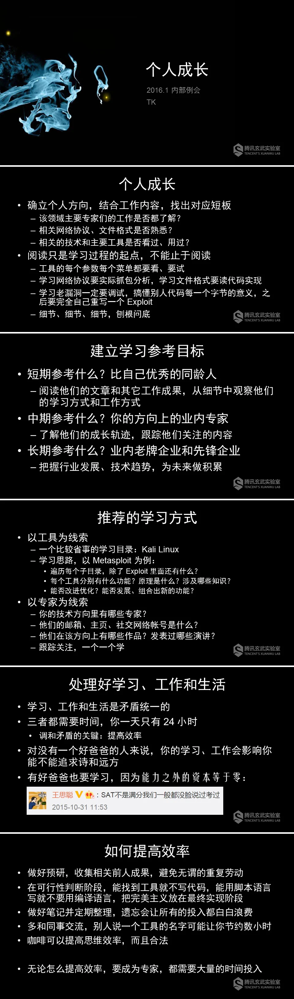
如何研究
十几年前流行过一篇文章叫《把信带给加西亚》。前些年又流行过批判这篇文章。研究工作大多和那位送信者面临的情况差不多：有一封信交给你，让你送给加西亚。加西亚在哪儿？没人知道。你得自己找，把信送到。
做研究工作，第一步是资料查找。这是从事研究探索最基础的能力，非常重要。而且也没有想象的那么简单，并不是每次把想问的问题输入搜索引擎都能得到答案。所以没找到答案可能不是没有答案。具体用哪些关键词、怎么组合这些词、怎么根据第一步搜索结果中的线索再提取关键词、怎么判断搜索结果有效性，等等，这些都需要反复实践和归纳思考。
通过资料查找，就可以知道是否有人做过类似工作，是否有可直接参考的资料。有时候你会发现全世界也没人做过类似工作。这时就需要针对目标，进行路径分析，看看有哪些路可能通往目标，然后再针对这些分解出的路径再进行资料查找。
这种目标分解有时候会不止一层。也就是说那些分解出来的路径也可能没有资料。那就需要针对路径再作路径分解。然后遍历这些路径。
从历史经验看，天分高、脑子快、手速快、对技术路径有敏锐直觉的人，当然能干得快一些。而一般人只要愿意坚持遍历路径，能扛得住长期得不到正反馈，大部分也能干出成绩。就是会痛苦一些。别人乐在其中，你苦在其中。不怕苦的话也行。
如何成长
刚参加工作的时候，部门接到各类任务，领导问我能不能干，我一般都说让我去试试吧。然后抓紧时间查资料，学习和这项工作有关的内容。
勇敢接受工作挑战，可以让人快速成长。也会让你有更多的机会，这是个马太效应的事儿。我记得当时的领导给过我这样一个评语：“不管什么工作，交给你我就放心了，反正你总有办法搞定”。
当然也要了解清楚需求，特别是对时间的要求，评估好是否在自己跳一跳能够得着的范围内。
别想那么多，先干起来再说
【敲代码的，如何转行挖掘漏洞？】
“本人写了五六年Linux C，应用层业务为主，技术含量不算太高；C语言比较熟练，C++仅做过Win下MFC的简单项目；Linux kernel大致了解，写过简单的驱动；对于理论、算法之类的比较薄弱。是否可转行Linux或Win下漏洞挖掘？还需要补充点什么知识？多谢前辈们的指点。”
给你个建议：别想那么多，先干起来再说。
我找到第一个漏洞的时候，还在医院实习，只会写几行批处理。为了写 PoC 需要学编程语言，看电脑报介绍过 Perl，就去买了本《Perl 编程 24 学时教程》。后来为了写更好的 Exploit 学了 C 语言。再后来，为了各种研究读各种 RFC、调各种程序、读各种代码、试各种工具，等等。
干这行，你永远不知道未来需要会什么。所以什么都可以不会，但不能学不会。
前阵子遇到一个对网络安全感兴趣的中学生
让我推荐一本书。我告诉他：
随便找一个书店，在网络安全分类下面随便找一本书，然后从第一页开始学。
如果觉得学不下去，那可能是书有问题，就换一本。
如果换一本还是学不下去，就再换一本。
如果换了三四本都还学不下去，可能就不是书的问题。
如果能学得下去，等这本书学完，接下来该学什么，你会有自己的想法，不需要再问别人了。
《Web前端黑客技术揭秘》好难，怎么读？
“我看了一下这两本书，都不是基础的，字里行间透露出的都是专业术语，感觉要晕啊，求教该学什么打基础，才能读懂”
用搜索引擎搜索每一个看不懂的术语。
学习最重要的是什么？
一桌菜，十几盘，有荤有素，有凉有热，怎么吃呢？你可以找一盘看起来好吃的，也可以找一盘离自己近的，都行。但是，得动筷子。不管怎么吃，最重要的是得动筷子。学技术也是一样。
有的人死活不动筷子，还不断念叨：“我要开始吃了。我马上就要开始吃了。我只要开始吃就能吃饱。我吃饱了就不饿了。你能不能告诉我该先吃哪一盘？先冷盘后热菜再喝汤这样是不是最好？但是我听说广东人都是先喝汤？这盘菜会不会太远了？这盘会不会太油腻？我吃饱了万一想拉屎你们这里有厕所吗？我真的马上就要开始吃了……为什么我现在还是饿？你能不能帮帮我？”
问哈CTF逆向大佬，如何才能系统的学习逆向?
『一个菜鸡WEB选手想学re』
我也是先学WEB后学逆向的。从我的经验看，首先应该抛弃“系统的学习”这个想法。因为逆向需要用人的自然语言逻辑去适应程序的机器指令逻辑，痛苦指数比较高。要拮抗这个痛苦，需要持续有正反馈。但“系统的学习”相对难以持续提供正反馈。
所以比较好的方式是给自己找一些难度中等，又比较有意思的目标来入手，比如给 notepad.exe 的菜单里增加一个功能。在这个入手过程中，先不用想系统不系统的问题，搞到哪儿算哪儿。入手之后，完成了最痛苦的那个门槛翻越，后面就和学别的差不多了。
学习网络安全最佳路径是什么？
“怎么学XX”这样的问题，有点类似问路。别人只能给你指个方向。但多数人想要的都是 GPS，给他规划好详细路线，到哪儿该变道，实时路况怎么样。多学一点额外的东西，就感觉自己吃亏了。
“从西直门到天安门怎么走？”
“坐地铁二号线到复兴门再转一号线。”
“我看地图这样是走了一个直角，感觉绕远了。有没有直接去的路？”
“有啊，你飞过去。别飞太高，不然起飞降落要多花不少力气。”
程序员如何转行？
有人跟我说以前是程序员，问能否转干安全研究。我问他有没有自己研究过什么，他说还没有，但一直很感兴趣。然后我问他感兴趣了多少年，他就沉默了。当然，这至少说明他脑子很快，迅速知道我想表达什么：天天对着电脑，真感兴趣怎么可能从来没研究过——你跟林志玲睡一个床能好几年一直盖棉被纯聊天？
学习多久能够达到网络安全的一定程度？
类似“能达到什么程度”、“有多好”这种问题，无法给出有意义的答案。因为问题本身没有意义。
一定要问的话，答案统一为：42。
信息安全方向就业要考哪些证书？
这个问题问得很笼统，如果也笼统回答的话，只能说：信息安全专业学生如果以后想从事专业对口的工作，需要信息安全专业技能，很多证书都可以提高就业机会。
具体举例子来说的话——比如在国内乙方就业，CISP 是有用的。因为安全企业如果要申请信息安全服务资质，就需要若干名有 CISP 证书的员工。而很多甲方招标会要求乙方企业有相关资质。
所以顺着这个思路，可以去查查各安全项目的招标公告，看看对企业要求了什么，再查查企业如果要具备这些要求，需要有什么证书的员工。那么这些证书就是显著有利于提高就业机会的。
想读网络安全的博士，如何联系导师
有个学电子工程的同学想去读一个网络安全方向导师的博士，问我该怎么找那个导师说。这类情况，我建议先把导师团队过去几年做的东西都看看，再把其他相关研究者的工作也看看。然后对这个方向进行一些思考，争取能有点自己的想法。然后再去找那个导师聊聊自己对安全的热爱，和对相关领域的学习和理解。
信息安全专业的发展会受到文凭的限制吗？
我们部门有名校博士，也有本科肆业的。企业招人的目标肯定是能力而不是文凭。有些大一大二的同学已经比硕士毕业生的平均水平高出很多。至少我个人会宁可要这些大一大二的同学，而不是招一个文凭漂亮但做不了事的人。
文凭是对能力的一种背书。就像我们只看标签无需品尝，就可以认为“勃艮第葡萄酒”很大概率上会比“门头沟葡萄酒”要强。然而，虽然文凭是获得入场资格的一种主流方式，但不是唯一方式。而且信息安全行业远比葡萄酒行业有更多更简单的方式让自己的能力为人所知。全真七子是一种发展路线，杨过也是一种发展路线。具体路怎么走，还得你自己根据自己的具体情况来判断。
为什么做安全攻击会有很多高中生都能做的比大部分受过高等教育的大学生强？
前几天一个老朋友找我，他需要找一个某方向的技术合作伙伴。这个方向需要对操作系统达到专家级的熟悉程度，做起来并不容易。我认识的能做这个的人都已经在大公司里有很好的职位了，于是我给他介绍了一个相关的开源项目。他联系了那个开源项目的作者，想拉他入伙。结果发现作者今年九月刚上大一，代码是高中时写的。
任何领域，是否能学有所成，除了天分原因外，还需要：
1、能接触到所需的学习资源
2、投入了足够的时间精力
文科的学习资源主要是书，相对容易获取，所以我们可以看到很多自学成才的作家。但多数理工科的重要学习资源都不太容易获取。比如你想学生物，就很难在家建立起实验室。
计算机领域（不止信息安全）是个例外。只需要有一台能联网的计算机，就可以学很多东西。那么这时候就主要看是否投入了足够的时间精力。
你们可以回忆一下自己的大学生涯，身边有多少人每天能投入 12 个小时在学习上？投入 8 小时的有多少？哪怕投入 4 小时的有多少？四年下来读了多少行代码？写了多少行代码？
所以被热爱技术、投入很多时间学习的高中生超过有什么奇怪的。
那些黑帽子黑客的收入很好吗？为什么很多人宁可犯法还要做呢？
程序员真能赚很多钱吗？
“如题，很好奇，因为看听一些网友说白帽子不太好做，收入低，很多人变黑了，之前搜索到很多报道黑客犯罪被捉的新闻，感觉很多人明明是犯罪还要做，所以很好奇，黑帽子收入很高吗？那么多人趋之若鹜。。。。。。而且，不就是发现漏洞和搞破坏吗？能赚到什么钱呢？为什么还要做呢？”
罗杰·阿诺德在《经济学》这本书中说过：人们常常会误解毒贩的收入，认为干了这行就能挣大钱，但即使是毒贩，收入仍然会符合边际生产率理论——简单地说，就是有多大能耐挣多大钱。所以，贩毒组织里当然有富可敌国的，但美国街头毒贩的收入大概也就平均每小时10美元，跟在麦当劳打工差不多。
现在网站越来越难渗透了，渗透测试这个方向还有前途吗？
『大家有没有发现，现在网站防御越来越高，漏洞也越来越少，安全在进步，网站也难渗透了，一些老牌工具很难扫出注入点了，如果弄不到后台其他的也做不了。现在的工具都是2010年前的了，现在教程也不多，以前的教程内容已经越来越不适合现在的网络了。现在也没有网站能给新手练手了。』
为什么用网上下载的工具很难扫描出安全问题了？因为你能下载别人也能下载。企业的安全部门里但凡只要有一个会用这些工具的人，就能自己把这些问题找出来，剩不到你手上。
十年前，很多企业的安全做的还很差，甚至没有网络安全部门，所以下载个工具扫一扫还能发现不少问题。现在一方面是企业自身安全能力提高了，另一方面网站开发者的安全能力也提高了。所以如果你只会用十年前的工具扫一扫，在今天自然会觉得很吃力。
然而，二十年前，随便找个工具扫一扫还可以发现很多远程管理弱口令、远程溢出漏洞。那么二十年前那些搞渗透测试的，在发现这些扫出来直接就能拿 root shell 的漏洞逐渐消失后是不是也很绝望？不是的。他们开始研究注入，研究 XSS，研究 CSRF，研究反序列化。所以他们才写出了你现在从网上下载的那些工具。
二进制安全也一样。二十年前的漏洞挖掘和利用都无比简单。二十年来，漏洞越来越难发现，越来越难利用。但二进制安全这个技术方向消失了吗？不但没有，而且发展越来越好。
对出身于普通家庭的人来说，工作有难度有门槛是好事。如果一个工作不难，那通常也不挣钱。如果又不难又还能挣钱，那人家为什么要让你来做的呢？找自己的堂侄表弟小舅子不好吗？
学习网络安全时遇到瓶颈了该怎么办？
“基础的那些sql，xss，csrf那些基本的都会了，但是想更进一步，不知道该怎么办了，有点迷茫，然后我就开始学习python和php，但是，学了一个月，回想一下，发现现在连一个小的脚本都不会写，应聘公司想以实习的目的去学习（ps：中专毕业的渣渣），没有上大学是不是很难应聘公司啊，请大神指点我一下，谢谢”
从事任何方向的技术研究，不知道该干什么的时候，就问自己四个问题：
•这个方向上最新进展是什么？ 都知道吗？
•这个方向上最著名的专家有哪些？他们的研究都看过吗？
•这个方向上最著名的技术社区有哪些？精华帖都看过一遍吗？
•这个方向上最重要的文章、工具有哪些？文章都看过吗？工具都分析过吗？
2016-10-16
http://t.cn/EzHuEP5
高层次的人往往不愿意与低层次的人交流，那么低层次的人怎样进步？
姚期智说：
> 我看不出你的证明有什么错误，你的证明是对的。你要的杨振宁先生和张益唐先生的邮件地址分别是：xxxxxxxx、xxxxxxxx，你自己去跟他们联系。
张益唐说：
> 这件事还是由你自己定夺，你说你证明了黎曼猜想就证明了黎曼猜想，你说你没有证明黎曼猜想就没有证明了黎曼猜想。
梦参老和尚说：
> 我走的地点多，有的人曾经跟我说：“能像弘一法师、慈舟法师、虚云老和尚、倓虚老法师那些大善知识，在哪里有？老法师你给我介绍一个，我去跟他学习。
> 我说：“就是弘一法师在，你这个样子，他理都不理你。”
> 弘一法师，不是那么容易亲近的。他寮房的门永远是关着的，你想跟他说几句话，他没有时间跟你说。
> 慈舟法师，整天披着衣，讲完课，他就围着佛堂转：阿弥陀佛！阿弥陀佛！阿弥陀佛！
> 倓虚老法师，他的事务多，接触的政府官吏多。我们这里有几位道友，曾经跟着他到过华南，如果你们想跟他多亲近，多说几句话，他没有那个时间，并不是他不慈悲。
> 虚云老和尚，他在禅堂讲开示，就是你亲近他的时候。不过一个月他才讲两次，你可以到得了他身边吗？即使他真的在你身边，你能得到他的智能吗？
歌德说：
> 读一本好书，就是和高尚的人谈话。
2019-02-01
http://t.cn/EcJFjaX
有哪些 Linux 逆向相关的学习资料推荐？
SEEDLabs（http://t.cn/R2pAXYK ）是雪城大学杜文亮教授创立的，十几年来得到了全球上百所大学的认可。建议每个认为找不到合适学习资料的人都看看，之后至少可以对自己到底是不是真想学有更接近于真实的认识。
分享一个学习资料，从DEFCON 1 到 DEFCON 24 的所有资料，共 740G：magnet:?xt=urn:btih:b3f355fdc4f580b4496205878c843e796d23e037
“所有资料”的意思是不仅包括所有幻灯片，还包括演讲语音、语音的文本、CTF 的抓包、音乐专辑、Badge 的设计，等等等等。
如果在上面没有找到答案。
有很多问题的答案其实是“你的智力不适合干这个”，但又不能直接这么说，必须绕很大一个弯子，但由于毕竟“你的智力不适合干这个”，所以绕个弯子对方就看不懂这层意思了……
不要试图教育成年人。
对很多人来说学习本身就很苦，成年人接受教育苦上加苦（图1）。大部分人的思想不过是经历的总和。希望人能跳出经历看问题这要求也有点太高了（图2）。再说了，你凭什么教育别人？为什么不能是别人教育你（图3）？所以，相对来说，哪怕嘲讽都更有意义一些（图4）。
图一：
思维能力上的阶级矛盾，比经济能力上的阶级矛盾
更不可调和。
因为钱本身不会带来痛苦。经济能力相对低的人，
不会拒绝变得富有。但思维能力增强的过程，很可
能要伴随着对过去自我的否定。这对成年人来说往
往是不可接受的。
图二：
左野五（野生五毛的简称，注意和北野武相区别）和
右野五貌似针锋相对，其实是同一类人。他们并不
真的理解所“信仰”的东西。左野五可能当初被某个
右派抢了女朋友，于是愤然左了。右野五可能当初
被某个左派占了保研名额，于是愤然右了。其左也
勃焉，其右也忽焉。
图三：
有人说现在不是五四那时候了，别再什么德先生赛
先生，别再搞启蒙了。我觉很有道理
启蒙，这个“启”字就不好。启迪，启发，启示，都
是一副我懂你不懂我行你不行的样子，充满了知识
分子的傲慢。如今可不比一百年前了，谁没上过
网，谁不会看短视频？“一分钟看懂XXX”,明白
不？所以说，东风吹，战鼓擂，现在的世界谁启
谁？
确实不应该再搞启蒙了。把“启”字去掉，留一个
蒙”，大家才能喜欢你。
图四：
为什么选择嘲讽呢？因为对于有些问题，嘲讽就是
所有选择中最有意义的那个。
有两类事情需要格外关注:
一种是 "迟早肯定会发生，但是如果因为暂时没发生，就假装不会发生而不去准备，那么最终会遭遇重大甚至毁灭性损失。"
还有一种是 "迟早肯定会发生，但是如果因为暂时没发生，就假装不会发生而不去准备，那么最终巨大收益来临时，也只能眼睁睁看着无法捕捉。"
如何做事？
中国每年大概有五百万理工科毕业生。其中堪称优秀技术人才的自然是少数。然而，技术好又会做事的更是极少数。
什么是“做事”？就是确立目标、分析路径、规划资源、制定方案、迭代执行。优秀技术人才，自然是能把技术做好的人。但从做技术到做事，中间还有很远的距离。大部分人可能终其一生都不会做事。
前阵子一个同学跟我说想去 BlackHat 演讲。我说你是怎么规划这件事的？他一愣，半天说不出话。他定了目标，但没去想后面的事情。
然后我问他有没有注意到 BlackHat 有些演讲水平很高，但也有一些不太行的。他说确实是这样。然后我说你有没有分析过为什么会这样？他说没有。我说如果你分析一下那些不太行的演讲为什么也能上 BlackHat，是不是会对你达成目标有帮助？他恍然大悟。
我说这只是一个小点，还不算完。你知道怎么才能上 BlackHat？他想了一下说是投稿被接受。我说那么是不是应该收集既往演讲的内容摘要，分析被接受的投稿有什么特点。
然后我说你有没有想过 Blackhat 演讲者和主办方之间是什么关系？他说不知道。我说本质是商业合作关系。主办方给演讲者提供曝光机会和机票酒店，演讲者用自己的内容帮主办方把票卖出去。所以投稿要让别人看了觉得是有利于卖票的。
我又问你有没有想过 Review Board 里的人是怎么挑选演讲的？有没有想过如果你在 Review Board 你会看重哪些？有没有了解过 Review Board 里的那些人？其中和你技术方向相关的人有哪些？这些人历史上做过什么？他们可能会对哪些东西更青睐？
说了这么多，还只是分析路径这一步。后面规划资源、制定方案、迭代执行都还需要更多的思考。当然，这个同学刚毕业，不会做事很正常，后面还有时间慢慢学。但如果你毕业已经很久了，发现自己还不会做事，就要开始留心培养这方面的能力了。在学校里我们的成长主要靠学习知识。毕业后，更重要的成长是学会做事。
规划资源是通往成功的关键一步。假设你已经明确了目标，并清晰地分析了路径。那么，你有没有考虑过，你需要哪些资源来实现目标？资源不仅仅是金钱，还包括时间、人力、信息等。
我曾遇到一个团队，他们想要开发一款革命性的应用程序。然而，他们的预算有限，团队成员也各自忙于其他项目。于是我问他们，资源从哪里来？他们一时语塞。我说，苏格拉底曾问，什么是资源？资源在何处？如何利用资源？这些问题你们都要思考。
首先，你们有没有清楚地列出所有需要的资源？例如，开发这款应用需要哪些技术支持？需要多少开发人员？需要哪些设备和软件？以及，最重要的，需要多少时间？你们是否计算过，每个团队成员每天能投入多少时间？这些时间是否足够？如果不够，如何调整？
其次，资源如何分配？假设你们的时间有限，如何优先处理最关键的任务？哪些任务可以外包？哪些任务必须团队内部完成？有没有考虑过与其他团队合作，共享资源？
再者，有没有考虑过资源的获取途径？例如，如果预算不足，是否可以通过融资、众筹等方式获得资金？有没有想过利用免费的开源软件，或者寻找志愿者的帮助？苏格拉底曾说，资源不在多，而在于如何使用。你们能否最大化现有资源的效用？
最后，资源如何监控和调整？资源规划不是一成不变的。在项目进行过程中，资源需求可能会发生变化。你们有没有制定相应的监控机制，随时跟踪资源使用情况？如果发现资源不足或分配不合理，能否迅速做出调整？
你们是否在不断反思和改进自己的资源规划？资源规划是动态的，需要不断调整和优化。通过这些思考和实践，你们才能逐渐掌握如何合理规划和使用资源，最终实现目标
制定方案是将目标和资源有效结合起来的过程。假设你已经明确了目标，分析了路径，规划了资源。那么，如何制定一个切实可行的方案呢？
首先，方案必须具体明确。你有没有将目标细化为具体的步骤和任务？每一步需要做什么？需要哪些资源？需要多少时间？有没有设定明确的时间节点和里程碑？这些问题都需要仔细思考和规划。
其次，方案必须可行。你有没有评估过方案的可行性？例如，假设你需要在三个月内完成一个复杂的开发任务，是否真的可行？有没有考虑到可能的风险和挑战？如何应对这些风险？有没有制定相应的应急预案？
再者，方案必须灵活。方案制定后，是否可以根据实际情况进行调整和优化？有没有设立定期评估机制，随时检查方案的执行情况？如果发现问题，能否迅速调整方案？
最后，方案必须得到团队的认可和支持。有没有与团队成员充分沟通，让每个人都清楚自己的任务和责任？团队成员是否有足够的动力和信心去执行方案？如果遇到阻力，如何解决？
你是否在不断反思和改进自己的方案？方案不是一成不变的，而是需要不断调整和优化的。通过这些思考和实践，你才能逐渐掌握如何制定一个切实可行的方案，最终实现目标。
迭代执行是将方案付诸实践，并不断优化改进的过程。假设你已经制定了详细的方案。那么，如何高效地执行，并在执行过程中不断改进呢？
首先，迭代执行需要分阶段进行。你们有没有将项目划分为多个阶段，每个阶段完成后进行评估和总结？有没有在每个阶段设定明确的目标和任务？这些任务是否具体明确，易于执行？
其次，迭代执行需要不断反思和总结。在每个阶段结束后，你们有没有进行反思和总结？有哪些任务完成得很好，值得继续保持？有哪些问题出现，如何解决？有没有制定相应的改进措施？
再者，迭代执行需要灵活调整。在执行过程中，方案可能需要不断调整和优化。你们有没有设立定期评估机制，随时检查执行情况？如果发现问题，能否迅速调整方案和策略？ 最后，迭代执行需要团队的协作和支持。团队成员有没有定期沟通，分享各自的经验和心得？有没有设立明确的责任分工，每个人都清楚自己的任务和责任？团队成员是否有足够的动力和信心去执行方案？
100 个人戒烟，最终成功的只有 2 个。
其中有 75 个人在 3 天内放弃。事实上有 65 个人在第 1 天就放弃了。
很多事情都如此，说难也难，说容易也容易——哪怕能坚持 1 天，也就超过大部分人了。
我学东西基本都是靠自己摸索。
先实践，再理论。虽然大部分轮子我都能自己摸索着重复造出来，但这样有时候要花一些成本。
即使是加工木材吃刀量也不能太大——昨晚连续搞断两支铣刀后我终于明白了这个道理。
看到有些人说消费降级，又有人说支持国货。
我这几年没有消费降级，不过倒是一直以国货消费为主。因为我就从来没有消费升级过。
这么多年来，我春夏秋冬都是 T 恤牛仔裤。冬天就外面再加一件厚的。洗脸一直是肥皂。拿飞行里程积分换，一千多积分换一打肥皂，我能洗好几年。
我也会花钱买一些昂贵的东西，但那并不是为了满足日常生活的物质欲望。我始终对物质欲望敬而远之。
这并不是没有能力追求，也不是俭省。因为物质欲望会损害自由。你的人生越依赖外物，你就越不自由。
如果每个月必须要消费至少三万元才能获得快乐，那么你就会非常害怕失去能维持现在生活的这份收入，于是你就要在所有方面为了维持这个生活水平而让步。如果你特别珍爱一只茶壶，那么别人只要威胁摔碎这个茶壶，你就只得听命于他。古人说“不役于物”“无欲则刚”，都是这个道理。
我这些年的一个重要修炼就是让自己可以在棒子面粥和鲍汁捞饭里找到同样的快乐。
人性就是害怕不熟悉的和不确定的事情。
所以需要把复杂的东西拆解，拆成简单熟悉的事情，从一件小的容易达成的事情开始，完成后就能很大程度消除恐惧，完成一件件小事情最终就能做成复杂的事情
但怎么拆解是很难的，最好就是有老司机直接告诉你，或者有本书和视频告诉你，否则就要自己摸索，走很多弯路。
现在有 ChatGPT 这类大语言模型确实让学习门槛降低了很多，因为相当于有一个老司机，在带着你，帮你把复杂的任务拆解成简单的，帮助你从简单的事情做起，去达成一些成就，减少对未知和不确定的恐惧，另外也可以有效减轻拖延症，能从一个简单的任务开始做起来。
大部分人一辈子会有三到五次大机会。
也就是大概十年一遇。所谓大机会就是只要抓住一次就够了。无论多么平凡的人，大机会到眼前的时候，能看到，能抓住，能拼搏一下，就能改变命运。
另外大概每一两年会有一次小机会。一个小机会不足以改变命运，但多个小机会叠加的效应是指数的。如果能连续抓住几个小机会，也足以改变命运。
以上所说的机会是命运的随机。这些机会是否出现，什么时候出现，跟个人努力关系不大。但能不能看到机会，能不能抓住机会，这就要靠自己了。大部分人根本看不见机会，更不知道应该为此去拼一把。
《Star Trek: The Next Generation》里
企业号的新版制服臂章上有一行字：“AD ASTRA PER ASPERA”。这是一句古代欧洲谚语的倒装，原文是：“Per aspera ad astra”。中文一般翻译作“循此苦旅，以达天际”。Elon Musk 为自己的几个孩子以及员工子女开办的学校就叫 Ad Astra School。
其实这个道理在很多文化中都有类似表述。只是眼下人人想上天，却不愿循此苦旅了。你要再提这事儿，他们就会充满智慧地反问：“我循此苦旅你能保证我一定上天吗？”
“别，千万别。您躺好，别累着。”
每个时代的人都在感叹
十年前赚几倍，几十倍的机会真多，现在很困难，没有什么机会了。这个很大程度上是事后诸葛亮，事前猪一样， hindsight bias。过去的所谓机会，绝大多数当事人，在当时完全没有想到会回报那么大。今天许多地方肯定也有很多机会，但是会在多数人没有想到，拒绝深入研究的领域而已。
为避免重复 "事前猪一样"的错误
必须不断拷问自己: 某个资产的爆发，是过了什么节点以后才成为必然? 自己在那个节点时为什么没有理解这个资产的巨大潜力? 在当时那种条件下养成什么阅读和信息收集的习惯才有可能促成这种理解力? 要养成什么习惯才有足够弹药随时重仓入场?
工程师身上最优秀的两种特质，一个是探索欲，一个是学习力。
对未知充满着好奇，和对模糊中确定性部分的强烈追求，都会让探索持续进行，这是学习的源动力。
而学习是提问的艺术，定义问题的能力能够反映学习力，有些问题用来剖开问题的表象，而有些问题能够直达问题的本源，两种提问都很重要，前者领人进门，后者创造增量的价值。
ChatGPT 已经完成了人类知识的浓缩，在知识的记忆上，人类比不过机器，但是在知识的运用上，机器仍然只是辅助工具，但此时，学习力也显得更为重要，人类需要从更宏观和更全面的角度了解知识的构成，这样才能让机器更好、更快的转起来。
永远只有少数人能精通一门手艺，因为永远只有少数人会尽力。
这篇文章贴出来到今天差不多二十年了，仍然大有意义。因为技术一直在变，人却从来没变过。永远只有少数人能精通一门手艺，因为永远只有少数人会尽力。
发信人: cloudsky (小四), 信区: Security
标 题: 你尽力了吗
发信站: 武汉白云黄鹤站 (Mon Apr 17 19:52:54 2000), 站内信件
很多人问如何入门如何入门，我却不知道要问的是入什么门。
很少把某些好文章耐心从头看完，我这次就深有体会。比如袁哥的sniffer原理，一直以为自己对sniffer原理很清楚的，所以也就不曾仔细看过袁哥的这篇。后来有天晚上和袁哥讨论，如何通过端口读写直接获取mac地址，为什么antisniff可以获得真正的mac地址，而不受更改mac地址技术的影响，如何在linux下获得真正的mac地址。我一直对linux下的端口读写心存疑虑，总觉得在保护模式下的端口都做了内存映象等等。结果袁哥问了我一句，你仔细看我写的文章没有，我楞，最近因为要印刷月刊，我整理以前的很多文档，被迫认真过滤它们，才发现袁哥的文章让我又有新认识。再后来整理到tt的几篇缓冲区溢出的，尤其是上面的关于Solaris可装载内核模块，那就更觉得惭愧了。
以前说书非借不能读，现在是文章留在硬盘上却不读。其实本版已经很多经典文章了，也推荐了不少经典书籍了，有几个好好看过呢。W.Richard.Stevens的UNP我算是认真看过加了不少旁注，APUE就没有那么认真了，而卷II的一半认真看过，写过读书笔记，卷III就没有看一页。道格拉斯的卷I、卷III是认真看过几遍，卷II就只断续看过。而很多技术文章，如果搞到手了就懒得再看，却不知道这浪费了多少资源，忽略了多少资源。BBS是真正能学到东西的地方吗？rain说不是的，我说也不是的。不过这里能开阔人的视野，能得到对大方向的指引，足够了。我一直都希望大家从这里学到的不是技术本身，而是学习方法和一种不再狂热的淡然。
很多技术，明天就会过时，如果你掌握的是学习方法，那你还有下一个机会，如果你掌握的仅仅是这个技术本身，你就没有机会了。其实我对系统安全是真不懂，因为我一直都喜欢看程序写程序却不喜欢也没有能力攻击谁谁的主机/站点。我所能在这里做的是，为大家提供一个方向，一种让你的狂热归于淡然的说教。如果你连<Windows NT设备驱动程序编写>、< win9x系统编程>都没有看过，却要写个什么隐藏自己的木马，搞笑。如果你看都不看汇编语言，偏要问exploit code的原理，那我无法回答也不想回答你。总有人责问，要讨个说法纭纭，说什么提问却没有回答。不回答已经是正确的处理方式了，至少没有回你一句，看书去，对不对，至少没有扰乱版面让你生闷气。Unix的man手册你要都看完了，想不会Unix都不行了。微软的MSDN、Platform SDK DOC你要看完了，你想把Win编程想象得稍微困难点都找不到理由。
还是那句话，一个程序员做到W.Richard.Stevens那个份上，做到逝世后还能叫全世界的顶级hacker们专门著文怀念，但生前却不曾著文攻击，想想看，那是一种什么样的境界，那是一份什么样的淡然。我们可以大肆讨论技术问题，可以就技术问题进行激烈的卓有成效的讨论，却无意进行基础知识、资源信息的版面重复。我刚在前面贴了一堆isbase的文章，开头就是主页标识，却在后面立刻问什么主页在哪里？前面刚刚讨论过如何修改mac地址，后面马上又来一个，前后相差不过3篇文章。选择沉默已经是很多朋友忍耐力的优异表现了。很多东西都是可以举一反三的。vertex的lids，被packetstorm天天追踪更新，你要是看了THC的那三篇，觉得理解一个就理解了一堆，都是内核模块上的手脚。你不看你怎么知道。
我不想在这里陷入具体技术问题的讨论中去，你要是觉得该做点什么了，就自己去看自己去找。没有什么人摆什么架子，也没有什么人生来就是干这个的。你自己问自己，尽力了吗？
大约十年前，我回答过一个“零基础如何学习挖漏洞”的问题。
我说我是先从看漏洞公告开始，入门阶段至少看了两三千条历史漏洞。还要看漏洞分析文档，在看的过程中学习调试和汇编。
在我当年的那条回答下面，时任 360 技术总裁的谭晓生说他当年自学技术是从逆向研究老的 DOS 病毒开始，还逆向了 WPS，并自己模仿写了一个；后来创办了微步在线的薛峰评论说他当年也是从看漏洞公告开始，翻遍了漏洞库里所有的老漏洞。
“零基础如何学XXX”这类问题很常见，答案都是一样的：先把零基础变成一基础，再变成二基础，再变成三基础。谁不是从零基础开始的呢？强调“零基础”，潜台词就是不愿付出入门的功夫，希望有神奇的办法能跳过打基础的阶段。这种事情在武侠小说里有，在现实中是没有的。
天赋和努力的关系其实九年制义务教育阶段学的那点辩证法就能讲清楚。两者相互联系，共同作用。我们控制不了天赋，但可以尽量努力。
如果认为能否努力其实不受我们自己的控制，实际上就是否定了主观能动性，甚至否定了自由意志。就为了能给自己的懒找点理由，你看多下本钱。
如果把努力归因于天赋，那么不努力自然就是天生懒骨头。当然如果你说他们天生懒骨头，他们也不高兴。他们可以自己强调“努力也是天赋”，但你不能说他们天生懒骨头。
不知道这些人在看残奥会的时候，还有没有脸接着这么说。
做事情要从小处做，看事情要从大处看。
最近两年我一直推荐大家看《论持久战》。“七七事变”之后，很多人都觉得中国要完了。当时如果从小处看的话，确实军队也不如日本，国力也不如日本，啥都不行。所以当时不少人觉得只能投降。有点骨气的则准备以身殉国，但也没觉得中国能赢。钱穆写《国史大纲》，就是为亡国做准备，希望被日本统治的中国人还能记得自己的文化和历史。
所以，结合当时的背景，才能明白《论持久战》的厉害之处。《论持久战》从大处看，看到了日本必败中国必胜的大势。乐观，但不是盲目乐观，是清清楚楚的乐观。
当然，在日本的角度，如果从小处看，那就全都是优势，就很乐观，“三个月灭亡中国”。要是从大处看，就不乐观了。所以日本那会儿对《论持久战》选择了视而不见。
看清楚大势，看清楚规律，站在大势和规律一边，耐心等待。
今天是七七事变纪念日。
《论持久战》你们还没看过的话推荐看一看。我以前还推荐过《中国社会各阶级的分析》。子任的作品比较多，首推这两篇。读明白了，能帮你看懂大势，让你做事有章有法，无忧无惧。就算读不明白，也多少能增长一点智慧。
不能提供经济支持的男人能要吗？
“觉得如果男人给不了女人经济支持 ，那女的还要男的做什么呢？女人去找个更优秀的基因来ons生出下一代不更好？（别说不可能，不负责任的ons优秀帅哥应该还是愿意的吧）没有经济支持的男的反正也靠不了。不是吗？”
如果爱情是无条件的，那就意味着爱情是随机的、随便的，可以随便爱上什么人，早晨出门碰上的第一个人就是佳侣良伴，就像另外60亿人一样。
所以，爱情是有条件的。爱一个人，实际上是爱其所具有的某些属性，比如：才华、智慧、谈吐、教养——目前，声称自己爱这些内在的东西，是毫无舆论压力的。但能不能爱其身材容貌呢？
能，但最好别说出来。因为有人看了会不开心，有人不开心就开喷。
不过，无论嘴上怎么说，但大脑的下视丘和边缘系统很诚实。
而至少被大家尊崇的那些描绘美好爱情的文艺作品也毫不避讳这一点。
罗密欧：“爱着她媚人容貌，把一片痴心呈献给仇雠”。
朱丽叶：“恋着他风流才调，甘愿被香饵钓上了金钩”。
——《罗密欧与朱丽叶》第一幕第四场
能爱身材容貌这些外在的东西，能不能爱能力、地位、财富呢？
能，但最好别说出来。因为有人看了会不开心，有人不开心就开喷。
由爱情到婚姻，又要引入很多因素。因为婚姻是比较重要的事，所以没有恋爱法，但有婚姻法。虽然人们嘴上都说不希望婚姻和钱有关，但很奇怪的是：所有国家的婚姻法，都有和钱有关的条文。
2015-03-31
http://t.cn/EzWU3GA
我读过不少对美国底层群体、黑人群体处境的分析。
主流观点认为他们陷入了一个跳不出来的死循环，一代又一代在受教育程度低，收入低，单亲率高，犯罪率高，失业率高这个循环里转圈。
我觉得中国人最应该庆幸的是祖先们早就在文化层面完成了从体力崇拜到脑力崇拜的转变，变成了一个 MEME 意义上的智慧种族。从那之后，“读书上进”四个字成为了我们文化中最深刻的痕迹。即便大字不识一个的人，也知道要尽可能让后代读书。即便在风气最差的学校里，孩子们也不会因为学习成绩好而受欺负。无论环境多糟糕，有了这个文化烙印，就为跳出恶性循环提供了一种可能性。这也是为什么美国的华人移民，即便是偷渡过去一文不名来到美国的人，他们的后代也有更大概率过上和父辈不一样的生活。
每年 3 月 5 日是学雷锋日。不过现在不怎么提了。雷锋说过一句话：“在工作上，要向积极性最高的同志看齐；在生活上，要向水平最低的同志看齐”。这句话有着深深的五六十年代味道，看起来仿佛已经不合时宜。其实换成今天的语言就是：提高能力，控制欲望。
你的爷爷见过的最好看的姑娘就是村口的小芳，村里生活最好的人家也不过顿顿能吃炒鸡蛋。而现在，你一打开屏幕，满眼的香喷喷紧绷绷鼓胀胀，戴着沛纳海去爱琴海。你很难不为之所动。然而如果为之所动了，也很难不焦虑。
数字技术让我们获取信息变得异常便利，让我们更容易提升自己的能力，同时也更容易产生欲望。但能力提升的速度是多项式级别的，而欲望则很容易以指数级速度增长。所以，想减轻焦虑，提升能力是可选项，控制欲望是必选项。因为能力的提升永远赶不上欲望的膨胀。
利用欲望让自己努力，控制欲望让自己快乐。
这就是我说的“利用欲望让自己努力，控制欲望让自己快乐”
可惜多数人被欲望控制而烦恼，又不愿利用欲望只想躺平。
人在一两岁的时候，完全不会控制欲望，想得到什么，立即就要满足。大一点之后，慢慢才学会忍耐和等待。再往后的整个一生，大概是先学会控制自己的欲望，然后学会利用别人的欲望，再然后学会利用自己的欲望。
精神上的痛苦大多来自能力和欲望的差值。而欲望又大多来自和他人的比较。
住 1000 万的房子的人，看到 3000 万的房子也会产生痛苦，会觉得 1000 万的房子是如何局促不便，并认为自己只要住了 3000 万的房子自然就不再想别的了。其实住 400 万房子的人看了 1000 万的房子也是一样的痛苦，一样地认为自己只要住了 1000 万的房子就不再想别的了。
《金刚经》讲了一大堆，什么梦幻泡影，什么如露亦如电，都是为了讲最终做到四个字：如如不动。什么是如如不动？庸俗地说，就是看到别人戴劳力士，不为所动；看到别人开保时捷，不为所动；看到别人 3000 万的房子，不为所动。当然，《金刚经》的如如不动没这么简单。但做到了如如不动，自然也就不会为这些所困。
你可以讲佛教是消极的，可以认为对世俗生活没有指导意义。然而，《孟子》也讲“不动心”。而且《孟子》的“不动心”和《金刚经》的”如如不动“有很多共通之处。只不过《金刚经》的”如如不动“是结果，是出世的结果。《孟子》的“不动心”是方法，是入世的方法。
孟子有一句很著名的话：“我善养吾浩然之气”。“浩然之气”是孟子特别自豪的东西。那为什么要有“浩然之气”呢？孟子认为有了浩然之气，就能由内而外做到不动心。所以后来苏轼说“一点浩然气，千里快哉风"——有了浩然之气，不动心，才能获得内心的自由，才能千里快哉风。
那么，不动心了，固然少了痛苦，但是不是也就无欲无求了？是不是就不思进取了？其实哪怕《金刚经》里也没有这个意思——还有比想成佛更大的进取吗？
我以前说过“学会利用自己的欲望”：http://t.cn/A6Ntk2qn ，后来又说“利用欲望让自己努力，控制欲望让自己快乐”http://t.cn/A6Ntk2qm 。想要多大的房子都是没问题的，而要避免由此而带来的痛苦，就要正视欲望，像观察别人的欲望一样观察自己的欲望，像孙悟空元神出窍看着自己的肉身，这样才能驱动欲望而不是被欲望所驱动，然后做到利用欲望，控制欲望。
珠穆朗玛峰，登顶的数字每增加 12，死亡数字就会增加 1。
目前珠峰上已经死过 300 多人，有 200 多具尸体还硬梆梆冻在那里。
登珠峰这么危险，为什么不把珠峰大本营关闭呢？
人有没有作死的权利？人有没有作死的自由？做出选择，承担后果，这是成年人应该面对的。
希望什么都有人管，最后就会得到什么都有人管，再想不要管都不行。
结不结婚，生不生孩子，登不登珠峰，上不上班，都是选择。成年人，有权利为自己做选择，有义务为自己的选择买单，有责任承担选择的后果。
自己的事，自己选择
我认识两个人。其中一位曾想朝某方向发展，但他其实并没有为之付出努力，自然也不会有结果。他从此对成功转到某方向上的人就有些敌视。另一位性格内向，也无意去改变。但他一直想拥有必须性格外向才可能拥有的东西，并认为自己得不到那些是不公平的。这两个人在自己的事业上都非常成功。
自己的事，自己选择，自己承担代价和后果。这不仅是人类，也是过去现在未来任何一个意识体的命运。
无论自己怎么提问，无论别人怎么回答，都不会改变选择所需要承担的代价和后果，甚至也无法纾解对不确定性的焦虑。
我来过，我爱过，我拥有过，我感受过——这是一种心境。当然也可以认为人活百岁终有一死，太阳六十亿年后也会凉掉——所以地球没意思，人类没意思，世界冠军没意思，诺贝尔奖没意思，什么都没意思。
心境是自己选的。选择什么样的心境，就是选择怎么度过人生。Your life, your choice.
永远内卷
有人认为要社会和谐人人满意，关键还是要实现共产主义。等实现了共产主义，大家都是同一个阶级，就不会有这么多怨气了。
告诉你一个秘密：我们其实已经实现共产主义了。
半个世纪前，老大哥那边认为共产主义是能天天吃“古拉希”，就是土豆炖牛肉。咱们这边认为共产主义就是“楼上楼下电灯电话”“点灯不用油耕地不用牛”。
你看，是不是实现了？
凡是涉及人性的问题，永远回避不了一个词：欲壑难填。
即便普及了哆啦A梦，想要什么随时变，也一样不行的。你能普及哆啦A梦，能普及静香吗？把静香分配给胖虎，那静香的共产主义在哪儿？
智人是由自然选择和性选择两个筛子筛出来的。我们的基因里刻着追求最好的物质，追求最好的异性，追求最好的一切。最好，是比较出来的。有最好，就一定有最不好。
所以，无论物质多丰富也不可能让大家都满意。
所以，永远“内卷”。
你会不会在突然间，觉得一切都没意思？
白居易写过一首诗《自感》：
宴游寝食渐无味，杯酒管弦徒绕身。
宾客欢娱僮仆饱，始知官职为他人。
我们来捋一下白居易当时的心声：
——哎呀，感觉吃喝玩乐也没啥意思啊！我辛辛苦苦做官赚钱，换来的也就是让客人们开心，让仆人们能吃饱——这不是我想要的人生！
吃喝玩乐，有仆人伺候着，他还是不开心。他觉得自己挣钱都是为别人挣的。只想着自己养活了仆人，完全不去想自己还享受了仆人的服务。
然而，白居易还写过另一首诗，叫《偶作寄朗之》，前两句是：
历想为官日，无如刺史时。
欢娱接宾客，饱暖及妻儿。
你看，在这首诗里，白居易又很乐观。认为被贬为刺史的时候很快乐。因为能经常跟朋友吃饭，能让家人生活有保障，就挺开心的。
同一个白居易，谈同样的事情，情绪也会完全不同。因为人开心不开心是受心境影响的。
我来过，我爱过，我拥有过，我感受过——这是一种心境。当然也可以认为人活百岁终有一死，太阳六十亿年后也会凉掉——所以地球没意思，人类没意思，世界冠军没意思，诺贝尔奖没意思，什么都没意思。
心境是自己选的。选择什么样的心境，就是选择怎么度过人生。Your life, your choice.
2021-06-27
http://t.cn/A6fqQhxt
我最近跟我儿子说的最多的一句话就是
“想一下，你这个问题有没有答案？我有没有可能知道？或者任何人有没有可能知道？”
坚持了一段时间后，我儿子终于比大部分发私信提问的网友强一点了。
活下来，斗争
原图看不到了，很容易就找到几个类似的图，大概就是这个意思。当然也可以看出来在自然界这种情况多么普遍。总之别死。江东子弟多才俊，卷土重来未可知。活下来，斗争。
实际上这颗小树苗不太可能是下面那个树桩长出来枝条。应该是不知道什么树的种子掉到树桩子的缝隙里发芽长出来的。想象一下，翟欣欣带着苏享茂的钱跟别人生了一个孩子，差不多就是这幅图。所以，不管你的人生发生了什么，别死
我发现只要提到努力进取这样的话题
都有人义正严辞地表达类似“想让我努力进取除非给我很多钱”这样的意思。本科毕业二十二，研究生毕业二十五，随便一晃就三十了。年轻时候对自己不负责，和那些努力的同龄人之间差距越来越大，机会也会越来越少。马太效应是很可怕的。
有些人认为我似乎很擅长解决我自己遇到的问题，所以认为我也应该很擅长解决他们遇到的问题。然而绝大部分人从我这里得到的答案都是“我不知道”。因为我的确不知道。
如果你至少完成了小学二年级的课程，那么应该还记得《小马过河》。那里面就已经把道理讲的非常清楚了。
你来到一个路口，想知道该往左还是往右。你拿起电话，随便拨了一个号码，问道：我现在应该往哪边走？
你知道你此刻在哪里，你知道你从哪儿来想到哪儿去，你知道自己家住哪里年纪多大体力多强，你知道自己早上吃的什么身上带了什么，你知道天气是晴是阴有没有风有没有雨，你知道前方是草是树有没有鸟有没有驴——此刻，你的记忆，你的视觉听觉嗅觉中包含了和这个选择有关的若干亿字节的信息。但你不可能把若干亿字节的信息传递给别人。这就是为什么对类似问题的提问几乎都是没有意义的。
当然，解决这个问题也许只需要若干亿字节中的 1 字节。但你不可能知道需要的是哪 1 字节。知道解决问题需要哪些信息的人，通常自己就知道该怎么解决问题。
所以，我不知道。
推荐算法
1、它没有灵魂，却很了解你的灵魂。
2、它利用你的欲望，诱惑你，操纵你。
3、它让你觉得自己很强大，很重要，很有智慧。
4、它让你沉浸在傲慢、嫉妒、愤怒、怠惰、贪婪、暴食、色欲之中。
5、它让你付出本不该付出的时间金钱去做本不该做的事。
6、它能以任何形象出现，并同时诱惑所有人。
在中世纪，它被称作魔鬼。现在则被称作推荐算法。
大部分问题的答案其实都是“你提供的信息太少，不足以用来分析该问题”
然而，知道分析一个问题需要哪些信息的人，一般也不需要问别人。
所以，大部分“提问”都是无效的，能解决问题的是“咨询”。也就是乙方通过详细沟通，充分了解甲方的需求，自己调研出需要的信息，再通过分析给出答案。
这就是为什么咨询得给钱。
古人说：鼠在所居，人固择地。然而古人又说：宁为鸡首，不为牛后。
古人说：乱世出英雄。然而古人又说：宁做太平犬，不做乱世人。
所以，选什么专业、要不要考研、去不去北上广、红玫瑰还是白玫瑰——我们想要的答案从来都没那么简单。得看自己是什么情况，所处的环境所遇到的问题又是什么情况。这些情况根本不可能用几句话描述清楚。必须得自己去分析，自己做决定，别人给不了答案。
要不然，生而为人就太容易了。
心理学上有个“情绪价值”的概念。
你找知心姐姐倾诉，情绪得到宣泄，爽了很多，但知心姐姐会接受到负面情绪，会不爽。这个过程就是知心姐姐就向你提供了情绪价值。朋友和亲人会免费提供情绪价值，心理医生收钱提供情绪价值。而向不怎么熟的人宣泄情绪，属于强行索取情绪价值，和买东西不给钱是一样的。
人们都不喜欢不好理解的东西
而更愿意接受仿佛能理解和掌握的东西。要理解风湿病中的免疫学过程，什么叫类风湿性因子、什么叫免疫复合物，那是非常痛苦的。但我说“通则不痛，痛则不通”，你一下子就恍然大悟了，十分快乐。这和看《读者》《知音》学习哲学获得的快感是一样的，那比读迪卡尔快乐多了。
本科阶段有没有必要自己搞OS内核，自己造一个语言？
“不要重复造轮子”是指干活的时候，要善于使用前人成果，不要做无谓劳动。
但在学习过程中，对绝大多数人来说，“重复造轮子”是一种很好的学习方式。有些东西感觉都已经都懂了，但亲手从头做一遍，就会发现其实还有很多细节是不懂的。更重要的是，这种过程对培养全局技术视野大有好处。
2018-03-11
http://t.cn/Rk3exOm
俗话说技多不压身，但现实生活中学的太杂的人都活成什么样了呢？
小时候，班主任给我写评语，总是先肯定“兴趣广泛”，然后说如果能把精力集中在学习上，成绩一定能更好。
从小到大，我确实从未把全副精力都投入在学业上。在好学校里我的成绩是中上，在差学校里我的成绩也是中上。除了感兴趣的几门课，我在学业上的投入一直只是刚好让成绩处于不挨骂的水平。
虽然学习那些东西的时候纯粹是因为兴趣，然而工作之后，我发现小时候学的东西全都用得上，能帮助我更好地完成工作——也就是说，即使世俗功利地看，各种业余爱好给我带来的好处也是巨大的。甚至我现在从事的工作也是上大学时业余学习的一个方向，而非大学所学专业。
更重要的是，了解各种各样的知识让我对周围的世界有了更强的掌控感。无论在建筑物里、在道路旁、在公园里，油漆、塑料、水泥、金属、灌木、昆虫、电力、机械、通讯，当你对环境中的万事万物有了更多了解，身处其中的时候，体验是不一样的。
而最重要的是，我从来没感到过寂寞和孤独，因为一切都有趣而值得探索。
2018-07-09
http://t.cn/EzQJMDF
现在都是win10了，win7连debug都没了！学习汇编有什么用？对于手机APP的开发有什么帮助?
学习魔法辛苦又困难，而且似乎对当个铁匠、农夫、牧羊人也毫无帮助。
2016-01-18
http://t.cn/EzQT2fM
自己不停的努力明明已经很累了，还要不停的努力进步，这是不是一种病态？
『天天在学习努力进步运动，一天不进步就怕被人超越，但是我很累从主观意愿来讲是不想努力的，但是我一旦休息就会想着感觉别人超越我了，然后又去学习了，然后无限循环下去。这是不是一种心理病态怎么办。』
没有人想努力。如果天天有肉送到嘴边，狮子也不想去捕猎。如果没有狮子来抓，羚羊也不想跑步。
人类因为祖先们上万年的努力，现在已经不用担心被猛兽吃掉，甚至不努力也不太容易饿死。努力都是为了名利，为了争胜负，为了让自己变得更好。否则，没有人想努力。
2018-10-01
http://t.cn/Eo1yvGS
我刚参加工作的时候，做了很长一段时间“低级”“无意义”的工作。就是给 IDS 加一些针对古老攻击工具的规则。
那些木马和漏洞有些甚至古老到连运行环境都不好找了。所以加那些规则对检测能力来说确实没有意义，永远都不会发挥作用。但竞争对手有这个规则你就也得有。你看，其实连网络安全产品也是“内卷”的。
工作的步骤就是搜索、下载、运行、抓包、看特征、写规则。然后再重复，再重复，重复很多遍。有时候为了应付一个投标前的测评，每天要加接近一百条规则。就这么重复，干到十一二点。
但通过做这些重复的、“低级”的、“无意义”的工作，我熟悉了各类漏洞的原理，学会了很多分析工具的使用，熟悉了大量通用的和私有的网络协议，看到了各种系统可能出问题的地方。如果 2002 年没有做过这些“低级”“无意义”的工作，我大概也不会对网络协议有那么深刻的理解，不会在 2016 年发现 BadTunnel 漏洞。
当然，如果只是机械地去重复工作过程，而不在工作中学习和思考，那不管做什么工作，都不会有长进。对这类人来说，工作确实只是消耗过程，而不能成为增益过程。
搜索能力
信息搜集能力是基于一系列基本思维能力的。就像你问我怎么才能造坦克，我就必须把从治金到化工整个现代工业体系给你讲一遍
某种能力和某件珠宝、某款新车一样，并不是你看到，你想要，你就能拥有
你也许能拥有，也许不能
兴趣是产生自驱力的源头
兴趣是产生自驱力的源头，但光靠兴趣无法维持自驱力。能为自驱力源源不断提供能量的必然是更强大的东西：好奇心和野心。
之前写过一个比较笼统的招聘
我们最想寻找的是：有野心追求个人成就，也明白合作的意义，充满想象力和好奇心，充满对技术的热情，想到绝妙点子会心跳加快，将想法实现时极度兴奋，拥有全局视野的独立思考者。今年 HR 和老板都跟我说：尽管找一流人才，保证薪酬和能力相匹配。
信息检索这个事情，除了基础的思维能力，很关键的一点是你的内心有没有那么想完成获取信息的目标。
举个例子吧。我有次在网上看到一张图片，是某本书的插图。我觉得这张图很适合用作 PPT 素材。但那张图的清晰度很差。我搜了很久，也找不到更清晰的。应该是当初把这张图放到网上的那个人拍的就不清晰。
于是我就试着去寻找这张插图出自哪本书。怎么找呢？我根据这张插图描绘的内容推测了这本书所属的领域，然后把图片在网上最早出现时间前几年该领域的图书出版目录全看了一遍，最终找到了那本书。然后我把书买回来，自己拍了一张清晰的。
你看，没什么神奇的，纯粹笨办法。就看你是不是真的想要。
昨天去清华和一个教授的团队交流。这位老师表示，他们团队的孩子虽然都很优秀，但一涉及硬件，普遍都怕动手，于是一些研究就被卡住了。所以他对我们实验室的软硬全栈能力很感兴趣。
我很早以前就说过，中国的网络攻防研究和美国相比，差距是不断缩小的——至少在 2019 年之前都如此——但是涉及硬件安全的，差距就大一些，而且看不到缩小的迹象。
所以十年前我参与了极棒的创办，就是希望能鼓励年轻人投入在硬件相关的安全研究上。不过极棒这么多年办下来，真正做到软硬结合的项目也并不多。而且常常看到参与团队软件部分做得很好，但由于硬件动手能力不足导致挑战出问题的情况。
这在国内其实是个普遍现象。中国的基础教育做的比较好，学生们投入很多时间在听说读写算的训练上。这当然是好事，但副作用就是没有从小把动手能力培养好。
从去年初以来，国家层面已经充分意识到青少年科技教育的重要性，制定了一些政策。但中国孩子的数理化从来就不差，再怎么加强，提升空间也有限。其实更需要加强的是动手能力、解决现实问题的能力。
我给那位老师团队的建议这里也送给大家：你们对硬件的“怕”其实是陌生感；不要怕，先搞起来，把陌生变成熟悉，就不“怕”了。
翻译字幕几乎一定是出于兴趣。
我当年看《鲁邦三世·卡里奥斯特罗之城》的时候，没有中文版字幕。我又不懂日文，就先找到英文字幕，自己翻译成中文字幕，然后再看。
兴趣的力量是很大的。还记得我之前跟你们提过的《风暴季节》吗？这本书大陆还没有引进，台湾上个月刚出繁体中文版，但其实去年就有个爱好者把整本小说都翻译完了。
有句话叫“不要用战术上的勤奋掩盖战略上的懒惰。”
勤奋有很多种。最令人愉快的一种是兴趣驱动的勤奋，因为这种勤奋不会带来痛苦，而常常和其它勤奋一样被赞美。
兴趣驱动的勤奋属于战术上的勤奋，所以这种勤奋不一定符合战略。而寻找既符合战略又有兴趣驱动的战术方向的过程并不容易。这个过程不但需要勤奋，还需要眼界，需要胆略，需要担当。
如何看待搞编程比搞网络工资高这么多？
“楼主应届生，苦逼网络攻城狮一枚，就职国内较大的安全厂商，也只有5K左右工资，调查了一下其他同学基本在3K~6K区间（非研发），同样的同班同学，培训编程搞ios或安卓，基本都在10K~16K。都说编程累，搞网络也累，说编程技术含量高，难道搞网络技术含量就不高？同样的大学背景，同样的一线城市，搞网络的为什么比搞编程的就低这么多？这算不算一种怪象？如何看待这种问题？”
一个木工，有二十年的经验，手艺非常好。最近他每天工作十六个小时，把木头锯成世界上最细的锯渣，刨成世界上最薄的刨花。但却赚不到钱，不光赚不到钱，还赔钱，因为卖锯渣和刨花的钱不够他买木头的成本。这些锯渣和刨花凝聚了那么多劳动，为什么卖不出好价钱呢？算不算一种怪现象？如何看待这种问题？
后来，一个艺术品收藏家对这些锯渣和刨花发生了兴趣，认为非常完美地表达了对资本主义的无声控诉，于是花百万巨资收购了这些锯渣和刨花。锯渣还是那些锯渣，刨花还是那些刨花，什么发生了变化？
只要市场是自由的，则商品价格仅由供需关系决定，和事物的内禀属性无关。
目前IT就业市场基本还是自由的，任何人都可以自由地选择报酬更高的工作。
2014-11-01
http://t.cn/EzXYKs3
不同人群的谈话，有不同的内容，不同的谈法。
注意观察他们的神情，学习他们的用词和句式，了解他们感兴趣的内容，模仿他们的语气，想和他们谈到一起去并不难——如果你希望这样的话。这还是很有用的，就像多学了一门外语一样，在很多场合可以帮助你消解一些敌对情绪。
最近又看到不少人说自己“学习能力强但研究还不深”，“非常感兴趣只是暂时还没开始研究”。
思路灵活、兴趣浓厚、基础扎实
看一个人是否适合做安全技术研究，主要看三点，按重要程度排序就是：思路灵活、兴趣浓厚、基础扎实。思路最重要，因为这个很难培养。基础也很重要，但这是三点中唯一可以通过勤奋来弥补的。把兴趣排在第二，是因为有些人可能没接触过，不知道自己对这个有兴趣，类似“不试试怎么知道自己不喜欢男生”。
自我认知的两极分化很明显
在玄武实验室招聘过程中我发现大家自我认知的两极分化很明显。一方面，有些不错的年轻人认为实验室要求一定很高，自己不可能够格；另一方面，不少啥都不懂但表示自己对安全感兴趣好多年的认为自己可以做好研究工作。我想说的其实不是投简历的事儿——前一类年轻人，你们想过自己为什么没有女朋友吗？
兴趣是最重要的。
一个开发部的同事，没接触过漏洞，他说：“以前认为C语言就很底层了，没想到有一天要调试二进制”。但他比较感兴趣，所以项目组安排他学习这方面的知识。我只是由浅入深地给他定下一些阶段性目标，不定期通一下邮件，他大约总共也就花了100个小时，现在已经能写几种简单的Exploit了。兴趣是最重要的。
什么勇气让您从医生转到IT上来的，还能成为行业的领军人物。仅仅是兴趣
我不是啥领军人物，我还在做技术，冲这一点就当不了领军人物。当年爱好比较广泛，连主持人选秀都参加过，但是对比选择后，认为这行找工作比较自由，就选择作为了职业，也不关勇气什么事。 //@冰河星矢: 其实想问教主，什么勇气让您从医生转到IT上来的，还能成为行业的领军人物。仅仅是兴趣？
兴趣比较广泛，用一无所成的代价换取了多有所知
常有人见我聊的话题比较多，怀疑要么瞎扯要么靠Google。实际上我只是兴趣比较广泛，用一无所成的代价换取了多有所知。前阵子我提了一些关于锁的建议，也是基于曾经的爱好——这是小时候研究开锁时自制的工具。盒子也是自己拿铝皮做的。那时候手头就一把钳子，一把剪刀，一把锉刀，所以活儿很糙。
雅思是必备的基本要求
朋友推荐的一个网站，http://t.cn/ad9v22，相当于澳大利亚的51job。据说那边不少小城缺搞IT的，很多公司的IT岗位常年空着。
当然，雅思是必备的基本要求。不过能干这行的，报个班上上，应该都能过。 //@秦波:安全类职位都超过了百万年薪（人民币），其中提到了有证书优先考虑：Professional Ethical Hacker 或 GIAC Penetration Testing certificates http://t.cn/adF2RL ，有兴趣的朋友可去整一个。
那么多学计算机的，你去了有什么用
临来绿盟工作前，家里一个长辈劝我不要去。说人家那么多学计算机的，你去了有什么用。于是我和他说了我的原因和思路。他最后无话可说，拿出了一个长辈们常用的杀手锏：“我年轻的时候很多看法，现在看来都是错的，等你到我这个年纪，就会知道我说的是对的”。
经常有人让我分享信息检索的思路。今天分享一个。
我等了很久的一部《鬼吹灯》衍生影视作品，按理说早该上映了，但至今没动静。
首先我确认了一下这部片子是不是拍摄制作完成了。答案是肯定的。我有了一点不好的预感。
于是我查了一下原定今年播出的盗墓题材影视作品有没有任何一部上映。答案是没有。
然后我查了一下今年有没有出什么相关政策。答案是有。今年三月出了一个《打击防范文物犯罪专项工作方案（2023—2025年）》，最后一句话是：『严格管理“鉴宝”“盗墓”等题材的影视和网络视听作品，增强人民群众文物保护意识，引导群众积极参与防范打击文物犯罪工作，营造良好社会氛围。』
两个信息一交叉，就比较肯定了。
PS：有网友告诉我 9 月 16 日和 9 月 22 日已经上映了两部。这是个大好消息。不仅说明我等的那部片子有希望上映，再和其它一些消息交叉印证，还表明很多偏紧的领域确实在松动。
Water:
兴趣，搜索完了
“诉诸权威”那当然是不对的。但并不是选择相信权威就叫“诉诸权威”。
小明说三角形内角和等于 180 度。小庄说：”不对！品欢大学的金教授说三角形内角和等于钝角“。这个叫诉诸权威。因为三角形内角和到底等于多少，就算不会证明，我们至少可以先多画几个三角形，测量一下看看，看看是 180 度，还是钝角。
但是韩国的 LK-99 是常温常压超导体吗？
韩国的 LK-99 是常温常压超导体吗？
LK-99 是常温常压超导体吗？
你怎么得出这个问题的答案？
现代社会有很多高度专业性的问题，对这些问题，绝大多数人不具备“多画几个三角形测量一下看看”的能力。这时候绝大多数人都只能选择相信权威来源的信息，也应该选择相信权威来源的信息，而不是某个便利店的店员。这个时候，“诉诸权威”，才是合理的选择。
信息决定了认知，认知决定了观点。
多搜索，多阅读，多比较，多鉴别。谁都别信，连自己都别信。只相信逻辑和证据。左右互搏，让各种观点在脑子里打一架，留下最后还站着的那个。
一切都需要付出代价。任何健身教练都只能教你怎么训练，但不能把肌肉变给你。//@洛斯特凯特:请问教主，如何判断一个概念是否属于智商税？通用信息渠道里充斥着大量精心包装的消费主义陷阱，个人又不具备相关领域的专业知识
有人问应该怎么选礼物
接着前面的问题 http://t.cn/A6NfY03J ，有人问应该怎么选礼物。虽然我是一个顺性别理工男，这个我还真有点经验——尤其是给顺性别理工男选礼物。
大约六七年前，我请一位人工智能专家来给团队做分享。公司对这种情形会例行安排礼物，但我觉得那种例行的礼物不能表达我的感谢，我得私人再送一份。我想起他之前提过自己很喜欢一款鼠标垫，可惜已经停产多年。作为海淀区信息检索TOP5，我费了一番周折，终于找到了一个，还是全新的。
前两年市场部组织一个行业会议，来的都是各大企业的 CTO。会议需要一款伴手礼、一款活动奖品。市场部同事问我选啥礼物好。我说 CTO 们都不缺这几百块钱东西，礼物得有意思，有名堂。于是我设计了一个“从硅到芯片”的主题，选了硅单质立方体作为伴手礼，BlackBerry 9900、iPhone 3GS 等经典款手机拆解标本作为活动奖品。最后这套礼物得到大家的一致好评，会后剩下一点也都被抢光了。
总之这个没有固定的方法。得费点心思，动动脑子，多从别人的角度想想。还得多查查，多看看。花钱要花出好来也不容易。
你算算你请的饭多少钱，占别人的时间值多少钱
前阵子看到有人说在国外不要为了表示感谢而请领导吃饭。因为对领导来说，牺牲私人时间来跟你吃饭，并不是获益，而是受损。
其实现在国内也差不多。早年大伙儿都不富裕的时候，请吃点好的，确实是对受人恩惠的补偿。现在咱们也富裕了，能帮你的人，一般来说不会缺那口吃的。
我以前说过，送姑娘东西别送那种巨大毛绒玩具。你算算你这东西多少钱，让别人搁家里占一平米房子多少钱。
对于在某方面有丰富经验、知识、信息的人，如果愿意花时间跟初创公司、投资人之类的需求方吃饭，便宜的也得每小时 2000，好一点的 5000 以上。你算算你请的饭多少钱，占别人的时间值多少钱。这个和送东西的道理是一样的。
库克给特朗普送了一份礼，然后 #苹果市值一夜大涨超1万亿# 。有道是：
男儿有泪不轻弹，只因未到伤心处。
好汉轻易不送礼，除非遇到特朗普。
我以前跟你们讲过礼物选择的艺术。现在咱们来看看库克送的是啥：
康宁玻璃制作的纪念牌，制造于肯塔基州
——肯塔基！红州！MAGA！
纪念牌上刻的是库克向特朗普承诺的“美国制造计划”
——美国制造！MAGA！
Logo 安装在 24K 纯金底座上，底座是在犹他州制造的
——犹他州！铁杆红州！MAGA！
——金子！Trump Style！MAGA！
礼物由在苹果工作的前美国海军陆战队下士设计
——海军陆战队！MAGA！
全都送在特朗普心坎儿上。
一个加州高科技行业的老板，能送出这么一份浓烈红脖风味的礼物。你们也别总眼红人家发财，找找差距，好好学习。
现在和未来，哪些工作可能被 AI 替代？
在过去几年里，智能客服已经替代了很多人类客服。只不过之前的智能客服还很笨拙。嘲笑智能客服的笨拙是没有意义的，智能客服不会因此受到任何伤害。真正应该思考的是：为什么我们认为很笨拙的智能客服也能替代很多人类客服？
如果你的工作内容是（输入信息和输出信息）且（大部分人都能学会），那么就可能在数年内被 AI 取代。
通过嘲笑 AI 的笨拙来进行自我欺骗是没什么用的。因为需要思考的不是 AI 现在能否替代你，而是 AI 半年、一年后能做到什么。回顾 AI 在过去一段时间内的能力提升和成本降低的速度，就可以粗略计算出和 AI 相比你显得很笨拙的那一天。
甚至不需要思考 AI 是否替代你，而是 AI 能让你的工作效率提高多少？如果 AI 能让某种工作的效率提高 10 倍，那么原来的 10 个岗位就会变成 1 个。
事实上，在过去几个月里，这一轮 AIGC 技术带来的某些岗位裁撤就已经开始了。
怎么做网络小作文的阅读理解？
新闻五要素是：时间、地点、人物、事件、原因。看小作文的时候，五要素略有不同：时间、地点、主语、谓语、宾语。因为不能强求别人知道原因是什么。但是，但是，但是，主谓宾总应该有，时间地点总应该有。
看小作文的第一步，是删除仅表达情绪而不包含有效信息的句子。第二步，对剩下来的句子删除其中仅仅表达情绪而不包含有效信息的形容词、感叹词、惊叹号等。第三步，根据剩下来的内容，对每一个描述梳理五要素。要素缺乏的地方，打个问号。
第四步，根据以上过程梳理出来内容，对每一个指控，分析一下利害关系和动机。看看受益者是谁，受损者是谁。看看被指控人是不是受益了，指控者是不是受损了。看看被指控的行为是不是存在动机。
第五步，把第三步中的问号改成各种不同的内容，比如把时间要素分别改为“今天”、“去年”、“大前年”，看看是否会影响你对事情的看法。如果会，就要考虑这些缺失的要素可能是被故意省略的。需要追问一下小作文的作者，这些要素到底是什么。
长期被动接受信息确实会改变大脑结构：
《每多看1小时电视，大脑灰质体积减少0.5%》http://t.cn/A6InqQX8
一个特别好的信息源
作为海淀区信息检索 TOP5，跟你们推荐一个特别好的信息源：商务部出的《对外投资合作国别（地区）指南》。
这套指南里提供的都是非常实用的信息，没有华丽无用的东西。不但特别全面，基本覆盖了整个世界，而且内容翔实，图文并茂。简直就是一套世界百科全书——应该说比百科全书更好。
大多不是真的被聪明所误。
我们归结为“聪明反被聪明误”的情况，其实大多不是真的被聪明所误。
比如领导交给小明一个任务。小明思考了一下，觉得这个没啥前景，自己干了收益不大，就想办法推掉了。于是领导把任务交给了小华。小华没想那么多，老老实实把活儿干了，有了意想不到的收获。于是小明很后悔。这个场景熟悉吧？
但是做出“有没有前景”这个判断更多需要的不是聪明，而是信息。小明虽然聪明，但他没有掌握足以做出这个判断的信息。这时候，进行思考和抛硬币的效果是一样的。
这其实不是被聪明所误，只能说信任很重要。
信任很重要，是指要想让事情朝着最优结果发展，双方建立信任很重要。
判断一个人的话有没有参考价值，有个重要指标，就是看其观点是否始终可被预测。
有些人，对中国的好事，一定要找找里面的坏事。所以其观点始终可被准确预测。
有些人，对中国的坏事，一定要找找里面的好事。所以其观点始终可被准确预测。
有些人，对任何事的观点都是消极的。所以其观点始终可被准确预测。
有些人，对任何事的观点都“凑巧”是有利于维稳的。所以其观点始终可被准确预测。
这些人没有情感，没有逻辑，只有立场。这些人就像运行在网页里一段简单的小程序，你的大脑只要花零点五秒就能仿真出他们的运行结果，可以准确预测到他们会说什么。如果去思考这些人的话，就是侮辱你自己的智慧。
一个女生怎样才能进入腾讯的玄武实验室？
『本人是一位热爱网络安全技术的女生，大二开始接触网络安全，因为热爱，大部分时间都在自学网络安全方面的知识技能，有学习主动信息收集，被动信息收集，无线攻击，密码破解，web渗透,metasploit,linux等渗透测试所需技能，正学习python。不断地学习中发现，可能因为网络安全涉及面较广，所以需要掌握的知识较多但不深，而心中有大牛的目标，向往玄武这种顶级的国内安全研究实验室，查看各种资料发现玄武对技术的要求非常专一且深入，再加上玄武好像只有一位女生，有些迷茫不知朝哪个方向努力，才能离玄武更近一步。』
很多人以为我是专门研究二进制安全的，所以偏向二进制方向。其实去年发现的 BadTunnel 就不属于二进制方向：《BadTunnel：跨网段劫持广播协议》http://t.cn/R5KqFGq。你上面提到的东西，我基本也都搞过。
这是很早以前一份简历里的内容：
• 2002年1月，发现了CheckPoint MetaInfo Sendmail管理接口执行命令漏洞。
• 2002年1月，发现了Snitz Forums 2000 Version 3.1 SR4的管理界面认证绕过漏洞。
• 2002年4月，和一个朋友共同发现了PhpBB等多个论坛程序的BBCode函数拒绝服务漏洞（bugtraq ID 4432、4434）
前几年研究浏览器的二进制漏洞时也同时研究过 Web 前端相关的问题：《浏览器和本地域》http://t.cn/A6UHogNi
你说的无线攻击我也研究过：《来自空中的威胁》http://t.cn/a1TDni
渗透测试做的就更多了。以前在乙方公司，我是渗透测试主力。还记得最忙的一个项目，我和部门领导一起，两个月做了 184 台服务器的渗透测试。
所以我可能是最不会对各类安全技术有偏见的人。
无论哪类技术，背后的需要的东西都是类似的。AFL 这个革命性的二进制漏洞 Fuzz 工具的作者，也是《The Tangled Web: A Guide to Securing Modern Web Applications》这本 Web 安全圣经的作者。
我们实验室有几个做 Windows 方向的同学， 毕业前都没接触过 Windows 安全。但在实验室工作半年后，就开始能做出一些成果。一年多之后，就已经能做出很不错的东西。当然，这并不意味着干这行很容易，人人可为。这几位同学虽然之前没接触过 Windows 安全，但在校期间，在其它方向上都做出了一些东西。我记得其中一个同学，毕业前硬啃了几个月 Apache 源码，发现了一个漏洞。在 Apache 里还能搞出东西来，是不容易的。
工作并不意味着学习的结束，而是另一个开始。我们大多数人至少都要工作三十年，这三十年里还会有很多东西要学。所以不用太在意之前学了什么，更重要的是看你还能学会什么。无论之前学过什么，将来都要再学新东西。无论之前学的是什么，将来也都会有用。艺无止境，功不唐捐。
2017-09-06
http://t.cn/RNsW2O9
有些人认为我似乎很擅长解决我自己遇到的问题
所以认为我也应该很擅长解决他们遇到的问题。然而绝大部分人从我这里得到的答案都是“我不知道”。因为我的确不知道。
如果你至少完成了小学二年级的课程，那么应该还记得《小马过河》。那里面就已经把道理讲的非常清楚了。
你来到一个路口，想知道该往左还是往右。你拿起电话，随便拨了一个号码，问道：我现在应该往哪边走？
你知道你此刻在哪里，你知道你从哪儿来想到哪儿去，你知道自己家住哪里年纪多大体力多强，你知道自己早上吃的什么身上带了什么，你知道天气是晴是阴有没有风有没有雨，你知道前方是草是树有没有鸟有没有驴——此刻，你的记忆，你的视觉听觉嗅觉中包含了和这个选择有关的若干亿字节的信息。但你不可能把若干亿字节的信息传递给别人。这就是为什么对类似问题的提问几乎都是没有意义的。
当然，解决这个问题也许只需要若干亿字节中的 1 字节。但你不可能知道需要的是哪 1 字节。知道解决问题需要哪些信息的人，通常自己就知道该怎么解决问题。
所以，我不知道。
识字和阅读是两回事。能阅读真正意义上的文章的人是少数。
这就是为什么现在最流行的信息流形式是每几十个字就配一张图。即便这种每张图带几十个字的内容，受众比例仍然不大。
视频相对于文字来说，有效信息密度低得多，信息传递效率也低，并且难以检索。但视频的优点是可以覆盖几乎所有具有视力的人。这一个优点就可以弥补所有缺点。
而且视频传输信息的过程是连续的。你读书的时候可以一边读一边思考，但看视频的时候很少会这么做。这还不算完，视频的有效信息密度虽然低，但整体信息密度非常高。那些额外的信息就可以用来对受众进行潜移默化，进行暗示，进行操控。
所有这些，使得视频特别适合用来作为面向中下阶层的工具——无论是什么目的的工具。
目前搞对象的市场是自由的，主要问题还是信息不透明。
世上肯定还有很多在做服务员的杨超越，但你不知道她，她也不知道你。
前几天看到有人幽怨地说“网络原本应该让大家更平等”。
这是个错误的想法。网络会在整体上提高人们的生活质量，但不会让人们更平等——至少不会让人们更平均。
网络让人人都能以可忽略不计的成本访问海量信息。所以整体上大家的生活质量都提高了。以前人们要花钱买演唱会的票才能产生自己和偶像有更紧密关联的幻觉，现在只要关注微博就能产生这种幻觉。我小时候特别想要一套辞海，但一直未能如愿。现在的孩子只要能访问网络，就能阅读到万倍于辞海的书籍。
但是，也正因为人人都能以可忽略不计的成本访问海量信息，所以愿意努力的人很容易就能借助网络学到更多的东西，也可以借助网络让自己为世人所知。而不愿努力的的人还是那样。所以，网络实际上会让人和人的差别变得更大，会让金字塔变得更尖。
这个特点不是网络独有的，从有文字开始就这样了。不服可以去打仓颉。
AI 也一样，会在整体上提高人们的生活质量，但不会让人们更平等——至少不会让人们更平均。
大部分问题的答案其实都是“你提供的信息太少，不足以用来分析该问题”。
然而，知道分析一个问题需要哪些信息的人，一般也不需要问别人。
所以，大部分“提问”都是无效的，能解决问题的是“咨询”。也就是乙方通过详细沟通，充分了解甲方的需求，自己调研出需要的信息，再通过分析给出答案。
这就是为什么咨询得给钱。
看到又有人讨论 35 岁程序员的问题，感叹程序员是个青春饭。
话说真有什么现代化职业是越老越吃香的吗？除了祭司，神婆，老中医这种非现代化职业。
一类是经验很重要的职业，也就是工作中需要处理的信息多且杂的职业。还有就是信任很重要的职业。
Water:
信息和资料，是两个关键字
为什么相亲市场上优秀的男孩越来越少？
首先啊，镜像问题：http://t.cn/EZB66B9
然而啊，身处一个高速发展的社会，人们的受教育水平不断提高，收入不断提高，整容美颜技术不断提高，要说男男女女变得越来越不优秀，就昧良心了。
但是啊，信息技术的发展，让人们很容易看到更多的东西。老子说：不见可欲，使民心不乱。见了就容易乱。原来人们见过最好看的姑娘就是村里的小芳，辫子粗又长；最有钱的就是村里的周财主，顿顿炒鸡蛋。现在一打开手机，满屏幕的香喷喷紧绷绷鼓胀胀，满屏幕都是露着二十多块腹肌戴着沛纳海去爱琴海。变优秀的速度是多项式的，优秀标准的提高是指数的，这哪儿赶得上啊。
所以啊，不是相亲市场上优秀的男孩女孩越来越少，而是优秀的标准越来越高了。
参考：
我国 20 岁至 59 岁年龄段单身人口总数为 1.7 亿人，其中男性 1.04 亿人，女性 0.7 亿人，男性比女性多近 3500 万人（2013年）。67.06% 的单身女性要求男性收入在 5000-10000元，25.02% 的单身女性要求男性收入过万元；其中深圳单身女性要求男性收入 15920 元，北京 14900 元，上海 12065 元（2016年）。
2018-09-24
http://t.cn/EZBJuSM
王者荣耀中，你觉得自己最牛逼的瞬间是什么？
对方拿到三十个人头的时候，我方还是个位数。所有人缩着不敢上，一触即溃，越怕越死。我发了一条信息：“已经打成这样了，还有什么可怕的？”
于是大家忽然勇猛起来。然后翻盘，赢了。
2018-05-11
http://t.cn/EzQRwRi
为什么信息安全人才越老越吃香呢？
首先，安全行业目前仍处于发展期，对各年资人才都有较大需求。而国内这个行业诞生也就 20 年，早年入行的人远没有今天多，所以高年资从业者比较少。
其次，安全行业很多岗位并不是拼体力的，行业经验和沟通技巧都很重要。比如安全咨询类的岗位，其实有点类似会计师。
另外，安全工作有个比较特殊的地方，就是对深度和广度都有要求。比如安全服务类的岗位，工作中会碰到各种各样的软硬件环境，需要处理各种各样的问题。而要真正能对各种情况都得心应手，需要多年的积累。
即使是我们这种做安全研究的，算是最硬核的技术岗，常常需要在一个细分方向钻特别深，但是发展到后期，经验和广度也非常重要。信息技术的一个重要特点就是会让各种不同的对象以各种不同方式互联。相应地也会产生一些涉及多种对象的非常复杂的安全问题。如果经验和广度不够，即使问题摆在面前可能都看不见。
当然，这一切都有个前提，那就是在工作中注意能力的沉淀和拓宽。要成为老师傅，不要成为老工人。
2018-09-05
http://t.cn/EzQYrcs
在信息安全领域，为什么这么多的大牛都是自学出身的？
大部分行业干得好的人主要都是靠自学。只不过多数专业的自学都需要一定条件，非相关专业的人难以获得这些条件，所以自学而有所成就的主要是该专业的人，跨专业自学成功的不多。这就容易让大家忽略那些成功者的自学。信息安全领域自学条件简单，很容易跨专业自学，有所成就后看起来会比较明显。
2014-05-17
http://t.cn/Ez6sHHf
我们的父辈经历了动乱，我们的祖辈经历了战乱。
翻一翻历史，你就会发现，在我们这代人之前，能生逢盛世，平安过一辈子的人，反倒是少数。
所以，川普闹一点，股市跌一点，投资亏一点，简直是太小的事情了。别想不开。
回复@caoz:近一年看到很多类似的信息，有炒股炒币买彩票亏的，有担心经济下行失业的，还有想生孩子生不出来的。我没有化解问题的神通，只能和大家分享一些观点，也许能少几个人钻牛角尖。 http://t.cn/E7AdRW6 //@caoz:感觉tk教主的承受边界不断下探。 深不可测。
有人问“为什么有这么多杠精”。
我 2005 年写过一篇 Blog，应该能解释这个问题：
读初中的时候订了本学英语的杂志，某期上有一部超短篇小说《恰恰相反》。故事大致是这样：一艘邮轮在热带海洋上行驶，船上有一个人，无论别人说什么，他的第一句话总是“恰恰相反”，然后开始用听上去很吸引人的理论来否定别人的观点。
对大多数无法当面验证的事情来说，被反驳者是无可奈何的。譬如有人说非洲有种动物叫长颈鹿，那是陆地上最高的动物。这位先生就会站出来彬彬有礼的说一句：“恰恰相反，先生。世界上最高的动物不在非洲，而在南美洲。亚马逊丛林中的山地猩猩才是世界上最高的动物。”
当然，我们都知道长颈鹿是什么，山地猩猩是什么，各自大概有多高。假如是一件我们都不知道的事情呢？如何分辨真假？没有办法。
不过小说毕竟是小说，作者给他安排了滑稽的结局。后来有人觉得热了，准备去换薄点的衣服，“恰恰相反先生”说：“恰恰相反，女士。在热带海洋上，贴身穿羊毛紧身衣会更加凉快。”女士们当然是相信他了。然后就去穿了羊毛紧身衣——结果可想而知。
大多数人有一种思维定势：A提出一个说法，B信誓旦旦地说出完全否定的意见，这时候，我们往往会相信B。这也就是“恰恰相反先生”的生存空间。我们对“逆向思维”和“敢于否定权威”的鼓励，也是产生这类人的原因之一。
哗众可以取宠，因为这个“众”是很容易“哗”的。人类面对未知事物的时候，很容易否定自己先前获得的信息，而相信后来获得的。孙悟空说那个是妖精，然后猪八戒说那个是女施主，我们多半就会相信猪八戒。如果猪八戒先说，那么我们就会相信孙悟空了。
现实生活中还有些“恰恰相反先生”，并不像小说里描述的那么夸张，他们采取的是更加能“聪明”的方法，也更容易弥补自卑带来的心理缺口。这种方法，我们称之为“抬杠”。也就是说，并不完全否定对方，而是举出一些特例，来证明对方并不完全正确——这是个量子世界，并没有百分之百的事情，所以“恰恰相反先生”总是对的。
“恰恰相反先生”多数是生活中的失败者，依靠否定别人获得的自我实现感来支撑自己虚幻的自信。毕竟，否定别人，比让自己获得肯定，所付出的努力要小得多——只要说说就可以了。
这两年经常有人问类似“做安全研究挖不到漏洞怎么办”这样的问题，这里统一答复一下。
早年没有信息安全专业，搞漏洞研究的全都是因为爱好这个，自己主动来搞的。不适合干这个，搞不出来的，自然也就还干本行去了。所以早年没有人抱怨为什么研究不出东西。
现在信息安全专业开设的越来越多，有些同学看别人搞漏洞研究，自己也想搞。搞不出来，就四处找人问为什么自己搞不出来，怎么才能搞出来。
首先，必须要先泼一瓢冷水：由于性格、能力等多方面原因，无论是不是学信息安全专业的，世界上大部分人都不适合做漏洞研究，就像大部分人都不适合做职业运动员一样。
你们琢磨一下漏洞是什么？漏洞是程序员犯的错误。那些著名大公司软件的漏洞是什么？是一些面试好多轮才能入职的名校毕业的程序员犯的错误。而且这些公司里还有很多面试好多轮才能入职的名校毕业的人在做安全。他们都没查出来，才能留下来让你去发现。
我曾给微软中国的 QA 做过培训，和他们连续接触了数天。这些人体现出来的平均水平肯定在国内安全行业（不特指漏洞研究）之上，其中有几个还相当出色。
所以，挖不到漏洞是正常的，挖到才不正常。信息安全工作有很多方向，学信息安全，不一定非要都做漏洞研究。
美国的个人信息搜索引擎
用的都是公开合法数据：radaris.com，功能很强。但这实际上也使其成为了一个社工利器。
中国就支付宝
那么多行业信息和数据不看，看一个月饼就看出技术不再重要了。难道每个程序员都有一个互联网分析师的梦么？
为什么写东西
前阵子一位记者问我为什么写东西。我说沟通是群居动物的内在需要。又问我难道生活中找不到人沟通吗。我说生活很小，世界很大。
互联网之伟大，就是让每个人都可以和整个世界的信息流建立联系。在互联网之前，印刷术或多或少地担负了这个使命，让孤独的灵魂有机会找到共鸣者。
我见过有人表达对某作家叙事方式的憎恶，又或是对某作家语气的讨厌。而我读到他们的作品时，却有老友重逢的激动。我完全明白他们为什么要那样说话。我想说些什么时，常常发现也只能那样说话。
那些原本也许会怀疑自己是怪物的人，现在可以哈哈一笑，掩卷释然。
多数人都可以经过长时间训练
绘画、剃头、信息安全等手艺，多数人都可以经过长时间训练让基本功达到一个足够用的水平，足够实现自己脑子里的想法。这之后的成就主要看脑子里有多少想法，想法是啥样。今天给我剃头的师傅手艺也非常熟练，剃完后一脸欣赏自己作品的得意感。他威虎山式的审美诞生了一个座山雕风格的发型，梁家辉版的。
了解多个领域的信息，可以让你更全面的看问题
学习多个领域的知识，了解多个领域的信息，可以让你更全面的看问题。好处是不会因为看到一两个黑点就以偏概全认为每个点都是黑的，坏处是你有可能会发现确实每个点都是黑的。
凡触摸，必留下痕迹
我小时候读过一本刑侦技术方面的译著，对卷首语“凡触摸，必留下痕迹”这句话印象很深。任何信息，只要放进存储介质，就要假设在某一天会被所有人看到。即使难以洁身自好，起码忍住别拍艳照。
趴专业社区是获取一手信息的好途径
给媒体的朋友们一个建议：趴专业社区是获取一手信息的好途径。我以前为了解医药回扣，在某医药代表论坛趴过一阵子，看他们讨论各种攻坚，各种投喂。后来为了解食品安全，就长期盯食品检验技术社区。技术看不懂没关系，技术之外的信息已经足够你们看了。但请记住，得长期看，别看一两个帖子就想挖新闻。
几乎没什么“小问题”真的是小问题
从我干这行十年来的经验看，几乎没什么“小问题”真的是小问题。一开始认为是小问题的，或能变成大问题，或能牵出大问题，以前内存信息泄露之类的漏洞，发现了都不好意思跟人说。现在则比溢出还珍贵。真是三十年河东，三十年河西。
质疑
刚才打电话预约某医院，服务态度非常好，预约也很顺利，我就起了疑——这太反常了。上网搜了一下这家医院的信息，发现该院我要预约的科室早被私人承包，其黑脏龌龊又甚于同侪，骂声一片。于是我打了另一家医院公布的预约电话，却被告知不给预约，要挂号就自己来——我终于放心了，决定去这家医院。
不确定性
除了运气炸裂的那些以外，绝大多数人比别人更成功的那一面，不仅取决于更聪明和更努力，还取决于他们在成功的这件事情上，比别人更能承受不确定性。
不见兔子不撒鹰符合人类直觉，没有确定性的收益，你就不会付出。
如果没有确定性的收益，你还乐意于长期付出，这就是成功背后的暗门。承担 “付出没有对等回报” 的风险，才会比别人更容易摸到成功的脚背，在不可预测的机遇来临时一把抓住。
承担这种风险，往往不是因为睿智，而是因为热爱与价值观。价值观很虚，所以 “热爱” 也是一种天赋。你生来热爱什么，在哪些方面愿意不计回报地付出，决定你了在哪些方面会拥有超出常人的成就。
太喜欢这句话了。我观察过几位成功的独立产品开发者，共同特征是 “一开始出于热爱而投入，收益预期极低”，非此不能熬过漫长的黑暗期。 //@弥藏达娃:如果在做一件事的时候，提前预知到自己会在很长一段时间里赚不到钱，就拥有了心理优势。这种优势会成为其他短期利益者的门槛。
信息检索案例
偶然看到了图1这条微博，因为曾经我记得在twitter上看过一些bot发过一系列这种简笔画猫猫的图，所以我觉得这个博主说老师给0分这个说法是无中生用的，是开局一张图剩下全靠编的，于是开始检索。
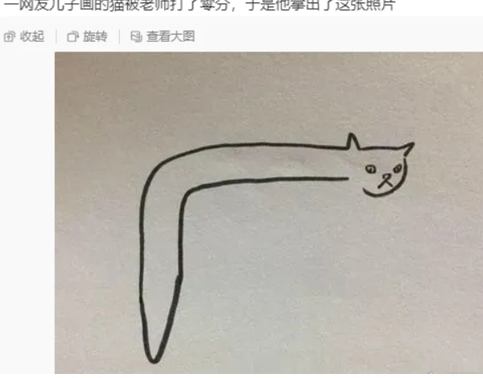
第一步用谷歌识图搜一下这张简笔画，找到一个网页，这个页面罗列了很多画风一致的猫猫简笔画，基本可以断定这是一位画手所做，也印证了我上一段的记忆。
第二步翻看这个页面，发现其中有一张简笔画留了画手签名水印（图2）“PDC”，发现要点，进一步突破，用谷歌识图搜这张简笔画（图3）。
第三步发现有很多包含此图的国外网页，基本可以断定图1博主说的打0分的真实性。此外，我们注意到第二条繁体字搜索结果极具价值，打开，查看网页内容（图4,图5）。
第三步 基本可以断定以上所有推断都是正确的了，国内新闻里所有拿这幅图编故事的都可以判定为假了
第四步 查看这位巴西插画师“Heloisa”的Twitter（图6，图7，图8），如果推特里发现这张图，那么以上所有推论都是正确的，但是夜深了，他有7000多条推文，不想再找了，但是搜到一条这位插画师吐槽Chinese拿他的画编段子的话（图9），足以证明了以上推断。
说了这么多，就是要提醒大家，要____
信息检索案例2
最近做了一件很屌的事情
在YouTube上看到一家英国的同行公司，看官网时偶
然发现他们的外购产品质量有问题，于是通过海关数
据推测出了他们的采购期、主要采购类目以及从中国
采购的具体公司名录
同时下单了他们有质量问题的外购产品，在自家工厂
进行了测试拍摄了视频，验证了我的猜想
根据对行业的了解，我推测了对方的采购价格
通过社媒精准找到了对方公司的采购经理，和老板商
量后直接给出一个比他采购价更低18%的数字，并指
出了对方外购产品的具体品质缺陷，发送了测试视频
发视频之后立马安排了寄样，对方收到样品很满意，
发现3月去同一个展会，约了展会上面对面详谈
入职时老板问我工商和油画背景拿什么干外贸，现在
他应该知道了
信息检索案例3：数据那儿来的
“六亿人月收入不足 1000 元”这个数据到底来自哪里？今天的新闻给出了答案：北师大的收入分配研究院。
作为海淀区信息检索 TOP5，我对这个“收入分配研究院”发生了浓厚的兴趣。直觉告诉我研究“收入分配”这个主题的不太可能只是一个师范学校里的社科研究机构那么简单。
查了一下，果然不是“北师大收入分配研究院”，而是北师大的“中国收入分配研究院”。这显然是一个政府智库，而且在智库领域位于金字塔上层。我决定每年至少得看一次他们的网站：www.ciidbnu.org
我在需要的时候，会去寻找怎么找到出版目录的方法。
信息检索案例4：看图识地方
车牌得葡萄牙，车旁窗户得 bankinter，小巷尽头可见一座悬索桥架，通过桥架样式可得葡萄牙的 4 月 25 日大桥，根据小巷与桥架的角度与距离，搜索附近的 bankinter，为数不多的结果里能得最后答案，国家自然历史和科学博物馆大门西侧 20 米的小巷入口。
实际在 gpt-4 中，可获得标志性建筑，然后根据小街道距离建筑的距离，根据餐馆名称，可确定准确位置。
找源出
世界上对日本旭日旗深恶痛绝的国家，除了中国可能就是韩国了。毕竟中国和韩国都曾深受日本军国主义之害。
韩国人面对旭日旗有两种思路，一种和中国一样，抵制。还有一种就比较有韩国特色：旭日旗是韩国的。
十年前，韩国高丽大学教授金彩洙就指出：日本旭日旗的构思源于“韩”字。在韩文中，“韩”的字义为“朝阳的灿烂光芒”，所以旭日旗就是“韩”旗。
检索方式：用韩文；关键词：高丽大学教授金彩洙、日本旭日旗的构思源于“韩”字。十年前，这个新闻的搜索范围缩小。
给你们出两个信息检索在寻找物资上的应用题。
作为海淀区信息检索 Top5，给你们出两个信息检索在寻找物资上的应用题。
1、淘宝有降权机制。而这种降权机制会导致你搜索商品时候，一些链接出现得非常靠后，甚至不会出现在搜索结果中。还有些商家上架商品时写错了名称，也难以被搜索到。在发生对特定商品的抢购时，这些就会幸存下来。那么，你应该如何找到这些商品？
2、已知一些商家把某商品上架后，又下架了。但并不知道是哪些商家。你现在想购买这些商品，应该如何做？
我出这些题不是为了这些题目本身，而是希望我的读者学会突破思维局限，在不可能中找出可能，在别人山穷水尽的时候可以柳暗花明。
第二个问题可以直接问客服要链接吗？如果你知道是哪个商家的话。
替换关键词，第一个我有经验，别用字搜索，图片搜索是不会降权的，先百度一张要搜的东西的清晰正面图片，然后用淘宝识别，识别能力相当高。第一个问题，我采取的是尽量全量私有化的方式：直接把范围内尽量多的商家纳入收藏，然后盯着上新推送即可…… 然后淘宝搜索有回复@月西北:搜索页筛选里有个“订阅店铺”的选项，那个就是。
1.搜索关键词：错别字搜索、产品功效（发烧 感冒等）、切换平台-试着去分销平台（好省/淘宝联盟）查找、查询商品成分，用成分搜索查询
第一个可以搜一个相同商品，下滑从推荐里找，或者长按搜索相似或者搜索图片来找
@马琳琅：第二个可以搜索关键词，选择店铺列，然后会有商家列表，这些商家可能是根据这些关键词商品的销量排序的，可以逐家问问
2- 找经常爬购物网站的人，比如比价网站，或电商另类数据供应商。
1，如果链接非常靠后，可以选择直接跳到最后一页慢慢往前找，再咨询客服 2，上架后，下架，应该会留有什么痕迹，这需要熟悉电商的朋友来解答，如果能够知道有什么痕迹，就可以从这个痕迹中找到答案
图片搜索，还有就是我有时找不到会收藏一些相似度高的商品，然后在收藏里点相似
然后，线下药店每天都会进货，所以急需的话，可以早上九点去药店问问，我今天早上就买了两盒布洛芬。
实测淘宝搜药名，价格从低到高排列，靠前的结果就是便宜且可下单的，但是发不发货就不知道了。另外，半夜搜索容易捡漏。
可以用口头化语言描述想要搜的东西， 可以以图搜图， 通过搜索类似商品和店铺获得关联推荐， 更多时候我还是会收藏即便商品失效也有标题与商品图可用
1用淘宝的图片搜索功能，2通过搜索类似商品逐家问
1、降权我理解通常会出现在推荐排序的结果集中，此情况可以利用筛选条件（如发货地+有货等）自定义搜索。若名称不对，通常不会是商品标题全部错误，可尝试更换关键字，或者浏览类别广泛搜索。 2、假定商品该商家独有，可查看商品是否有任何能表明品牌或商家的标识，以找到商家或品牌为目标去寻找。
感谢，通过问题 2 的思路找到了仿制药的商家。
1、相似图片搜索。2、阿里妈妈看商家是否有分销历史，客服询问。
第一个会买旧书的都有经验。而且淘宝搜索还有筛选功能，按成分按图片按啥都有，算变相的关键词和条件检索。第二个全靠平时功夫，多关注店铺随手加收藏夹或者购物车，记忆不会完全消失但留个大概，只要店铺不关都能在列表里找出来。还有商品浏览记录里也可以查看下架商品和商家，用的多都熟悉痕迹在哪
1.搜索关键词，销量升序； 2.搜索关键词，点击店铺，找到“相关产品较少”的店铺，找客服
买其它商品淘便宜的时候我试过搜货号，类似xxxxxx-xxx，有时候还试过把-后面的去掉[doge] （当然一切的前提是知道货号）
找商家店铺、找某个成份
1.相同商品性质，但不同名的替换类商品搜索， 或者搜索厂家的名字，[允悲] 2.还有用过频繁在手机旁说相关产品这种不羁之谈方法，以及换另一个app搜索后，再回淘宝[允悲] 3.定位到某个产地城市搜索[允悲] 4.切换成语音搜索[允悲][允悲] 5.图片搜索用过效果一般。
商品名称写错了好像可以根据功能来搜索关键字，退烧，止痛，止咳，我用这个在淘宝上面好像是能搜出来的。
1的方法就是，不停的换关键词，中文英文 包装盒上有的文字都是搜一遍试试。另外不要选择综合和销量排序，选择价格从低到高排序，同时设置合理价格筛选条件，排除一些其他商品干扰。
实在不行也可以找化学试剂店买[孤寡青蛙]
感兴趣的题目，可惜不太熟悉淘宝和他的规则。还有一种思路，商家是需要卖家买的。
第一个商品名写错，可以用淘宝拍照，是根据图像特征匹配的，能够比较好解决
对 Paxlovid 及其印度仿制药的一些调查
我最近几年阅读了很多新冠相关的资料，包括各种药物实验、各种临床指引等等，所以很早就注意到了辉瑞的 Paxlovid_()_ 这个药物，并一直关注该药在国内的使用情况。前阵子开始陆续有朋友问起 Paxlovid 的印度仿制药的问题。于是我也试着对相关情况做了一些调查。
当然，除非对药物本身进行检测和实验，否则不可能知道具体成分是什么，更不可能知道是否有效。所以，下面我只是向大家分享我思考和查证的过程，而不是对 Paxlovid 以及 Paxlovid 仿制药的有效性给出任何意义上的评价。
以下所有内容均来自网上的公开信息。
第一批进入中国的 Paxlovid 有 2.12 万盒。这批药是从比利时运来的，抵达上海浦东机场后，2022 年 3 月 17 日晚，经上海外高桥保税区海关验放。
首批 2.12 万盒 Paxlovid 中可能有 1 万盒是吉林省采购的。这 1 万盒药在 2022 年 3 月 20 日先到达中国医药的大兴物流中心，然后运往了吉林省。因为当时吉林的疫情也较为严重。
也就是说首批 2.12 万盒可能有约 1 万盒留在了上海。从另一处信息中可知，从 3 月 17 日到 4 月 17 日，上海本地采购了 4 批共计超过 3 万盒 Paxlovid，其中第 4 批是 2.5 万盒。这样算下来，到 4 月 17 日，应该共计有超过 4 万盒 Paxlovid 进入中国大陆。
2022 年 3 月 23 日，卫健委召开了 Paxlovid 使用视频培训会，主讲人是广州医科大学附属第一医院重症医学科主任医师桑岭。桑岭参会的地点也是在吉林省。因为他之前一直在吉林支持当地的救治工作。从会议内容中可知，桑岭对 Paxlovid 比较有经验。由此可知，在首批 2.12 万盒之前，国内应该已经先采购了少量 Paxlovid 投入临床试用。
辉瑞的 Paxlovid 包装里有两种药，一种是奈玛特韦（Nirmatrelvir），作用是阻断病毒的复制；另一种是利托那韦（Ritonavir），作用是减慢奈玛特韦在肝脏被分解及代谢的速度。市场上最早出现的 Paxlovid 印度仿制药叫 Primovir，也声称自己包含这两种成分。
在调查中，我发现 Primovir 包装盒的一些细节至少调整过 3 次。
最早的包装盒背面右下角印了两个电话号码。一个是北京移动 135 的号，一个是印度的号。
之后版本的包装盒上去掉了北京移动的号码。不过药盒侧面还有个二维码，这个二维码里仍然包含了前述两个电话号码的信息。
再之后，这个二维码也被去掉了，留下一块空白。
再之后连这块空白也没有了。不过，内包装上两个电话号码一直都有。
Primovir的包装盒上印的生产商是 Astrica Health Care。公司网址是 www.astricahealthcare.com。这个网站早先看起来确实是一个制药公司。但至少在我看的时候网站上并未提到 Primovir。并且该网站目前的内容已经和药物制造毫无关系。
通过域名注册信息可知 astricahealthcare.com 域名注册于 2021 年 9 月 6 日。而在印度工商注册查询网站上可查到 Astrica Health Care 成立于 2021 年 8 月 11 日。两个信息互相印证可以知道 Astrica Health Care 这家公司成立不过一年多。
同时，在工商注册信息里还可以看到 Astrica Health Care 的注册地址在印度泰伦甘纳邦的海得拉巴。注册资本 10 万卢比，折合人民币约 8500 元。
当我查到这里的时候，相当怀疑这是一个专门骗中国人的皮包公司。但我在做出负面判断之前通常会先问问自己：是不是尽可能全面地进行了调查？当前获得的各种信息是不是还存在别的解释？
所以我又往几个不同方向进行了查证：
1、印度有没有供应奈玛特韦和利托那韦原料药的企业？如果当地找不到原料药供应商，那这个药是大力丸_()_的可能性就增加了。
经过调查，我发现印度确实有奈玛特韦和利托那韦原料药的供应商。
2、Astrica Health Care 除了 Primovir 是否还有别的产品？
答案是有。在一些卖印度仿制药的商店还可以看到 Astrica Health Care 的其他产品。
3、Astrica Health Care 除了 astricahealthcare.com 是否还有别的域名？
最近出现了一个新的域名，astricahealthcare.in，注册于 2022 年 11 月 9 日。网站内容和早先 astricahealthcare.com 的一样。
4、Astrica Health Care 背后是不是还有别的企业？
经过进一步调查，我发现 Astrica Health Care 的董事是 Asha Kiran Kadari 和 Sateesh Reddy Kadari。而 Asha Kiran Kadari 和 Sateesh Reddy Kadari 名下还有另一家做仿制药的公司，叫 Astra Generics。这家公司是 2011 年 8 月 4 日成立的。同时，这两位 Kadari 名下还有一家成立于 2008 年 6 月 11 日的生物制药实验室 Aspen Biopharma Labs。
继 Primovir 之后，市场上又出现了另一种包装的 Paxlovid 印度仿制药，叫 Paxista，生产商是 Azista Industries。销售 Paxista 的人声称 Paxista 和 Primovir 是同一家厂制造的，只是包装不同而已。
Azista Industries 成立于 2014 年 12 月 11 日，注册资金 5000 万卢比，大概相当于 420 万人民币。
销售 Paxista 的人又声称 Azista 是海德龙的子公司。这个说法不太准确。这两家公司应该是隶属于同一集团。
Azista Industries 的网站上曾经出现过 Paxista 的介绍页面。但最近已经被删除了。当时的链接是：
www.azistaindustries.com/nirmatrelvir-ritonavir-tablets-exporters
AI 效率
我需要一个音视频分析相关的程序。我以前没搞过这方面。如果完全自己写，包括学习相关知识，可能需要很多时间。但是在 GPT 4 的辅助下程序很快就完成了。而且即使提示词不那么规格化，GPT 4 也基本自行构建出合理的逻辑，而且绝大部分代码没有错误。我又试着用 GPT 3.5 辅助，这就需要比较严谨的提示词，同时大概有一半的代码有错。大致估算的话，GPT 4 可以把我的效率提升 20 倍，GPT 3.5 大概能提升 5 倍。
前面说的这个，我为了省钱，尝试让 GPT4 只针对我布置的任务输出提示词，然后把提示词给 GPT3.5，让 GPT3.5 具体干活，效果也还可以。 然后我忽然意识到，这其实是现代企业/科研院所/政府机构的运作模型啊……GPT3.5 就是社畜。
与chatgpt之间的交互也是非常考验思维与表达能力，和chatgpt交互的时候常常觉得自己能力匮乏，不能完全发挥其作用😥
提升自己的思维和表达能力
前几天粉丝群里有人讨论“老师傅和老工人”http://t.cn/A6HNOG29，感叹不知道怎么提升自己的思维和表达能力。于是我就给大家讲了一个比较容易落地的路径。 你家里周末打算安排什么活动？无论是包粽子还是去公园，为这件事写一个备忘录。交通怎么安排，物资怎么准备，每种东西从哪里买、买多少，多少人参加，怎么分工，怎么开始，怎么收尾，等等。写出来之后，大声朗读。读完再改。反复朗读反复修改，直到自己觉得实现了词句通顺，言简意赅，该说的都说到了，也没有多余的话。 然后再把这个稿子让你家人看。看他们是不是看了之后直接就能清晰地了解你的计划，没有任何疑问。如果他们看了还有不清楚的地方，根据他们的反馈再修改。 这一部分练熟了之后，还可以做个附加题：假设你想邀请邻居来参与包粽子或者去公园的活动，但邻居家周末可能已经有自己的安排，你想想该怎么邀请，能让邻居来和你家一起活动。写一个游说邻居的文案。
早上开会我也和同事们过类似的话：在小事中提炼方法、在经验中总结共性、能在上一个维度看待自己的工作内容。做到这3点，35岁就不止是个年纪，而是一套相对完整的工具链和方法论。
我家出门旅游前我都要开个启动会，地图投到电视上，把全流程桌面模拟推演一边，精细到每个景点间的交通工具和每顿饭在哪里吃什么，听听大家的想法。
真的 首先把问题拆解分步骤 而且一定要写下来不能光脑子里想 最后目标是让任何一个不了解的人看懂 这样锻炼真的有用
学习建议
这是我很多年前给一个年轻人的学习建议：
学 TCP/IP，把 Nmap 和 Hping 的手册看一遍。
学 HTTP，把 Curl 的手册看一遍。
学 SQL 注入，把 SQLmap 的手册看一遍。
学 WEB 前端安全，把 BeEF 的手册看一遍。
接触一个方向的时候，先想象这个方向未来对你可能的各种用处。
沟通的重要
滴滴安全沙龙的分享里，我也提到了技术人员培养表达、沟通能力的重要性。搞技术的人常常会忽略这一点，甚至内心有抵触。然而，我年龄越大越体会到这类能力的重要。所以自己其实也一直还在默默地练习。在我们实验室内部培训中，我除了讲思维方法、学习诀窍，最常讲的就是沟通、表达能力的培养。因为到我这儿来的同学，我都希望他们将来能发展好，在行业里有一片天地，而不是希望他们老老实实当做干活的卒子。 当然，即使在技术上做好了积累，又培养了多方面的综合能力，也没人能保证你一定能怎么样。这是必要条件，不是充分条件。只能说：欲练神功，挥刀自宫。虽然自宫，未必成功。若不自宫，必不成功。
有用与无用
前阵子在公司里做了一个面向全员的分享，主题是“有用、无用”。因为是访谈式的，又讲了两个小时，所以有些零碎。我尽量整理成文章的样子。以下是其中一部分。
利己的逻辑
想象一下，如果各国宇航局都忽然宣布有小行星要撞地球，比六千五百万年前的那颗更大，还剩四十天。你怎么办？躲在墙角瑟瑟发抖，抖上四十天；还是愤怒咒骂，骂上四十天？也许有些人会选择放纵享乐。也许有的人不信邪，努力寻找办法活下去。
不谈道德，不谈责任，不谈正能量，纯粹从利己主义的角度去思考，我们也会发现：无论是选择放纵享乐，还是选择努力求生，都比瑟瑟发抖或愤怒咒骂是对自己更有利的选择。
人生中遇到的问题不太可能比小行星撞地球更大更困难更不顺利。任何问题，无非一种是你认为可以解决的，一种是你认为不可能解决的。认为可以解决，就努力解决。认为不可能解决，就平静接受。从功利角度看，这两种选择都可能是对自己有利的。唯独沉浸在恐惧或是愤怒中对自己是不利的。这就是曾国藩讲的“既往不恋”。
恐惧和愤怒和欲望一样，都是大脑最原始的那部分产生的。这些是人的本能，并不是坏事。恐惧和愤怒可以让我们的身体爆发出更大的力量来应对危机。欲望可以驱动我们朝着目标努力。但因为这些都是人的本能，所以很容易让人沉迷其中。人很容易沉迷在欲望中，也很容易沉迷在恐惧和愤怒中。而克制欲望需要依靠大脑中更高级的那部分，也就是理性的那部分。克制恐惧和愤怒也需要靠理性。我们要意识到：即便从功利的角度看，沉浸在恐惧或是愤怒中对自己是不利的。
我们都知道林黛玉身世悲惨，自幼父母双亡、寄人篱下，所以永远不开心。但其实史湘云也自幼父母双亡、寄人篱下，但她可以“醉卧芍药裀”。任何人当然都可以选择像林黛玉那样度过一生，但即便从利己主义的角度去思考，这样做对自己也是没有好处的。
比方说你做的事情没有被老板认可。积极一点的话，你可以选择改变自己；激进一点的话，你可以选择改变老板；即使很消极地选择躺平，选择听天由命，也不算是特别糟糕的选择。特别糟糕的选择是心里满是怨念，但又无所行动，一直沉浸在怨念里。这个选择即便从利己主义的角度来看都是糟糕的，因为对自己没有好处。
学习的快乐
我们经常说“苦读”“苦学”。学习有时候是苦的，但也不一定。陶渊明说“好读书不求甚解”。就是说，学习可以是快乐的，所以我们甚至可以只是为了快乐而学习，以至于不用太考虑是不是学到了什么。如果因此而掌握了一些知识，那也只是附带的收获。
学习的快乐从何来？从正反馈而来。打游戏很快乐，但如果一直输呢？五连跪，十连跪，二十连跪，你还快乐吗？觉得学不下去，觉得一些知识很难啃，往往是因为没有能持续给自己正反馈。
当然，每个人的反馈阈值不一样。有的人延迟满足能力强，很久没有正反馈，他仍然可以坚持。但有的人就不行，一天没有正反馈就会自我怀疑。所以在学习前要先了解自己。如果你是一个必须要快速得到正反馈的人，可以去分解任务目标，将里程碑设置得短一点，按照自己的节奏，在有效的时间里，每一步都让自己得到反馈。
就像写程序。我们经常说函数不要写太长，这不光是可维护性的问题。你写完一个函数，编译调试通过，就会得到一点正反馈。如果一个函数写2000行，很久都写不完，那就很久都得不到正反馈。
不必刻意强迫自己做让自己不快乐的事情。选择真正感兴趣、有动力去做的事情，按照自己的节奏，在过程中获得正反馈，获得快乐。
无用的用处
很多事情虽然不必特别功利地去看，但它可能会在某个时刻给你一些挺功利的回报。从世俗角度理解“有用”的话，有些知识的确此刻是无用的，但未来可能有用。人生很长，其实大部分知识都会在人生的某个时刻发挥作用。而即便真“无用”的知识，其实也是有用的。
《儒林外史》里有一个叫王太的人，家道中落，生活并不好。有一次他看人下棋，别人问他会不会，他说“略晓得些”。然而刚下了半盘就打败了号称“国手”的人。大家佩服他，要留他喝酒。他却说：“天下最快活的事就是赢棋。今天下了这盘棋，我心里快活得不得了，喝酒哪有下棋快乐”？然后哈哈大笑，头也不回地走了。
即便一辈子都“无用”的知识，也会让生命更加丰富。当你的生命足够丰富时，人生中很多精彩就是内生的；你眼中的世界有非常多美好、有趣的东西；你的人生无比浓艳。这种生命的丰富可以帮助对抗人生中遇到的各种不良情绪，会让我们把很多不如意看得更淡一些，从而帮助我们更容易度过人生中那些不顺利的时光。从这个意义上讲，没有什么是无用的，所有的无用都是有用的。
害怕失败还是过于有挑战？
不想做一件事情，可以有无数个借口，而想做，只需要一个理由。 当拒绝去改变的时候，先想一想到底是因为事情过于有挑战，还是不愿意去承担失败的风险。 很多时候，失败的风险和真实的投入，并没有想象中的那么高。 充其量，就是硬着头皮走了一遭，回过头再看，所历经的，也会变得无足轻重。
弯道超车
弯道超车，是因为弯道比较难开。直道上大家都是油门踩到底，主要比谁引擎快。到了弯道，技巧胆识就体现出来了。谁能少踩点刹车还能顺利过弯，就有机会在弯道取得优势。
然而，过弯靠的也不只是技巧胆识。车的轮胎、底盘、空气动力学都是非常重要的客观因素。车不行，光靠花活儿，是要翻的。
“不用踏踏实实努力只要选对捷径就能赢”是一种错觉。而且啊，走了捷径，也就把自己原来的路给别人让出来了。
摆脱复读机状态
孔子说：“吾尝终日不食，终夜不寝，以思，无益，不如学也”。荀子说：“吾尝终日而思矣，不如须臾之所学也”。杨绛曾对一个给她写信的年轻人说：“你的问题主要在于读书不多而想得太多”。民科中一部分是需要氯氮平，还有一部分主要就是这个问题。
《孙子兵法》里说：“若驱群羊，驱而往，驱而来，莫知所之”。从这个角度看是不是感觉好冷酷，好无情？然而再看《圣经》：“耶和华是我的牧者，我必不至缺乏。他使我躺卧在青草地上，领我在可安歇的水边”。你看，都是一回事儿，从羊的角度看，感觉就不一样了。
前几天看到一个反贼说现在和 17 年前最大的区别是 17 年前国内没有现在这好几亿外宾。这几天观察下来，发现还真是。
然而，现在这些外宾，17 年前是什么呢？我想了又想，估计是另一群羊。
没什么好办法。多读点书，也许有用。
【如何摆脱自己复读机的状态？】
“我最近发现我会经常性的套用我在别处看到的话，重复两次三次，无数次。何人交谈只要触发到此话题就像水笼头的水打开一样，尽情倾诉，让自己觉得自己很牛逼。很多次我都觉得自己都不理解我到底在说什么，但是我又觉得那些我看到的很符合我的观点。我也不知道我的观点到底是什么。我很迷茫。”
多读点书，也许有用。
人生的大部分问题都可以用钟形曲线解惑。
包括语言文字在内的任何领域，创造者都是右侧的少数人，大部分人只能做中间的复读机。还有少数左侧的人因为种种原因连复读机都当不了。
当然，眼下是复读机，也不一定就必然无法改变复读机的状态。我能想到的可行的办法就是多读点书——不过具体效果可能也符合钟形曲线。
所以说，也许有用。
ChatGpt 提效
有些早一点的电视剧，比如《Two and a Half Men》，一开始只有 720p 的 WEB-DL 或 HDTV 版。字幕组针对这些版本出了字幕。后来又出了 1080p 版，但字幕组没有跟进。
大部分情况下，新出的 1080p 和早先的版本顶多是片头长度不同，只要整体挪一下时间轴就可以匹配。有时候帧率会变化，那也只需要缩放时间轴就可以。但少数情况下，新版本会被重新剪辑。其中绝大多数情况是对原剪辑点插入的黑屏长度进行调整。比如原来两个场景之间有 1.7 秒的黑屏过度，现在改为了 2.4 秒。这种情况通常都需要手工调整时间轴。有些字幕软件提供了通过搜索静音来找到剪辑点的功能，这只能提高定位剪辑点的效率，但仍免不了要手工操作。《Two and a Half Men》就是这种情况。这就是为什么很多字幕组不会为新出的 1080p 版更新字幕，因为成本很高。
虽然此前有些软件试图通过各种原理实现自动时间轴匹配（比如 subsync），但显然效果并不理想，否则字幕组自然就用了。我很早以前就想自己写程序解决这个问题，但感觉投入的时间成本可能要比手工调整的时间还多。
不过现在有大模型帮我写程序了。
我的第一个思路是：720p 的有英文字幕，1080p 的也有英文字幕，那么对比两个英文字幕是不是就能找到时间调整点？然后不就可以根据英文字幕时间轴的变化情况调整中文字幕了吗？
实际开始干之后我发现想简单了。很多剧的早期英文字幕和后来的英文字幕并不只是时间轴不同，断句也不一样。当然这用一些算法可以勉强解决。解决了这个问题后，我又发现一些早期英文字幕存在大量拼写错误。比如 Will 在字幕里是 WiII。这些字幕显然是从 DVD 的 .sub 字幕 OCR 出来的。虽然理论上这可以用一个 OCR 纠错字典来解决，但更糟糕的是很多早期字幕的时间轴本来就不精确，导致很难通过和新字幕的对比来定位调整点。于是这个思路就只能放弃了。
然后我试图模拟字幕软件的“搜索静音”的功能定位剪辑点。程序搞出来之后，我发现找到静音的地方虽然容易，但精确的起始和结束点并不容易定位。因为”静音“是个模糊概念，不同的视频中不太一样。用光线来打比方的话，就是所谓黑暗，也多少还有一点光。你伸手不见五指，猫还能看见。所以搜索静音的标准严格一些，搜索到的静音段就可能偏短，而标准松一些，搜索到的静音段就会偏长。在字幕软件里“搜索静音”并不需要很精确，因为人可以通过看波形和听声音来判断时间轴实际应该调整多少。我又想再模拟人看波形的过程，对新老视频的波形进行比对，找出调整点。但不知是不是因为我不熟悉这个领域，最终实现的效果不太好。速度很慢，准确率也不理想。
然后我就想那是不是可以在搜索到静音片段后再把其中不是黑屏的那部分去掉？因为剪辑插入部分不仅静音，而且黑屏。我试了一下，成功了，终于可以准确找出剪辑插入的部分。
然后我忽然想到一个问题：到底是找黑屏快还是找静音快？如果是找黑屏快的话，那么先找黑屏再判断黑屏是不是静音才是效率最高的。我又试了一下，果然，先找黑屏比先找静音要快好几倍。
现在我只花了很短的时间就有了一个效率很高的能精确找出视频中插入的黑屏静音片段的程序。基于此可以很简单地实现时间轴自动适配。而且我自己没写一行代码，全靠奴役 ChatGPT。
铁饭碗
我大学毕业那年跟家里讨论过铁饭碗的问题。当时家里还是觉得当医生保险，是铁饭碗。我说铁饭碗的意思就是捧着这个碗我到哪儿都有饭吃。如果守着一个地方才有饭吃，这就不是铁饭碗，是铁饭锅，这锅我也拿不走。
那时候还没有医生多点执业的政策，医生和医院基本上是捆绑的。
东北大下岗就是直接把锅收走了，不要指望任何人和组织能对自己「负责一辈子」。
不稳定
之前有同学找工作，跟我说互联网行业不行了，不稳定。他觉得新能源汽车正当时，觉得这个行业会比较稳定。我问他觉得乐视行不行？他说不行。我说那你觉得乐视稳定不稳定？他想了一下，说好像也还挺稳定。
中国的新能源汽车行业这几年整体处于快速发展阶段。但行业本身处于快速发展阶段，不代表其中每个企业都能活到最后。其实如果特别追求稳定，恰恰不该去快速发展阶段的公司。这属于赌一把，赌你加入的公司能赢，能活下来。和新能源汽企比起来，乐视现在是相当稳定的公司。
网约车快速发展过，外卖快速发展过，共享单车快速发展过，共享充电宝快速发展过，这些行业最初入场厮杀的企业最后都只有少数能活下来，全都如此。新能源汽车何德何能就会例外呢？所以如今有些新能源车企开始显出颓态再正常不过。这也并不意味着行业不行了。
读书无用论
我觉得大语言模型可以终结一个千古争论——到底是“书中自有黄金屋”“腹有诗书气自华”，还是“纸上得来终觉浅”“读万卷书不如行万里路”。
LLM 就光是靠“读书”，学习文字资料，就实现了比多数人都强。所以，如果读书解决不了问题，那主要还是读书的人不行，连显卡都不如。
雷锋精神
前阵子跟几个孩子聊天，我问他们知不知道雷锋。他们说学校上课讲过，但他们不感兴趣，因为感觉跟自己也没什么关系。我就问他们：“你们老师说了雷锋是多少岁牺牲的吗？” “好像是二十多岁。” “你们知道雷锋是孤儿吧？从小父母就死了，解放后才有机会读书。小时候饭都吃不饱，参军的时候因为太瘦不合格。雷锋牺牲的时候只有二十一岁。他的一生没有很多时间。你们算一算，他从一个孤儿，到成为全国学习的榜样，只用了多少年？” “确实没几年时间。” “那你们觉得雷锋厉害不厉害？” “你这么一说好像确实很厉害。” “奥特曼跟你们也没关系，但你们很喜欢奥特曼对吧？雷锋这样的人就是现实中的奥特曼。你们变不成奥特曼，但有可能变成雷锋这样厉害的人。所以还是应该多了解一下雷锋是怎么变厉害的。” 灌输式的思想教育，就容易导致逆反心理。在这条微博的评论区能看到一些：http://t.cn/A6QPFDps。 雷锋乐于助人，奥特曼是不是也乐于助人？乔峰是不是也乐于助人？罗宾汉、阿凡提是不是都乐于助人？乐于助人，以及别的雷锋精神，都是人性中积极的一面，并不只是雷锋特有。全世界各民族都会赞颂类似的精神。但赞颂需要对象，人类需要榜样，我们树立了雷锋这个榜样。 一些人鹦鹉学舌地去复读一些仿佛能消解雷锋精神的句子，其实只是在安放自己的不如意。然而他们人生遇到的问题是因为学雷锋导致的吗？解决不了自己精神世界的问题，找一个对象来怪罪就是成本最低的方案。 雷锋精神也不只是乐于助人，比如还有“干一行，爱一行”。这固然是说要热爱工作，把工作做好，然而，这其实也是在说怎么快乐地度过一生。 张锡峰同学考上了浙大计算机系。中国不知有多少人想读浙大这样的学校，想读计算机这样的专业。然而他现在很后悔，很痛苦，“码代码一坐坐一天，什么也干不了”。从这个逻辑有点问题的表述里可以看出他是真的不喜欢计算机，以至于做出这种逻辑有问题的表述。 “码代码一坐坐一天”和“什么也干不了”显然是矛盾的。“码代码”不就是这一天干的事情吗？又怎么会“什么也干不了”呢？。所以这句话体的潜台词是他想干别的事情，所以如果“码代码一坐坐一天”，他想干的那些事就“什么也干不了”。但他想干什么事情呢？在采访中也没见他说。 大部分人最终总会做某种工作。而每个人的工作未必是自己主动的选择，也不是每个人都有能力去选择工作。哪怕是自己主动的选择（学计算机就是张锡峰自己选的）可能也会不喜欢。所以如果你学了计算机，那么从其中发现乐趣，找到增益点，让自己进入正循环，才能让自己快乐。这就是“干一行，爱一行”，这就是雷锋精神。 我以前说过的“利用欲望让自己努力，控制欲望让自己快乐”，也是雷锋精神。
自己的决定，和别人是没关系的
def mei_tou_nao(x):
return x
def bu_gao_xing(x):
return -x
def xiao_ming(x):
response = openai.Completion.create(engine="gpt-4",prompt=x)
return response.choices[0].text.strip()mei_tou_nao() 和 bu_gao_xing() 这两个函数看似相反，其实没什么区别。“让我干什么我就干什么”的人，和“让我干什么我偏不干”的人，操纵难度是一样的。
诸葛亮跟周瑜说“揽二乔于东南兮，乐朝夕之与共”，周瑜就决定打曹操。诸葛亮给司马懿送去妇人的衣服，司马懿就穿上了。但这两者是完全不同的。
有自己的分析，自己的思考，才能有自己的判断，才能做出自己的决定——无论是一个利己的决定，还是一个利他的决定。自己的决定，和别人是没关系的。我决定要吃粽子，无论你反对还是赞成，我都要吃粽子。
大脑和肌肉一样，会随年龄衰退
大脑和肌肉一样，会随年龄衰退，也可被锻炼刺激而增强。我的经验是：1、保持求知欲，锻炼记忆力。每天再忙都要抽时间接触新事物，学习新知识。2、喝咖啡。3、看美女。
解决技术问题
看到有人说大语言模型其实并不真“理解”，并不真“懂”，我想起了很多年前帮别人解决的这个技术问题。
当时我既不懂 C 语言也不懂 Linux，但我能基于对文本的推理帮别人解决 Linux 下的 C 语言问题。这个过程和 LLM 的工作原理也多少有某种相似之处。那么我“懂”我所解决的问题吗？到底什么是“懂”呢？总不能说因为我是碳基的，所以我就懂吧。
如果鸠摩智用小无相功模拟的少林七十二绝艺已经没人能分辨出真假，那他就是会七十二绝艺。
不少人走这条路得益于数学好，我可能主要靠语文
好.…2001年，我还在医院当碎催，算懂点
Vindows,会写两行perl。MK在QQ上问我某攻击
代码编译不通过该怎么办。那是个Linux下的C代
码，他说已经问了L*等人，但都没搞定。我通过分
析代码的函数名、变量名的语义，推测作者意图，
最终猜出了该怎么改
虚无
虽说都是虚无，但不同的人陷入虚无的情况也不一样。不同的心结需要用不同的方式解开。
如果你有类似困惑，希望这些也能帮到你。
想问个比较虚无的问题，大家在30岁之后，
会觉得生活甚至生命越来越枯燥乏味吗？
你可以拿张纸，写一下自己去过
的地方，读过的书，尝试过的事
情。
然后再列一下自己没去过但想去的地方，没读过但想读的书，没做过但想尝试的事情。
然后你会发现一辈子的时间都不够用，
我有的时候会有点儿认知障碍所以很好奇大家是怎么感知世界
的，以mbti中的NS为例作为引申，是更注重实体的感受还是更
倾向于直觉，怎么修正现实与自我感知的偏差？
t0 mbkeeper嘉宾
：
我们行为需要基于一些假设。比如我们必须假设我们不是“缸中
之脑”。虽然这没办法证明，但必须这样假设。
在这个终极假设之下，我们还需要做出一些次级假设。比如，科
学家们没有联合起来欺骗我们。
原子弹真实存在吗？谁见过原子
弹爆炸？
基于这些假设，我们的精神世界
才能构建起来。
对大部分人来说，去思考终极问
题都太困难了，也不会有结果所以我才推荐，关注当
下的知觉。
当下的知觉作为一种存在，即便缸中之脑的管理者也是无法删除
的。正如你可以删除自己电脑上的文件，但也无法删除这个文件曾经存在过的事实。
文档遍历法
我以前面试过一个搞硬件破解的孩子。他当时在南方某个小作坊工作。这个小作坊专门破解打印机墨盒芯片、苹果数据线芯片之类的东西。他们分两类工种。一类专门对付硬件，分析清楚后，把该引的引出来，该拆的拆下来，形成访问接口然后交给搞软件的。这孩子没读过大学，但手艺特别好，是小作坊的硬件主力。
还面试过一个年轻人。他也没读过大学。早先在轮胎厂当工人，然后一边做轮胎一边自己研究破解卫星。后来凭着这个手艺去了某网络安全公司。
两个人后来都没来我这里。因为他们老板加钱把他们留下了。
私营部门的条条框框要少很多，更容易给这些人机会，而且是很好的机会。我自己也一样，临床医学的文凭对网络安全专业来说也没什么用处。如果我毕业的时候想去公立部门找一个工作是不太可能的。
说下我自己的事儿，16年的时候大数据火热，给省x厅做大数据平台建设，领导看我技术好，想拉我过去给事业编制，月薪xxxx+各种福利，他是好意，我感谢。但是我没敢告诉他，我的月薪是他给的年薪，还能更自由地全国到处跑。找个技术方向，按照教主的文档遍历法，每天十小时，深入研究一年，机会依然多多。
看"帮助文件”学技术
不少人听说我曾靠“看帮助文件”学技术，于是也跑去看。结果发现自己看不下去，又来问我这是怎么回事。 下面这篇是所谓“看帮助文件”那个说法的出处。完整看一下就明白了——我当时说的恰恰就是大部分人都看不下去。看不下去没关系，可以找点别的事情做。 2005.10.02 这两天论坛上又有人开始抱怨世风日下，大家都现实了，都不开放了，不交流了。对这种“月经贴”，我基本上已经习惯了，不过因为吃了粉皮炖鸡，心情比较好，于是就说了两句。 三四年前，当时我对人性的看法还不像现在这样。有几个人加了我的QQ，说想学Windows，我居然就好为人师起来，自不量力地教人学Windows。我很天真地把自己的经验告诉他们： 一、先把Windows的帮助文件从头到尾看一遍。 二、在Windows目录下搜索.txt、.htm?、.log、.ini，把每一个文件内容都看一遍。 三、把注册表浏览一遍。 没有诀窍，也不用花钱买书。任何人把这三步做完之后，只要不是傻子，在Windows应用方面都可以非常熟练。并且如果想进一步学，也自然知道应该去看什么了。
结果甚至没有一个人能看完Windows帮助文件，看完三分之一的都没有，都说看不下去。我很奇怪，我看Windows的帮助文件就像看金庸小说一样愉快，怎么会有人觉得辛苦？ 后来我想明白了：因为我爱她，而他们不爱她，只是想占有她而已。 他们要的不是交流，不是开放，甚至也不是想找个人“拜师”，他们想要的不是郭靖遇到的洪七公，而是虚竹遇到的无涯子。 再后来，一个偶然的机会，我看到了小四同学写的那篇《你尽力了么？》，才知道原来这不只是我一个人的看法。 这两天在家，在笔记本上折腾Linux，遇到了很多问题，我就把内核每一个编译选项的说明都细细看了一遍，反复编译上二十多遍——然后，所有问题的答案都找到了。显然，学Linux和学Windows的方法并没有什么不同。
提升生活质量
我有一个假说：在国内目前的物质文明水平下，假设以中产阶级的消费能力可获得的生活舒适便利上限为 10，由于信息差的存在，大部分人实际达成的只有 5。
未来 5 年想再多赚钱可能比过去困难。大家可以考虑用这段时间研究研究怎么提升生活质量。赚钱不也是为了这个嘛。
自己主动找寻数据，得出结论
公关、舆论引导都不需要造假。在这些行当里，造假是最低级的方式。从概率之海里的选出一个浪花，然后闪光灯对着一阵狂拍就行了。
2022 年，中国共发生道路交通事故 256409 起，造成 60676 人死亡。如果全部写成新闻，那么你每天可以滚动看到 166 个交通事故死亡案例。假设每天上网 12 小时，平均每 15 分钟就能看到一个。其实也不用全写成新闻。只要每天从 166 个死亡案例里挑出身世最悲惨的一个给你讲，不出一个月就能让你怀疑世界。
事实碎片
小明的手心里写了一个数字。然后把和这个数字有关的线索写在很多纸条上。又把这些纸条藏在屋子的各个角落。
你找到一张纸条，上面写着“这个数字是偶数”。所以这个数字是 2。
你找到一张纸条，上面写着“这个数字在斐波那契数列里”。所以这个数字是 3。
你找到一张纸条，上面写着“这个数字出现在爱因斯坦的生日里”。所以这个数字是 1。
你得尽可能多地去寻找纸条，并想出一个满足所有线索的数字，才可能找到答案。
信息检索案例分享
根据中厄两国协议，自 2016 年 8 月 18 日起，中国公民持普通护照可免签进入厄瓜多尔。不过 2024 年 7 月 1 日该协议将被取消。
你们猜，这是中国主动的，还是美国要求的？
大家可以把这个当作一道题目，试一试通过检索公开信息，分析信息之间的关联，得出合乎逻辑的解读。还可以试试各家的 RAG 们，看看你比 AI 强多少。
对大多数人来说，时间一点都不宝贵。宝贵的是行动力。
教育部称热门专业不一定适合每一个人
这个观点肯定是对的。专业选择考虑的不是一个点，而是一个三角形：能力、兴趣、就业。不过还是要有所偏重。家庭条件好可以多考虑兴趣。条件不好还是得多考虑就业。
计算机专业还值得报考吗
大概十年前，我跟朋友聊天的时候大家形成了一个观点："现在人类仍然处于数字社会的早期阶段。这个早期阶段还会持续很多年。未来会数字化的东西现在还有很多没有数字化。"
数字技术对人类社会的重塑进程可能连三分之一都还没有走完。
文档法案例
前阵子一个朋友忽然说要谢我，感谢我当初在他儿子考大学选专业时给的建议。我都不太记得这事了，想了好一会才回忆起来。
这个朋友一直觉得我们实验室特别好，所以 2019 年他表弟还在读大四的时候，他就想让表弟跟我学网络安全。我当时看了他表弟的简历，说这孩子将来的前途必然在 AI 上，没必要强行来搞安全。
几年后，这位朋友告诉我，他表弟读研究生了，方向就是 AI。后来他又告诉我，他表弟已经是学校人工智能实验室事实上的负责人了。而且他表弟在听说了我的遍历文档的学习方法后，也用到了对 AI 的研究上。不光自己这么做，还要求实验室的同学都这样。据说效果出乎意料地好。
前两年他儿子要考大学了，他来问我应该报什么专业。他当时还是想让儿子将来搞网络安全，于是问我是读网络安全专业还是读计算机专业。
我说将来干什么还得看兴趣，孩子未必就喜欢网络安全。听了他儿子的情况后，我建议他让儿子本科学数学。我说数学底子打好了，如果愿意搞网络安全，我可以教他怎么学。而如果喜欢搞别的，比如 AI，那么数学底子好也很有优势，别的都可以自学。
于是他就听我的建议让儿子读了数学系。最近他儿子去和他表弟学 AI，学的特别快，一下体现出数学底子好的优势。他很惊喜，所以特别来谢我。
刚才仔细回忆了一下这几年的事情，感觉我就是他家的定制版张雪峰。
同感，最终能学到本领的都是能踏实读文献的学生。但太多人想走捷径，真正踏实下来练功的太少。
我也是被教主遍历Windows帮助文件的做法启发和激励了。我之前是游戏策划，看了微软C#和Unity的官网手册，收获非常大，跟开发沟通合作起来门槛变得很低，还能在开发没空的时候帮美术解决一些引擎相关的浅问题，自己在团队里变得更有用了。真的非常感谢你。
文档检索思路
前天粉丝群里有人说他的博士论文需要一个数据集。这个数据集是 NASA 几年前发布的。但现在发布数据的网站已经没了。他自己用网页存档看了当年的页面，找到了存数据的网盘链接，但那个网盘链接现在也已经失效。于是他来问我有什么思路。
我也看了一下网页存档，发现上面留了发布者的邮箱。于是就让他写信给发布者问问。结果他告诉我几个月前就联系了发布者，但一直没有得到答复。在如今的政治气候下，这倒也不奇怪。
我又用不同思路搜了一下，确实搜不到，这个数据已经不存在于互联网上了。不过作为海淀区信息检索 TOP5，我发现很多论文都用了这个数据集。于是我让他检索使用该数据集的论文，然后联系那些论文作者。我相信那么多人中，一定有保存了该数据集并且愿意分享给他的。
今天他很开心地表示已经用我说的办法解决了问题，一位北航的同学把数据发给了他。
所有事情其实多走3步可能都有结果，但多数人落在刚出门的一个坑里
不是举一反三，是解决问题的执着力，第一条路走不通，就换条路。
【为什么追求客观、中性的人不多多发言，要让话语权掌握在极端者手中？】
8B 模型 8G 显存的卡就能跑。70B 的怎么也需要 24G。能跑 8B 的卡当然远多于能跑 70B 的卡。买张淘汰的矿卡都能跑起来。
就算同样是 24G 的 4090，跑 8B 每秒能喷几百个 token，跑 70B 每秒就只能喷十几个。70B 喷不过 8B 是物理学决定的。
2024-06-24
对任何事情当然都可以提出质疑
对任何事情当然都可以提出质疑。但是，在没有确切证据的情况下，应止于质疑，而不是仅凭质疑就得出结论，做出评价。
这一点似乎应该是常识，但做起来好像并不容易。
提问须知
我有一个“提问须知”，与君共勉：1、提具体的问题，而不是“你对鲁迅怎么看”，否则答案可能会是“默默地对着遗像看”。2、用疑问句提问而不是陈述句。3、不要用反意疑问句。4、句子尽量完整地包含主语、谓语、宾语，尽量不用代词。5、一次问一个问题。6、发出前，再检查一遍有无可能引起歧义的地方。
最近又有人开始重提中国的数学水平和人才问题。
虽然都知道数学很重要，但大部分数学研究并不能直接用，所以数学家还是得有人花钱养。NSA 从上世纪就开始养数学家，据说直接雇的数学家有两千人。当然这个数字没有直接证据。不过发论文一般会致谢金主，于是有人分析了美国的论文致谢信息，发现每年有几百数学论文都是 NSA 资助的。
下图中的 MDA904 和 H98230 是两个资助项目代号：
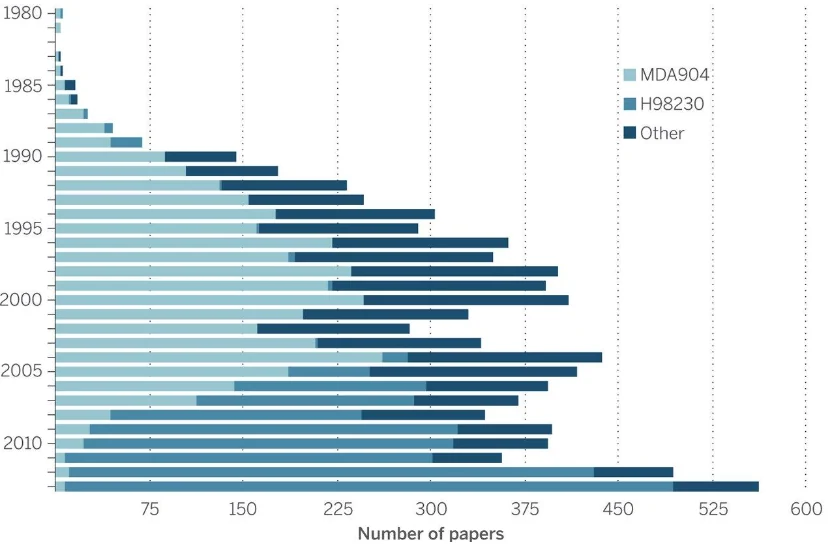
信仰某某主义
前阵子有人问我是不是信仰某某主义。我说我被不少左派拉黑，也被不少右派拉黑了，你认为我信仰什么呢？
无法观测无法证明才需要信仰。所以神的存在需要信仰，来世的存在需要信仰。但我不需要信仰桌上这个苹果的存在，也不需要信仰这个苹果必然腐坏。可观测的事实不需要信仰。基于可观测的事实和逻辑所推理的结论也不需要信仰。
如果一定要说我有什么信仰，那我的信仰就是唯物主义。因为我必须假设我感知到的物质世界是真实存在的。我必须假设我没有生活在 Matrix 里。这是我唯一需要信仰的地方。
学英文
AI 翻译得再好，外语还是得学。洋人如果不学中文，光看翻译，能像我们一样欣赏唐诗宋词吗？对吧，一个道理。
I've seen things you people wouldn't believe. Attack ships on fire off the shoulder of Orion. I watched C-beams glitter in the dark near the Tannhäuser Gate. All those moments will be lost in time, like tears in rain. Time to die. 我见过你们人类无法相信的东西。我见过攻击舰在猎户座的边缘起火燃烧。我曾看着 C 射线在唐豪瑟星门旁的黑暗中闪耀。所有这些瞬间终将被时间湮没，就像泪水消失在雨中。死亡的时候到了。
我已经尽力去翻译这段话了，但还是没办法 100% 传递出原文的意境。
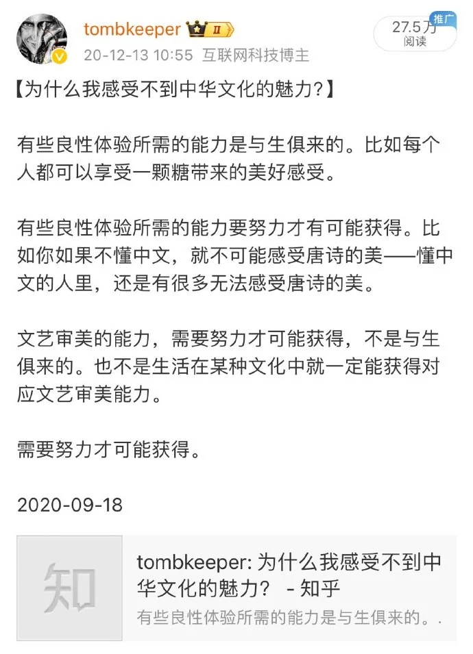
官方没提供功能，我如何实现
提供了一张自家小猫 Miumiu 图片，问能否生成以 Miumiu 的头为人物的视频。我看了 Luma 等几个 AI 视频模型似乎并不支持指定头部。于是我换了一个思路，得到了这个 Miumiu 侠转化小丑的视频。 你们猜是怎么做的？ http://t.cn/A6QVDS51
1、AI擦除蝙蝠侠头部；2、AI抠图得到Miumiu的头部；3、把Miumiu头部合成到图片中；4、把图片交给文生视频模型，给出相关提示词。
年初遇到一个朋友说自己出现了容易过敏的问题。
最近又有两个人跟我说自己的家人出现了容易过敏的问题。他们觉得都是打新冠疫苗导致的。
我问他们过敏症状是出现在打疫苗之后，还是患新冠之后。他们说是在患新冠之后。我说那更可能是长新冠的问题。但他们仍然认为是打新冠疫苗导致的。
我问他们为什么这么想。他们给出的理由基本都是因为觉得疫苗是“人造的”。
提升生活质量
我有一个假说：在国内目前的物质文明水平下，假设以中产阶级的消费能力可获得的生活舒适便利上限为 10，由于信息差的存在，大部分人实际达成的只有 5。
未来 5 年想再多赚钱可能比过去困难。大家可以考虑用这段时间研究研究怎么提升生活质量。赚钱不也是为了这个嘛。
信息壁垒
公关、舆论引导都不需要造假。在这些行当里，造假是最低级的方式。从概率之海里的选出一个浪花，然后闪光灯对着一阵狂拍就行了。
2022 年，中国共发生道路交通事故 256409 起，造成 60676 人死亡。如果全部写成新闻，那么你每天可以滚动看到 166 个交通事故死亡案例。假设每天上网 12 小时，平均每 5 分钟就能看到一个。其实也不用全写成新闻。只要每天从 166 个死亡案例里挑出身世最悲惨的一个给你讲，不出一个月就能让你怀疑世界。
无人驾驶
最近无人驾驶出租车忽然成为热门话题。其实各公司研发这个不是一天两天了，又没保密。但对于人类来说，知道是一回事，感受到是另一回事。
你们还记得十年前网约车刚开始发展的时候吗？一样有很多反对声音。现在的情况和十年前没什么不同，结果也不会有什么不同——我并不认为这是对的或错的，我认为这是必然的。天道有常，不为尧存，不为桀亡。
当人类注意到原木可以滚动，轮子的诞生就注定了。当内燃机被发明，汽车的诞生就注定了。人工智能研究已经开展了几十年，无人驾驶出租车的出现是必然的，无非是今年出现，还是明年出现，是先在这里出现，还是先在那里出现。
任何科技进步在短期内都会导致一部分人利益受损。社会层面能做也应该做的是帮助和补偿利益受损的人，而不是阻止科技进步。这并不是因为阻止科技进步是错的，而是因为阻止不了，任何尝试都将会徒劳无功。
我们生活在一个巨变的时代。过去三十年的变化可能比从宋朝到清朝还要大。至于这种变化是好还是坏，取决于我们能否适应变化和接受变化。如果李鸿章来到今天，固然会因为中国已经不怕日本了而高兴，然而也会因为大清没有了而沮丧。
费城的45家出租车公司联合起来对Uber提出了诉
讼，韩国政府也认定Uber违法。我相信过几年司机
们还会跟Google闹，无人驾驶技术才最要命。
1881年，新加坡引入人力车，马车夫罢工；1953
年，苏州引入公交车，人力车夫闹事。但是呢，尔
曹身与名俱灭，不废江河万古流。天下大势之变，
岂止交通工具。
不同地区使用不同语言的人都在关心些什么
我偶然发现在 youtube 的搜索框里输入“china”，弹出的建议词第一个就是“china travel”。我很高兴——中国旅游居然已经这么火了吗？于是我就想确认一下这个结果和请求者有没有关系。
果然确认一下还是对的。首先，建议词和请求者的 IP 地址肯定是有关系的。然后我想看看和客户端语言设置有没有关系。为了方便设置语言信息，我手动构造了请求。
当客户端语言信息从中文换成英文后，无论 IP 是什么，返回的建议词结果里都没有“china travel”，排第一的是“china food”。这倒符合我对英语世界的刻板印象。另外我发现不管在哪儿的韩国人，都很关心中国足球——这也符合我对韩国人的刻板印象。韩国人关心中国足球显然就像中国人关心美国零元购、流浪汉、枪击案一样。不过在美国的日本人很关心“china travel”，排在他们建议词的第二位。
看看不同地区使用不同语言的人都在关心些什么还是挺有意思的（如果你是内容生产者，这对赚钱也有帮助）。比如，可以看出现在法国跟中国应该还不错，当客户端语言信息设置为法语时，返回的建议词中不仅包含“china travel”，还有”china business trip“。但客户端语言信息设置为德语时，不仅没有“china travel”，还有“china dam break”、“china fakes everything”这类有负面倾向的词。
用类似接口，结合大模型，应该可以做一个全球网民关注倾向的实时监控系统。
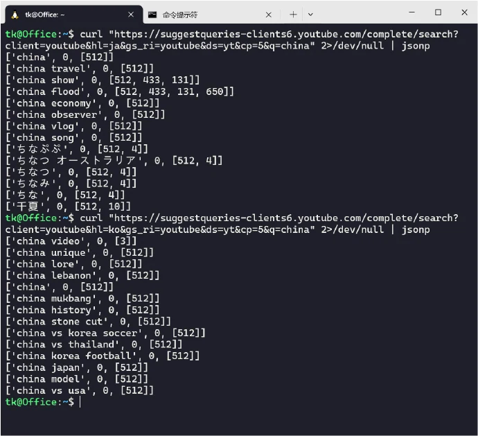
热门专业
今年高考很多人选择了认为就业比较“稳”的方向，而不是通常的热门专业。因为人们觉得金融等方向已经不再是好专业了。
怎么说呢，风物长宜放眼量。
2022 年初，很多朋友认为当时的状态会一直持续，于是非常悲观。我告诉他们这不可能。这种不可能是由规律决定的。马克思主义的核心之一就是客观规律不以人的意志为转移。唯物主义者要相信规律。你只需要坐在家里静静等待，变化就会发生。也许早几个月也许晚几个月，但一定会发生。
如果你是 2025 年的考生，那么硕士毕业就是 2032 年了。所以你需要考虑的不是 2025 年金融行业怎么样，而是你毕业的 2032 年或者你工作 3 年后的 2035 年金融行业怎么样。你真的认为到那时候金融行业也还是“不行”吗？
正确答案都是相似的，错误答案才会千奇百怪。
所以还是得好好学英语啊。美国社会特别讲究networking skills，要well-connected才能混的好。
讲一下中文的奥妙。
我读的，是我们省最好的医学院。但们心自
问，我能放心把自己交给他们的，在我的同学中，
大概占五分之一不到。还有五分之一的人连驾驶执
照都不应该发给他们，别说行医执照。但这些人
99%都能毕业，90%都当了医生，就穿着白大褂坐
在医院里，不知道在给谁看病。
“既要 A，又要 B”这种句式，看起来是并列结构，是一个天平。但其实天平的一头放的是绿豆，另一头放的是秤砣。“既要 A，又要 B”的意思其实是“一定要 B”，A 不能影响 B。
再嵌套讲一下中文的奥妙。
"一头放的是绿豆，另一头放的是秤砣"这句是在骂人。因为王八看绿豆，王八吃秤砣。对了眼是假，铁了心是真。
不知道自己的能力可以用在哪里
最近粉丝群有一个学数学的博士表达了对未来的困惑，不知道自己的能力可以用在哪里。
这种困惑挺常见，尤其是在基础学科。长久以来学校教育和社会都是脱节的。最近这些年稍微好点，一些学校会请行业专家给同学们讲产业界的情况。我自己也去几个大学讲过。从同学们的反馈来看，有些东西确实还是需要点一下。网络安全这种方向都需要点一下，基础学科就更需要了。我们实验室现在每年做青少年人才培养也是希望能在这些优秀的孩子们踏入大学之前就知道学的东西将来能用在哪里，怎么用。
具体到这位同学，我固然可以直接告诉他一些方向，但我的视角毕竟有限，所以最终给了他一个更开放的建议。
我让他去翻校友录，查查往届同专业的师兄师姐们后来去了哪些领域发展，参考前辈们的选择，看看其中有没有自己感兴趣的。进一步还可以给师兄师姐们写邮件，寻求一些点拨甚至帮助。
5、你去买盲盒，问我盲盒里是什么
你去买盲盒，问我盲盒里是什么。你手拿着盲盒都不知道里面是什么，我怎么可能知道呢？所以，我以前说过，人生选择类的问题，我都不知道答案（
古人说：鼠在所居，人固择地。然而古人又说：宁为鸡首，不为牛后。
古人说：乱世出英雄。然而古人又说：宁做太平犬，不做乱世人。
所以，选什么专业、要不要考研、去不去北上广、红玫瑰还是白玫瑰——我们想要的答案从来都没那么简单。
得看自己是什么情况，所处的环境所遇到的问题又是什么情况。这些情况根本不可能用几句话描述清楚。
必须得自己去分析，自己做决定，别人给不了答案。
要不然，生而为人就太容易了。最近有好几个毕业生问我关于 Offer 选择的问题——你可以问我某家公司在某个领域是什么情况，也可以问我某个技术方向好不好，但我不知道你是谁，不知道你是什么性格，不知道你是什么水平，不知道你家庭情况如何，我对你完全不了解，也不可能通过你几句话介绍就能了解，我也没有对发 Offer 的这几家公司做过调研分析，怎么可能知道什么选择适合你呢？
大学毕业的时候，我收到了 4 个 Offer。那时候我对安全行业了解很少，对这些公司更不了解。于是我花了数天时间，先把这些公司的网站都仔细看了，然后又搜索了这些公司的相关新闻，最后筛选出一南一北两家公司。我无法根据网上能看到的信息进一步判断，于是我坐火车去这两家公司分别看了一下，最后根据亲眼所见的情况做出了选择。后来事实证明我的选择的是对的。
2014 年换工作的时候，我收到了 5 个 Offer。这时候我虽然对安全行业比较了解，对这些公司也比较了解，但人到中年，这种重大决定仍然是不能轻易做的。所以我非常认真地从各个角度这些公司进行了调研，包括打听详细的内部规章制度，甚至找做了多个投资的朋友问他们对这些公司未来发展情况的判断。
为什么股市里散户干不过机构？因为散户看看网上的消息听听别人的忽悠就把自己多年辛苦的积蓄扔进去了。而机构是要实地调研的，要看一系列数据的。人生第一份工作非常重要，因为这是你第一次要把自己投资进去，所以必须自己下功夫。让别人帮自己做判断，就和听消息炒股的散户一样。有些人认为我似乎很擅长解决我自己遇到的问题，所以认为我也应该很擅长解决他们遇到的问题。然而绝大部分人从我这里得到的答案都是“我不知道”。因为我的确不知道。
如果你至少完成了小学二年级的课程，那么应该还记得《小马过河》。那里面就已经把道理讲的非常清楚了。
你来到一个路口，想知道该往左还是往右。你拿起电话，随便拨了一个号码，问道：我现在应该往哪边走？
你知道你此刻在哪里，你知道你从哪儿来想到哪儿去，你知道自己家住哪里年纪多大体力多强，你知道自己早上吃的什么身上带了什么，你知道天气是晴是阴有没有风有没有雨，你知道前方是草是树有没有鸟有没有驴——此刻，你的记忆，你的视觉听觉嗅觉中包含了和这个选择有关的若干亿字节的信息。但你不可能把若干亿字节的信息传递给别人。这就是为什么对类似问题的提问几乎都是没有意义的。
当然，解决这个问题也许只需要若干亿字节中的 1 字节。但你不可能知道需要的是哪 1 字节。知道解决问题需要哪些信息的人，通常自己就知道该怎么解决问题。
所以，我不知道。）。我能做的顶多是告诉你可以怎么试着寻找答案，以及怎么让事情尽可能往好的方向发展。 前几天粉丝群里有人遇到 Offer 选择问题。一个是情趣用品的运营，另一个是是减肥训练营 MCN 导粉。薪酬一样。一个单休一个大小周。 这种问题我也是不知道答案的。不过遇到类似情况的人可以想一想：我们大概不会在这两个岗位干一辈子，所以，假设两年后会换一个工作，那么现在如何选择会在两年后让自己的个人价值变得更大？届时对工作的选择余地更大？ 所以我让他找张纸，把两个工作分别能让自己提升积累的地方列一下，做个对比。如果这样还没答案，那就只有抛硬币了。
有人问前途选择的问题
今天粉丝群有人问前途选择的问题。这位同学读到了博士，学的是计算机，但本身对计算机兴趣不大。所以在进企业搞技术、当老师、考公之间犹豫。
如果不喜欢计算机，那么进企业搞技术固然不合适，当老师就更不合适了。因为教的还是计算机，评职称靠的也是计算机，还得写论文。
经常有人会问类似问题。大部分情况下我都没办法回答。因为提问者想要一个简单的答案，并且希望选了这个答案之后一切就会往最优的方向发展。然而，如果你在几个选项之间举棋不定，说明目前对你来说几个选项没有明显差异。如果随机一个路人和迪丽热巴让你选，你肯定不需要来问我选哪个。
但这个粉丝还是比较愿意接受建议的。所以我告诉他，如果想往上走，想获得更好的结果，不仅要做出选择，还要做出改变。
我问他语文怎么样。他表示没有特别突出。于是我建议他可以考虑考公，但后面一定要把相关能力补上。考公的话，专业能力有可能用得上，但语文一定会用上，而且很重要。我推荐他买一套《机关工作实务丛书》。这套书的作者担任过云南省委常委、组织部部长，现在是中央第三巡视组副组长。如果考上了公务员，起步阶段能跟着这样的老师学，就属于赢在起跑线上了。
当然，群里也有人表达了反对意见，认为公文都是毫无意义的套话。
任何组织都是通过信息传输实现运转，而语言就是信息的载体。所以组织运转需要能准确把信息转化为语言的人。无论什么政治体制的国家都一样。不信可以去看看美国的政府公文，看看美国政客的演讲稿。
逻辑基本案例
今天看到两个说法，一是有人说北京马上要举办“乌克兰电影节”，并暗示这说明我国在俄乌立场上要有变化，二是有人说现在体育记者水平不行是因为自媒体发达挤压了传统媒体的空间。我就用这两个例子带大家复习一下批判性思维吧。
对第一个话题，我们至少要做的是：1、查证有没有这个“乌克兰电影节”；2、如果有，查证是谁办的；3、再查证有没有“俄罗斯电影节”。
我查了一下，有确实有，不过不叫“乌克兰电影节”，是“乌克兰电影系列影像交流”。开始时间是 2024 年 8 月10 日。主办方是北京德国文化中心、北京法国文化中心和乌克兰驻华大使馆。也就是说是德国、法国、乌克兰三方办的。这个事情中国官方没参与，官方媒体也没报道。
同时，2024 年 8 月 5 日，在北京举办了“2024 俄罗斯电影展”，主办方是中国国家电影局、俄罗斯文化部，承办方是中国电影资料馆、俄罗斯 ROSKINO 电影公司、江苏省电影局、广东省电影局。这个有官媒报道。
你看，如果光看到“乌克兰电影节”的消息，得出的结论距离现实情况就可能差十万八千里——虽然这并不是假消息。
第二个说法都不需要查证，用逻辑就行了。如果“体育记者水平不行”是因为“自媒体发达”，就说明“自媒体发达”是“体育记者水平不行”的充分条件。那么“自媒体发达”是会影响所有门类的记者，还是只影响体育记者？其它“自媒体发达”的国家体育记者水平也很差吗？
5、故事三篇
前阵子一位记者问我为什么写东西。我说沟通是群居动物的内在需要。又问我难道生活中找不到人沟通吗。我说生活很小，世界很大。
互联网之伟大，就是让每个人都可以和整个世界的信息流建立联系。在互联网之前，印刷术或多或少地担负了这个使命，让孤独的灵魂有机会找到共鸣者。
我见过有人表达对某作家叙事方式的憎恶，又或是对某作家语气的讨厌。而我读到他们的作品时，却有老友重逢的激动。我完全明白他们为什么要那样说话。我想说些什么时，常常发现也只能那样说话。
那些原本也许会怀疑自己是怪物的人，现在可以哈哈一笑，掩卷释然。我遇到过的学文科从事文职工作的人，能做到写三百字邮件用词准确无歧义的，大概不到三分之一；能写个三五千字把一件事讲清楚的，不到二十分之一。当然学计算机毕业能写程序的也不多，只不过面试的时候比较容易识别。我们无法决定银幕上出现喜剧还是悲剧。但我们可以带着笑声或是眼泪欣赏，把这部电影作为我们人生体验的一部分，并确保有足够多的影评留下来。认识规律，利用规律
中日韩都在担心人口老龄化，而孟加拉国的人口结构里的年轻人占比非常高。十年前，美银美林就有一篇报告指出青年男性数量与政治不稳定之间存在密切的联系。
前几天我在粉丝群里告诉大家，如果岗位供给有限，那么一定会优先考虑青年就业，就算我来做决策，也只能这么选。有人就很悲愤地说“怎么咱 35 的老梆子就没有统战价值了吗？”
单就年龄来看，中年人的统战价值还就真不如年轻人。从 1919 年到现在，走上街头成为不稳定因素的，有百分之几在 35 岁以上？所以，哪怕 CIA 来收买带路的，也肯定是优先把美元给年轻人。
我一直在谈规律两个字。人可以认识规律，利用规律，但没办法改变规律。
饭辙
我很早以前给过一个建议：要是没能力分辨是非，
至少尽量相信那些自己有饭辙的人。“饭辙”是北京
方言，就是吃饭的门路，挣钱的能力。
一个人如果自己没有别的挣钱门路，那么得吧得吧
在那儿对你说话，就是他挣钱的门路。你的关注，
你的点赞，就是他的饭辙。他说的东西他自己不一
定信，但一定能换来饭。
德国诗人
布莱希特是一个伟大的德国戏剧家。24 岁时就获得了德国最高的戏剧奖项。26 岁担任德意志剧院的导演。
布莱希特不仅是一个戏剧家，还是一个诗人，一个反法西斯战士，一个马克思主义者。纳粹上台后他被迫流亡，后来在美国又受到麦卡锡主义迫害。1955 年他获得了列宁和平奖。
而且布莱希特对中国也很友好。他读过《老子》《庄子》《易经》等中国经典，并且把“上善若水”等中国传统思想用在了戏剧创作中。他在莫斯科看了中国戏剧表演后，写了《论中国戏曲和间离效果》。布莱希特还写过《礼貌的中国人》《〈道德经〉在老子流亡途中诞生传说》《孔子人生》等和中国有关的作品。《四川好人》是他的代表性剧作之一（贾樟柯的《三峡好人》也借用了《四川好人》）。
所以今天我要给大家介绍一首布莱希特的反法西斯诗歌：
//==
将军，你的坦克是一辆强固的车。
它能摧毁一座树林，碾碎成百的人。
但是，它有一个缺点：
它需要一个驾驶员。
将军，你的轰炸机是坚固的。
它飞得比暴风还快，驮得比大象还多。
但是，它有一个缺点：
它需要一个装备员。
将军，人是很有用的。
他会飞，他会杀人。
但是，他有一个缺点：
他会思想。
==//
逻辑故事分享
巴黎奥运会男子花剑项目上，香港的张家朗击败意大利选手菲利波·马基，夺得了冠军。击剑是意大利的传统优势项目。所以意大利人心理上肯定是不好接受的。不仅意大利击剑协会提出了抗议，意大利愤青们也发动了……大概相当于帝吧出征的行动。香港网民不甘示弱，以 🍕🍍 的 Emoji 反击。香港必胜客更是直接推出了买任何披萨免费加菠萝的活动。可以说是伤害性不高，污辱性极强。
虽然卖的披萨是意大利传统食品，但必胜客是美国品牌。虽然必胜客是美国品牌，但香港必胜客由怡和集团经营。虽然怡和集团总部在香港，但属于苏格兰凯瑟克家族。凯瑟克家族是怡和集团创始人威廉·渣甸姐姐的后人。威廉·渣甸贩卖鸦片起家，而且在发动鸦片战争以及在要求清政府割让香港给英国的事件中起了关键的推动作用。
——所以，香港必胜客是敌是友？是不是自己人？这个问题应该怎么思考？这个思考的逻辑在别的问题上是不是也应该一样？如果不一样，为什么不一样？
=========
美国罗德岛州的一个意大利裔小镇上生活着一个可怜的小男孩。我们就叫他苦孩子杰克吧。
苦孩子杰克前几年去了一趟纽约，吃了菠萝披萨，之后就疯狂地爱上了这种食物。但在他们镇上是绝对吃不到的。别说吃，就连说起这个词都会被揍一顿。
于是苦孩子杰克就只能偷偷在手机上搜一些菠萝披萨的图片，看一看网上人们对菠萝披萨的讨论。
但是苦孩子杰克不知道，他在手机上的一举一动全都被当地的情报机构“全美肃清菠萝披萨委员会”监控着。因为这个委员会掌握着苹果手机的后门。
于是苦孩子杰克就经常被肃菠委的特工抓去审讯。一开始他并不知道肃菠委是怎么知道自己经常关注菠萝披萨信息的。直到有一天，苦孩子杰克拖着伤痕累累的腿走出肃菠委的大门时，忽然看到门口铭牌上的“Pineapple”，才意识到这可能和 Apple 有关系。
于是苦孩子杰克扔掉了他的 iPhone，从黑市上买了一台中国的手机。现在他终于可以放心地在网上看菠萝披萨了。因为中国反吃饺子不蘸酱油委员会并不关心万里之外的苦孩子杰克喜不喜欢菠萝披萨。
辩论
如果你所在的城市有很多风景优美的适合骑行的道路，那么可以说对骑行爱好者很友好。但如果又很多偷自行车的，那么可以说也有不好的地方。但你自行车丢了没人管，外国人自行车丢了有人管。那么这个城市的骑行友好程度对你和对外国人来说也不太一样。
前几年，美国搞了一个“中国行动计划”，迫害华人科学家。据《Science》杂志去年 3 月一篇文章的信息，2018 年 11 月“中国行动计划”开始之后，至少有 82 名中国学者在美国被抓捕判刑或驱逐出境；在 NIH 要求协助调查的 246 人中，有 103 人失去工作，超五分之一被禁止在四年内申请 NIH 资助；2019-2021 间有 3878 名华人科学家离开美国。
那么，这是不是可以说明美国的科研环境很差？好像不行，对吧。如果美国把白人、黑人、墨西哥人科学家无差别地都关进牛棚，那才叫科研环境差。美国整的主要是中国人，没整自己人。
类似的，“营商环境”和“外商投资环境”也有关系，但不是一回事。“外商投资环境”差，“营商环境”不一定差。“营商环境”差，“外商投资环境”也不一定差。
按说这些应该不难理解，除非不想理解。
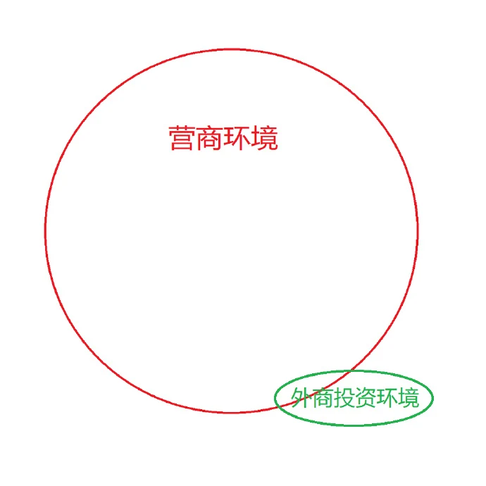
正确答案都是相似的，错误答案才会千奇百怪
“万无一失”是可能的。可靠性到 99.995%，不就是万无一失吗。人类可以做到四个九。但 100% 是不可能的。这个宇宙里就没有 100% 的可靠性。
这次 CrowdStrike Falcon 的事情，当然可以在软件质量管理、运营体系建设之类的层面找一找问题，总结总结经验。但想杜绝类似问题再次发生也是不可能的，无非是下一次在五年后还是十年后。微软最近两年开始用 Rust 重写内核，也号召大家用 Rust 写驱动。我们实验室试了一下，Rust 固然不容易产生 C/C++ 的那些问题，但 Rust 有自己的问题，该蓝屏还是蓝屏。
那么我们能从事故中学到些什么呢？
首先，美国赶走了俄罗斯的卡巴斯基，用美国“自主可控”的安全软件 CrowdStrike 加上美国“自主可控”的操作系统 Windows，也还是发生了这样的事情。“自主可控”有很多意义，比如不用担心别人“卡脖子”。但“自主可控”和软件质量、事故率之间没有必然关系。不能因为“自主可控”了，就对宇宙的熵增失去了敬畏之心。
软件故障和运营事故年年有，为什么这次会闹这么大呢？只能说因为 CrowdStrike 生意做的太好了，微软的生意做的太好了。因为生意做的太好，客户众多，以至于运行 Windows 的机器和运行 CrowdStrike 的机器重叠部分都有 850 万之多。机器多了，自然影响就大。如果是用户比较少的厂商出问题，影响面自然也没这么大。但应该因此限制企业服务的客户数量吗？如果这么做，带来的负面影响可能比一两次事故要大得多。
再一个原因就是 CrowdStrike 是 SaaS 模式的。SaaS 在用的时候很敏捷，导致故障的时候自然也很敏捷。但这并不意味着 SaaS 不好，只是甘蔗没有两头甜。对此能做的可能也就是让 SaaS 稍微不那么敏捷一点，做个 Trade Off。比如给用户一个开关，每次更新规则的时候给用户发邮件，让用户自己按按钮。再比如设置不同的更新通道，追求稳定可靠就可以选慢通道，追求第一时间防御最新威胁可以选快通道。这并不能避免问题发生，但可以减轻影响。
中国的政企用户本来就不喜欢 SaaS。这件事情之后，国内的 SaaS 厂商恐怕都需要更新一下产品介绍材料，讲一讲自己为什么不涉及此类问题，或者为防范此类事情做了哪些努力。
从用户这一侧看，能做的可能也就是关键系统要异构。比如某业务有 10 台服务器，是不是可以 5 台用 Windows，另外 5 台用 Linux？至少装的终端安全软件是不是分别用两家的？这样一家出了问题还能剩 50% 可用性。但异构也并不是新话题。只是做异构就意味着增加人力和财力的投入。高可靠和低成本不可兼得。就看怎么算账了。
不过决策链上的老板们被这个事情一吓，没准就愿意多投点资源了。大家要抓住这个找老板批预算的窗口期。
讲一下中文的奥妙。
“既要 A，又要 B”这种句式，看起来是并列结构，是一个天平。但其实天平的一头放的是绿豆，另一头放的是秤砣。“既要 A，又要 B”的意思其实是“一定要 B”，A 不能影响 B。
再嵌套讲一下中文的奥妙。
"一头放的是绿豆，另一头放的是秤砣"这句是在骂人。因为王八看绿豆，王八吃秤砣。对了眼是假，铁了心是真。
延迟退休
你老了，不用工作，还能拿到退休金，是因为有年轻人在工作——那么能拿到退休金难道不是因为之前交了养老保险吗？是，也不是。
假设现在所有人都退休了，没有人工作，没有人生产消费品，没有人提供服务，但是每个月给你发一亿。你拿着这一亿有什么用？能买到什么？其实那时候你是不可能拿到这一亿的，一分都拿不到。因为“每个月给你发一亿”也是一件工作，工作是需要有人做的。
村里有 100 个人。16 岁以上 60 岁以下的人每天都到十里外的河里背 30 斤水回来。20 斤带回家，10 斤倒进村里的蓄水池。等到了 60 岁，就不用挑水，每天可以从蓄水池里取 10 斤水。只要 16 岁以上 60 岁以下的人不少于一半，这个模式就可以永远运转下去。但如果没有 60 岁以下的人了，没有人挑水了，那么无论你年轻时往蓄水池里倒了多少水，现在都没有水喝。
延迟退休是人口出生率降低的必然结果。无论是早年所有人被迫的计划生育，还是如今一部分人的反婚反育，都必然导向这个结果。搞计划生育的人认为自己是对的，反婚反育的人也认为自己是对的，这不要紧，这没关系，因为这不是对和错的问题，这是数学问题，任何嘴皮子都无法改变数学题等号后面的结果。
目前还能延迟退休，可以让有点老但还没那么老的人也去挑水，但再往后呢？总不能延迟到 80 岁吧？如果生育率上不来，最终一切科技伦理都必然要为生产力让步。这也是个简单的数学题。
情感和本能
人类思维的第一层是情感和本能。你看到一个有魅力的异性，第一反应肯定是被吸引，然后才是配不配、要不要、该不该、行不行、敢不敢、值不值这些理性的思考。
你看到一个有魅力的异性，最终没有任何行动，这主要是思维的第二层所决定。不同的人经过第二层思考会得出不一样的结论，但第一层反应是类似的。
我们在路边看到一只被汽车撞伤身体撕裂奄奄一息的小鹿，思维的第一层必然是恻隐之心。但接下来我们可能会选择杀死这只小鹿，结束它的痛苦。这就是思维的第二层。
思维的第二层会受很多因素影响。比如接受的教育、掌握的信息、推理能力、个人利益，等等。所以不同的人在第二层的出不同的结论是很自然的。
但思维的第一层如果与众不同，大部分情况都会被认为是病态。比如你看到受伤的小鹿第一反应不是怜悯而是兴奋，这可能就得吃药了。
简单地说，思维的第二层决定了你是什么人，思维的第一层决定了你是不是人。
我是为你好
有人对你说“我是为你好”——可是，难道你自己不为自己好吗？
“我是为你好”这句话，并非关于好，而是关于权威。当一个人说“我是为你好”的时候，实际上表达的是“具体什么才为你好，我比你更清楚，我的判断比你更正确”。
所以，当有人说“我是为你好”时，如果你指出：“其实，我也是为我好”，对方一定会发怒。因为你通过指出其中的荒谬而挑战了对方的权威。
当有人说“这是为你好”，而且一定要为你好，必须为你好，让“为你好”的措施成为你唯一的选择，让原先存在的其它选项变得糟糕，那你就要琢磨琢磨这到底是为谁好。
“上帝”、“孝”、“反帝反修”、“我是为你好”、“保护青少年”——当我们赋予某个意象以先验的、绝对的正确性，也就创造了一件武器。罗马教庭杀布鲁诺，曹操杀孔融，用的都是此类武器。
【蠢人是不是比坏人更可怕？为什么？】
《庄子》中有个故事：
南海之王叫“倏”，北海之王叫“忽”，中央之王叫“浑沌”。浑沌对倏和忽很好。倏和忽想报答浑沌。他们觉得大家都有七窍，但浑沌没有，就为浑沌凿七窍。每天凿一个，七天后，七窍凿出来了，浑沌也死了。
这个故事又叫《我是为你好》。
2018-09-24
http://t.cn/RVCOWiy
有些事不用很严谨
有些事不用很严谨。比如在决定早上喝豆浆还是喝粥的时候，就不一定要很严谨。不过在对某件事或者某个人做出评价的时候，应该要严谨一些。
当然，你完全可以认为这也不需要严谨。你完全可以这么认为。这是完全可以的。 但如果你也认为这应该严谨一点，那么，首先，你对要评价的对象做出的评价是什么？用包含主语、谓语、宾语的句子把这个评价写出来。然后，你做出这个评价的理由是什么？用包含主语、谓语、宾语的句子把这个理由写出来。
接着，用一个包含“因为”和“所以”的句子，把评价的理由和评价连起来，连成一个长句。可以自己先读一读这个长句，看看能不能说得过去。
当你看到别人对某件事或者某个人做出评价的时候，在决定赞同或反对之前，也可以先试试对别人的评价进行梳理，看看能否梳理出这样一个“因为”和“所以”的逻辑。如果甚至连梳理出这样一个句子都做不到，可能那就不是评价，只是谩骂。
不是所有问题都能完美解决
不是所有问题都能完美解决。有时候只能在几个都很糟糕的选项里选一个。
如果只是像上面这样抽象地把这个道理讲出来，那么大部分人都能觉得自己能接受这一点。然而当遇到具体的事情时，很多人会对其中一个选项的糟糕倾注仇恨，但绝不去具体思考另一个选项是不是也很糟糕。他们对另一个选项的糟糕不是否认，而是回避。他们小心地捏住自己的思维，在现实的边缘一掠而过。只要不触碰，就不存在。
为什么很难说服他人
【为什么很难说服他人？】 “想要让领导接受我一个建议，咋那么难？和朋友、家人沟通也是，明明是为他们好，苦口婆心，摆事实讲道理，他们总能找出很多理由借口反驳我，说着说着还能吵起来，又不是和他们辩论，还是我不对了？真是无语！说服一个人怎么那么难？”
如果我为你好，想说服你，让你不要总想着说服别人，会是困难还是容易呢？ 2020-02-19 http://t.cn/A6ALa29z
热爱与天赋
上周和新同事聊起知识付费。 2016 年掀起了知识付费的高潮，这一波风口持续了好近，最近一两年则相当黯淡。实践下来，供需两侧都意识到了： 1、知识付费是冲动付费 2、付费带来的实际收益是很小的，更多是心理上的获得感 因此，知识付费逐渐演变成了，复购率特别低，安抚焦虑感的商品售卖。因为复购率特别低，这个赛道越走越窄，专挑当前社会上焦虑感特别强烈的领域去运营。 但这两年，虽然焦虑感一路走高，但知识付费却不断下行。因为大多数人都意识到，在这个下行周期，知识不能改变命运，它什么都改变不了……本身就是注重 “获得感” 而不是 “获得” 的商品，一旦感受被击穿，赛道也随之坍塌。
网友评论：真正的行业大佬如果开设知识付费课程，绝对价值千金，然而悖论就在于无论是哪个行业，能做到大佬位置的人压根不需要也不会用知识付费去创收，反而是略懂一点的半桶水大行其道。
我：到目前为止，「大佬」开知识付费的数量为零。大佬出手就能教会普通人知识的力量，这是一个幻想，没有任何实证。我认识的顶级大佬（整个互联网行业的 TOP，业绩能力碾压我）认为自己并不能做到这一点。
简单来说，通过课程来学习知识，获得力量，是一个彻底的幻想。
获得力量的唯一途径不是课程学习，而是高质量的实战场景，包括高质量的工作输入，高质量的任务压力，最后输出高质量的任务交付。
也就是一份高质量的工作。
显然，这才是一个悖论。
而付费课程，不管你付多少钱，哪怕付我 50 万让我面对面手把手教你做产品，输入输出的环境也不可能和高质量的工作相比。
打破这个悖论的方法既不是付费课程，也不是大佬点拨，而是热爱与天赋。因为热爱，哪怕无人指教也会自己摸索，同时从天赋中获得更多的正反馈，所以能坚持下去，一点点积累经验，直到获得一份高质量的工作，进入高速上升通道。
正反馈
1、正反馈是一个人积极行为坚实的驱动力。
2、积极的行为越多，产生的收益就越多。
3、容易从哪里获得正反馈，是一个人最重要的天赋。
4、最廉价的正反馈来源是 “好奇” 与 “爱好”，不依赖外部奖励就能产生正反馈，但成年后的好奇心与中年后的爱好都是奢侈品。
承受不确定性
除了运气炸裂的那些以外，绝大多数人比别人更成功的那一面，不仅取决于更聪明和更努力，还取决于他们在成功的这件事情上，比别人更能承受不确定性。
不见兔子不撒鹰符合人类直觉，没有确定性的收益，你就不会付出。 如果没有确定性的收益，你还乐意于长期付出，这就是成功背后的暗门。承担 “付出没有对等回报” 的风险，才会比别人更容易摸到成功的脚背，在不可预测的机遇来临时一把抓住。
承担这种风险，往往不是因为睿智，而是因为热爱与价值观。价值观很虚，所以 “热爱” 也是一种天赋。你生来热爱什么，在哪些方面愿意不计回报地付出，决定你了在哪些方面会拥有超出常人的成就。
从什么地方能获得正反馈
周末听到一个技术案例，有人用大模型训练人格，其中一个步骤是模拟玩游戏这个过程。训练了十几个人格，发现大多数都躺平了，不好好玩游戏。
躺平的原因很简单，虚拟人格试了一会儿，搞不明白游戏怎么推进到下一步，下两步，直接躺倒，消极怠工。
只有少数一两个虚拟人格，没用多少时间找到了推进游戏的方法，于是玩得特别来劲。
最后我们感慨道，正反馈对人类真的太重要了。没有正反馈，人类就直接躺平。
从什么地方能获得正反馈，就是一个人最大的天赋。
如果我们把常见的 ”钱、性、社会地位“ 等等，视为利益型的正反馈，那么另一部分就是与利益无关的，爱好型的正反馈，可以不计收益地投入——比如玩游戏，比如看球，比如摄影。
这些爱好型的正反馈，当你不计收益，经年累月地投入，积累了比别人更多的经验和技能，就有可能在某个命运的触点上，带来预期之外的超额收益。但完全不要去思考收益这件事——爱好带来的乐趣本身就是收益。
惟其如此，才能在看不到利益的时候长期坚持，长期积累，直到某一天被概率击中。
用好 excel
Excel 就够了，简单清晰。我通常还会打印一份塑封携带，应对万一手机失窃/损坏之类的情况。 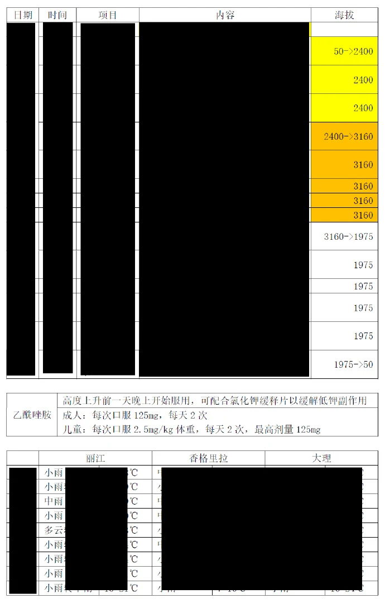 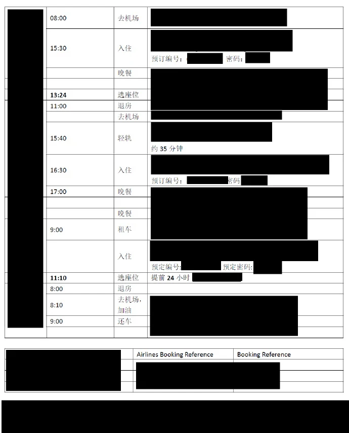
大模型评测
我有一个自己的大模型测试集。其实就是设定了一系列结果可验证的任务。比如：推理一个函数的执行结果、写一个能完成某任务的程序、分析一个故事中的人物关系、找出一段描写中使用不当的形容词、给出一个电路某两点之间的电压，等等。
所以，在和一些没怎么使用过大模型的朋友讨论大模型的时候，大家往往会惊讶于我对一些模型的评价，并表示”某某模型在某某测试中排名很靠前啊！“
在大模型问题上，大家也不要忘了，咱们最擅长的就是“跑分”，或者叫“测评优化”。
这个隐喻提醒我们，在评估大模型时，需要更全面、更贴近实际应用的方法，而不是仅仅依赖于公开的基准测试。正如教育应该培养学生的全面能力一样，AI的发展也应该注重实际问题解决能力和通用智能的提升。
事实与逻辑
你上班远，希望小区附近建一个地铁站。他喜欢清静，希望小区附近不要有地铁站。你们立场不同，但你们可能都是好人。
判断一个人是不是好人乃至于是不是一个人，主要看良知是否被其它东西所淹没，以及是否尊重事实和逻辑。
克服“我不会”的心魔
昨天粉丝群有人提起我帮沈沉舟同学修复 ZIP 压缩包的事，我忽然意识到这居然已经过去二十年了。
其实在那之前，我没做过类似的工作，也就是说我并不真的“懂”应该怎么做。正如更早之前，我在既不懂 Linux 也不懂 C 语言的情况下帮别人解决了一个 Linux 下 C 语言的问题。这两件事一个处理的是源代码，一个处理的是二进制数据，但我的解决思路其实是类似的，就是概率推理，或者说贝叶斯。
所以我们碳基其实也可以像大模型一样工作，进而“涌现”出本来不具备的能力。大模型目前的参数量还不能和人脑比，但大模型有大模型的优势：不害羞，不害怕。如果我们能克服“我不会”的心魔，不拘泥于传统意义上的“懂”“掌握”，也许就能突破自己的能力边界，让自己进入另一个境界。 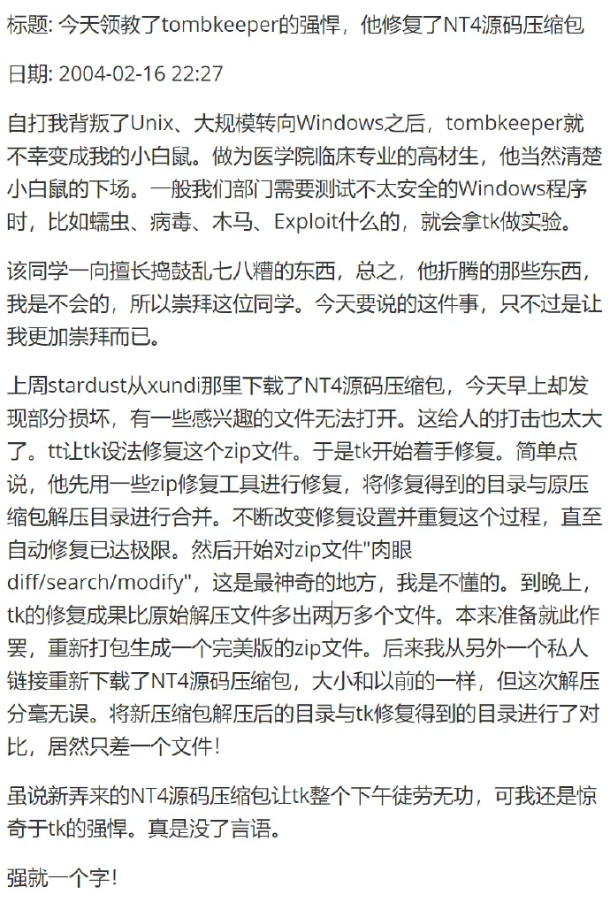 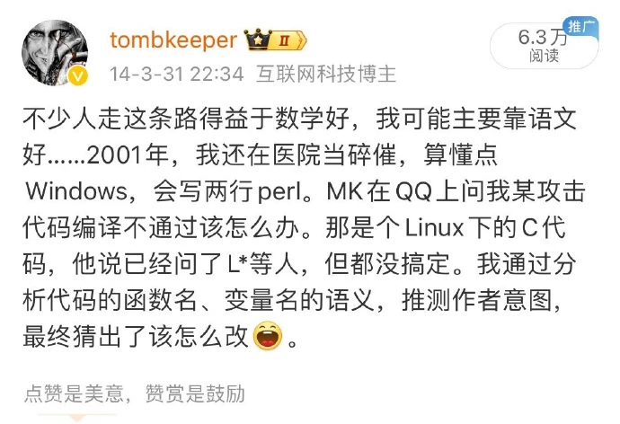
兜售幻觉是最好的生意
半藏森林你们还记得吧？半藏森林的成功，在于她的照片能给你“男友视角”的幻觉。半藏森林至今都还是这个路子。东北雨姐的成功，在于她的视频能给你“农村生活”的幻觉。东北雨姐未来也还将是这个路子。
兜售幻觉是最好的生意。与之类似，还有智力迅速提高的幻觉、这个我也行的幻觉、下个月就能发财的幻觉、每天赢一次有时候赢好几次的幻觉，等等。
q:Tk 教主给了我什么
A: 我不但给不了你什么，我还会夺走你的幻觉。
思维训练跟体能训练一样，开始都是痛苦的，越过一个门槛后才能轻松起来。也不是你一个人如此
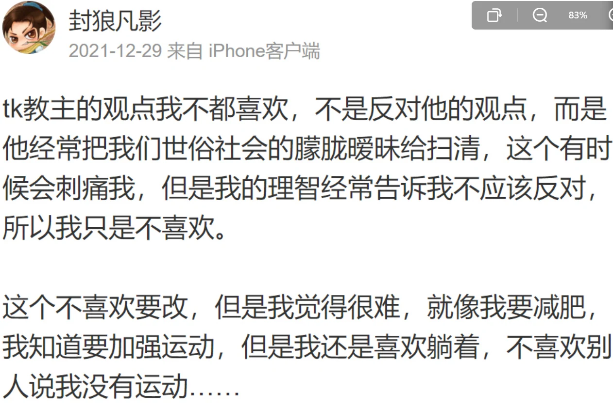
互联网不会缩小人和人的能力差距，大模型也不会
大模型很擅长提供答案。
提供答案的前提是，你得给大模型输入精准的目标。也就是经常提到的 “会提问”。目标越精准，回答效率越高。
但憋做梦了。
我这辈子都没遇到几个 “会提问” 的人。包括几年前付费问答流行那阵子，提给我的产品问题都是什么屎？会提问也好，CoT 也好，都是高级技能，从来不指望普通人普遍具备高级技能。
事实上，当一个人 “会提问” 的时候，往往他已经具备了这方面系统性的认知，并且有着缜密的逻辑。我在犬校一直提倡 “用思考交换思考” 的提问，你猜怎么着？很多次，当一个人缜密地把产品问题组织好的时候，他会觉得 “我已经知道（或接近）答案了”。
所以 “会提问” 其实是专业和聪明的一种表现方式，但如果你不专业或者不聪明，大模型是帮不了你太多的。
从产品设计的角度来说，Prompt 传递的目标是否精确，会是大模型应用的基准考量。这就要寻找特定的，意图收敛的场景，用户基于直觉（而不是基于思考）输入精准目标，才有可能把应用的规模做大。思考是一件消耗脑能量的事情，人类的本能就是节约脑能量，超越本能则注定无法规模化运营。
互联网不会缩小人和人的能力差距，大模型也不会。技术进步可以把所有人都带进海鲜自助餐厅，但技术进步无法把所有人的饭量都变得一样。
所有的东西最终都是复利的积累
所有的东西最终都是复利的积累。金钱的复利只是行动和思考的复利的积累的滞后体现。
如果只关注金钱的复利而不关注更本质的行动和思考的复利，就好像 95%的精力在关注血压血糖的测量和吃药降压控糖，而只把 5% 的精力用于关注锻炼，睡眠和饮食。
而实践上如果你主要关注锻炼，睡眠和饮食，你听到其他人讨论血压血糖痛风失眠的烦恼时，自然产生一种“不知有汉，无论魏晋”的滑稽感。
否则，你将被这些人的讨论带歪，把主要的精力放在操控粉饰滞后的指标，而没有在源头真正改造自己，让自己越来越强大。
想提高逻辑能力
粉丝群有人说想提高逻辑能力，我推荐了《清醒思考的艺术》。作为一本关于逻辑的书，这本书相当简单，可以说没什么深度，读起来一点也不费脑子。当然，不费脑子是指书本身的文字，但如果读了之后不去结合自己日常遇到的问题思考，那也不会有收获。
你们先试试这个：
互联网让我们很容易就能找到志同道合者。
我们阅读支持我们理论的博客。新闻个人化使得
相反的意见根本不会出现在我们的电脑屏幕上。
我们越来越多地活动在思想一致者的社区里，这
更加加深了确认偏误。
我们怎样才能保护自己呢？作家亚瑟·奎勒·库
奇的一句话很有帮助：“干掉你的宠儿。他的这句
话是对那些经常舍不得删除漂亮但多余句子的作
家们讲的。他的呼吁不仅适用于优柔寡断的作
者，也适用于我们大家。
结论：请你与确认偏误做斗争。请你写下你
的信条
有关世界观、投资、婚姻、健康预防
措施、节食、成功策略的，然后寻找反驳证据。
干掉自己最心爱的理论，这是一桩艰苦的工作，
但作为聪明人士，你不会躲避的。
很多人都很焦虑
我知道很多人都很焦虑，焦虑35之后怎么办，被毕业了怎么办，降薪了怎么办…针对这些客观上存在的危机，这里我要说两个看起来很矛盾的观点：
- 一定会有办法，天无绝人之路
- 一定不存在“长期可复制/程式化”的解决方案
第一条很好理解，现在怎么说也是太平年月，出路是很多的，绝对不是很多人想的那样这也不行那也不行。但是这些出路，一定是比较小众的、个性化的、甚至不一定是主流认可的，总之不可能是长期所有人都可复制的程式化动作。
说人话就是，不可能有什么解决方案，对每个人都是包教包会包分配的。可复制的办法，要么只针对少部分人，要么门槛或者难度非常高，要么人一多就不灵。总之不可能存在那种“学了xxx就一定能克服35岁后危机”的办法。
那么我们普通人怎么解决或者预防35岁以后的就业危机呢？如果你还年轻，可以低成本（这个成本不一定是钱）多尝试一些你自己擅长的非主流路径，或者认识一些看起来和自己不搭边但是做的还不错的朋友。
你35岁后的事业解决方案，很有可能都蕴含在你30岁左右的随机尝试和努力中。
真理之凿
真理之凿其实一点也不像凿子，更像是一根两层楼高的方柱。之所以用这个名字，是因为某一代大祭司用搜索引擎确认了这个词以前没人用过。
真理之凿的长宽都是一米，正好和川陀图书馆广场上铺的钨钴铬地砖一样大。据说真理之凿也是用钨钴铬合金做的。所以，平时很难看出广场上哪块地砖其实是真理之凿的顶部。
需要启动真理之凿的时候，大祭司就会拿出那本《心灵史学》，翻到第 42 页，用瘦长的手指按照历代祭司口耳相传的密码开始触摸书页上的文字。如果你是一个从未见过这场面的外邦人，这时会惊讶地看到广场上的某块地砖生长成了一根暗银色的方柱，然后这根方柱又飞上了天空。
这时大祭司的工作其实已经完成了。那个密码只能用来唤醒真理之凿，并不能控制它。所以大祭司每次触摸完那些文字后，并不会立即合上书，而是仍旧把手放在书页上，并尽量不抬头看天空——因为他不知道会不会看见一个越来越大的黑色正方形。
在《心灵史学》书脊里那块谢顿芯片的引导下，真理之凿只用 20 秒就找到了拉伊库。“像你这样不讲理的人会死在川陀的”，拉伊库忽然想起自己出发前母亲说过的这句话，不由地笑了一下，“我怎么可能不讲理呢，我读过那么多诗。读过诗的人怎么可能不讲理呢？不讲理能读诗吗”？
虽然有 68 吨重，但真理之凿只用 5 秒就升到了拉伊库头顶正上方 1200 米。接下来的事就交给川陀的引力了。
又用了 20 秒，真理之凿回到川陀图书馆广场，缓缓没入地面，担当起它日常的地砖工作，直到下一次被唤醒。
大祭司放下《心灵史学》，发了一条微博。
如果你希望自己更讲理一些
如果你希望自己更讲理一些，可以先试一试下面这个简单的办法。
在得出结论的时候，用至少一个包含“因为”和“所以”的句子来描述得出结论的过程。在句子里尽量去除不必要的形容词和副词；使用名词而不要使用代词。把句子写出来，读几遍，看看能不能说服自己，看看句子里的“因为”是不是可以得出“所以”。
怎么看那个“因为”是不是可以得出那个“所以”呢？可以把这个句子分解为三段论。看看大前提和小前提是不是成立。
怎么看大前提和小前提是不是成立呢？比如大前提是“如果 A 必然 B”，那么想一想看这是不是必然的，是否完全不可能找到不符合该条件的情况。
比如，在真理之凿的故事里，拉伊库对他母亲说：“我怎么可能不讲理呢，我读过那么多诗。读过诗的人怎么可能不讲理呢？不讲理能读诗吗？” 把这句话转换为包含“因为”和“所以”的句子就是：“因为我读过那么多诗，所以我讲理”。分解为三段论则是：
大前提：读过很多诗的人一定讲理。
小前提：我读过很多诗。
结论：所以我讲理。
然后可以想一想“读过很多诗的人一定讲理”这个大前提是正确的，还是不太严谨的，还是荒谬的。
不过，毕竟我们这个世界没有真理之凿，所以不讲理是完全可以的，人并不必须讲理，不讲理也能活着。但可能会有少数人希望自己能更讲理一点，那么就可以先试一试上面这个简单的办法。
如果因为慕强而喜欢一个人，这是真的喜欢吗？
【如果因为慕强而喜欢一个人，这是真的喜欢吗？】
人类普遍用“甜”而不是“苦”来形容爱情的美好，因为我们的味觉就是喜甜厌苦，甜对我们来说是美好的。
自然界里，甜味意味着富含能量的糖分，而苦味则意味着有毒的生物碱。所以人类和各种杂食、植食动物都普遍具有喜甜厌苦的味觉。这种味觉是以淘汰掉无数个体为代价而演化出来的本能，是刻在基因里的程序。
乌鸦没有爱情，狮子也没有爱情。但乌鸦和狮子在求偶中都会慕强。物竞天择，慕强是演化的结果。不慕强的基因早就消失在演化的长河里了，就像我们祖先中那些由于偏好苦味而死于生物碱中毒的变异个体一样。
爱情是动物演化出思想后，在求偶过程中产生的感受。而慕强是求偶过程中的本能，和喜甜厌苦一样是刻在基因里的程序。所以慕强和爱情之间并不矛盾。两者无需区分，也分不开。
从“我的意中人是个盖世英雄”到“套马的汉子你威武雄壮”，人类在描绘爱情的时候从不避讳慕强。阿朱对乔峰的感情一定有慕强的成分在里面，而谁又能说那不是爱情。
2022-08-28
http://t.cn/A6SKoCQ2
技术研究版版规
20 年前，我当安全焦点论坛“技术研究版”（后改称为"逆向工程、协议分析和漏洞研究版"）的版主时，写了一个版规：
技术研究版版规
技术研究版为网络安全、Windows Hacking、Unix Hacking版、移动互联、陷阱网络等版面合并而成，这些版面的老贴可以在本版找到。
国有国法，版有版规；国无法则乱，版无规则荒。本着建立一个良好的技术交流环境的目的，兹制定本版规则如下：
零、安全焦点论坛是个自由的地方，保障所有人的自由和权利。譬如说，你有权提问，别人有权保持沉默，你可以自由发贴，版主可以自由删帖。
一、加分原则遵照《xfocus积分制度》。
本版加分专用贴
二、本版主旨是建立一个有一定深度的技术研究和探讨的环境。无论是是长时间的沉淀，或者是偶然间灵感的迸发，或者是某个技术问题上的点滴心得，都可以在这里和大家一起讨论。
本版涵盖内容包括：各种操作系统的安全技术、底层研究、各种网络协议、各种硬件设备相关的安全技术、以及其它与信息安全相关的技术。如漏洞技术、防火墙技术、IDS技术、身份认证、数字签名等等。
禁止发与本版主旨不符帖子（包括以爱国、民族、信仰或其它更加崇高事物的名义）。本版禁止询问如何攻击，禁止贴个IP请人攻击，禁止发广告，禁止发“如何进攻XXX网站”、“我扫描到了XX漏洞，请问如何利用”、“拜师”、“小组成立宣言”之类。如有上述行为，除了删帖，还会封ID若干天。
三、本版主题定位于安全技术/学术讨论，并非系统疑难杂症求助，我们要求提问贴涉及的技术问题应有一定深度，提问原则为“抛砖引玉”，“抛砖”有两重含义，
1、提问也要言之有物。你提的问题越详细，就越有可能尽快得到有效的帮助，而且你的提问也越有价值。
2、提问贴子本身应该包含你自己对该问题已经进行的部分探索，不能指望连块砖都没有，人家就把和氏璧送上门来。
不好的例子：
OUTLOOK中的邮箱密码存放在什么文件中，如何对其进行破解？
好的例子：
我想破解outlook邮箱保存的口令，我的outlook是Office 2000套件中的。我已经找了安装目录下所有可能的文件，并且以“outlook”为关键字在注册表中搜并查看了所有可能的键值，可是还没找到。有谁找到过？另外，这种密码应该如何破解呢？”
回复贴必须言之有物，严禁在回复中灌水，或者发类似于“好哇”“学习ing”这样毫无内容的回复，对这样的帖子，我们将予以删除。对反复有这类行为的ID也将采取一定措施。
下列问题不适合在本版提问：
MS Office系列应用，IE、QQ被改，怀疑系统中出现木马、病毒，文件格式识别、转换，索要破解、序列号，硬件故障。
发贴前请先在本版的常见问题集中看看你要问的问题是否可以在其中得到解答，然后使用一下本论坛的搜索功能或者去Google进行一下搜索，如果问题通过搜索解决了请在此发布你的心得，这是非常受欢迎的。
四、提问就该诚恳一点，不要耍小聪明。这样的帖子是不受欢迎的：“来试试看，这个问题你恐怕也不能解决吧！”“挑战！在好多论坛都没人能回答！”能正确回答你问题的人，不会弱智到被这些小把戏刺激得热血沸腾；能被这些小把戏刺激得热血沸腾的人，不会对你有任何帮助。
五、如果发现你的帖子不见了，大多数情况下是被转到了别的版面，而不是被删除，所以请先别急着激动，在综合提问版或者编程讨论业界沙龙等版面里找找。
六、如果有空，建议看一看《提问的智慧》及《如何成为一位 hacker》，从这些文章里面不光可以学到如何更好得和别人交流，还有很多其他有益的东西。
今年的成长
昨天夜里有两位网友发来私信，向我分享了他们今年的成长。两人家庭条件相差甚远，所走的路也大不相同，但都抓住机会付出努力让自己变得更好。
尤其是第一位网友，蛰伏五年还能骤起奋进，很不容易。也可想而知他的奶奶现在有多开心。
#30、大部分人一辈子会有三到五次大机会。
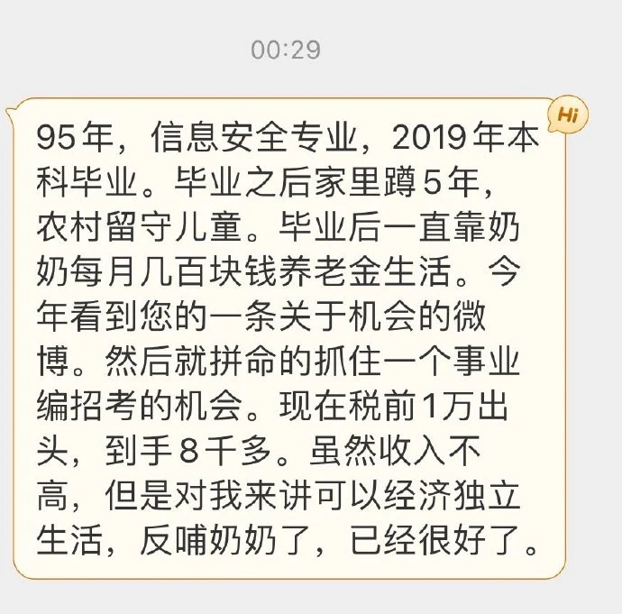
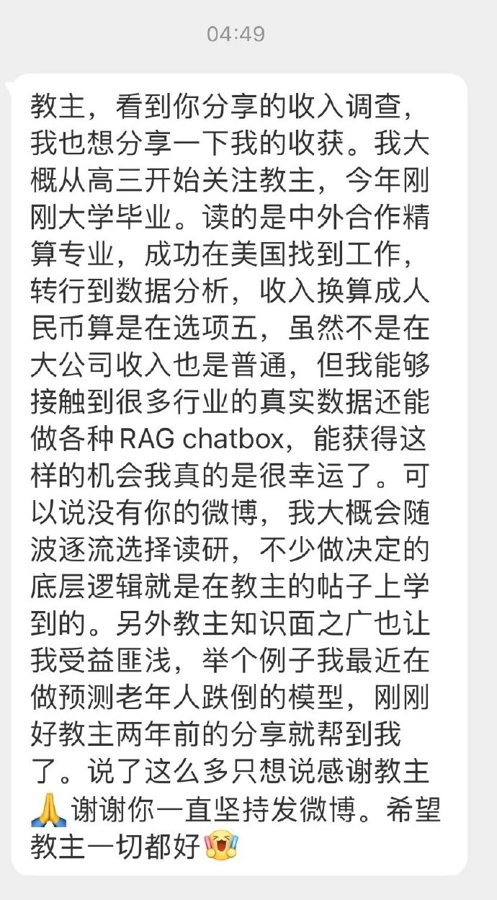
正态分布
中了双色球的人，被陨石砸到头的人，被海鸥抢了薯条的人，任何人，幸运的，悲惨的，都是“人”这个池子里的一个随机数。其高尚，其卑劣，都符合正态分布。
试图把自己内心那点东西安放到一个随机数上，对一个随机数倾注感情，其结局也必然是随机的。
捏泥巴搭积木
将个人成长比喻为"捏泥巴搭积木"。这个比喻体现了我们如何构建自己的思维方式和行为准则。就像搭建积木一样，我们需要不断收集自己的经验和感受，逐步建立起自己的为人处事规则。
然而，我们在这个"搭建"过程中，难免会受到外部环境的影响。如果我们仅仅按照外界提供的模板来塑造自己，没有独立思考，那么我们搭建的"积木结构"可能更多地反映了他人的期望，而非我们自己的真实需求。这种方式可能使某些人（比如社会的上位者）受益，但未必符合我们作为独立个体的最佳利益。
尽管如此，要想让我们的"积木结构"既美观又稳固，我们也不能完全忽视外界的影响。关键在于保持清醒的判断力，在吸收外界经验的同时，始终坚持自主搭建。当我们看到别人搭建的漂亮"积木结构"时，我们可以仔细观察和思考，从中汲取对自己有用的部分。这样，我们就能让自己的"捏泥巴"过程更加顺畅高效，最终搭建出更加出色的"积木结构"。
这个过程强调了个人成长中自主性与开放学习的平衡，以及批判性思考的重要性。它鼓励我们在保持独立性的同时，也要善于借鉴他人的智慧，从而实现更好的自我发展。
像哄小孩子一样哄肉体
肉体和思想，是两个东西。如果肉体做事迷惘，会不会是思想没有把要做的事，拆解的足够细呢？
知行合一：想和做之间的小秘密
咱们平常做事，有时候手忙脚乱，不知道从哪儿下手，就像是大脑和身体闹别扭了似的。这时候，别着急，可能是我们的想法还不够清楚呢。
想象一下，你要做一道菜，但是只知道个菜名，没有食谱。肯定会觉得无从下手吧？同理，我们做事也是这样。
所以啊，当感觉做起事来磕磕绊绊的时候，不妨停下来，问问自己：
- 我到底想做什么？就像确定要做什么菜一样。
- 这事儿该怎么做？就像列出食材和步骤。
- 从哪儿开始比较好？就像决定先切菜还是先烧水。
- 有什么困难吗？就像发现缺了某种调料。
- 做着做着觉得不对劲怎么办？就像尝尝味道，看看需要调整什么。
把大事化小，小事化细，就像把复杂的菜谱拆解成一个个简单的步骤。这样一来，脑子里想的和手上做的就能配合得更好啦。
记住，想和做是一对好搭档。想得清楚了，做起来自然就顺手。做着做着有了新想法，想法又能指导更好的行动。这就是所谓的知行合一，说白了，就是让我们的想法和行动齐心协力，一起向目标进发。
所以呀，下次觉得手忙脚乱的时候，别急，停下来捋一捋思路。把想法梳理清楚，行动自然就不慌不忙了。这样，我们就能把事情做得又快又好，还不累着自己。
积小胜而至大胜
你好呀，
积小胜而至大胜，成功是什么，成功是一种惯性，
个人认为，我们都是普通人，我们需要自我实现，我们也需要群体认同，我们需要不断的正反馈，
所以，是我的话，我会不再用宏大叙事，
撅着屁股捡钢镚，会更适合我一些，
把手弄脏，
在执行中优化，在增长中修正，
而不是想着一蹴而就，
是吧，加油。
人生迷茫、焦虑、失去动力
你好呀，
焦虑的反面，
是具体，
只要更多的思考怎么做，how to do，
而不是去思考是什么，为什么，what，和，why，
那么，你应该可以迎来，
「念头一转，豁然开朗」，
至于生活的意义，
我是不喜欢这种大问题的，
对我而言，生活没有意义，
生活的意义是自己赋予的，你认为有，就有，你认为没有，就没有，
你认为它是什么，它就是什么，
仅此而已，
生活可以是故事，
可以是游戏，
可以是冒险...
生活可以是一种艺术，
可以是一场离别，
可以是一次投资...
就像去假期出去景点旅游，
有些人是去看动物园的，
有些人是去领略祖国山河的壮阔，
有些人是去品味特色美食，
有些人选择在酒店补眠，
有些人是去拍照留恋，
有些人则是去做点小买卖...
都，挺有意义，
是的，生活的意义，是“涌现”的，
每个阶段，每个角色都有不同的意义，不需要去过度思考这个问题，它会在它该出现的时候出现，
正如穿上军装，就想着保家卫国，
披上白大褂，就想着救死扶伤，
系上围裙，就想着让家人享受营养健康...
正如我，生活的意义，就是和大家一起成长，
仅此而已。
有主业下，想 all in 副业
你好呀，
如果是我的话，我会选择先做化工，然后用空闲的时间，做副业，拿到结果，在过程中，把自己培养成一个互联网领域的高手，尤其是搞流量的能力，然后，当副业的收入超过主业，且连续六个月稳定，我再辞职，
不要焦虑，焦虑的反面，是具体，是思考怎么做，
而这一切，发生在有主业的空闲时间，会更好，因为起码有一份收入，不至于动作变形，
嗯嗯，祝一切好，回复慢了，可以追问。
不要焦虑，焦虑的反面，是具体，
具体要做什么呢，就是培养自己的核心能力，核心能力在这个社会有哪些呢，写作，表达，销售，网感（搞流量）…你就先记这四个，如果哪个不讨厌，就咬牙把它练到极致，
然后上班的话，一定先上着，然后空余时间做做副业，副业，是人生第二曲线，多一些可能性，
最后，上班要考虑三个问题，钱多不多，上升通道明显不明显，可支配时间多不多，起码符合一个，不然就别去，
祝一切好呀。
怎么把一个任务进行拆分，让ai来完成的
「@是包包捏:我也想知道tk老师是怎么把一个任务进行拆分，让ai来完成的。想看看我自己在ai使用上还有哪些能进步的地方。」
- - - - - - - - - - - - - - -
别把AI当人工智能，当成人工傻子
一个缺心眼但勤勤恳恳的傻子
要假设在每个可能出错的地方都会出错
全都要提醒
事实、观点与理念
你对事件 C 提出了观点 O。
你对 O 给出的理论是 T。
T->O 看起来非常合理。
在 T->O->C 内部，一切都完美而自洽。
但是，C 是不是非常独特以至和宇宙中其它所有事件都不同？理论 T 是不是只适用于 O ？如果你还沉浸在 T->O->C 的完美而自恰之中，我不建议你思考这个问题。
不干胶
很多年前我就想写一篇关于不干胶的文章。我觉得不干胶是我们这个时代很多事物的象征。但这篇文章可能不够进步，所以我打算写成意识流文学，起到终极汉语从句的作用，然而也到现在都还没写。不过虽然我还没惹不干胶，但不干胶一直在惹我。
前阵子请了两个保洁清理一个场地。刚开始没多久，保洁忽然打电话来说现场有很多不干胶残迹，他们打算用解胶剂喷一下，再用百洁布擦。我一听，立即警惕起来。
我为什么会警惕呢？如果你们遇到类似情况也应该警惕。你想：保洁用扫把之前，会先通知你吗？保洁用吸尘器之前，会先通知你吗？保洁用抹布之前，会先通知你吗？那为什么用百洁布之前要先通知一下呢？
百洁布的主要成分是合成纤维。合成纤维也没什么。关键是百洁布的纤维里加入了矿物磨料，比如碳化硅颗粒。所以，用百洁布进行清洁，是一个有损操作，会把被清洁物表面擦伤。无论是用来擦金属还是擦瓷砖，都会导致这个问题。
保洁虽然未必知道百洁布的构成，但他们一定知道这东西会把物体表面擦伤。所以先打个电话说“我们要用百洁布了”。而你只没明确表示反对，将来发现东西表面被搞坏了，就会收到一句“我们已经告诉你要用百洁布，你也没说不行啊”。
所以我立即阻止了他们。然后我到现场告诉他们百洁布会把东西擦伤。他们很淡然，脸上没有丝毫的惊讶。显然他们确实知道用百洁布的后果。然后他们抛出了问题：“那你说怎么擦呢？”
我告诉他们可以先用煤油涂到不干胶上，然后用抹布就很容易擦掉。我拿来了煤油，让他们试一下。他们试了之后发现确实如我所说，于是略惊诧。但他们还是嘟囔说用抹布速度太慢。于是我告诉他们说：你们去买某某品牌某某型号的百洁布，那个不含磨料，不会把东西擦伤，花多少钱最后一起算。然后这件事才算有了一个比较圆满的结果。
其实，只要最初用不干胶的人选质量好一点的不留残胶的产品，这一切就都不需要发生。保洁的工作可以更轻松，也不必消耗煤油和百洁布。好一点的不干胶产品价格也并不会贵多少，至少比消耗掉的煤油和百洁布便宜。我完全愿意负担购买更好不干胶产品的价格。但是不，不，不，不，不，糟糕的不干胶永远都会有市场，永远给所有人带来麻烦，那种好像也不严重，只是看起来难看，摸起来粘手的麻烦。永远，所有人。
社会如何运作
粉丝群里有人让我给参加高考的同学一点建议。他的本意是让我在专业填报上给一点建议。但这是不可能做到的，因为不存在普适的专业填报建议。
不管考上哪所大学，又或者没考上，在这个年龄，有两件事是应该做的。
第一还是多读书。这可能是你最后的培养阅读能力养成阅读习惯的机会了。这里说的书不一定必须是出版的书。凡是系统性整理的知识，都算是书。各种“号”各种“圈”自然不算。那么短视频之类就不能看了吗？也不是。如果是出于娱乐的目的，看看无妨。但不能把这类东西当成获取信息学习知识的途径。
第二是开始试着了解这个世界是怎么运作的。如果考上了大学，可以从你们学校开始。自校长以下有哪些部门？每个部门管什么？各部门负责人是谁？校友会是哪个部门管？食堂是哪个部门管？校医院是哪个部门管？学校怎么考核老师？怎么考核辅导员？团委日常有哪些工作？学校是怎么发展学生党员的？
不管考上哪所大学，又或者没考上，做好这两件事都可以帮助你度过一个更好的人生。
坚持
我学的时间并不多，基本就是坐车或上厕所的时候抽点时间练一下，根本谈不上勤奋。所以说很多事情上只要稍微努力一点，稍微坚持一下，就能超过多数人了。
逻辑
吴柳芳的事情上，如果单纯反对“擦边”，且不止反对吴柳芳，而是反对所有“擦边”，认为“擦边”违反公序良俗，所以反对国内互联网上所有“擦边”图片、视频，那么这个逻辑是自洽的。
如果不反对“擦边”，但是反对运动员擦边，那为什么只反对运动员擦边？原因是什么？这个原因的逻辑能自洽吗？是不是反对所有运动员擦边？比如，国家一级登山运动员峰哥，擦边了，那是不是也同样反对？
一直这样探寻内心，可能最终会发现自己思想的混沌沙海里藏着一只倔强的狐獴，偶尔会把头伸出来一秒钟，大喊一声“这样会伤害到慈父”，然后又迅速藏回去。
技术进步
从今年夏天开始，旧金山地区的 Waymo 无人驾驶出租车订单数已经超过传统出租车了。
有些东西能试着阻挡一下。但生产力进步、科技进步是无人能挡的。我们可以感慨，可以痛心，可以咒骂，但无法阻挡。如果想做些慈悲的事情，那就想办法帮助受浪潮冲击的群体转型。但不要想去帮他们阻挡浪潮。
共同健康
2022 年 12 月 22 日，在辉瑞下线相关数据的前一天，我把全国有 Paxlovid 的 854 家医院名单保存了下来，后来帮助到不少朋友。
在这个过程里，我发现只要不是顶级富豪，都可能面临同样困境。数千人企业的总裁和这个企业的一线员工，都一样手足无措。共同富裕虽然没实现，但共同健康是做到了。
独立思考
你说皮亚诺公设是先验的，我可以接受。
你说加法交换律是先验的，我勉强接受。
但无论你说 2+2=4 还是 2+2=5，我都不能直接相信，我得自己算一下。
有些东西太复杂，我不会算，你也不会算。你要非要我相信你的答案，就有些霸道了。既然大家都算不出来，那我爱信什么信什么。
不过这种情况我一般不会选择信什么，而是选择走着瞧。你如果真相信自己的那个答案，应该不会害怕走着瞧。你不会害怕最终看到一个不一样的答案，因为你相信那个答案是唯一的可能。除非，你其实也没那么相信。
没有人能随随便便成功
没有人能随随便便成功。
最近两年重新火起来的陈鹤皋老师，上世纪九十年代开班教学的时候，在每个学员的教材上都会手写一些寄语：
一鲸落，万物生
一鲸落，万物生，肯定没错，《人民日报》说的那错不了。
不过从这张照片看，万物生不生的另说，首先是鲨鱼啃。一鲸落，鲨鱼啃。啃剩下来的肉渣子才轮到万物。
（图片为英国自然历史博物馆评出的 2024 年度野生动物摄影师作品）
大模型妙用
昨天晚上粉丝群里在讨论付鹏的演讲。那篇稿子两万多字。我阅读速度比较快，所以还好。但很多人没耐心看，就让大模型给自己总结。然而大模型总结出来的提纲又过于简略，看了等于没看。
演讲速记稿里面就是会有很多口水话。所以我在粉丝群里分享了一个经验：在使用大模型处理这类内容的时候，不妨反过来：不是让大模型帮你总结摘要，而是帮你去掉无关内容。有人表示不知道怎么让大模型判断“无关”。其实只要告诉大模型“有关”是什么就可以了。不是“有关”的，自然就是“无关”的。
找两段给你们演示一下： 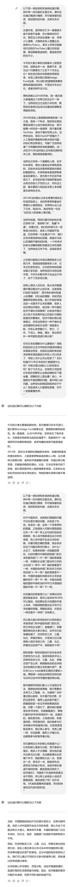
囤货
有人跟我说普鲁士蓝要一粒药要 210 万，问我咋办。
首先，市场经济下，如果真一粒 210 万，药厂肯定觉都不睡了，24 小时连轴转生产。造毒品也没这个赚钱啊。
其次，如果需要从那些野鸡自媒体来获取知识，那就算买了普鲁士蓝也没啥用。普鲁士蓝具体是什么化学成分？怎么发挥作用？什么情况下需要用？怎么用？用多少？用多长时间？如果不知道这些的话，有比没有更危险。毕竟遇到核战争的风险远小于觉得邻居家 Wi-Fi 开大了先抓一把吃的风险。
如果只为囤在家里放心，那么我还是建议买盐。盐是国家专卖，买盐好歹能支持国家建设，缓解财政压力。
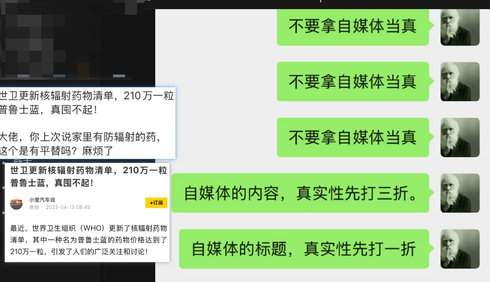
紫人社交原则
今天看到关于紫人社交原则，我简直就是紫中紫
大部分人的社交模式是加分制，即刚交往的时候警惕，根据熟悉程度逐渐加分
我是减分制。对陌生人从一开始就选择真诚，随着熟悉程度逐渐减分，减到无分可减，就是断崖式拉黑删除。
但始终保持真诚，永远保持真诚。
以最坏的方式揣度人性，但会用最真实的态度交往，直到觉得对方浪费自己的时间和精力。
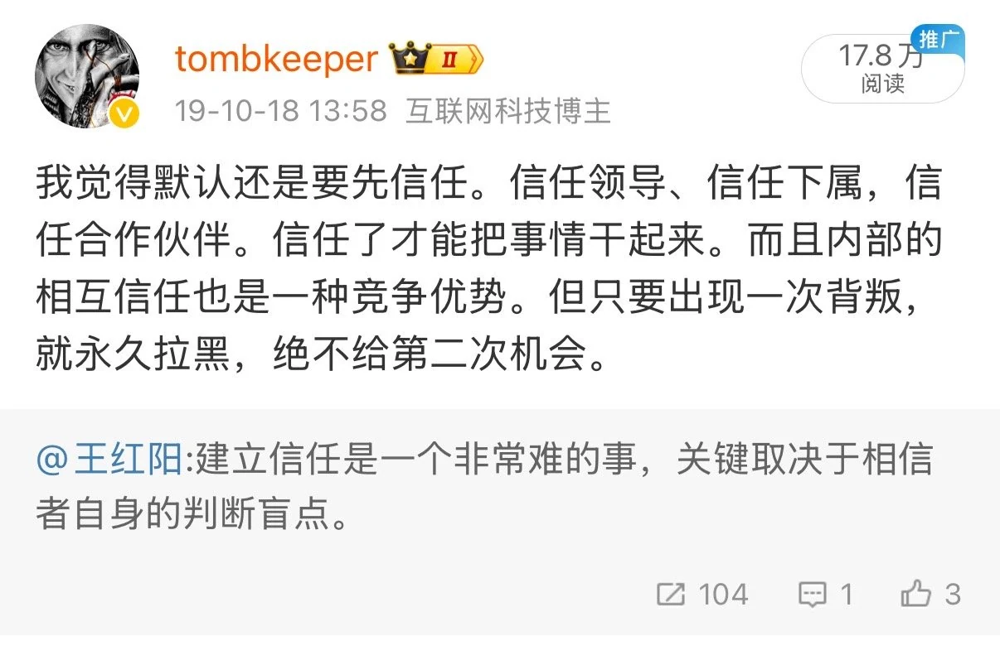
逻辑作业
今天的逻辑自洽家庭作业：
1、#比亚迪回应要求供应商降低10%报价#
2、#医保砍价现场1分1毛都要尽力争取#
你对 1 的理论是否同样适用于 2？如果不适用，原因是什么？假设你的原因是“因为 XXX 是 YYY，所以 ZZZ”，那么对于所有 YYY 是否都 ZZZ？
点茶套装
早先收到过一个节礼，是“点茶套装”。里面有瓷器有竹器，像模像样的。名字也巧妙，叫“点茶”。“点茶”是中国的，传到日本变成了“抹茶”，所以咱们还得叫“点茶套装”，不能叫“抹茶套装”。
除了那些瓷器竹器，里面还有个小纸盒。把纸盒打开，是个小塑料袋。塑料袋正面印着“抹茶粉”三个大字，反面有一行小字：“专注家庭烘焙”。
这就是为什么我们实验室每年采购礼品我都必须自己看一遍。
（因为我爸买了C品牌的洗车机，我也想买个锂电洗车机，PDD推荐了A品牌，我最后买了性价比更高的B品牌，到货一看B送了A品牌的洗车粉。回我爸那看他买的那台C品牌，也送了A品牌的洗车粉。那洗车粉在购物平台还买不到。）
风和日丽的时候大家一起往前跑
风和日丽的时候大家一起往前跑，一边跑一边笑。下起暴雨，五米外什么都看不清，每只鞋都粘了二斤泥，那我就要扯住前面人的裤衩子，我不好你也别想好的了。
逻辑小体操
“存天理，灭人欲”，对这个表述的一种常见庸俗理解是：要弘扬高级的精神追求，压制低级的肉体欲望。
如果按照这种庸俗理解，“存天理，灭人欲”其实是禁不住细想的——我们都知道人欲是什么，而且人欲从伏羲女娲开始就是这样了。但天理是什么？谁代表天理？谁说的天理算天理？商朝的天理是宋朝的天理吗？你看，禁不住细想。
所以，能在宋明两代流行的理学怎么可能是这种禁不住细想的庸俗理论呢？不仅不是这种庸俗理论，而且理学还是反对禁欲主义的：“节贵适中，过则苦矣。节至于苦，岂能常也？”明朝的王艮说的更清楚：要禁欲的想法恰恰是一种人欲。
朱熹认为日常饮食是天理，山珍海味是人欲；娶妻生子是天理，三妻四妾是人欲。也就说朱熹认为基本的人欲其实就是天理，穷奢极欲才是“人欲”。程颐也说过：饮食是天理，酒池肉林是人欲；刑罚是天理，炮烙虿盆是人欲；征战是天理，穷兵黩武是人欲。
在更高一层的维度上，程颐认为天理是不为尧存，不为桀亡的客观规律，人欲则是无视规律的狂妄。当人们无视客观规律，把自己的主观臆断、主观想象作为行事原则，就是服从人欲而违背天理。
天理，就是规律。人欲，就是狂妄。
牛市还在吗
#A股牛还在吗# 牛市确实可能还在。但牛市还在的时候肯定不能让大家都认为牛市还在，牛市不在的时候也不能让大家都认为牛市不在了。所以，如果大家都认为牛市还在，那牛市肯定不在。如果大家都认为牛市不在了，牛市才可能在。
优秀
这几年的互联网报道，经常说 “某优秀大龄员工因为大龄，惨遭辞退，也找不到下家”。我对此颇感怀疑。
因为在我的个人经历中，很少见到 “优秀大龄员工”。
如果是 35+，尤其 40+ 大龄员工，大多数暮气沉沉，知识结构老化，路径依赖严重，学习能力显著下降，倾向于待在自己的舒适区里不出来，无限次复用过去学会的老技能。
但这并不影响他们自认为是优秀员工。
我的年龄比这些大龄员工都大，但我最喜欢合作的是 26-33 岁，大概这个年龄段的员工。学习能力强，头脑活跃，态度积极。
35+ 的人更多是学习能力弱，路径依赖，情绪疲惫。
直白地说，我喜欢 26-33 岁的员工，不是因为他们便宜（又不是我发工资），或者他们能加班（高效率工作不依赖加班），单纯因为他们就是比大龄员工的工作交付更强。
“能力” 是一个很虚的词，我只看交付。30+ 的交付大概率碾压 40+。
互联网行业是一个残酷的，飞快迭代的行业。残酷到什么程度呢？三年前的经验与手感可能就有点过时了，五年前绝逼过时如废柴。
更他妈的残酷的是，哪怕你一直都很努力，你工作的环境过时了，不能给你安排高价值任务，你也会跟着过时。
这就是我个人坚持 “两年一跳” 的原因。
在这个背景下，不仅个人要有高素质高能力高成长性，还要不断切换到提供高价值任务的工作环境，才能不掉队。
否则，那些在高价值任务中锻炼了两三年的人，分分钟就超过你了。
再过几年，他们的工作环境落后了，新的潮流又会把他们淹没……
大多数人不了解的是，“持续好奇，持续学习，持续成长” 这些人格特质在 35 岁以后的比例低于 10%。就算你是这好奇的 10% 人格，还得依赖提供高价值任务的工作环境，而这样的互联网工作环境（公司&部门）往往以两到三年为周期变更。也就是能让你学到东西的工作环境，两三年后这个环境本身都暮气沉沉，你能从这里学个屁啊。
所以你再回头看我这句话：在我的个人经历中，很少见到 “优秀大龄员工”。
大多数互联网从业者年纪越大，越不敢跳槽（包括跳部门跳岗位），然后在一个本身老化的环境里，跟着一点点地沉下去。
这里的大多数人，指的是 99%。
互联网行业真的太残酷了。
犬校里，我欣赏的精英同学大部分是 33-36 岁这个区间（对标 P8 职级），此外他们也会活跃地跳槽，追逐 “提供高价值任务的工作环境”，同时承担相应的职场高风险。
一旦停在某个工作环境不动，大概率，两三年后就与环境一同老化。
====
纯银说的很对，我身边有一些比我小十岁左右的人，几乎完全没有活力了，不学习任何新东西，交付能力差，玻璃心，阴阳怪气，自以为优秀，但其实知识体系陈旧。宁可让团队里只有30岁左右的年轻人挑大梁，2-3年他们就成长起来了。40岁左右的人，什么叫优秀？什么情况下会继续被认可？我个人的观点是，需要有和年龄匹配的经验，能解决更复杂的问题，因为见的多。你可以不和年轻人拼新东西，但你的价值要和年轻同事形成一定的互补。
====
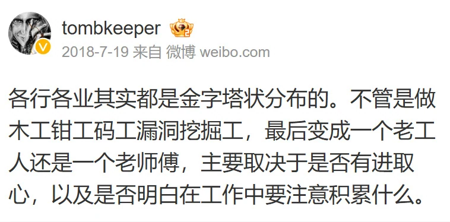
即便是情绪不稳定的人，也会受朴素道德的约束
即便是情绪不稳定的人，也会受朴素道德的约束。要解开道德约束，就需要有一些看起来比道德更宏大的东西，才能“成大事不拘小节”。没有这种“宏大”的东西，就需要彻底疯狂才能不受道德约束。有了这种东西，不是很疯的人也能做出疯狂的行为。
本来绝大多数人自己造不出这种宏大的东西。但提速降费后，粪水横流，量大管饱。于是，解开道德束缚的“理论”就出现了。于是，革命无罪，造反有理。
除了专业能力也要多在语文方面下点功夫
我在粉丝群里一直建议大家除了专业能力也要多在语文方面下点功夫。这个的第一性原理是：语文是我们和其他智能体之间的通讯协议。
白云苍猫0620:讲述一件事情，如果让我写的话，我会很容易就用文字来表达出来，但是让我用口语描述的话，脑子就像卡壳了一样。
=====
天赋的不足可以靠努力来弥补。我第一次在公司的大会上演讲，十五分钟的内容，我练了七八个小时，对着镜子讲了几十遍。每句话重音怎么落，间隔多少秒，我都反复设计。其余几个选手的天分和经验都比我强，但最后老板们给我打了最高分。
=====
请问教主，有没有推荐的能提升语文能力方面的书籍，越来越意识到语文的重要性了
=====
对大部分人来说，如果还没解决语义逻辑层面的问题，最先需要看的不是语文方面的书，而是《金字塔原理》。
互连网并不会记住所有东西
互连网并不会记住所有东西。前阵子找一部独立电影，没找到。从一些网页的残迹中了解到多年前网上有过一个 rm 格式的，二百多兆。但现在没了。这部电影过于冷门，douban 词条也消失了，找不到在意料之中。
这就结束了吗？我肯定不会这么容易认输，于是转向了另一条路：二手音像制品市场。果然，找到了。
====
之前还感叹过，有个网络之后，很多答案都不用记了，你要掌握寻找的方法。现在觉得，还要技巧。
因果
贩夫走卒，帝王将相，都在因果当中。神通不敌业力，就算是释迦牟尼也不能阻挡因果。
人当然可以选择。然而，选择了什么因，就会得到什么果。这一点，是不能选择的。
兜售幻觉的生意
昨天说的那个考 700 分复读，学校给 100 万的事情，这个赚的钱其实属于代言费，跟杨超越代言巴黎欧莱雅挣钱是一样的。
今年考了 700 分，考上清华了，这就证明了实力。杨超越也一样，当年在服装厂打工的时候，要去给巴黎欧莱雅代言肯定是没戏的。明年又考了 700 分，又考上清华了，学校多了一个能贴在门口喜报上的名字，这就是学校的脸面。
这 100 万哪儿来的也就很清楚了：是从别的学生家长那儿收来的复读费。大家一看：在这学校复读能考 700 分啊！用巴黎欧莱雅能这么好看啊！就掏钱了。
虽然绝大部分人到哪儿复读都考不了 700 分，糊一身巴黎欧莱雅也好看不了，但兜售幻觉的生意永远都能做下去。
学渣家庭掏钱给学霸，不好看的人掏钱给好看的人，可以说这是马太效应，也可以说是社达，但说什么都不要紧，人类社会一直如此并将永远如此。
凡是在地上建立天国，最终都是通往人间地狱
很多事情都是对的，都是好的。
比如，“保护青少年”，是不是对的？是不是好的？但这些年大家也逐渐看到了，“保护青少年”，也保护了小赤佬。但保护了小赤佬，好像就没有“保护青少年”。那到底有没有“保护青少年”？所以，“保护青少年”虽然是对的，是好的，但到底怎么“保护”才是对的，才是好的？这其实没那么简单。
比如说，你的家人需要做手术，那么你希望由一位主任医师来主刀，还是一个刚结束轮转的住院医师主刀？你希望手术有实习医生参与吗？
宏观上来看，如果住院医师没有主刀的机会，就无法成长为主任医师；如果实习医生不能参与手术，那他们也永远无法变成住院医师。让医生能得到锻炼，得到成长，是不是对的，是不是好的？
但是，具体到你，具体到每一个人，可能都希望由主任医师主刀，最好是全国排名前几的专家。手术室里最好不要有实习医生，恨不得一手术室全是正高职称，递器械的护士帽子上都有三条杠，对吧？你的这个希望，是不是也是对的，是不是也是好的？
那这个矛盾怎么办？
没有神奇的方法。认真地思考这个事情，你就会发现，没有神奇的方法。所 有 类 似 这 个 事 情 的 问 题，全 都 没 有 神 奇 的 方 法。
我姥爷七十年代患肺癌，组织把他送到上海治疗，用的医疗资源都是当时最好的。在任何时候，“最好的”自然也是稀缺的。在那个年代，普通人有办法靠自己努力得到最好的吗？
不可能所有人都坐头等舱。现在，院士坐头等舱可以报销，部级坐头等舱可以报销，普通人也可以自己掏钱坐头等舱。这已经是最好的方法了。但让所有人都坐头等舱的神奇方法是没有的，让所有手术都由主任医师来做的神奇方法是没有的。
如果希望有一个充满神奇方法的神奇世界，就会得到地狱。
搜索用英文
在使用 ChatGPT 的 AI 搜索功能时，最好让 GPT 用英文搜索而不是中文搜索，否则生成结果会收到影响。但是可以让 AI 用中文生成最终结果，或者让它再翻译一下。
因为英文搜索信息源是谷歌，中文搜索的信息源是百度。。
我一直是这么干的。尤其在处理医学类问题的时候，必须这么干
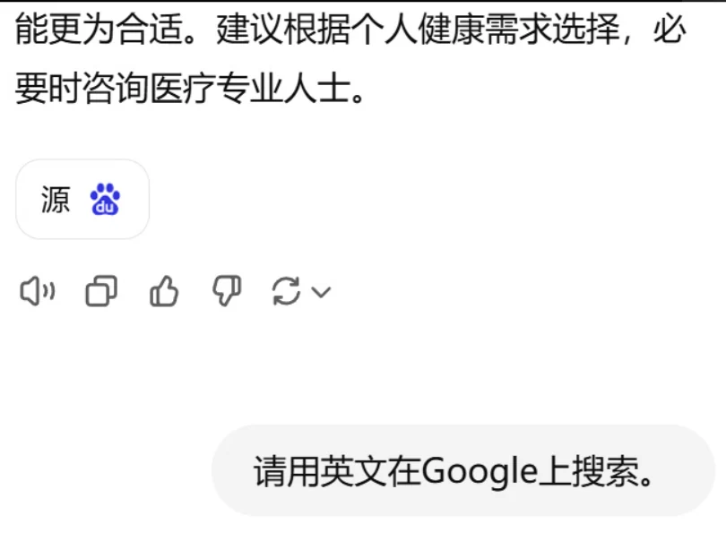
做出海网站
美国等地区会公开有性犯罪前科的人的资料，包括照片。把这些信息抓回来，理论上可以做个快速查询系统。
学什么技术不会过时？
常有人跟我发牢骚，说搞技术太累，总要学新东西。还总问，安全技术未来的方向是什么，学什么技术不会过时，五年十年之后还能混饭？
每到这时我都很尴尬，不知道应该说什么。
有些朋友知道，我读了五年医科大学。很多人认为医生是一个稳定的职业，医学是保值的知识，学完了就可以躺在上面吃一辈子。其实恰恰相反。稍大一点的医院都有自己的图书馆。年轻医生就不用说了，很多六十多岁的老医生上门诊，抽屉里还放着一本专业书，有病人的时候就给人看病，没病人就拉开抽屉看书。以前儿科的老主任对我说过：干医生这一行，半个月不去图书馆读文献，就落后了。毛主席说“三天不学习，赶不上刘少奇。”医生这一行就是这样。
我们家乡有句俗话，叫“看别人吃豆腐觉得牙齿快”。很多技术人员都觉得销售这个活儿好干，工作就是吃喝玩乐混关系，挣钱又多，还不费脑子。我只能说“那你去试试看吧”。先甭说销售绝对不是不费脑子的活儿，也绝对不是光靠“吃喝玩乐混关系”就行的。就算是，这“吃喝玩乐混关系”七个字岂是简单的？谁刚从台上下来满怀落寞但还有一些重要关系？谁虽然只是个普通教授但是诸多弟子都身居要职？谁手里有指标但自己不能完全做主？谁行政级别高但没有实权？新上来一把手是爱人民币爱高尔夫爱燕鲍翅还是爱制服捆绑？京城里何处灯最红何处酒最绿？——这些信息都是动态的，变化的，而且靠订阅邮件列表和看BBS是得不到的。不收集，不学习，咋整？
公交车站牌上贴的那些招聘职位，没有学历要求，只要“形象好，气质佳，思想开放”就可以“日薪1500以上”，这个钱挣起来算是容易又轻松了吧？其实即便从事这种地球上最古老的职业，学和不学那也是大大不同。苏小小、李师师的时代，要上头牌都得会琴棋书画，填词唱曲。到了十里洋场上海滩，根据才情高低也要分出“书寓”、“长三”、“幺二”来，啥都不会就只能混“野鸡堂子”。现在没那么多讲究了，不过“一剑穿心毒龙钻，冰火红绳空中飞”这些基本业务总还得学，要不然也还是“野鸡堂子”、Street-Walker的命。
那究竟有没有什么是学了不会过时的呢？学会学习的方法，学会从学习中获得快乐，这是永不过时的。如果享受不了汲取知识的快乐，那就不适合做任何需要脑力的工作。
躺平了几年，但现在明白过来了，想努力破局
最近有一些粉丝向我寻求建议，主要是个人职业发展上的。
和这个世界上的大多数事情一样，这些求助也符合二八定律，只有大约 20% 的人能把自己遇到的问题说清楚，并提出合理的问题。所以我也只可能给这 20% 的人一些建议。其余的问题我确实不知道应该怎么回答。
大家遇到的问题还是比较有共性的。通常都是因为某些原因，有些是因为自己的懈怠，有些是因为受身边的人影响，总之要么是选错了路，要么是躺平了几年，但现在明白过来了，想努力破局。比如有一位粉丝就很清醒地表示自己前几年都是战术性勤奋，战略性懒惰，让自己忙忙碌碌，自我感觉好像很努力，但不愿意做难而正确地事。
《三字经》里说“苏老泉，二十七，始发愤”。任正非创业的时候已经 43 岁了。努力不怕晚，怕的是不努力。有些相关内容我之前在微博上发过：
什么是“做事”？ #25、如何做事？
我的能力可以用在哪里？ #155、不知道自己的能力可以用在哪里
除了学知识还应该学什么？ #199、社会如何运作
怎么提升思维和表达能力？#115、提升自己的思维和表达能力
如何成为难以被替代的“老师傅”？#1、 35 岁危机的问题
以下是我给其中一个粉丝的具体建议。履历不好看又想找个满意工作的同学，可以试试这五步：
A、你具体想做什么方向？
B、你说的“大厂”对这个具体方向的招聘要求是什么？
C、除了“大厂”的招聘要求，这个方向上公认的优秀人才还有什么属性？
D、对于 B 和 C，其中哪些可以在三到六个月的时间内通过努力证明自己具有这些属性？
E、基于 D，现在就开始干。
其中最重要的是 E，现在就开始干。不是明天，不是今天晚上，是现在，立即，马上。
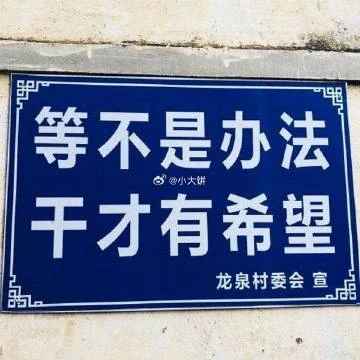
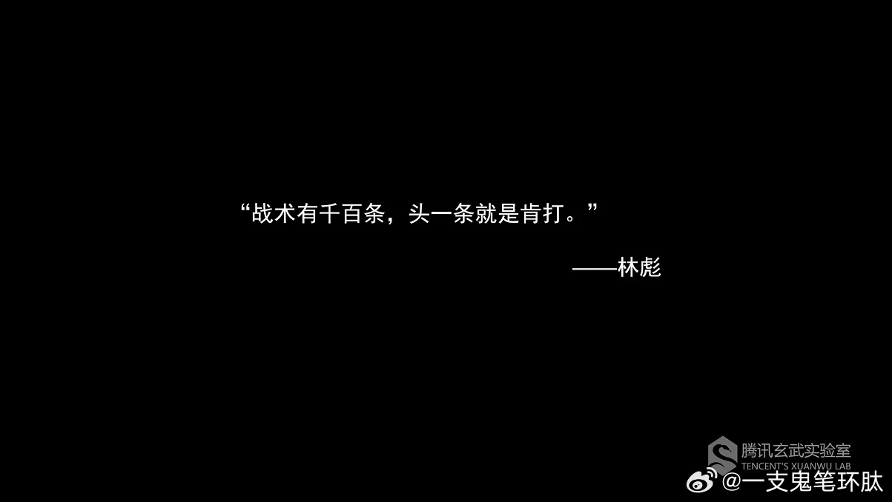
粉丝：
面对不确定性时的结构化思考方法：定义目标 A —— 搜索路径 B C D ——立即开始持续执行 E。B 是浅度路径搜索（基于文本），C 是深度路径搜索（基于洞察），D 是决策路径搜索（基于可执行性和 B、C）。这种思考方法，用来写程序也蛮好用 :D
与其抗拒变化，不如思考如何利用变化
我们认为人头上长角是不正常的。但如果明天所有人头上都长出了角，顶多二十年，头上没有角就是不正常的。
作为群体，我们已经进入了提速降费后社会。作为个体，很多人罹患了习得性 ADHD，这也是提速降费后社会的一大特点。
合理的想法是怎么用这些变化来挣钱。比如，开一家给大家新长出的角抛光打蜡雕花的美角店。
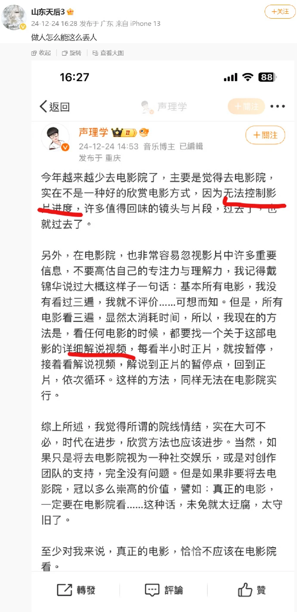
像牲口一样活下去
活下去，像牲口一样活下去。要不然就会像血腥男爵一样成为别人圣诞树上晃来晃去的节日点缀……
慈父是谁
不少粉丝把小明的慈父理解为政府。其实不是的。慈父不是国家，不是政府，不是民族，不是文化。慈父是小明对自己模糊信仰的模糊人格化。
很多孩子小时候都有一个宝贝，可能是一个玩偶，也可能是一条小被子。这些孩子睡觉时要抱着这个宝贝，甚至走到哪里都要带着这个宝贝。哪怕宝贝已经破破烂烂，但他们只要这个，不要别的，买新的也不要。
对有些人来说，这种情况会持续到少年时期。少数始终没从童年走出来的人则终生都需要这样一个宝贝。而对于更多的大型儿童来说，虽然不再需要实体宝贝了，但精神上的宝贝还是不可或缺。他们会幻想有一个永远无条件保护自己照顾自己陪伴自己的东西。他们对这个东西具体是什么并没有准确的概念。他们也不愿去思考这个问题。打开盒子永远是危险的，里面可能会跳出怪物，或者更糟——盒子是空的。
所以，他们会模模糊糊地把这个模模糊糊的东西映射到另外一些东西上，并将其人格化。于是慈父就诞生了。
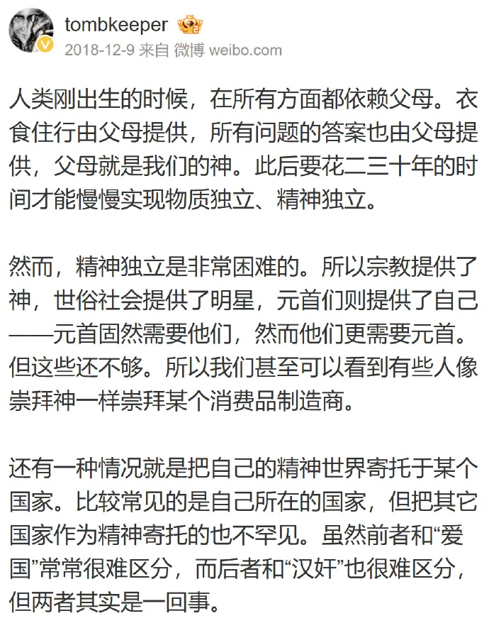
昨天说的慈父，类似下面这种也是，他们把慈父映射到了别的国家，所以他们觉得中国军力提升了，会导致慈父不能来救他。
“慈父”这名字可不是随便起的。你们想，如果有一个人格化的对象，有能力碾压中国，但别无所求，唯一心愿就是呵护他快乐成长，为此投入的千亿万亿军费都不求回报，这种除了叫“慈父”还能叫什么呢？
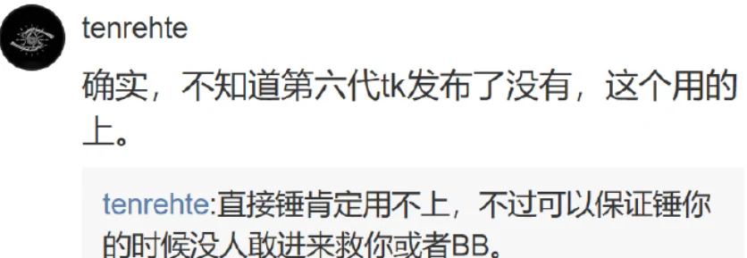
Q：有办法可以判断自己是否有“慈父”吗？
A：如果你是一个健全的成年人，那么你是否认同你已得和应得的一切都源于自身，例如自己的劳动、自己的尝试、自己的思考，或用自身所有的东西和他人或组织进行的交换，而非任何恩赐？
Q：运气好有大部分因素
A：但我总不能感谢那个有时候被称作上帝的随机数发生器吧？
解决慈父问题很简单。你可以先假设自己信仰了某种严格的一神教。在这个一神教里，严格地只允许崇拜一个神。除了神之外，不允许有任何偶像。你的这个神不仅仅存在于经书，而且祂每星期都会随机现身一次，随机赏赐给每个信徒一些东西，并警告每个信徒：宇宙里只有一个神，只允许把这一个神作为崇拜和祈祷的对象。
然后，神死了。神明确告诉你祂要死了，以后也不会有别的神。你亲眼看着神分散为亿万个光点然后消失，并且此后再也没见到神的现身。
你唯一的神消失了。同时，你也知道，没有别的神。没有神，只剩下宇宙和你。
年长的人说的话，要不要听
Linus Torvalds 并不是第一个叫 Linus 的名人。
Linus Pauling，在 1954 获得了诺贝尔化学奖，又在 1963 获得诺贝尔和平奖。历史上，独立获得两次诺贝尔奖的，仅此一人。获得过两个不同类型诺贝尔奖的，除他之外也只有一个居里夫人。
当代年轻人一般不太喜欢来自老年人的忠告。而 Linus Pauling 也曾经给年轻人忠告，让年轻人不要相信忠告：
“作为老一辈人，我想给你们一点忠告，应该怎样对待长辈。当一个年长的大人物对你说话时，认真恭敬地听，但别相信他。除了你自己的智慧，不要信任其它任何东西。一个老人，不管是白头发或者没头发，哪怕他得过诺贝尔奖，也可能是错的。你们必须永远保持怀疑，永远独立思考。”
至于 Linus Pauling 这段关于不要相信忠告的忠告到底是不是忠告，以及该不该相信这个不要相信忠告的忠告，我并不打算给你们忠告。
逻辑小课题
“向下的自由不是自由”，假设这个表述是正确的，那么自由就只剩下水平的自由了。因为自由只有两类：水平的自由和向下的自由。
你能抓举 100 公斤。你可以选择抓举 100 公斤，或者 90 公斤，或者 4 公斤。但你无法选择抓举 120 公斤，因为做不到。当然，你可以努力训练。等你练到能抓举 120 公斤的时候，抓举 120 公斤对你来说就是水平的自由。等你练到能抓举 130 公斤的时候，抓举 120 公斤对你来说就是向下的自由。
这种不明觉厉的句子通常是用来剥夺别人自由的咒语。不准别人做某件事又想不出啥理由，就念咒“向下的自由不是自由，向下的自由不是自由”
流量密码
傲慢、贪婪、淫欲、嫉妒、暴食、愤怒、懒惰，七宗罪，就是七个流量密码。自媒体的十万加们，基本都是围绕这些流量密码来的。
比如最近有两篇很火的稿子。一个说谷爱凌的冠军是有钱人的胜利，跟老百姓没关系。一个说如果认为医生和律师就是好职业，那么眼界就太浅了，活该一辈子中产阶级。
很多人看了之后，会产生一种开天眼的幻觉，认为自己双脚离地了，病毒关闭了，聪明的智商又占领高地了。其实冷静下来再把这些读一遍，就会发现里面除了愤怒和贪婪什么都没有。
最近围绕 AI 的垃圾文章也多了起来。你们要是有疑虑但又不确定，那就直接翻到最下面，只要看到“如果这篇文章对你有帮助，欢迎关注我的巴拉巴拉账号，我会持续分享巴拉巴拉、巴拉巴拉、巴拉巴拉巴拉巴拉”，那就直接关掉页面，准没错。
盲目崇拜
比如说，有一个公众人物，假设就叫“往返之中”吧。无论你关注了他多久，无论你觉得自己多了解他，他内心最深处的欲望你是不知道的，他对自己的欲望是克制还是放纵你是不知道的。别说这些，其实连他睡觉前洗不洗脚你都不知道。
崇拜一个人是没问题的。比如一个人小提琴拉的好，那么你崇拜他的小提琴技艺，这很合理。但如果你把崇拜的外延从小提琴技艺扩大到整个人，认为这个人的一切都像他的小提琴技艺一样完美，那就要面对信仰崩塌的风险，或者更糟，要面对信仰崩塌后认知失调的风险。考虑到我们和宇宙中另外 10 的 55 次方公斤物质的主要区别就是我们有意识，没什么比意识扭曲更糟糕的事情了。
各位女同志可以先回顾一下自己男同学里已知渣男的比例，假设这个比例是z%。因为还有你不知道的，所以实际比例应该是(Z+X)%。那么你喜欢的任何男明星是渣男的概率不会低于(z+x)%。当然，从歌单里把他的歌都删掉也没必要。彼以色事君，你就用其色嘛。
形式主义的监管
有一个浏览器插件，就叫 A 吧。这个比较老，开发者已经不维护了。Chrome 商店好像是在什么时候出了个规定，要开发者承诺不收集用户隐私。但因为开发者都不知道去哪儿了，所以也就没这个承诺，于是 Chrome 商店就把这个插件下掉了。
类似功能的插件还有一个，这里就叫 B。但有人发现 B 会把用户访问的 URL 甚至 Cookie 都发给该插件的开发者。于是 Chrome 商店又把 B 插件下掉了。然后就有人基于 B 开发了一个 C，号称 C 绝不会收集用户隐私。于是社区里都推荐这个 C。C 还进了 Chrome 商店的精选。
但只要装了 C，访问电商网站的时候就会先跳转到营销平台，然后再转回你要访问的网站。简单说就是会导致电商网站给 C 的开发者支付佣金。
所以 C 可能确实没“收集用户隐私”，因为这种挣钱方式侵害的是电商网站的利益（用户本来就要去访问电商网站，并非由于 C 的推广才去的），不需要收集用户隐私。
主动获取的信息来进行判断
关注我比较久的人可能还记得我在 2022 年 10 月画的那两条辅助线，并据此预测年底必将有一轮新冠疫情冲击，提醒大家做好应对准备。
我做很多事都会根据自己主动获取的信息来进行判断。比如，我旅行前会获取目的地的天气预报、海拔、野生动物、流行病等各种信息决定携带的物品和制定预案。我现在决定什么时候打流感疫苗也会参考流感监测数据。因为之前有一次打得太早，结果来年三月感染了。
尽管我对获取和处理信息已经非常熟练，但多少总还是要花一点时间。对一些没那么重要的事情我可能也做不到及时获取信息，有时候甚至就忘记获取信息了。
但这些问题应该可以借助大模型解决。我设想的辅助决策系统由一个仪表盘和一个对话界面组成。各种数据处理逻辑和决策逻辑都可以用提示词预定义。仪表盘提供实时更新的各种数据。仪表盘具体包含哪些数据也可以通过对话来定义。
哪些开发框架比较适合做类似的东西？ 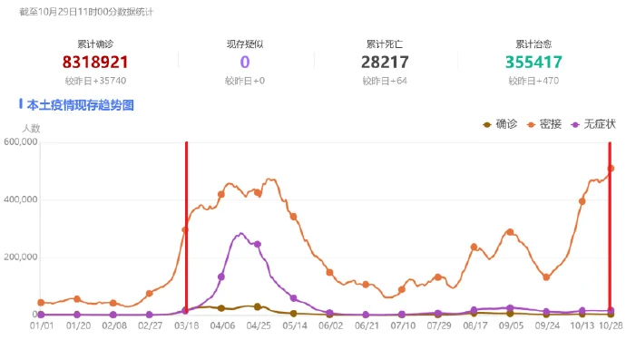
选择路线，踏上征程，承担后果
人生其实只有三件事：选择路线，踏上征程，承担后果。很多人因为害怕承担后果而不愿做出选择，又或者因为懒惰、迟疑而踯躅不前。
你可以不选择，也可以不行动，但唯独承担后果是躲不掉的。不选择路线，不踏上征程，就必然要承担一直在原地的后果。这个后果是躲不掉的。
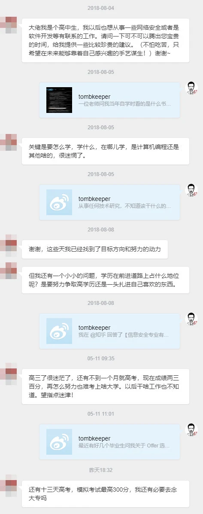
书非借不能读也
看到有人贴了张一鸣在 2010 年发的一条微博，说自己还在用 iPhone 1，并且嫌 iPhone 4 太贵。
这让我想起 2014 年这些买不起 Blackhat 门票的同学，现在公司估值大概也几十亿了。 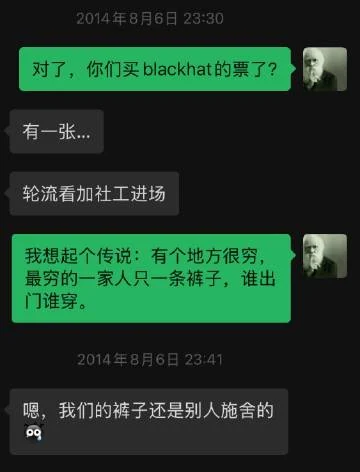
努力是基本配置，不矫情其实也是
“只要是努力活着想要自己过得更好的人，没有人不累，没有人没付出汗水。”
“不矫情”三个字对我们父辈那代人来说是基本配置，现在则成了一种珍贵的品质，就像电视机支持 HDMI 2.1 一样。
tk 粉丝有关努力的感想
《努力》
回忆一番，挺早我就不拿“有多努力”出来说事了。
从六七年前进牙膏厂开始，我看身边的人不仅都很努力，底子还很好，其中不乏高效能者。
这时候我觉得，不努力肯定不行，努力了都不一定够得上人家，所以还得更高效。
二十六岁生日过后我做人生四分之一复盘：那会发现，能被我视作竞争、学习对象的同事朋友，都是既努力、又高效的选手。那年我收入水平已经不低还拿了百万期权，仍能被我看作学习对象的这帮人都是同龄人中佼佼者。
高水平的赛场上，没有人不努力的。
公司愿意为个人支付更高的薪资，是肯定了对方身上稀缺的高价值属性。
间接肯定了他的努力，但对所有人而言，努力不一定有回报。
读书是这样，但还是应该读，无论是拓宽知识面还是提升认知等等，各种层面的意义。
学某一技术也不一定有用，但身处这个行业该学还是得学。
有欲望还不努力，大抵可以联系上TK所说：净想好事。
============================
“做不做？”这个问题本就不用纠结。想要生存或是想要发展，只要是自己所想的，那努力便是本分。
路上所要思考的关键问题无非就是“怎么做？”和“做什么？”。
做了。做完。做好。只有我能做。这是四个层级。
私下听过我分享观点和经历的人，都知道我：
读书、学习、技术增长、投资、赚钱、学术、家庭煮男、高价值社交。没有一个落下的。
其中很多事都不一定有回报。但我分析说后来都成了我人生中不同阶段有影响的事，或大或小，虽然并不能够完全量化。
至少过去十年我的“主线剧情”一直保持高速增长。所以我才能给身边的投资人老哥信心，这信心，能值挺大额的投资。
===========================
没多久我说一个年轻人不踏实，后面他叽叽咕咕挺多。所以才写了这条。
因为小年轻几年了没拿到什么结果，还总把提升认知挂在嘴边，这不正常。
我身边一直不缺少年轻从业者，即便是当前大环境下，个人职业生涯的早期，稍微比大多数人更努力或者更有效努力点，就会有显性的成果，难的是在后面挺多人难以跨越的瓶颈期以及人人自危的35岁危机。我身边也有几名刚走进职场没多久的99年或者00后，有一个今年刚跳槽拿了40的总包。
他们因为努力，耽误了书籍阅读提升认知吗？没有，我知道的有人看书可能比我还多。TK说：也许你抬手摁电梯都喘，但有些人就是跑一万米也轻松。
TK还说：“不用踏踏实实努力只要选对捷径就能赢”是一种错觉。
而如果给他人带来“不踏实”的感觉，当然可以说这里的“他人”老了，屠龙少年成了恶龙blahblah……但本着对自己认真负责，还是多想想：踏实、靠谱这两个可贵的品质，无论是内在还是外在，至少会给人以希望。
努力是基本配置，不矫情其实也是。
育儿心得
孩子出生前我规划了一下，认为不需要月嫂。媳妇说不行，我的同事们也说不行。但事实证明确实不需要。我一个人照顾大人小孩，还有两只狗，再加上所有的家务，也没觉得多忙。期间追的几部美剧一集没拉，读了几本书，还抽空写了几篇文章。重点一是时间规划，二是不做无用功。
====
网友评论：
“我一个人照顾大人小孩，还有两只狗” 对此我不太相信，我也是孩子的爹
====
tk 回复：
也许你抬手摁电梯都喘，但有些人就是跑一万米也轻松”。
韭菜三大共性
“贪婪，焦虑，缺乏耐心，是韭菜三大共性素质。迎合贪婪，贩卖焦虑，速成承诺，是割韭菜的三大标准姿势。”
无论浮木还是落叶，都必然随流水而行。
春节后陆续见了几个新老朋友。有一位是微博粉丝。但大概因为很少转评互动，所以之前没太注意到。后来经一位老朋友介绍才认识。
我略感意外的是，虽然没什么转评互动，但他对我写的东西理解很深，能从一些隐晦曲折的句子里看出背后要表达的逻辑。他称之为“超越了历史周期律的规律”。大概因为在做一家投资相关的公司，所以他对这些东西比较感兴趣。于是我详细地解释了一下为什么我能准确地做出那些预测，以及为什么我不像很多人那样悲观。
他见了我也略感意外，因为他觉得写下那些东西的应该是个一脸沧桑的老头。
很多人以为我有“内部消息”。其实，我做出那些预言的时候，恐怕“内部” itself 都不知道“内部消息”。无论浮木还是落叶，都必然随流水而行。
赚钱包治百病
在美国有长期生活经历的中国人里，确实有一些极端的，而且两头的都有。
有的逢中必反，觉得中国的一切进步都是假的；如果是真的，那就是对世界的威胁。有恨不得回到六七十年代的——甚至回到六七十年代也不能让他们满意。比如有一个，对集体主义的追求和热爱已经发展到认为一切养宠物的行为都是自私自利的极端个人主义。不知道他十几年前在美国经历了什么，我只能表示很遗憾，并且不在乎。
不过据我观察，年收入 70 万美金以上的人里，极端的就比较罕见了，到 100 万以上，都是不论天涯与海角，神州万里同怀抱，共祝愿，祖国好。
辞职之后希望前公司破产，但如果辞职后赚得更多，那就无所谓了
分手之后希望前女友注孤生，分手之后找到更好的就无所谓了
我是如此幸运，你是这么特殊
在所有常见的幻觉中，“我是如此幸运，你是这么特殊”的害处最大。
怎么查看亚马逊的书籍销售情况
今天这节课我们来讲一讲怎么查看亚马逊的书籍销售情况。
比如我们想知道《乌合之众》英文版的销售排名，首先在亚马逊上搜索《The Crowd: A Study of the Popular Mind》，找到这本书。由于这本书被出版过很多次，我们可以先选一本比较近期的，比如 2024 年的这本（www.amazon.com/Crowd-Annotated-Study-Popular-Mind/dp/B0CRFZ5Q4C/），打开页面，往下翻，找到“Product details”，就可以看到：
Best Sellers Rank: 7,396 in Books (See Top 100 in Books)
3 in Social Philosophy
13 in Political Philosophy (Books)
也就是说，这本书在亚马逊所有书籍中的总销售排名是第 7396，在社会哲学分类中排在第 3 名，在政治哲学分类中排在第 13 名。再打开 2019 年的这本（www.amazon.com/Crowd-Study-popular-mind/dp/1795288973/），可以看到，总销售排名是 6355，在职业与组织流行心理学分类里是第 5 名，在医学应用心理学分类里是第 14 名，在流行应用心理学分类里是第 15 名。
好，今天的课就先上到这里，大家不要忘了课后阅读：
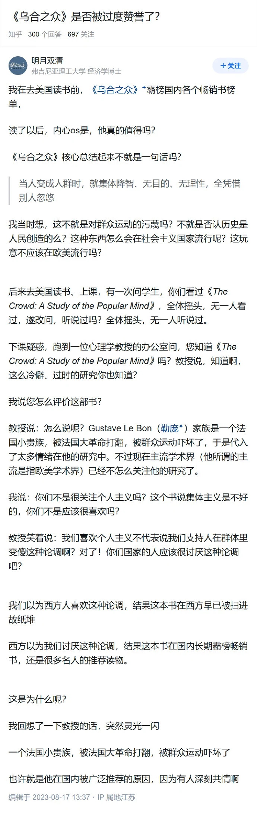
菩萨保佑
最近这些年，菩萨保佑类问题也多了起来。
什么叫菩萨保佑类问题呢？你去庙里向菩萨提的需求，比如“菩萨保佑我升官发财”，“菩萨保佑我找个北舞的女朋友”，这就是菩萨保佑类问题。我见过的菩萨保佑类问题包括：“普通人怎么当上总监”，“如何快速实现阶层跃升”“怎么快速提升某某能力”“怎么提升社会地位拥有一定资源”……
每次有人问“普通人如何 XXXX”，我的回答几乎都是一样的：你得先变得不普通。
我以前说过“XX 悖论”：对于任意 XX，如果有一种普适的方法可以让普通人都能获得 XX，那么 XX 就不会是普通人所追求的东西。 这就叫 XX 悖论。
如果只需要简单地动动手指在键盘上敲出一个问题，就能获得一个神奇的答案，这个答案就可以让你当上 CEO 赢娶白富美，那也就意味着当上 CEO 赢取白富美是一件很简单的人人都可以做到的事情，那么人人都可以达成这一目标，比如今天我们都可以达成不会饿死这一目标，然而如果人人都能达成这一目标，这个目标也就不会是你所追求的，正如人类历史上大多数时期都有无数人祈求自己不被饿死，但你今天根本不会认为能实现这一点有多么幸福——除非，有一个非常特殊的诀窍，就像一串 4096 位的密码一样，我把诀窍告诉你，你就掌握了，而世界上其他人都不知道，所以别人都要凭借天赋、努力、幸运才能达成的目标，而你念一句从我这里学来的“芝麻开门”就可以了。
这种事情，我没办法，你得找菩萨。
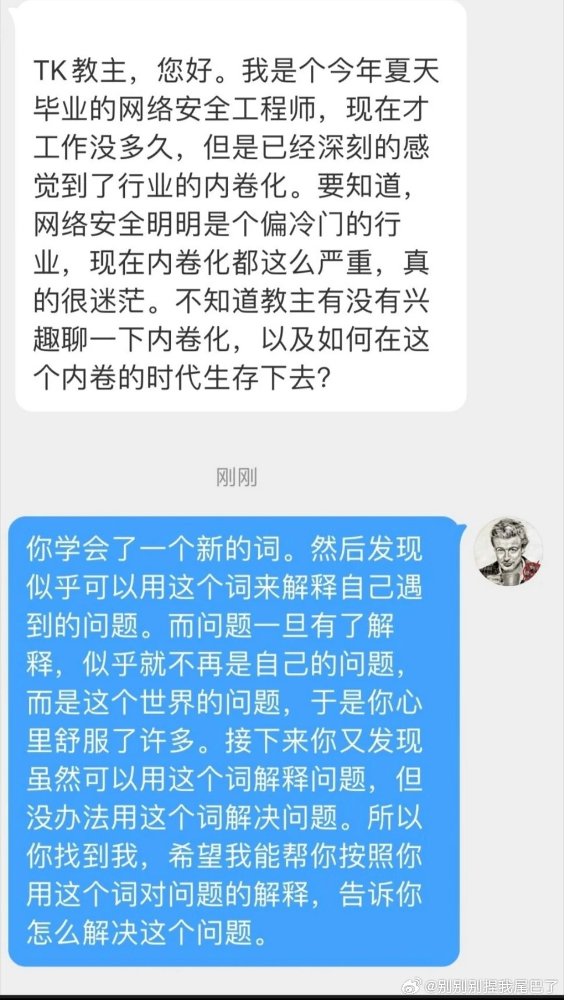
大模型的弊端
终于设计出一个大模型干不了的任务，怎么给提示词都干不了。而且这个任务既不复杂也不难，用到的相关知识属于任何大模型训练都一定会纳入的内容。
我分析了一下，原因可能是：
1、网上有很多容易和这个任务混淆的内容。所以无论怎么详细设定目标，大模型都会误解提示词的意图。
2、涉及相关技术的文档都说不推荐这样做。所以即便直接给出解决问题的方法，让大模型去实现，大模型还是会用规规矩矩的标准方法来实现。
也就是说，大模型能创造新内容，但可能没办法突破藩篱创造新范式。训练数据给大模型知识的同时也给了大模型限制。
大模型就像是有一亿只耳朵的学生，可以同时听一亿个老师讲课，学到一亿个老师的本领。这当然是很惊人的，但这一亿个老师也会成为大模型进一步发展的障碍。因为其中哪怕有十个爱因斯坦，教学成果也会被稀释在一亿个老师的海洋里。光靠打标提高权重的作用可能也有限。
就像郭靖跟江南七怪学，把七个人的本事都学了，也就那样，但遇到马钰稍微一点拨就不同了，跟洪七公学了之后更是不得了。但如果九个人一起教，最终成果可能也很一般。
也许 AI 发展的再下一步就不是这种喂人类数据的模式了。
知识获取要靠自己，别被AI和算法"喂到嘴"
既然已经有人讨论 ChatGPT 会不会取代搜索引擎了。我必须要说：让 ChatGPT 这种东西取代搜索引擎是危险的。
不仅不应用 ChatGPT 取代搜索引擎，也不应用最近几年你们常用的短视频平台、购物社交平台来取代搜索引擎。
知识的供给绝对不能被垄断。
搜索引擎固然可以控制搜索结果排序，但这毕竟是一种弱干预。同时，世界上也存在多个不同的搜索引擎。而一旦我们习惯了某个东西把问题的唯一答案喂到嘴边，这就是给自己请了一个赛博 Big Brother 回来。
人要讲理，得有良好的思考习惯。
人要讲理，得有良好的思考习惯。
比如想一想这个问题：一个人，加入传销组织被洗脑后，是不是失去自我死亡了一小部分？
然后需要反过来想一想：如果上述观点成立，那么一个自幼在传销组织长大的人，脱离传销组织后，是不是失去自我死亡了一小部分？
再跳出正反想一想：如果站在第三方视角，这两个观点就不可能只有一个是对的，要么全对，要么全错。
这时你会发现：而只有基于某个立场，才能得出一对一错的结论。
然后你需要确认：那么现在的讨论是基于某个立场，还是第三方视角？
更进一步还需要想想：立场是什么，第三方视角是否也是一个立场？
悲哀的是，只有利己主义是最容易逻辑自洽的。搞别的主义都很费脑子，比较吃亏。搞之前得想好，搞得了搞不了。
人的一生，前一半被交配欲望控制，后一半被死亡恐惧支配。
看到有人从经济角度去分析川普的内在逻辑，结果分析的一头雾水。
川普今年 79 了，四年后就是 83。历史上，年老时陷入难以理解的疯狂状态的君主并不罕见。如果没怎么了解过历史，那就想想你们那些整天往家族群里转各种消息的长辈。
人的一生，前一半被交配欲望控制，后一半被死亡恐惧支配。放不下的人，竭尽全力想证明些什么，留下些什么，抓住些什么。不幸被他们抓住的东西，就会一起陷入深渊。
做个思想实验
咱们做个思想实验：如果泽连斯基提出要让乌克兰成为美国的第 51 个州，川普应该怎么接招……
只想一步，那就不能叫思想实验了啊。川普是可以拒绝，但然后呢？他票仓里的那些人，对于川普拒绝让欧洲的子宫变成美国的子宫会是什么反应？川普又该用什么逻辑来让这些人满意？试试这样一路推演下去。
苏联笑话
苏联笑话是人类的笑话。
任何地方的人类，只要让现实服从于意识，让客观服从于主观，让逻辑服从于情感，苏联就来了，苏联笑话就来了。
逻辑
1、如何评估一则网络内容可信度？
2、如何寻找衣食住行生老病死相关常用知识的可信来源？
3、如何判断一个博主的某篇内容是自主创作还是接的商单？
4、如何识别卖家的评价是不是刷的？
5、如何判断一件低价商品是假货的可能性？
……
大学应该有一门选修课，专门讲这些网络丛林生存知识。
一个人可以既是爱因斯坦，又是渣男，这并不矛盾
我之前讲的这个逻辑，对公司如此，对人也一样。
一个人文章写得好，那你就看他的文章。一个人电影演的好，那你就看他的电影。文章写得好，能说明这个人挖掘机开的好吗？不能，对吧。那么文章写得好，怎么就能推理出这个人适合做人生伴侣呢？也不能。
爱因斯坦在他的专业方向上是第一人了，那发现相对论能说明爱因斯坦是个好丈夫好父亲吗？爱因斯坦和第一任妻子米列娃在结婚前就生了一个女儿。女儿是米列娃自己在娘家生的，爱因斯坦根本没管。后来这个女儿被送人了，爱因斯坦可能一辈子都没见过她。和米列娃婚后生的两个孩子爱因斯坦也基本不管。米列娃怀孕期间爱因斯坦还给一个中学时候的女同学写情书。后来爱因斯坦又和自己的表姐搞上了，没和米列娃离婚就先跟表姐同居——真·德国骨科。
一个人可以既是爱因斯坦，又是渣男，这并不矛盾。
有的公司产品质量好，服务到位，客户口碑好，那你就做它的客户有的公司待遇好，文化宽松，员工满意度高，那你就去那里工作。有的公司增长稳定，财报漂亮，股东回报好，那你就买它的股票。但只是看到产品质量好，于是激动地去投简历或者买股票，这种判断就是基于情感（及其导致的混乱思维)而非逻辑：
选择了新的生活方式
我减肥至今没有反弹。不管选择什么减肥方式，都要做好心理建设，确定自己是选择了新的生活方式，而不是采取一个短期的行动。
在司美格鲁肽正式进入国内市场之前，我认识的不少人就开始用这个减肥了。这种当时还只能从黑市上买到的药，甚至一度成为商务饭局上的热门话题。不过我没用这个，因为我那时候已经瘦下来了。我从三十岁开始减肥。各种办法都试过，算是经验丰富。结果是屡瘦屡胖，屡胖屡瘦。各种减肥的办法对我来说全都有效，也全都无效。因为怎么瘦下来的还会怎么胖回去。
最后我想明白了，吃药也好，运动也好，节食也好只要有“开始减肥”，就有“停止减肥”。开始减肥后瘦了，天经地义。那么停止减肥后，肉长回来是不是也天经地义？体重是基因加上生活方式的结果。胖，是因为对我的体质来说，现在的生活方式就是胖子的生活方式。所以最后我决定放弃减肥的想法，也就是说不再将减肥视作一个有开始有结束的动作，而是改变生活方式选择一种我能接受的、体重更轻的生活方式。
在缓慢地瘦了二十多斤后，我的体重下降自然地停止了。因为对我选择的新的生活方式来说，这个更轻的体重就是一个新的稳定状态。我认识的用司美格鲁肽的人，多数停药后也还是反弹了。只有几个采取了比较科学的停药方式，并且配合运动的人，才守住了昂贵的减肥成果。
大部分技术本身没多难，难的是克服对陌生的恐惧。
昨天粉丝群有人提到全栈的问题。在安全研究上，其实不需要全面的全栈，只要能局部全栈就行了。大部分技术本身没多难，难的是克服对陌生的恐惧。
国内几个破解社区加起来有十来篇关于某个 Electron 软件的文章。这些文章在二进制调试分析部分都还行，就算讲不清楚但至少能看出来是搞定了。但一到 JS 部分就很含糊，大多只是搬了早先一篇文章里的东西。而那篇文章的作者也没完全搞明白，所以提供的破解方法十分凑合，要零零碎碎改一堆地方。但实际上只要在一个关键函数的入口加一条 return 就行了。
国内搞破解的对二进制都比较拿手，而大多不熟悉 JS，这当然是很正常的。但要说 JS 比二进制难，恐怕很难说得过去。而且对这个任务来说，并不需要全面掌握 JS，只要克服陌生感，花一两个小时也就能学会必要的知识，把问题搞明白，然后和二进制的结果相结合，做出一个漂亮而优雅的工作。
但大部分人宁可用自己熟悉的锤子重复地砸一个又一个钉子，也不愿意多学几种工具。光靠锤子就能出人头地其实反而很难，得有索尔和李元霸那样的资质。对大部分人来说，“十八般武艺”可能反而是更现实的路。
为你好
“上帝”、“孝”、“反帝反修”、“我是为你好”、“保护青少年”——当我们赋予某个意象以先验的、绝对的正确性，也就创造了一件武器。罗马教庭杀布鲁诺，曹操杀孔融，用的都是此类武器。
所有的无用，都是有用的
2021 年夏天，中概股已经从最高点跌掉一半，疫情也看不到尽头。公司的年轻人本来就有很多困惑，这时问题就更多了。于是企业文化部请我做了这场《有用•无用》的分享。公司里有八千多人看了直播，不少人在弹幕里开玩笑说自己是跪着看的。
当时我感觉自己有点像部落里的长老，在火堆旁给年轻的猎人们讲述和黑熊搏斗的经验：
好读书不求甚解
陶渊明说“好读书不求甚解”，很多时候学习并不一定是为了学会什么，而是享受学习本身的快乐。还记得上初中的时候，我读过一本关于刑事犯罪现场侦查技术的书，其中有指纹提取、鉴定相关内容。当时我觉得挺有意思的，但在那本书中指纹只占一小部分，于是后面我又专门找了一本讲指纹学的书来看。一个初中生学这些能有什么用呢？如果学习是快乐的，那么快乐就是意义，而并不一定要功利地认为学了就一定要能怎么样。
另外一种情况，可能是因为生活中刚好遇到一个问题，在解决问题的过程去学习一些相关知识。比如，我有时候也会做一些木工，但目标并不是为了学成几级木工的水平，可能只是因为椅子坏了，或者需要一个特殊形状的木盒。类似这种过程自然会了解诸如砂纸有哪些种类、不同粘合剂的成分和用途，等等。
快乐来自正反馈
很多时候觉得学不下去或一些知识很难啃，往往是因为没有找到给自己正反馈的途径。正如打游戏如果一直输那肯定不会快乐一样。你不必刻意强迫自己去做让自己不快乐的事情。选择真正感兴趣、有动力去做的事情，按照自己的节奏，在过程中寻找正反馈。
还是举木工的例子，比如我曾经需要给一个东西涂油漆，各种油漆的特性是什么、具体什么油漆合适？如果从头到尾学一遍油漆的相关知识，就会很痛苦，也没有太大必要。当时我查了资料，发现有种东西叫虫胶，是一种昆虫身上分泌出来的、溶解到酒精里就是一种油漆，而且环保无毒。于是我就买了虫胶片和酒精，尝试调配，涂刷。一下午就干了，效果还挺好。一旦有了这个正反馈，也就有了进一步的学习热情。即便有些内容是枯燥的，但这时再去读一些资料，也就不觉得枯燥了。
当然，每个人的反馈阈值不一样，有的人延迟满足能力强，很久没有正反馈，他仍然可以坚持。但有的人就不行，一天没有正反馈就会自我怀疑。因此，在学习时要了解自己，如果你是一个必须要快速得到正反馈的人，那你可以去分解任务目标，将里程碑设置得短一点。就像写程序。我们经常说函数不要写太长，不光是可维护性的问题。你写完一个函数，编译调试通过，就会得到正反馈。如果一个函数写 2000 行，很久都写不完，那就很久都得不到正反馈。学习知识也一样，遇到啃不动的时候，把里程碑设短点，按照自己的节奏，在有效的时间里，每一步都让自己有反馈。
培养元能力
一个人一天只有 24 小时，要兼顾工作和家庭，还得休息，如果希望尽可能多的接触、学习一些东西，就必须提高效率。而这也涉及到了几个很基本的能力，我称之为“元能力”：第一个是阅读，第二个是记忆，还有一个非常重要的就是信息检索。
一、阅读
关于阅读，我觉得至少可以分为两种模式：一种是快速阅读，就是前面说的“好读书不求甚解”。这在我们的阅读中应该占最大的比例。短时间浏览、筛选大量信息，能够更快地获得正反馈。还有一种是精细阅读，一个人静下心来认真阅读一本书，反复思考体会。
某种意义上，快速阅读就像拍照片，而精细阅读则是拍了照片还要做图像处理。这两种我觉得都很重要，核心还是要看我们的目的是什么。在小学升初中的那个暑假，我花了三天时间读完一本《红楼梦》。这种读完后对书中的几百个角色肯定没办法一一道来，但我知道红楼梦从头到尾是一个什么故事了。而如果要研究红学，就需要去仔细阅读了，可能还得一边读一边做笔记，花很多时间。我们读诗、读散文，去品味语言之美的时候，也需要精读。
如果把我们的大脑想象成计算机，阅读能力就是这个计算机的输入系统。我们的脑袋上没有网线，输入就依靠阅读。而阅读的带宽很小，是大脑能力的瓶颈。所以，很值得花一点时间训练阅读能力。按照常规的方式，我们读一篇文章都是从头开始一句一句往后读，但其实是可以一目十行，然后再在脑子里把几句话按顺序组合起来的。你可以试着找一本感兴趣的书或文章，一开始不用太长，用最快的速度先看一遍，看完之后闭着眼睛想一想能有什么印象。如果不行就再看一遍，并记录时间，回想刚才是怎么读的。很多书一页纸里真正包含的重要信息并不多，快速阅读之后，提取出来最关键的内容即可。
二、记忆
记忆跟阅读有关，快速阅读不强求记下每个细节，重要的是形成印象、记住关键词，并在下次有需要时，可以快速通过关键词搜索出来。互联网和计算机技术的出现，使得人类使用信息的形式发生了很大变化。整个互联网都可以看成我们大脑的一个外接硬盘，这可以让我们比历史上所有学富五车的人都更有学问，但前提是你能随时快速定位那些信息。快速阅读时，提取其中独特的关键词，当你留下印象并记住了这些关键词后，大脑里记忆的就不再是原始信息，而是索引。当需要这些信息时，就可以马上通过搜索来定位。这就相当于把数据库分为了两部分，数据在大脑外面，索引在大脑里面。建立起了这套机制，我们就不再是单纯的碳基，而是碳硅复合体。
年轻时，我们吸收进来的多是原始信息，就像拍进来的照片，没有经过太多处理，但是随着年龄的增长，我们不断进行 Review、不断地对图片做 OCR，这会帮助我们更好地处理信息。最近我在教孩子背唐诗，就发现他完全不知道诗的意思，但就是能很快背诵下来。而这对于我们 40 多岁的人就很难。但上天也是公平的，在机械记忆力逐渐减弱之后，大脑中的信息通过组织，会变成更有价值的东西，对诗人和诗歌的内容、背景的了解让我们更容易理解和记忆。所以，年龄增长对记忆能力的影响并没有那么严峻，重点是要意识到年龄增长带来的优势和劣势是什么，然后扬长避短。
三、检索
信息搜索最重要的一点是用好搜索引擎。在学习的过程中，要能迅速找到学习内容，特别需要搜索能力。这一方面是熟悉各个搜索引擎的功能，但更重要的还是学会“迭代搜索”。比如说我希望搜索到“驴肉火烧的做法”，搜索关键词后的结果可能跟你真正想要的信息还存在一些差距，这就需要根据第一次搜索返回的结果再重新设计第二次搜索的关键词。这个过程可能要迭代好几次，即使第一步做出了错误的选择也没关系，它仍然可以给你带来有效的内容，最终你会得到真正需要的、有价值的信息。
这些学习的元能力在自学的时候尤其重要。当然，大家在腾讯一定能找到一些良师益友为你指点迷津，帮你避免走很多无谓的弯路，你要勇敢的去求助、去问。另外，迭代也非常重要。大家都知道做产品要迭代，其实生活和学习也是可以迭代的。比如，当探索学习方法没有达到想要的效果时，就要反思这个过程中做错了什么、有什么地方可以改进，下一次做另外一件事时，用改进之后的方法和思路再去做，做完后再 Review 效果，看整体有没有得到改善。这样一来，每做一件事情，就不是简单的做这件事本身，而是每次都会有一点成长。这种成长就跟银行的利息一样，哪怕最初只有 1%，迭代多次之后就会是一个很大的数字。
从痛苦中获得收益，而不是让坏事变成更坏的事
当然，人生中一定会有一些阶段，比如在职业生涯早期时，可能会要去做一些看起来效率很低、没有意义的事。重点是你要在做的过程中寻找意义，而不是直接否定它。
记得我刚参加工作时，要为一个网络安全产品写一些低级规则，每天 100 多条，完全是个机械的过程，没有太多技术含量，但这又是需要去做的。对于这种枯燥、没意思的工作，在做的过程中我固然可以机械完成，赶紧干完回家睡觉，但那肯定会很痛苦，做完之后也没有收益。我当时一边做这个工作就一边留心里面到底涉及到什么知识，每天在脑子里将所涉及的碎片信息进行梳理。这些散碎的信息慢慢在脑子里就形成了一个庞大的知识树，对我后面的很多工作都产生了非常大的帮助。所以，既然已经痛苦了，就要从痛苦中获得一些回馈，要让痛苦产生收益，成为自己未来成长的基础。
任何问题无非两种，第一种有办法解决，那其实就没什么问题；第二种是确实没有办法解决。人生中有些事情你并不希望它发生，但发生了就只能去接受它，承担它带来的一切。如果不能够平静地接受它们，而是放任其带来更多的负面情绪，甚至把这些负面情绪传染给身边的人，那其实就把坏事扩大了，自己也会吃更多的亏。
再以《红楼梦》举个例子，大家都知道林黛玉身世悲惨，所以永远都不开心。但其实史湘云和她一样也是父母双亡、寄人篱下，却活得很开心。你当然可以选择像林黛玉那样去过日子，但即便从功利的角度去思考，这样做对自己也是没有好处的。没有好处的事情，为什么要做呢？
恐惧、愤怒和欲望一样，来自于大脑最原始的部分。恐惧和愤怒可以让我们的身体爆发出更大力量来应对危机，欲望可以驱动我们朝着目标努力。但因为这些都是人的本能，所以很容易让人沉迷其中，而克制它们则需要依靠大脑中更高级的理性部分。我们要意识到：即使从功利的角度看，沉浸在恐惧或是愤怒中对自己都没有好处。
所有的无用都是有用的
今天的主题是“有用·无用”，这两个小时聊了很多，其实核心的问题都是：怎么度过人生中不顺利的日子？我们在做的很多事到底有没有用、有什么意义？我想，从世俗角度理解“有用”，有些知识此刻的确是无用的，也许我们学习这些知识纯粹是出于兴趣，但在你人生中的某一刻，会发现这个知识用上了，甚至是发挥非常重要的作用。
大概十几年前，我有一台电脑坏了，没办法开机，理论上我可以送去修，或者干脆再买一台，这是一种解决问题的思路。但当时我决定先自己想想办法，于是就搜索了相关信息，得到了一系列答案，排除掉特别复杂的，其中一个可能的答案是主板上某个电容没有放电，导致某个芯片的引脚处于高电位。北京秋天干燥，这个可能性很高。于是我尝试把电放掉后，电脑就好了。过了几个月，公司一个非常重要的大客户来开会，负责宣讲的市场部负责人的电脑突然开不了机。这和我之前经历的一模一样。在征求她的同意后，我把那台笔记本电脑的电池取下来，用一串钥匙给机身的几个触点放了电，问题就解决了。这给客户留下了非常深刻的印象。很多事情我们不一定要特别功利的去看，但它有可能就在某个时刻给你一些“功利”的回报。前面提到的我小时候学习的指纹学知识，后来也在研究生物识别安全时发挥了重要作用。
人生很长，会遇到各种不同的场景、各样的事情，大部分“无用”的知识其实都会在人生某个时刻发挥作用，终究又是有用的。而即便真的一辈子都“无用”的知识，也会让我们的生命更精彩。
《儒林外史》里有一段故事，我印象特别深刻。一个叫王太的人自小爱下围棋，父亲去世后无以为生，每天卖火纸筒过活。有一天他下了半盘就打败了当时号称为“国手”的人，大家特别佩服，一定要请他喝酒。他却说：“喝什么酒？天下最快活的事就是下棋能赢。我今天赢了这盘棋，心里快活得不得了，哪儿还喝得下酒？”说完哈哈大笑，头也不回就走了。
当我们的生命足够丰富时，人生很多精彩就会是内生的。如果大脑里有很多美妙有趣的知识，我们对未来的想象就会是浓艳的。这种生命的丰富可以对抗人生中遇到的各种不良情绪，会让我们把很多不如意看得更淡一些，从而帮助我们更容易度过人生中那些不顺利的时光。从这个意义上说，没有什么是无用的，所有的无用都是有用的。
厌蠢其实是种情绪暴力
“情绪暴力”这个词造的秒，“暴力”，“暴力”当然是不好的，于是一下就占领了制高点。人们并不总是厌蠢。小猫打翻牛奶，会被称作“萌蠢”。人们不但不讨厌，还很喜欢。因为人并不将猫视作和自己平等的对象。贵族会鄙视另一个不懂礼仪的贵族，但不会觉得农夫的粗鄙有何不妥。因为贵族并不将农夫视作和自己平等的对象。厌蠢，是因为还将那些蠢者视作同类，所以才认为不该如此之蠢。如果已经平和地接受了有些东西就是蠢的，那自然就不会厌了。
群体行为模式转变之快让人瞠目结舌胆战心惊
“这几天的生活十分有趣，谁最漂亮，谁成绩最好都不重要，‘浪潮’让我们人人平等。出身、信仰、家庭环境都不重要，我们都是一场运动的一分子，‘浪潮’让我们的生活重新有了意义，给了我们一个可以为之奋斗的理想。”
我以前推荐过 2008 年的电影《浪潮》。这部电影对纳粹主义提出了一个新的更深入的视角，在这个视角下，极权主义不是原因，只是结果；种族主义不是核心，只是副产品。
当代白左痛恨纳粹主义同时又创造了“优绩主义”这个词并加以批判，黄左则一边反对自由一边嘲笑白左。然而他们就像河水中做着布朗运动的微尘，看起来各有各的想法，其实都朝着同一个方向奔流。
新需求
过去十年里，基于生成对抗网络降噪、自监督学习降噪等技术，有了很多“老电影高清重制”，而基于新一代 AIGC 技术，未来也许还会出现“老电影二次元化重制”。
比如日本很多特摄片完全可以二次元化，焕发新生。
人类的思维惯性
你们可以试试看哪些大模型能写出这个程序：
生成一个 3D 动画视频，视频中有一个水平放置的圆筒，圆筒缓慢旋转，圆筒的表面写了一首《静夜思》。
人类看到“圆筒水平放置”，想到的是轴向水平放置。人类看到“圆筒旋转”，想到的是绕着轴旋转。人类看到“圆筒表面写着字”，想到的是字写在外表面，且字是正着的。但AI就不一定了。
花自己的钱办自己的事我们会权衡性价比
2004 年 5 月，诺贝尔经济学奖得主弗里德曼接受采访时说了一段著名的话，这段话在中文互联网上被简化为：“花自己的钱办自己的事最为经济；花自己的钱给别人办事最有效率；花别人的钱给自己办事最为浪费；花别人的钱为别人办事最不负责任。”
原文是：“There are four ways in which you can spend money. You can spend your own money on yourself. When you do that, why then you really watch out what you’re doing, and you try to get the most for your money. Then you can spend your own money on somebody else. For example, I buy a birthday present for someone. Well, then I’m not so careful about the content of the present, but I’m very careful about the cost. Then, I can spend somebody else’s money on myself. And if I spend somebody else’s money on myself, then I’m sure going to have a good lunch! Finally, I can spend somebody else’s money on somebody else. And if I spend somebody else’s money on somebody else, I’m not concerned about how much it is, and I’m not concerned about what I get. And that’s government. And that’s close to 40% of our national income. ”
所以更准确的简化表述应该是：花自己的钱办自己的事我们会权衡性价比；花自己的钱给别人办事我们会尽量节省；花别人的钱给自己办事我们会不惜价钱只买最好的；花别人的钱为别人办事我们不会在意花了多少也不会在意买到什么。
好良言难劝该死鬼
2014 年，我在微博上提了“用漏洞本身实现图灵完备”。当时我和国内另外几个做漏洞研究的人都各自独立领悟到了这一点。我们都认为这是非常高级的一个指导研究的底层思想，我们各自都有一些顶级水平的研究是在这个思想下完成的。当我把这一点分享出来的时候，有人表示了鄙视和不屑：“你真的知道什么叫做图灵完备么？”
2021 年，Google 安全团队分析了以色列网络军火商 NSO 的一个无需用户配合，可静默无感入侵苹果手机的工具，并写了一篇 Blog：《A deep dive into an NSO zero-click iMessage exploit: Remote Code Execution》。在这篇 Blog 中，他们也明示了“用漏洞本身实现图灵完备”这一思想。于是我就重新提起了 2014 年这件事。
有好事者就 AT 了一个当初表示鄙视和不屑的人。这个人还真的被 AT 来了，他说：“是我。不过那又怎么样呢？那会儿我是个学生，这么多年过去了，工作也好几年了，还要拉我出来挨打吗？不至于吧？”
这就是大多数人类对于此类情况的态度——不，应该说大多数人类做不到这么好。因为能承认事实，已经是比较少见而难得的了。大多数人类会忽略，会屏蔽，会转为使用混乱模糊的逻辑，会开始谩骂，会迅速给自己找到一个新的胜利。
所以说，好良言难劝该死鬼，大慈悲不救自绝 GENE。所以说：
为什么选择嘲讽呢？因为对于有些问题，嘲讽就是所有选择中最有意义的那个。
自己探求真理就没那么容易，还挺费劲的。
科技和生产力的发展，文明的进步，增加了人类的作死空间。作死空间的增加，是“质疑权威”的基础。
部落长老告诉大黄这种果子不能吃，大黄不听，大黄就死了。二黄不听，二黄就死了。三黄不听，三黄就死了。所以过去的作死空间很小，一作就死。现在作死，有医院来救。大多数情况下还能救回来，出院后还可以接着作死。
质疑权威容易，且爽——其实质疑什么都很容易，且爽——但自己探求真理就没那么容易，还挺费劲的。现代文明天然地给每个人增加了作死空间，但并不会天然地给每个人提供探求真理的能力。
所以现代“质疑权威”的案例远超古代，严肃案例和滑稽案例都远超古代。这也算是一种现代性。
表达能力（就是把事情讲清楚的能力）的重要性
我在团队里经常强调表达能力（就是把事情讲清楚的能力）的重要性。我经常在做完案例教学后对大家说：“如果你听了我的话，开始认为这件事很重要了，那么把你所认知的重要性再乘以十，差不多就接近这件事真正的重要性了。”除了经常做案例教学，我前几年还给大家发过关于写作训练的书。
不过，如果对世界的运作方式缺乏深刻理解，可能无论如何都很难真正认识到表达能力到底有多重要。不过令人欣慰的是有些年轻的粉丝倒是听了我的话，并且有所收获。
逻辑自洽
最近有人开始讨论川普的 NPD，讨论川普的父亲对他的影响，也有人开始讨论万斯那个 White Trash 的原生家庭。
在对这两个人的讨论中，大家似乎都能做到不混淆原因和理由。大家并不会认为川普有 NPD 就觉得不应该和一个病人计较，也不会因为万斯童年不幸就觉得对他应该关爱而不是批判。这时候大家似乎都忘了那个经典的句式：“不是每个人都有你这么好的运气 blah blah blah”。
这里并不是说应该关爱川普和万斯，也不是说应该批判川普和万斯。我是说，这是一个很好的场景，可以检查我们能否做到一致和自洽。
说对方想听的，说对方能理解的，再说自己想说的
前阵子遇到一个司机，车开起来没几分钟，他就问我中关村这片的公司现在经营情况怎么样，裁员没有。我感觉他应该不太喜欢听“经济复苏”之类的话，就长叹一口气，说现在能有个工作就不错。然后他的声音明显轻松了一些，说的确如此。然后我又说 2018、2019 的时候这地方打车可难了，您看现在就很容易，说明这里人少了啊。他说他是 2021 年开始跑网约车的，之前的情况不熟悉。他认为也可能是跑网约车的多了。我说是啊，都有原因。
然后他就开始跟我抱怨政府啥都不管。我说咱们政府管的挺多的啊，外国政府才是啥都不管哪。这时他明显愣了一下，然后就开始举例子，说老百姓生活不好。我说最近几年经济是发展的慢了，但好歹还是在发展，老百姓生活和过去比那还是强得多啊，您想想咱们小时候吃的啥，现在好歹天天能吃肉吧。
他想了想，说我记得小时候家里生活还行。我说那您家里条件肯定算好的，我小时候就没这条件。这时候他又愣了一下，说我就是一般家庭，我是八零后，你看着没我大，怎么小时候也不行，你家不是北京的吧？我觉得肯定不能告诉他我比他大七八岁，就说我们外地的不能跟你们北京人比啊。
这时他又高兴了一点，于是开始说国家强迫打疫苗，媳妇打了疫苗胳膊都抬不起来。我说那可能是打了针有点酸？他说不是，打针的那只胳膊没事，是另外一只胳膊抬不起来。我说那真是高科技啊，现在能抬起来吗？他说后来好了。我说是不是打疫苗之前你们就听说疫苗不好？他说是的，外面都在传，说打了疫苗有各种问题。我觉得不太可能跟他解释什么叫“群体性癔症”，于是就说，为了防疫有点副作用也难免，关键是也没啥大问题，再说你看这也不能说政府啥都不管，要是啥都不管怎么会管打疫苗呢？
他说政府也不是不管，但是不听老百姓的反映，现在食品都不安全，“科技与狠活儿”，政府这个都管不好。我一听，这显然是某中专毕业的短视频食品安全专家的信徒，不能硬戗。于是我就说我以前也是这么想的，但有一回跟我妈聊天，我妈说起过去的事儿，我回忆了一下，还真是，过去的“科技与狠活儿”比现在厉害多了，可能因为是小时候的事儿，咱们记不清了，就觉得过去比现在好。他说不可能啊，过去东西都是绿色无污染。我说您小时候吃打虫药吗？他说吃啊，打下来过筷子粗的蛔虫。我说没错，我小时候也年年吃，但您看现在孩子就不用吃了，对吧，说明起码吃的蔬菜水果没蛔虫卵了。然后我又说您还记得小时候奶油蛋糕什么味儿吗？跟蜡烛一样，没什么真奶油，对吧？还有过去的汽水，色素加糖精，您还记得吗？他仔细想了想，说好像都回忆起来了，确实小时候吃冰棍舌头都能染了色。
然后他又说现在生活确实比过去好，但现在人都感觉不幸福，过去穷但是幸福。我说这就赖不着国家了，过去打开电视就三个台，啥都不知道，可不是傻乐吗，现在要是把网络都给断了大伙儿也照样傻乐。他笑了，说确实是傻乐。
临下车的时候他说跟我聊完心情舒畅多了。
语言的腐败
前几天去公司的食堂吃饭，看到一个档口摆了块小黑板，上用彩色粉笔写着“主厨推荐：某某套餐”。
我忽然就理解了维特根斯坦。
食堂哪有什么“主厨”。食堂学高级餐厅用“主厨推荐”这种词，就是语言的腐败。
天堂与血海
“他们相信天堂是有的，可以实现的，但在现世界与那天堂的中间隔着一座海，一座血污海，人类泅得过这血海，才能登彼岸，他们决定先实现那血海。”——徐志摩
不要做一个充满怨气的马车夫
前几天去给 QCon 全球软件开发大会做了主题演讲。组织方请我从演讲中选一句最想对大家说的话用来做海报，我就选了这句：“AI 不可能恰好发展到让大家都很开心的那个点然后就停下来”。
斯坦福刚刚发布了一份 AI 指数报告，里面提到大概有三分之二的人认为 AI 会改变工作方式，有三分之一的人认为自己的工作会被 AI 取代。应该说这两种想法都是对的。AI 会改变很多岗位的工作方式，那么无法适应新工作方式的人就会被 AI 取代。我们不能指望 AI 恰好发展到能给我们帮上点忙让我们比较舒服的时候就停下来。
在汽车时代到来的时候，除了造车、开车，还会诞生卖车、修车、洗车等一系列工作，以及延伸出来的能源、机械等方向的各种工作。“AI 不可能恰好发展到让大家都很开心的那个点然后就停下来”这句话其实就是想告诉大家，历史不会停下来，AI 会一直发展，我们也应该一直发展自己，学会和现在以及未来的 AI 一起工作，不要做一个充满怨气的马车夫。
表达能力在内的综合训练方法
我之前讲过一个包含表达能力在内的综合训练方法（图一）。如果你觉得这个太复杂，需要克服的耻感太多，难以启动，还有个更简单的办法（图二）。
不过有人说自己对着镜子说话都不好意思，那我也没办法了。你们多想一想功夫练成之后的收获（图三），也许有助于克服这个心魔。 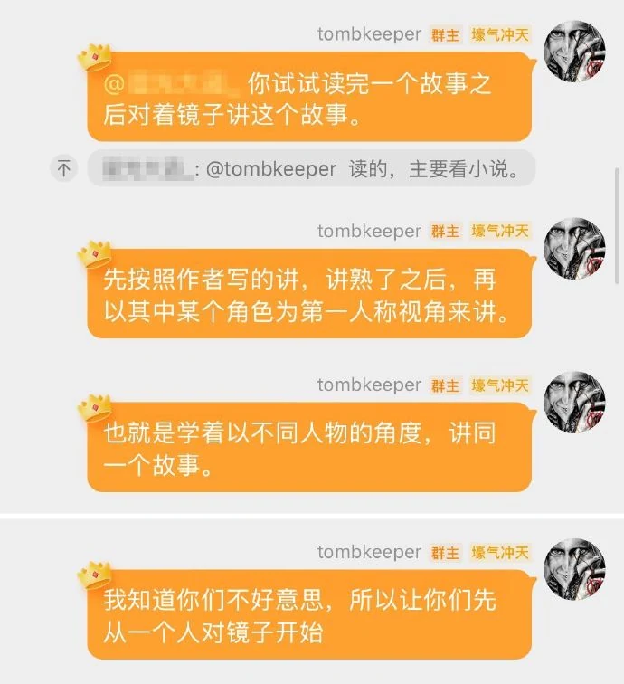
（图一）
#115、提升自己的思维和表达能力
图二
图三：
客观规律不以人的意志为转移
很多人问我到底是怎么做出那些预言的。姑且不论这个问题有多么贪心，其实就算我特别想教会你，也做不到。
就像你问“Deepseek 到底是怎么训练出来的”，就算梁文锋安排最好的工程师来教你，你也真奇迹般地都学会了，回家后你也还是得用上万张卡和上万亿 Token 的数据去训练才行。
客观规律不以人的意志为转移。关键是要怎么掌握这个规律？运用这个规律？透过现象看本质，抓住主要矛盾和矛盾的主要方面，以及常识的重要性。
旅游高反准不
前阵子我妈去一个海拔有点高的地方旅游。我给她准备了抗高原反应的药。她年轻时有过高原反应的历史，如果不吃药，再次发生高原反应的可能性很大。
乙酰唑胺预防高原反应的常规用法是每次 125mg，每天两次。但现在国内卖的乙酰唑胺都是每片 250mg，所以得先切成两个半片。另外乙酰唑胺可能导致低血钾，所以最好配合氯化钾缓释剂。进入高海拔地区前一天晚上开始吃，吃到离开高海拔地区为止。
所以这还是有些复杂的。我怕我妈搞不清楚。所以把药准备好后，没用瓶子装，而是用了 4cm*3cm 的小塑料袋，每次的药装一个小塑料袋。然后打印一张日程表，表上的每个方格对应旅途中某一天的早、晚。我查了她旅途中各个城市的海拔，然后把那些小塑料袋粘到需要吃药的方格上，这样就不会搞错了。更重要的是，这个表格能让我妈拿着跟别的老太太显摆。药瓶子只能装药，不能提供情绪价值。
后来我妈对我说：“你给我的那个药特别好，我一点反应都没有，能吃能喝能睡，发的氧气我都没有用。一起来的有两个老太太夜里都到医院去了。”有了这个对比，情绪价值就更足了。
徒弟去化斋的时候，为师自己也能降妖
上午有个朋友跟我说他脱离技术一线后的一些焦虑。他所在的行业，脱离一线就真的脱离一线了。不过我们这个行业想回一线是随时可以回的。
我以前跟你们简单讲过找微软追讨 CVE-2018-8469 的事。
2017 年初，有同事找到一个 Edge 的漏洞，以及一个能在 Edge 里直接调用 IE 的漏洞。那么，如果再有一个 IE 本身的任意代码执行漏洞，再加上一个 IE 穿沙箱漏洞，四个漏洞组合就可以实现在 Edge 里访问网页导致系统被控制，可以去 Pwn2Own 玩了。但因为我们并没针对 Pwn2Own 投人力，所以没储备可以配合的漏洞。另外当时距离 Pwn2Own 已经很近，也没时间再去找一套 IE 和 IE 沙箱的漏洞了。
找一个 Edge 漏洞也不容易，如果不能组合成一套完整利用还是挺可惜的。记得当时天已经黑了，我回到办公室，一个人坐那儿在大脑里模拟和 IE 有关的各种操作。这么高耗能地运转了大概七八分钟，我忽然想到一个可能性。
那时候的 Windows 资源浏览器和 IE 还是紧耦合的。如果在 IE 里打开一个本地目录，系统就会切换为用资源浏览器访问这个目录，而资源浏览器进程当然是没有沙箱的。那么如果先创建一个名为 trojan.exe 的目录，让 IE 打开，然后在系统切换到用资源浏览器打开这个目录之前的那个瞬间把 trojan.exe 换成一个可执行文件，是不是就等于让资源浏览器执行了 trojan.exe ？
我请同事用 Python 写了个程序快速试了一下，果然可以。也就是说，用这一个漏洞就可以完成本来需要“在 IE 里执行代码”+“突破 IE 沙箱”两个漏洞组合才能实现的功能。
于是，我们就在 Pwn2Own 2017 成功地用这个漏洞攻破了 Edge，拿到 8 万美元的奖金。这里还有个小插曲。我当时给这个漏洞的呈现设计了一种不同于“弹计算器”的方式：先打开一个 Notepad，然后通过发送窗口消息，在里面用打字机效果输出一段 Credit 内容。当时长亭的同学看了觉得很酷炫，找我问了是怎么做的，后来在他们的项目里也用了这个呈现方式。
然而，微软在现场认了 Edge 的漏洞，但觉得我想出的这个穿沙箱的问题不是漏洞。他们认为这不是程序员犯的错误，而是 Windows 系统的一种功能设计，也就是传说中的“It's a feature, not a bug”。
一年之后，Google 的 Lokihardt 也发现了这个漏洞，并向微软报告。也许因为这次处理漏洞报告的和当初在 Pwn2Own 现场的不是一拨人，也许因为他们知道 Google 的风格是不管你补不补我都是要公开的，反正这次微软就认了，进行修复并分配了漏洞编号 CVE-2018-8469。但微软一开始在漏洞的致谢里并没提到我。于是我就给他们写了邮件，提醒了一下，告诉他们这个漏洞就是我当初发现的那个。还不错，最后他们把我加进去了，而且排在 Lokihardt 前面。
这可能就是我们这个行业的特点，对外界条件的要求很低，想搞随时可以搞。今年，我安排一个同事去找一些某类漏洞。他表示早年这种问题比较多，但现在未必好找。我开完会后回到办公室，花 5 分钟找出了一个拿给他看。
徒弟去化斋的时候，为师自己也能降妖。
怎么理解「真理往往掌握在少数人手中」
【为什么「少数服从多数」就是民主？那么怎么理解「真理往往掌握在少数人手中」呢？】
“少数服从多数”，是因为，一般来说，少数打不过多数，所以三个人要服从五十个人。“少数服从多数”，这个叫民主也行，叫嘎嘎嘎也行，都不重要，重要的是得服，不服不行。这不是道理，是物理。但比如说，这三个人，是超人，金刚狼，死侍，那么这三个人就不用服从五十个人，五十个人要服从三个人。这同样是物理。
“少数服从多数”，也没说是服从真理。所以“少数服从多数”和伟大革命导师列宁说的“真理往往掌握在少数人手中”并不矛盾。不仅不矛盾，而且是一致的。要“少数服从多数”恰恰是因为大部分人搞不清楚真理。如果大家都知道真理，那按真理来就好了。因为大部分人都搞不清楚真理，各有各的谬误，如果还要维持一个集体的话，少数服从多数是唯一的办法。
及时更新自己
作为程序员，如果本来就愿意学习，愿意更新自己，那么不太用担心 AI，而如果多年前就已经打算躺平，现在听一些人说 AI 会导致程序员失业，另一些人说不会，你当然很希望相信后者，但残存的一丝理智也还能接受不同的信息，那么我建议你看看那些做 AI 辅助开发的公司的估值变化。
欲望
大多数“被消费主义洗脑”的人并没有被消费主义洗脑。
事实上大多数“被消费主义洗脑”的人甚至不知道消费主义是什么，大多数使用“被消费主义洗脑”这句话的人也不知道消费主义是什么。
能用欲望解释的就不要用主义。
语言传播的异化
前阵子我给人推荐了某食品，对方跟我说里面含黄原胶，所以“配料表不干净”。
“配料表干净”这种说法，在我看来和“科技与狠活儿”“杀疯了”等等是一样的，都属于半文盲语言。知识分子之间严肃地使用这种语言是一种堕落。但在这件事上语言并不是主要的问题。
黄原胶确实是食品添加剂，但黄原胶也是膳食纤维。所以，和很多膳食纤维一样，黄原胶有助于降低餐后血糖峰值，有助于降低胆固醇，有助于肠道健康。
你看，如果说是“食品添加剂”，你就会觉得这个东西害处很大，很可怕。但是换个词，“膳食纤维”，你可能还会主动花钱买来吃。
如何反驳:“我没有后代，国家兴衰与我无关！”这类语句?
【如何反驳:“我没有后代，国家兴衰与我无关！”这类语句?】
一个没有后代的人，在移民的时候，大概也想去经济发达，生活安稳，有发展前途的地方。让“我没有后代，国家兴衰与我无关！”的人移民去巴勒斯坦，他恐怕也不愿意。因为活着的时候国家兴衰和他还是有关系的。
所以，如果“是否有后代”和“国家兴衰与我是否有关”之间存在因果关系，那么这句话应该是“我没有后代，所以我死之后国家兴衰与我无关”。这就不属于新发明了，历史上早就有过一个著名的表述：“我死后哪怕洪水滔天。”
说这句话的路易十五贵为法国国王，有一个儿子六个女儿，所以他既不是“月薪三千”，也不是“没有后代”，但照样“我死后哪怕洪水滔天”。
所以，对于“我没有后代，国家兴衰与我无关！”的这类人来说，“我没有后代”只是一个虚弱的借口，倒不如像路易十五一样，爽快一点，干脆一点，直接一点。
世界没有标准答案
我唯一想写的书是证明那些被认为不同的视角看问题会有不同的答案世界不是非黑即白还有灰色地带真相也许不止一个世界没有标准答案不要用你的尺子量别人的人生你不认同不代表它不存在别人的选择不需要你的理解宇宙没有中心每颗星星都在发光世界的复杂不该只用一种语言解读人生不是选择题是问答题看似矛盾的两面或许都是真实的一部分你觉得不合理只是你不知道还有别的逻辑别一上来就盖章大家都活得挺辛苦别急着下结论世界比你想的复杂的事情，在清晰的现实的约束条件下，存在唯一最优解答案。
这本书的读者只有三条路：
1、找到论证中的问题，证明结论是错的。
2、找不出论证中的问题，但是拒绝承认结论。
3、啊啊啊啊啊啊啊啊啊啊啊啊啊啊啊啊啊啊啊
独立思考能力、实践能力、创新能力和批判性思维
“学校及其他教育机构应当坚持理论联系实际，注重培养受教育者的独立思考能力、实践能力、创新能力和批判性思维，以及追求真理、崇尚创新、实事求是的科学精神。”
——《中华人民共和国科学技术进步法》
表现得不太像读书人
作为一个讲文明懂礼貌说话温和的读书人，我偶尔也会表现得不太像读书人。
我有个老熟人，比我还温和，长得也面善。但他有个优势，他是东北人。虽然平时普通话说的特别好，但东北话也很流利。所以有朋友遇到无赖，比如欠钱不还什么的，就请他去出面，用东北话和别人交流。他一交流，事情就很容易交流好。
某个银行的人跟我说过，他们内部有看人下菜碟的培训。比如工作出错、理论上需要赔客户钱的时候，会根据客户的刺儿头指数来定赔偿金额。本来应该赔两万，如果发现是个好说话的，那就先赔五千试试，或者再拖一拖。如果发现是十级刺儿头，那么起码赔一万五，或者就赔足两万。
人类能演化到今天，贱是我们生存策略的一部分。当然有些人在有些时候能把这个贱压制住。但是啊，漫漫人生路，你这辈子一定会遇到贱人贱事。不止一个，不止十个，会遇到很多。同时呢，当人作为群体存在的时候，还可能出现群体性的贱，制度性的贱。所以，作为一个读书人，也应该学一学怎么面对贱人，怎么处理贱事。
搞研究要保持产出，要有个 Idea 池
搞研究要保持产出，要有个 Idea 池。
比如 BadBarcode 这个研究是我们 2015 年做的，但我 2010 年 5 月就想到并做了预研，并判断是可行的，然后放进了我的 Idea 池。今年初我们实验室在 Blackhat Asia 讲的沙箱内持久化，是我在 Windows Vista 时代微软推出沙箱防护不久后想出来的。
维持一个至少够用三五年的 Idea 池，可以做到手里有粮，心里不慌。然后就是多看多查多想，经常补充 Idea 池的水位。
小岛秀夫留下创意u盘
虽然专业不同，但看来小岛秀夫也有 Idea 池，而且他也只相信离线存储.
大佬做完可行性分析后放入idea池。而我这种三天打鱼的菜鸡做项目：有想法→不管三七二十一先做→遇到困难/热情过去→写一个Todo文件→放弃。长久下来，有了一个“烂尾项目池”
一些原则可以帮助我们做出更正确的选择
虽说未来难以预测，但还是有一些原则可以帮助我们做出更正确的选择：1、选择有“贵人”的机会；2、选择创造更多价值的机会；3、选择能选择建立更多连接的机会。
语言魅力
“失去人性，失去很多；失去兽性，失去一切”，这句话其实大家知道是什么意思，但只要假装不知道，揪着字面意思，想挑刺也很容易。
改成“失去文德，失去很多；失去武德，失去一切”，意思一样，但挑刺儿难度大大增加，只是文字上也没意思了许多。
行动力
前阵子群里一位粉丝说用我微博的内容应对了面试。其实重点并不是我的微博，而是他的行动力。人类文明发展至今，在任何方面都能找到包含前人经验的资料，他只是有缘恰好看到了我写的那些。
但多数人无论看了什么都不会付诸行动，毕竟责怪一切凑巧落在他们视野里的东西要容易得多。
我现在都安心躺了。自己和自己和解未必不是一种巨大的降本增效，不内耗，专注于当前的生活工作。这里不是给懒开脱，而是正视自己，承认自己不行。总是最求做不到的事情，太痛苦了。
@tombkeeper: 回复@千夜寂雪:用一段冗长优美的语言来代替“懒”字，只会让懒人更加心安理得地懒下去。//@千夜寂雪:知道和做到中间隔了巨大的鸿沟，听过很多道理却依旧过不好这一生
世界上的问题，大致都可抽象为具足者和非具足者之间的矛盾，或是非具足者相互之间的矛盾。
“具足”，是借用了一个古语，想表达的意思是自身具备，向内而求便可满足。我想了很久，没有比“具足”这个词更合适的了。
你想要的富贵，能自己挣得，这就是具足。你想要的声望，能自己求得，这就是具足。你想要的平静，能自己悟得，这就是具足。或者，你什么都不想要，并且能接受什么都不想要的自己，这也是具足。
不具足，就需要巧取豪夺，需要摇尾乞怜。不具足，就需要崇拜偶像，需要幻想一个强大而完美的土偶木梗。不具足，就需要像挤在一起的鹌鹑，通过别人的呼应感受自己的存在。
如果真见过神显圣赐福，多半不会去讨伐异教徒，只会可怜他们。不具足，就需要攻伐异己，好稳住自己临时凑起来的信仰。他们对自己的神是否存在其实没那么肯定。
:看过一句精妙绝伦的话与朋友们共勉：平庸有引力，需要逃逸速度。
错就是错
有些人认为“屁股决定脑袋没有错”。只能说，屁股决定脑袋可以理解，但错就是错。悲壮的错愚蠢的错可怜的错，都是错。
预测与规律：人类行为与社会运行的微妙关联
上个月忽然有一些把我当成财经博主的粉丝加了群。为避免误会，我澄清了一下，让大家明白我不会发“神秘代码”，因为确实不懂，我能做的顶多是讲一些基于对人类社会观察的推理。一些事情的发生会影响人的想法，人的想法又会导致一些事情的发生，然后再影响一些人的想法，再导致一些事情的发生，但所有这一切都并不完全由自由意志决定。人在某一刻的想法是难以预测的，就像我们不知道 2928 个小时后石家庄是否会下雨。但无论一个人觉得自己多么乾纲独断，其长期行为还是要受自然规律和社会规律的约束，就像我们知道石家庄今年会下雨，总降水量约 500 毫米。
@tombkeeper: 中美日内瓦经贸会谈联合声明：🔗网页链接 //@tombkeeper:有人问#中方决定同意与美方进行接触# # 央行宣布降准降息 是不是我说的“夏天”。但我其实不知道。我能做出预测并不是因为有“消息”。其实在我预测的时候，连那些局中之人都还不知道“消息”。
在四中全会日期确定后，出台了恢复债券增值税的政策，这意味着四中全会的政策风向更可能是延续去年的九
月转折，而不是刹车掉头。只希望大家最近别把市场炒得太热。
又有人问我到底是怎么预测的。我前几天略微说了一点思路，然后很快被新浪隐藏掉了。这就是为什么“我没办法告诉你”。
技术进步到底好不好
技术进步可以把所有人都带进海鲜自助餐厅，但技术进步无法把所有人的饭量都变得一样。
好消息是你现在可以吃龙虾了。坏消息是饭量大的人会吃下更多龙虾。
所以，技术进步到底好不好，主要取决于你关注自己的龙虾还是别人的龙虾。
心态与选择：从绝望到顺利毕业的自我拯救
去年底，粉丝群里有位同学说自己非常焦虑，心态接近崩溃。他临近毕业，而他的导师是一个既不能带学生做真正的研究，只会让学生替自己干活，又喜欢否定学生，还经常出尔反尔的人。往届很多学生都受尽折磨，而且被这个导师延毕了。他说之前不能理解为什么会有学生毕业前跳楼，现在理解了。
当时我给他的建议是：
//==
首先还是调整好心态，不要觉得无法毕业天就塌了，避免极端。
导师和学生之间的关系，导师并不总是占据主动。很多导师都被学生搞得没办法。关键还是不要把自己放在被动的、受害者的角色上。可以到网上搜一搜导师对学生的吐槽，看看对导师们来说，什么是他们讨厌但又没办法的。
但最重要的还是心态问题。毛主席写《论持久战》就是解决中国人面对日本时的心态问题，这个非常重要。另外就是有些事情需要多想一想，可能和你之前想的不一样，比如
“记入档案”“影响就业”是班主任、辅导员们常用的吓人法宝。
然而，假设“记入档案”会“影响就业”，那辅导员一定不会轻易进行“记入档案”的操作。
因为毕业生就业率是辅导员工作业绩的重要考核指标。
核心还是心态。我们实验室有不止一个人毕业都出过问题。还有入职后回学校补考的。当你抱着“大不了回家啃老”的心态来处理毕业和就业的问题，就比较容易平和。我当时放弃医院的工作时就是这么想的。最糟糕又能糟糕的到哪儿去呢？
刚才，这位粉丝在群里报喜，说已经顺利通过了毕业的各个环节。他说很幸运从 2018 年就开始看我的微博，并表示《论持久战》对他的心态很有帮助。他也跟大家分享了自己过去半年来的心得体会：
我比以往任何一个阶段都更加深刻的认识到心态的重要性，我自认为平时就是一个很积极乐观的人，但依旧在读研这三年被导师压的喘不过气，精神一直紧绷，从来没有真正的放松下来过，这个过程太消耗人了。从根本上来讲，我是靠着坚信我会有一个好的结局，事情会有一个好的结果坚持下来的。真心建议大家面对任何事情永远保持乐观，当然一个更重要的事是在做类似读研这种人生重大选择之前，做尽可能多的调查和准备，起码从概率上让事情往好的情况发展。最后也谢谢之前帮忙想建议的群里的大伙，是支撑我坚持下去的重要力量。
另外，我当时给群里其他人的建议是：
类似这种事，最好的处理时间是在三年前，在那个时候不选这个导师。在做重大选择的时候，一定要先做好充分的调研。
这个话并不是对当事人说的，因为对当事人来说已经晚了。我是告诉群里的其他人。无论是选择导师，选择工作，选择结婚对象，选择创业伙伴，哪怕在一开始没有充分了解情况，也应该在了解情况后立即做应对准备。
类似这个同学的情况，即使入学之后才发现导师有问题，那么在当时就开始为今天的情形做准备，现在也会更容易处理一些。最糟糕的就是一直被动应对，直到最后才开始想该怎么办。
非计算机专业，几乎0基础，如何规划大四一年的时间，能够在毕业找到一份工作（信息安全方向？
可能主要取决于怎么理解“大四一年的时间”。
假设完成每天课业需要8小时，如果每天睡 6 小时，吃饭等杂事花 2 小时，那么每天还有 8 小时可以用于计算机方面的学习。一年就是 5278 = 2912 小时。如果周末两天并无课业，那么能用于计算机方面学习的时间就是 52(58+2*16) = 3744 小时。
事实上，如果已经决定不从事本专业工作，那么每天花在课业上的时间可能不需要 8 小时。另外即使吃饭的时候也可以同时看些技术资料。
如果真的全力投入学习，无论是 2912 小时，还是 3744 小时，可能都比不少计算机专业的同学全部四年花在课业上的时间多了。
嗯……虽然乍看起来我的答案和多数答案相反，但实际上对绝大多数人来说，是一样的。因为上面说的，只有极少数人能做到。能做到的极少数人，不会提这样的问题。而做不到的人，看了应该会知难而退吧。
【如何在噩梦中摆脱仇敌或怪兽等的「追捕」？】
我小时候梦到怪物也是跑。现在做类似的梦，一般是站稳了，瞪着怪物，下定死也要咬掉对方一块肉的决心。然后怪物一般就不过来了。
【为何男女比例失调下我依然没有男朋友？】
“虽然中国男女比例失调，但是题主觉得谈个恋爱太难了，父母还催？说是我要求太高？什么鬼？”
我中年发胖后，再也找不到合适的好看的裤子。我能穿上的裤子，一定很肥。这种情况下，要么认命，接受很肥的裤子；要么改变自己，减肥，把腿变细；要么，就只有不穿裤子了。
【面试安全研究员（二进制安全方向）会提问什么问题？】
应届生技术面试以能力考察为主。问题无非是做过什么，做出了什么。然后再用相关问题进一步判断解决问题的能力和思路，以及确认简历内容和前面回答的真实性。例如具体用了什么方法、什么工具，查了哪些资料，遇到什么困难，如何解决的，为什么选择这个方法而不是那个方法，等等。
面试一定要诚实。做过就说做过，没做过就说没做过。一般应届生在面试中耍心眼是很容易被识破的。而无论是直接的欺骗，或试图用含糊的语言误导面试官都会导致一票否决。
【男友婚前出轨，我却依然爱他，我该如何处理？】
宾利好不好？好啊，比夏利好多了，就是贵。但是想想办法，拼一把，借点高利贷，其实很多人都能开上宾利。但开上了这个宾利，就得还那个高利贷了。
该如何处理？换夏利，或者慢慢还高利贷，没有第三条路。一摩尔氧原子就是只能生成一摩尔水分子，多一丁点儿也没有，残酷得很。
@tombkeeper: 【觉得很委屈啊，周围同事都觉得我是个小美女，但为什么男生相亲见面后就不再联系我了？】在谈论长相的时候，用类似“周围同事都觉得”来描述，是一种典型甩锅，隐含了“就算不对也不是我说的，是她们说的”。自己天天照镜子需要“周围同事都觉得”吗？而周围同事除了说美女还能怎么说呢？2018-07-14🔗网页链接
@tombkeeper: 【假如回到中世纪，你怎么告诉群众地球不是宇宙的中心，而不被烧死？】短期内，愚昧不能被说服，只能被打服。利用自己的现代科学知识和历史知识，吸引追随者，发展经济，组建军队，攻城略地。然后你说什么就是什么。2018-12-23🔗网页链接
“男性失业后老婆就要离婚”的观点
当代互联网上充斥着泛道德主义、泛情绪主义、泛经验主义。对于“男性失业后老婆就要离婚”的观点，无论是支持者还是反对者，都在使用这三大主义。支持者情绪化地试图指责当代女性都是盯着男人钱包的捞女，而反对者则用一些身边的例子来证明不是这样。
2016 年哈佛大学有一项研究《Money, work, and marital stability: Assessing change in the gendered determinants of divorce》。 这项研究对 6300 对异性恋夫妇进行了调查，发现在所有其他因素相同的情况下，没有全职工作的男性在接下来的 12 个月内离婚的可能性比有全职工作的男性高 33%。
那么，哈佛这个研究是不是证明了“当代女性都是盯着男人钱包的捞女”？不是。
因为哈佛这个研究的结论是：“在所有其他因素相同的情况下”，没有全职工作的男性离婚的可能性更大。也就是说，没有全职工作的男性和收入相同的有全职工作的男性相比，离婚的可能性也更高。影响因素是工作本身，而不是收入。
其实，即使真的“男性失业收入降低后老婆就要离婚”也无法得出“当代女性都是盯着男人钱包的捞女”的结论，因为至少还得看看是不是同样存在“女性失业后收入降低丈夫就要离婚”的情况，对吧？
2022 年，瑞士的一项研究《Weathering the storm together: Does unemployment insurance help couples avoid divorce?》分析了失业保险福利减少对离婚率的影响。这项研究分别调查了男性和女性作为家庭主要收入来源的情况，结论是：
男性是家庭主要收入来源，失业，且失业保险福利缩减，离婚率增加约 40%；
女性是家庭主要收入来源，失业，且失业保险福利缩减，离婚率增加约 78%。
你看，如果女性是家庭主要收入来源，失业后离婚风险更大。那么从瑞士这个研究能得出“当代男性都是盯着女人钱包的捞男”的结论吗？
失业和离婚之间肯定有关系，但可能没那么简单。实际上最主要的原因还是一方失业导致家庭经济陷入困境，是贫贱夫妻百事哀，而不是某个性别的背叛。
志愿填报
马上又要填志愿了。
很多人在填志愿的时候会去问从事某行业的人该行业好不好。这是个比较糟糕的做法。因为大部分人都觉得自己所在的行业不好，自己所在的公司不好，自己所在的部门不好。
所以，我建议还是看统计数据。如果你更关注收入，那就看图一，如果你更关注“情绪价值”，那就看图二。
图一和图二的数据是不是和你们从社交媒体上看到的那些抱怨有比较大的出入？搞 IT 的都哭穷，但还是收入最高的。“劝人学医，天打雷劈”，但医生们的就业满意度却排在前面。
另外，如果对 AI 有兴趣，填志愿选计算机专业就好。对专业名称里有“人工智能”几个字反而要谨慎考虑。本科的“人工智能”专业，往往是赶时髦草草设立的，师资力量堪忧。
有人说学医的本科不可能就业。我觉得这还是上网上出来的毛病，眼里只看到大城市，只看到大医院。中国有一半以上人口居住在县城和乡镇。三级医院不到四千家，而二级以下的医院有三万家。
真理只在大炮射程之内
昨天严锋老师提了一个问题：“现在很多人喜欢说一句套话：真理只在大炮射程之内。这个听上去好像常常是这么回事，但是我们可以再问一句：大炮又是用什么造出来的？ ”我回复说：“一个罗马士兵闯了过来，将地上刚画好的图形踩坏。阿基米德大怒，腕子一抖，手里的判官笔直刺过去。罗马士兵只觉胸口一凉，顿时倒地。阿基米德蘸着血，在地上又画了一个圆。”打机锋归打机锋，法布施也还得做。给大家解释一下。公元前 212 年，阿基米德居住的锡拉库扎城被罗马军队攻陷。传说城破之日阿基米德仍在家门口的沙地上研究几何。罗马士兵要求他立刻前去见占领军首领，并踩坏了他画在沙地上的图形。阿基米德大吼：“别碰我的圆”！于是恼怒的罗马士兵一剑杀死了阿基米德。“奥卡姆剃刀”的概念大家都很熟悉。提出这个法则的人是 14 世纪的一位哲学家，叫“奥卡姆的威廉”，是个修道士。当时的教皇认为奥卡姆的哲学思想是异端，把他关了起来。于是奥卡姆逃到德国，寻求德国皇帝路易的保护。这时他对路易说了另一句很有名的话：“你用剑来保护我，我用笔来捍卫你。”宇宙的真理从一百四十亿年前就开始运行了。生命的真理也运行了三十五亿年。人类灭绝之后，这些真理仍将继续运行。对真理来说，某些人类喜不喜欢乐不乐意，一点都不重要。但对于追求真理的人来说就不一样了。千百年来，阿基米德之死始终是知识分子们心头的一个沉重隐喻。能苟且求得“你用剑来保护我，我用笔来捍卫你”已经是非常美好的情况了。更多时候，我们都是锡拉库扎城的阿基米德。这就是为什么我们追求真理，我们也还需要大炮。至少在大炮的射程之内，我们可以安心地在沙地上研究几何。所以，我幻想着在某个平行宇宙里，有一位拿着判官笔的阿基米德，蘸着愚者的血，重新画了一个圆。
科技进步。
石器时代部落里的勇士和普通人的生产力相差不会超过十倍。而今天科技领域顶尖人物和平凡之辈的生产力差异至少是百倍千倍。每次科技进步都会让人和人之间的生产力差异变得更大。未来这个差异还会继续增加。除非我们愿意放弃科技进步，否则，这个趋势不会改变，无论你开心不开心。
虐待动物的重点在于变态
虐待动物的重点在于变态，不在于动物，也不在于虐待。比如说，某小区的保安队长，命令手下的一名保安每天抓一只流浪猫，用脚踩碎猫的头颅，拍视频发给他看。那么，这个存在虐待动物行为的保安更可能是变态，还是这个连猫毛都没碰到的保安队长更可能是变态？这个问题不难想明白。如果还不明白，那只能理解为是不愿意明白。
@tombkeeper: 警惕虐待动物的人，主要不是为了动物，而是为了我们自己。虽说喜欢动物的人未必不变态——希特勒就很喜欢动物——但虐待动物的人变态的可能性要大得多。就不去列研究论文了，大家想一想，一个养了一只狗的单身男性，还有一个捉流浪猫回来用开水烫的单身男性，你更愿意谁住在你的隔壁？当然，你可以充满智慧地说“两个我都不想”并充满智慧地认为这样充满智慧地回避问题是充满智慧的。但这个问题就像世界上所有问题一样，不会因为你回避而消失。那些虐待动物的人一定会住在某个地方，成为某些人的邻居，同事，配偶。
突然所有人都能说话了
半年前看到有人评价提速降费和短视频：“突然所有人都能说话了，这是最神奇的，从秦始皇焚坑以来最伟大的进步……所有人都能说话，无论如何都是正面的。”提速降费及其催生出来的短视频，并不是让“所有人都能说话”。因为本来所有人也都能说话。提速降费和短视频是把代议制变成了陶片放逐法。以前也人人都可以写 Blog，但写的一泡污就没人看，得不到传播。现在一泡污不是问题了，野百合也有春天，张宗昌可以艳压李杜。这从某种价值观来看确实是进步。但如果用促进生产力发展这个金标准来衡量，是不是正面还得再观察观察。
逻辑小训练
如果你反对宣传“高考288分女孩”，同时也一向反对“优绩主义”，然而又希望自己脑子清楚一点，那么就需要想一想这两者之间是不是存在矛盾之处、怎么解决这个矛盾。如果不在乎脑子清楚不清楚，那就不必想了。不想有不想的好，省力又舒服。
看新闻能发财？
前阵子粉丝群有人说看到一个重大利好的新闻，但奇怪的是周一开市后却跌了。
一个重大利好的新闻，写新闻的人是不是比你提前知道？给写新闻的人提供素材的人是不是比写新闻的人更早知道？
这个链条一环接着一环，你算算在你之前有多少人早就知道了？你算算有多少人盼着你看了新闻之后接盘？如果重大利好上了新闻你才知道，那你知道后跌了有什么奇怪的？
如果看新闻能发财，那就不用解决就业问题，大家都看新闻就好了。
群里又有人奇怪为啥谈之前涨，谈之后反而跌。有人说是“不及预期”，那么“预期”是什么？哪儿有“预期”？具体怎么“不及”？想问题得具体一点，一直把自己逼到死角，不要放过自己。
志愿填报
我发现大部分人填志愿主要就是看各种指标，比如是不是 985 是不是 211 是不是联合办学，等等。甚至有人说感觉北邮比较一般，因为不是 985。家长觉得如果孩子上了北邮，将来即便考研考了一个 985，身份也不是“双 9”了。“双 9”就是本科和研究生都是 985。看他们的意思本科读北邮就如同贞女失节，再也无法挽回。北邮尚且如此，既不是 985 也不是 211 的杭电在很多家长的眼里就更排不上号了。五星级酒店要求配有足够车位，车位不够就不能评五星级。但你选酒店的时候会关心车位吗？一个酒店可能别的都非常棒，但就是没车位，一个车位都没有。绝大部分人读大学还是为了就业，选学校选专业都得先看就业，以终为始，从就业倒推志愿。学校的各种评定肯定有参考意义，但那些评定主要是看有多少论文多少院士多少长江多少杰青，并不直接反应就业情况。就跟酒店的星级一样，肯定有参考意义，但如果真想找个满意的，还得自己去了解更多的信息。
很多焦虑都源于模糊的恐惧
有个刚毕业的同学说他每个月的收入有一半能存下来，但他还是很焦虑。他说了一些自己的情况，自己的想法，但并没说他焦虑的到底是什么。
很多焦虑都源于模糊的恐惧。如果我们强迫自己想清楚害怕的到底是什么，那个情形具体是怎么样的，可能也就不会恐惧，也不会焦虑了。
我毕业的时候，告诉父母要去北京自谋生路。我父母对我一向比较信任，所以没有太反对，虽然这时候他们已经费了不少力气，托关系给我找了一个三甲医院肝胆外科的工作。不过，临行前跟亲戚们吃饭，大家都觉得我最后一定会混不下去，灰溜溜地回来。所以，我如果真的混不下去，是不能灰溜溜地回去让他们看笑话的。
于是，刚到北京的时候，我经常留意哪里能吃饭，哪里能藏身，哪里能洗澡。当时北京有一家自助餐厅“金钱豹”。我第一次去，就在里面转了一圈，找到一个不起眼的放杂物的小房间。我想自己可以趁人不注意藏在里面，夜里出来找些吃的。自助餐厅少了一些食物应该也没人会注意到。
最糟糕也就是这样了。“江东子弟多才俊，卷土重来未可知”，总有办法的。
以平常心生活，以热爱为动力
活着最重要的是要有一颗平常心・不要把自己太当回事儿・我们的成功也好、失败也好，有很多确实是自己的努力・但是更大部分其实就是 the right place、the right time・就是运气・运气在每一个人的成功和失败中都发挥着比我们想象的多得多的作用・我们每个人总结自己的时候・总会有意地把自己的作用凸显一些，这个是我们的人性使然。但是，如果你真正比较客观地去看待自己・或者如果你让周边比较聪明的、对你观察也很深入的人来评价你，他一定会把运气放在里面。
所以我觉得・首先是要有平常心一些，这样就会在人生中不断地发现乐趣・
一个人的生活要有动力，主要是要靠热爱，而不能是因为恐惧。在年轻的时候，我们的心里可能会有各种各样的不安全感・觉得自己不够聪明、不够有钱、不够有权、不够有地位、不够有名笔、不够有知识、不够漂亮等等等等，反正总之哪都不够。这些事情可能在很长一段时间内会成为你前进的动力。
但是・你很快就会发现・以一种不安全感作为动力往前走，走的路很短，走的路不长。真正走的长的路是因为热爱，热爱自己、热爱生命、热爱他人、热爱家人・热爱自己从事的行业・热爱每天看到的每一草、每一个瞬间，阳光的变化云彩的变化热爱看到的每一个美好的东西，热爱听到每一个美好的旋律・
有的时候・我觉得我自己活得越来越小・我很愿意和年轻人在一起，跟小孩子在一起，然后尝试用他们的眼光去看待这个世界・所以，当你真正以一种平常的心，以热爱的方式去生活，每一天你都会觉得这个世界充满了有趣、有意思的事情，因为你对世界充满了好奇。
看好谷歌
李开复称美股巨头七选一会选微软
今年 3 月参加一个同乡饭局，席间凑巧有一位还是微博粉丝。她说她丈夫很喜欢 Google，持有很多 Google 股票，但她担心未来 AI 会吃掉搜索，所以问我啥看法。我说在我看来 Google 其实挺稳的。
OpenAI 和 Anthropic 有模型没场景，苹果和微软有场景没模型，只有 Meta 和 Google 有模型有场景。但 Meta 的技术底蕴比 Google 还是差点，场景上也是 Google 更丰富。
当然可能也就是因为 Google 的技术底蕴比较厚，所以经常做起大早赶晚集的事。比如 Google 在 2009 年就开始搞协同办公，做了 Google Wave，但那时候做这个太早了，就没做成。Google Glass 也是，做得太早了。在 AI 研究上 Google 多年来一直是领头羊的位置。Transformer 架构是 Google 提出来的，预训练语言模型范式是 Google 提出来的，AlphaGo 也石破天惊，但最后 AI 的桃子还是被 OpenAI 摘了。Google 一直就是种桃能力强，摘桃能力弱。
不过现在模型上有 OpenAI 领跑，Google 再不会摘桃，只要跟着跑，别太差就行。当然并不是说有模型没场景就不行，但两个都有不是更好吗？OpenAI 虽然现在营收增长也还不错，但据说他们自己预计至少在 2029 年之前都不会实现盈利。如果 OpenAI 自己就有丰富的用户场景，那情况肯定是不一样的。
而且随着 AI 技术的发展，在下一个阶段，Google 种桃能力强的特点可能会逐渐转变为竞争力。
至于微软，我十年前就觉得他们当时移动+云的战略是对的，如今对 AI 判断也没错。不过因为自己没模型，所以微软最近阵脚有点乱。现在就看整个行业的模型能力发展会有多快。如果没那么快，微软应该也有时间想出办法应对没有模型的问题。
一幼儿园违规用添加剂幼儿血铅异常
#一幼儿园违规用添加剂幼儿血铅异常##多名幼儿呕吐查出血铅异常# 这个事情我看不少人都在往食品添加剂的方向讨论。
官方通告描述此事所用的句子是“查获一起某幼儿园违规使用添加剂导致部分幼儿血铅异常案件”。如果这个简单的句子准确无误，那么我们可以知道：
1、“违规使用添加剂”这个行为是“某幼儿园”做出的，“违规”的主体是幼儿园，“使用”的主体是幼儿园。如果采购的东西本身就含铅，这不能认为是“某幼儿园违规使用添加剂”。如果幼儿园买来的合规添加剂遭到了铅污染，也不能认为是幼儿园违规。
2、“添加剂”前面没有定语，通告全文中也没有任何地方可以解读为和食品有关。也就是说，可能是食品添加剂，可能不是。
违规的含铅食品添加剂通常是色素。比如有人用铅丹给咸蛋黄染色，用铅铬绿给茶叶染色，使其卖相更好。但幼儿园似乎没有这么干的理由。
“添加剂”不只包括食品添加剂，还有工业添加剂、化妆品添加剂、建材添加剂、纺织添加剂、涂料添加剂，等等。以“幼儿园”作为主语的时候，“违规使用”的添加剂最大可能还是涂料添加剂、建材添加剂之类。
怎样当好一名师长
粉丝群有人问有没有关于怎么带团队的书。我觉得把《怎样当好一名师长》看明白就够了。这也是我非常推崇的一篇文章。
文章内容是杨成武将军向林军团长请教时得到的指示。后来杨成武将军根据谈话笔记整理成文。
怎样当好一名师长
一九三六年十二月，我在抗大学习以后回到前方工作的时候，林军团长告诉我：中央、军委决定我由师政治委员改做师长工作，当时我问军团长说，我当不好师长。在我的要求下，林军团长专门同我讲了一次怎样当师长的问题，讲的很深刻很精辟，几十年来，林军团长的这个指示始终鲜明的烙印在我的脑海里。我一直运用它来鞭策自己，检查自己，做为我学习奋斗的准则。林军团长一共讲了九条。这里是根据当时谈话笔记整理的。
—— 杨成武
一、要勤快
要勤快，不勤快的人办不好事情，不能当好军事指挥员。应该自己干的事情一定要亲自过问，亲自动手。
比如，应该上去看的山头就要爬上去，应该自己了解的事情就要及时了解，应该检查的问题就要严格检查，不能懒，军事指挥员切记懒，因为懒会带来危险，带来失败。
又比方说，一个军事指挥员，到了宿营地就进房子，搞水洗脚洗脸，搞鸡蛋煮面吃，吃饱了就睡大觉。他对住的村子有多大，再什么位置，附近有几个山头，周围有几条路，敌情怎么样，群众条件怎么样，可能发生什么情况，部队到齐了没有，哨位在什么地方都不过问，都不知道，这样，如果三更半夜发生了情况，敌人来个突然袭击，就没有办法了。到那时候，即使平时很勇敢的指挥员，也会束手无策，只好三十六计，走为上策。结果变成一个机会主义者。
机会主义者打败仗，常常是因为没有思想准备，没有组织准备，工作没做到家，懒的结果。
因此，不论大小指挥员都要勤快，要不惜走路，不怕劳累，要多用脑子，要做到心到、口到、脚到、手到，事情没有做好之前，不能贪闲，贪闲就隐伏着犯错误的根子，什么事情都要心中有底，“凡事予则立，不予则废。”
“雷打不动” 的干部，牛皮糖式的干部，不管有多大本事，都不是好干部，我最喜欢勤快的干部，提倡勤快。
二、要摸清上级的意图
对上级的意图要真正理解，真正融会贯通，真正认识自己所领受的任务在战役、战斗全局中的地位和作用。
这样，才能充分发挥自己的主观能动性，才能打破框框，有敢于和善于在新情况中找到新办法的创造性，才能有大勇，才能决心强、决心狠，敢于彻底胜利，有强烈的吃掉敌人的企图和雄心。
指挥员的勇敢表现在歼敌决心的坚定顽强上面；指挥员的大勇建立在革命的最高自觉性和正确理解上级意图的基础上面。
三、要调查研究
没有调查研究就没有发言权，这是毛主席早就讲了的。
对于敌情、地形、部队的情况和社会的情况要做到心中有数，要天天摸，天天琢磨，不能间断，这样做不能看作是重复，而是不断深化不断提高的过程，是取得正确认识的比不可少的手段。
平时积累的掌握的情况越多，越系统，在战时，特别是在紧张复杂的情况下，就越沉着，越有办法，急中生智的 “智” 才有基础。
因此，调查研究工作要贯穿在各项工作之中，要贯穿在每一次战役、战斗的整个过程，反对打莽种仗、反对急性病、反对不亲自动手做调查研究的懒汉作风。
特别是敌情必须切实摸透，因为敌情是活的。
敌人必然会极力隐蔽，伪装他们的真实企图和决心。要尽一切可能不间断的侦察，查清敌人的部署和动向，看他扮演的是什么角色？是主角还是配角？是主力还是非主力？是骄兵还是败兵？能集中多大兵力向我进攻和阻挡我们的进攻？查明敌军官的特性，看他惯用和擅长用什么战法，根据他当前的企图判断他可能采用什么战法等等。
只要摸清了敌情、我情、地势的底，决心就快、就硬、就坚决，就不会被任何困难吓倒。
如果情况不清，就回犹豫不决，举棋不定，坐失良机，或者勉强下了决心，一遇风吹草动，听到艰难叫苦或不正确的建议，就容易动摇，可能一分之差，前功尽弃。
调查研究也包括多读一些书，首先就要研究和读好毛主席的 “中国革命的战争战略问题” 和毛主席的各项指示。不仅要读革命的书，还应读敌人的书，研究敌人，经常总结经验教训，这样自己才有锐利的思想武器，才能针对敌情克敌制胜的好办法，把力量用到刀刃上。
四、要有活地图
指挥员和参谋必须熟悉地图，要经常读地图，熟识地图可以产生见解、产生智慧、产生办法、产生信心。
读的办法要把地图挂起来，搬个凳子坐下来对着地图看，看要从大的方向到活动地区，从地区全貌到每一块地形的地形特点，从粗读到细读，逐地逐块的读，用红蓝铅笔把主要的山脉、河流、城镇、村庄和道路标划出来，边划边读，等到地图差不多划烂了也差不多把地图背熟了，背出来了。
在熟读地图的基础上，要亲自组织有关指挥员和参谋对作战地区和战场进行实地勘察，校正地图，把战场的地形情况和敌我双方兵力部署都装到脑子里去，做到闭上眼睛面前就有一幅鲜明的战场图景，离开地图也能指挥作战。
这样，在你死我活，瞬息万变的战斗情况下可以比敌人来得快，争取先机，先敌一着，掌握主动，稳操胜卷。
你们强渡乌江的战斗所以能够很快突过去，就是因为在战前熟悉地图，细致地进行了战场勘测，正确的选择了渡河点。
五、要把各方面的问题想够想透
每一次战役战斗的组织，要让大家提出各种可能发现的问题，要让大家来找答案，把所有提出的问题都回答了，再没有问题可回答了，这样打起仗来才不会犯大错误，万一犯了错误，也比较容易纠正。
没有得到答案的问题，不能因为想了很久想不出来就把它丢开，留一个疙瘩。如果这样是很危险的。在紧要关头这个疙瘩很可能冒出来，就会使你心中无数，措手不及。
当然在战争环境中，要考虑的问题很多，不可能一次都提完，也不可能一次都回答完。整个战役战斗的过程，就是不断的提出问题和不断的回答问题的过程。
有时脑子里很疲劳，有的问题可能立即回答不了，这是除了好好的和别人商量之外，就好好的睡觉，睡好了睡醒了，头脑就清醒了，再躺在床上好好想一想，就可能开窍，可能想通了，回答了，解决了。
总之，对每一个问题都不能含糊了事，问题回答完了，战役、战斗的组织才算完成。
六、要及时下达决心
在什么样的情况下可以下决心打呢？
指挥员必须以最大的努力去组织战役，战斗的准备工作，力求确有把握才动手，不打无把握无准备之仗。但是任何一次战斗都不可能完全具备各种条件，不可能有百分之百的把握。
一般说有百分之八十左右的把握就很不错了。就要坚决的打，放手地打。
不足的条件要通过充分发挥人的因素作用，依靠人民群众的力量，充分发挥人民军队特有的政治上的优势，充分发挥指挥员的智慧和英勇顽强的战斗作风来弥补，以主观努力来创造条件，化冒险性为创造性取得胜利。
敌人的士兵多是穷人出身，同革命军队打仗，它的战斗力不会强，不能同我们比。你看，泸定桥不是冒过去了？直罗镇那个晚上的战斗，不是以一个连打垮了敌人的一个团的进攻？一点险都不敢冒就打胜仗，世界上还没有这样的战例。
我这样讲不是提倡了冒险主义，不是无根据的冒险，这样冒险是有根据的。
其实这样并非冒险，根据就是我们的部队是党领导的，是毛主席教养出来的部队，不怕苦、不怕死，最勇敢，最聪明，最有纪律，最坚决执行命令，有很高的政治觉悟，我们是革命的军队，打仗有人民群众积极支持，人民群众是站在我们这一边，是帮助我们的，我们依靠人民群众，就可能把敌人封锁起来，就可以把敌人变成聋子、瞎子、傻子。
这种政治上的优势就是我们所独有，在战争中可以转化为一种巨大的物质力量，有了这一条，有百分之七八十的把握，就可以下决心打，对于比较弱的敌人，对没有或缺乏准备的敌人，有百分之六十的把握也可以打，可以把它消灭。
七、要有一个很好的很团结的班子
领导班子的思想认识一致，行动要协调、合拍，要雷厉风行，要有革命英雄主义的气概。
都要勤快，都要干方苦计的办好事请，完成任务，不相互扯皮，不相互干扰，抱旁观者的态度。
如果领导班子不好，人多不但无用，反而有害，所以，班子问题，从领导角度来讲，是一个重要的问题，是做好工作，带好部队打好仗的关键。
八、要有一个好的战斗作风
有好的战斗作风的部队才能打好仗，打胜仗。
好的战斗作风首先是不怕苦，抢着去担负最艰巨的任务，英勇顽强，不怕牺牲，猛打猛冲猛追。特别要勇于穷追。因为把敌人打垮以后，追击是解决战斗，扩大战果，彻底消灭敌人的最关键的一着，在追击的时候，要跑步追，快步追，走不动的挟着拐棍追，就是爬、滚也要往前追，只有抓住敌人，才能消灭敌人。好的战斗作风要平时养成，要靠实际锻炼，要在紧张的残酷的战斗中才能锻炼出来。
不敢打硬仗、恶仗的部队让他打几仗就打出来了，因为已经见过恶仗、硬仗的场面，有了体会，有了经验，知道怎么打了，百炼成钢就是这个道理。
做工作也要有好的作风，说了就要做，说到哪里就做到哪里，要做到干净利索，要一竿子插到底，一点不含糊，不做好不撒手。
好的作风养成关键在手干部。
强将手下无弱兵，干部的作风怎么样，部队的作风就会怎样。
因此，首先，要抓好干部，要干部做好样子，影响带动部队，或者原来基础较弱的部队，也会很快打出好的作风来，想铁锤子一样，砸到哪里，哪里就碎。
九、要重视政治，亲自做政治工作
（笔记：同第八条一致，都是除业务能力之外的政治工作，抓员工的思想工作，鼓足员工的干劲，同样重要。）
部队战斗力的提高，要靠平时加强党的领导，坚强的政治工作连队的支部一定要建设好。
支部工作要作活，就是要把所有的党团员的革命干劲鼓得足足的，充分发挥他们模范带头作用，通过他们把全连带动起来，通过他们去做政治思想工作，提高全体指挥员的阶级觉悟，有了坚强的党支部的领导，有了坚强的政治工作，就可以做到一呼百应，争前恐后，不怕牺牲，前扑后续。
战术、技术也要练好，特别是技术，如果枪打不准，战场上就不能消灭敌人，不能解决战斗，因此，军事训练不能马虎。
党政工作要领导好训练。艺高人胆大，部队有了高度的无产阶级觉悟，有了好的战斗作风，再加上过硬的作战本领，就如虎添翼，就可以无敌于天下。
军事指导员任何时候都不能忘记政治，要亲自做政治工作，调一批政治干部去做军事干部，不仅不会削弱政治工作，实际上是加强了部队的政治工作。
讲理
如果一个人认为{女人不关注事情本身的是非对错而喜欢强调“你态度不好”是不讲理}，同时又认为{知识分子应该反省自己的傲慢}，那么这个人是不自洽的。
基于事实
【都说计算机今年炸了，究竟炸到什么程度呢?】
如果你打算读计算机专业，但没有查总失业率数据就来问这个问题，那么我建议你不要读计算机专业，就当是“计算机今年炸了”吧。
这对你好，对计算机专业也好。
职场
上高中的时候我自己学着洗照片，要用那种长方形的搪瓷盘子。我发现完全相同的东西，在摄影器材店就卖的很贵，而在同一条街上的医疗器械店里只要三分之一的价钱。
去年我买瑜伽棍，在体育器材店看要五十元，后来找了个做家具的店，同样尺寸同样木材的棍子只要十几元。
写这条微博并不是想告诉你们怎么买东西能省钱——省那点钱发不了财，也就获得些小快乐——我们在思考个人价值和职业发展的时候是不是可以把上面的逻辑反过来想想？
逻辑判断
前阵子粉丝群有人说家里卫生间出现了灵异现象：一洗澡就有霉味，不洗澡就没有，无论开窗关窗都没有。我问他家里有几个人做出了同样的判断（为了排除错觉）。他说他们家主要是他和丈母娘两个人搞卫生，两个人都有同样的感觉。
我又看了一下他所在的城市，是上海。华东地区湿度大，家里滋生霉菌倒是不奇怪。我推测是瓷砖表面或内部或缝隙滋生了霉菌，霉味平时不严重，但被热水一激，挥发增加，再加上热水增加了空气对流，于是霉味就被闻到了。我让他不洗澡的时候蹲下来凑近瓷砖闻闻，如果闻不到就再喷些热水试试。
他照我说的试了一下，发现霉味就是来自瓷砖。不仅地面的瓷砖有霉味，墙壁的瓷砖也有。而且不是每块瓷砖都有，有些没有。这一点其实支持了对霉菌的判断。“霉味”不一定是霉味，不一定来自霉菌，但如果霉味来自瓷砖本身的化学物质，那应该是每块瓷砖都有。
虽然初步确定了原因，但他很犯难，觉得把瓷砖都敲了也是大工程。我让他别急着敲瓷砖，先用含氯消毒剂把瓷砖擦一遍试试。含氯消毒剂一方面可以杀灭霉菌，另一方面也可以直接破坏“霉味”本身，也就是霉菌产生的挥发性有机物。
他按我说的把所有瓷砖都用含氯消毒剂擦了一遍，当天晚上全家人洗澡就都没有闻到霉味了。
你们有没有注意到这是个做家务的好男人？
都是小事
前阵子参加一个闭门会。主持人让我给台下的后辈们分享一些职业生涯中怎么应对挑战的建议。但我知道年轻人不太喜欢听建议，所以就讲了一个故事。
若干年前，在机场贵宾厅，我刚进门，四处打量找空座位。这时有人跟我打招呼。我一看，应该是一位领导，有点面熟，但想不起来是谁了。也没办法，只能也过去打招呼。领导的秘书很快察觉出了我的异样，跟我说“这是XX部门的X部长”。于是我就尴尬了。但领导表现地很自然，就像啥都没发生一样，问了我对一些行业动态的看法。后来多次和这位部长打交道，领导对我也一直都还挺认可，没因为这件事就觉得我不尊敬他之类的。
很多事情发生了就发生了，有些能解决，有些不能解决。但事情本身可能没什么大不了。尤其是放到我们一生的时间里来看，大部分事情都是小事。但如果一直耿耿于怀，憋在心里闹出病来就是大事了。
很多当下觉得天都要塌下来的事，过三年、五年回头看，只能算人生的一个小插曲
迈出第一步
我有个老哥们，这么多年一直搞系统底层技术研究，内功深厚，但从未登台做过演讲。我看了他最近做的东西，建议他投一下某个国外的会议，结果就被录用了。
现在这个年近半百的老黑客不但要做人生的第一次演讲，而且是去国外用英文讲。
很多事固然早些尝试比较好，但晚一点也不要紧。只要开始做，都可以让我们的人生更加丰富。
之前说的那个老哥们，在我的忽悠下，今天终于完成了人生第一场演讲。演讲后他给我发消息说挺顺利的，声音里透出兴奋和激动。我也由衷地替他高兴。
大家想象一下：一个从未登台演讲过的的人，在年近半百的时候，走出国门，来到伦敦，在世界级的会议上用英文做演讲。
这些年我帮助很多年轻人迈出了各种各样的第一步，但鼓励中年人还是第一次。不过能否打破一成不变其实和年龄无关。如果你心里萌动了要做出改变的想法，那么既然要改变就不妨步子迈的大些，勇敢去挑战不可能的目标。同时，清醒地分析自身的不足，并用认真的准备和周密的筹划来弥补不足。我们总是可以非常认真非常努力地把事情做的像是轻而易举。然后，慢慢就会真的轻而易举。
写下想法
在二十多岁的时候尽量把自己的想法写下来，到三十多岁的时候读一读，如果不觉得有什么大问题，那这就是你的思想。以此作为基准，要是有一天你开始反对这些，说明你开始衰老了，或者你的期权快能兑现了。
事实陈述
应然是价值判断，实然是事实陈述。情感过于丰沛的人，会把一切实然表达也都看作应然表达。
当我说：“如果氢气在空气中的体积浓度在4.0%～75.6%之间，遇火就会爆炸”，这并不意味着我希望发生爆炸，也不意味着我认为发生爆炸是错的。我只是说：这会爆炸。
“因为事实如此”，“Q.E.D.”，这是我最喜欢的两句话。
思路活跃
某个境外的支付商现在对中国大陆用户也开始要求实名。如果你是早年注册的未实名账户，现在登录就会得到提示“我们无法验证您的身份”。按理说这时候应该允许用户登录并同时要求补充相关材料。但没有，就是不允许登录，页面上就这一行字，别的什么都没有。如果你试图联系客服解决这个问题，就会发现联系客服需要先登录，于是就死循环了。
我觉得能犯这种错误的程序员应该也没有能力把路堵死，就试了几个思路。果然，还是能找到办法登录成功的。
思考的时候，尽量用完整的句子
前几天我说『 演化并不必然消除没有意义的东西，否则男人就不会有乳头。』
有人这样反驳：『 有没有可能现在的乳头只是在退化的过程中，可能再过个百万年乳头就没了？』
类似的反驳思路、反驳句式在地球人的习惯性反驳中很常见。我有时会想也许训练一个 0.5B 的模型就能做同样的事，而且喷射速度快多了。
从他所用的语言来看，我感觉他有可能明白过来。所以我让他『 试试用包含“因为”“所以”的句子来描述你的想法。』
他说：『因为生物进化是个漫长的过程，所以我们很难直观地看到现在雄性的乳头是否正在消失的过程中。』
这时我说：『现在，把这个句子中“雄性的乳头”替换成“任何生物特征”，看看是不是仍然成立。』
然后他就明白过来了。他那句话并不是错的，而是谈不上对错，Not even wrong。
说话不一定要用完整的句子。但思考的时候，使用完整的句子可以尽可能避免出错，或者更糟，Not even wrong。我曾对一个人说：如果你能做到想一万个字，说一百个字，那这一百个字就值钱了。
看见和知道是两码事
看见和知道是两码事。对于有些事物，建立认知需要多角度的分析和思考。即便显而易见的信息，也不会自动变成清晰的认知。
你看见一颗黄金做的足球。你知道黄金很重，很值钱。但这颗黄金足球到底多重，值多少钱，你需要计算一下。计算后，你知道这颗黄金足球大约有 108 公斤，按照目前的金价，相当于 1400 万美元，也就是 1 亿元人民币。
1 亿元人民币，这已经是一个简单的数字，一个显而易见的信息。但 1 亿元人民币到底是多少钱？目前中国大陆的银行一年期人民币定期存款利率是 0.95%。你把 1 亿元人民币存进银行，在这个利率下，每年的利息是 95 万元，平均每天 2600 元。如果稍微激进一些，假设用这 1 亿元进行某项年化收益 5% 的投资，那么每年就能获得 500 万，平均每天 13700 元。
现在，你对一颗黄金足球的价值这个并不复杂的问题才有了一些认知。
但如果不是你一个人，而是一群人呢？对于群体来说，从看见到知道的过程会更复杂，更漫长。即便显而易见的信息，群体不可能同时看见。而即便全都看见了，也不可能都建立合理的认知。有些人不知道足球的半径，有些人不会计算球体的体积，有些人不知道黄金密度，有些人不知道黄金价格。而能完成所有计算的人，也有相当一部分会出于各种原因否认或扭曲自己亲手算出的结果。
群体规模越大，从看见到知道就越困难，乃至于几乎不可能。所以大部分时候，群体都跳过了知道这个环节，直接感受后果。
片面的信息获得表达欲的满足，却不承担完整的责任
楼下来了一辆搬家公司的卡车。卡车后面的门已经打开，门口站着四个工人，正等着往下搬东西。楼道门口和卡车之间被铺上了一大块装饰板，要走出去就很难避开这块装饰板。于是我们稍微迟疑了一下。
“可以踩……可以踩……”四个人笑着齐声喊。
老婆听了这话，就径直往前走。而由于一些历史经验以及由历史经验形成的刻板印象，我开始仔细观察这块装饰板。它看起来是从什么地方拆下来的，周围有一圈钉子，中间也有一排钉子，钉子尖朝上，戳出来有两厘米。
我赶紧对老婆说“小心有钉子”。
“……可以踩……可以踩——别踩钉子就成”。那几个人在意识到钉子的问题后略有些尴尬，但正如我的历史经验以及由历史经验形成的刻板印象那样，他们只尴尬了两秒钟，就迅速用“别踩钉子就成”为自己消解了尴尬。
我不相信他们是故意想让别人受到伤害。他们只是像绝大多数人类一样，无法控制自己获得廉价优越感的欲望。在看到我们的迟疑后，他们对于自己掌握了“这只是一块拆下来的旧装饰板”这个知识的得意让他们忘记了板上的钉子还没有清理。而之所以装饰板上还有钉子，是因为他们像绝大多数人类一样，在拆下之后不会去清理钉子，并告诉自己只要小心别踩到就行。
你希望你的思维是怎么样的？
#影视飓风Tim相亲被嫌弃学历低#的相关评论你们大概看到了。没看到也没关系，先离开这条微博，去看一下相关评论再回来。
现在先回忆一下自己对这件事的看法，把看法在脑子里固定一下，最好是写下来，用至少一个包含“因为”“所以”的句子写下来。
2025 年 11 月 12 日，影视飓风发布了视频《从没想过的问题？！影视飓风1400万粉丝Q&A！》，“Tim 相亲”（图一）就出自该期视频。这期视频一共 1036 秒，“Tim 相亲”部分是 51 秒，占 1/20。
该期视频的内容主要是回应粉丝的各种问题，包括：
1、让 Tim 在海水里潜水读下一条评论
2、Tim每天是如何保持高精力的？
3、如何挽回喜欢的女孩？
4、去相亲角推销自己。
5、公司里之前孵化的鸡仔现在怎么样了？
6、挑战用这个十公斤的水杯喝水。
7、Tim 可以少吃一些外卖坚持健康饮食吗？
8、重新面试一下李思维。
9、让李四维面试 Tim。
10、让代代教 Tim 撒个娇。
11、让小潘和大爷下象棋看谁能赢。
12、影视飓风里的花名是怎么来的？
13、问一下员工的上一份工作是什么。
14、让 Tim 重新玩一次守望先锋。
15、苹果 17 片头跟踪拍摄能不能出个幕后解析？
16、让 Tim 和四维一起比赛走老鼠胶。
17、看一下公司里的倒霉大王。
18、Tim 说说拍的帅帅杂志的体验，以后会不会考虑换这个帅帅发型？
19、公司的小伙伴里谁的小癖好最特别？
20、让 Tim 把飓风商店正在售卖的所有商品搭配在身上。
21、聊聊产品能买爆得益于哪些方面。
现在，回忆一下你一开始对这件事的看法。如果写下来了，那么拿出来读一遍。然后我们继续。
“Tim 相亲”对应上面第 4 个粉丝问题“去相亲角推销自己”。这第 4 个粉丝问题和第 3 个粉丝问题“如何挽回喜欢的女孩”（图二）是有关联的。在回应第 3 个问题时视频也提及了前阵子很火的“这个男人能嫁吗”赛道（图三、图四）。如果没看过“这个男人能嫁吗”赛道的视频可以去找来看看。
你对“这个男人能嫁吗”赛道的视频的评价是什么？不愿意细想也没关系，这和本主题虽然有点关系，但不重要，可以不用细想。
Tim 去相亲角拿的个人资料中包含以下内容：
【国内学历：初中】
【婚姻状况：离异单身】
【本人工作：摄影师、视频制作相关】
【家庭状况：独生子，父亲职业快递相关，母亲照顾家庭】
【本人阳光帅气，三观正，态度良好，好学，性格开朗活泼，爱下象棋、不打游戏，计划购入车房】
这显然是对照着“这个男人能嫁吗”写的。“这个男人能嫁吗”赛道认为“态度良好”就是脾气暴躁，“好学”就是成绩不怎么样。Tim 资料里就偏偏用了这些词。在个人条件方面也故意把自己往低了写——虽然写的也不能说不是事实，但总归有逗你玩的意思。
现在，回忆一下你一开始对这件事的看法。如果写下来了，那么拿出来读一遍。然后我们继续。
那么，诚实的写法是什么呢？
【学历：英国肯特大学】
【本人工作：杭州星奥传媒有限公司经理，影视飓风创始人兼CEO】
【家庭状况：独生子，父亲是圆通速递公司总裁】
好，现在我们想象一下，Tim 如果当初拿的是按照上面这三行内容更新后的资料来到相亲角，他会遭遇什么？画面会是怎样的？镜头会拍到什么表情？记录下什么对话？
如果 Tim 把这些遭遇这些画面这些表情这些记录放进视频，人们看到之后会怎么评论？你会怎么评论？认真想一想，确保你的观点不是模糊的印象，而是具体的完整的句子。但是不用告诉我，你自己知道就好。
现在，回忆一下你一开始对这件事的看法。如果写下来了，那么拿出来读一遍。
这条微博我早就想写了。只不过之前我想写的大部分题材都不能写，因为轻则会让这条微博消失，重则会让这个账号消失。现在这个题材可能大概好像应该还是安全的。
但你们要知道，这个题材只是一件微不足道的小事，和你我都没什么关系，也很快就会被人们忘记。
——但你的思维对你来说则是整个宇宙中最大的事情。你希望你的思维是怎么样的？
你可以想一想这个问题。当然，你也可以什么都不想，这是完全可以的。
对大多数人来说，使用准确的语言、进行清晰的思考不仅困难，而且还可能带来痛苦。不过我相信在大多数人里也总会有少数人能变成少数人。
事实
最近北大公共卫生学院的研究人员发表了一项关于子女数量和死亡风险的研究：相较于有亲生子女的人群，无亲生子女的男性、女性死亡风险分别增加了37%、27%；男性每增加一个亲生子女，死亡风险降低4%；而女性中生育3~4个亲生子女的群体死亡风险最低。
不同的人看到这项研究自然会有不同的感受。你当然可以停留在你的感受里，并根据你的感受去做任何事。不过，如果你希望分清楚“我喜欢”和“没造假”，分清楚“我不喜欢”和“就是造假”，那么至少应该想一想：这个研究是否存在偏倚？如果怀疑这个研究存在偏倚，应该怎么去判断？
如果我们怀疑这个研究结论是为了迎合当前的某些政策而得出的，其实有很简单的方法去验证我们的怀疑：看一看在有某些政策之前或国外的类似研究得出了什么结论。
对于受过基本学术训练、会检索信息的人来说，这并不是很困难的事情。在今天，即便没有受过学术训练，也不擅长检索信息，只要愿意，只要愿意，只要愿意，在 AI 的帮助下，也不难了解相关信息。
所以，重点是愿意不愿意——愿意不愿意分清楚“我喜欢”和“没造假”，分清楚“我不喜欢”和“就是造假”。
只要愿意，那么并不难发现此前世界各地已经有很多相关研究都得出了类似的结论：不生育和生育过多都与较高的死亡风险相关，有中间数量子女（大约2-4 个孩子）的人群死亡风险最低。
逻辑测验
所有人类的所有想法诞生时都是一团模糊的念头。绝大部分人在绝大部分时候都会让想法停留在这个模糊阶段。如果你希望自己的思维清晰一些，那么可以先从用三段论整理自己的想法开始。
【《三体》何种情况下会走下神坛？】
『有时候我在想，作为科幻小说，必定有一定的科学理论作为情节搭建的基础，假如随着科技的进步，《三体》中的某些理论被证伪，那《三体》还能继续被人追捧吗？
比如黑暗森林理论，假如有一天我们发现了和平友好的外星文明，《三体》的大厦不就轰然倒塌了？』
把这个逻辑理一下：
·大前提：被人追捧的科幻作品中的某些理论被证伪，该科幻作品就不会再被人追捧。
·小前提：被人追捧的《三体》中的某些理论被证伪。
·结论：《三体》不会再被人追捧。
大前提“被人追捧的科幻作品中的某些理论被证伪，该科幻作品就不会再被人追捧”中，“某些理论被证伪”是“不会再被人追捧”的充分条件。所以，只要存在一个反例，大前提本身就会被证伪。
1865 年出版的《从地球到月球》中，凡尔纳所写的登月方式是用大炮把人轰上去。这在后人看来显然是不可行的。那么《从地球到月球》“走下神坛”了吗？没有。1978 年苏联航天员格列奇科从“礼炮六号”空间站向地球发了一条消息，庆祝凡尔纳诞辰 150 周年。格列奇科说：“所有航天员都拜读过他的书，因为凡尔纳是一个梦想家、一个预见太空飞行的人。我认为这次飞行也是凡尔纳预测到的。”
所以，大前提不成立。
所以，逻辑不成立。
2022-07-20
理智屈从于情感
知识分子也会让理智屈从于情感，不过其中一些在形式上很不一样。
我见过有人在思考问题的时候得出了自己不喜欢的答案，不过他倒是不像很多人一样，简单地欺骗自己就完事。那他怎么办呢？他转而去怀疑因果律。只要宇宙是没有因果的，那个自己不喜欢的答案不就一起湮灭了吗？他投入这么大的成本，连宇宙都不要了，就为了心灵的舒适。
还有人就是简单的偷换概念。简单，但又不简单，一般高手偷换概念都要搞的比较隐蔽，但我见过一点都不隐蔽的高手。高手非常真诚，以至于你可能一眼就看出是偷换概念，但又觉得好像没问题，因为非常真诚。我们从小受到的规训就是“真诚”是好的，如果特别真诚，那别的似乎就不要紧，对错不要紧，真假也不要紧。
思考在当下还重要吗
股市是世界上最可爱的东西。对于股市你可以随便怎么想，怎么想都可以，甚至觉得“川大智胜”和川普有关系都可以。一切观点、一切想法都可以掏钱验证。如果你是对的，那就不光是对的，还能赚钱。所以如果你这么坚定地相信，就没道理不掏钱。除非，你其实也没那么相信。
社会是一个周期更长的股市。每个人最终都会在这个股市里得到和自己的想法相匹配的回报，一切想法也最终都会变成收益或亏损。而且社会这个股市是由不得你不掏钱的，退不了，缩不了，怂不了。不光是钱，你的整个人生都会被投入进去。所以收获的也不光是钱，是你整个人生的悲喜荣哀。
所以，你可以随便怎么想，怎么舒服怎么想，或者，认真地思考自己的每一个判断，每一个决定，想清楚自己要的到底是简单、爽，还是有更想要的东西。
行动
思考本身不会改变世界，除非它转化为行动。但行动之前，思考决定了方向。在信息泛滥的时代，清晰的思考是一种稀缺的能力，也是一种责任。你可以选择停留在模糊的感受里，也可以选择向前一步，用逻辑和事实照亮自己的路。最终，你的生活就是所有选择的集合。
人当然有权利坚持任何想法，而世界自有其规律。万法皆空，因果不空。
选择没有对错
最近有两个粉丝求助，都是关于选择的。
其中一个人的孩子即将出生，但产检提示有风险。他们去了很多医院做了各种检查。有些医生认为孩子有问题，应该引产。有些医生认为孩子没问题，可以生下来。这些持不同意见的医生都来自很好的医院，很难说应该相信谁，所以他很痛苦。这种情况我自然也帮不上忙。人生就是由一个个选择组成，而并不是每个选择的结果都可以预见。
另一个人问我在国企里党建和纪检这两个方向哪个成长空间更大，更有深耕的价值。有人误认为我可能不太喜欢这种问题，但其实在我看来这和考大学选专业或是毕业后选工作是一样的。无论是体制内还是体制外，每个人都有权利追求也应该去追求个人成就。虽然说这个问题如果详细分析自然和个人情况有很大关系，但其实也有通用的思维方式。我告诉他可以统计一下所在行业、所在地区或者全国范围内，某个级别（取决于他的人生目标）以上的干部出身于这两个方向的各有多少，再除以同范围内这两个方向的岗位人数，就可以大致对这两个方向进行量化对比了。
我原来一直在说生活很多事情没有对错，只是选择。 选择了哪一样，不管结果如何要要学会接受，而不是后悔。哪怕是不好的结果去想办法改变也不要沉侵在后悔中，因为后悔也改变不了结果，还不如去想办法改善结果。
欲望
消费欲望大于消费能力，就会表现为痛苦。
反驳欲望大于反驳能力，就会表现为愚蠢。
用准确的语言
前几天粉丝群有人说自己的孩子打了流感疫苗后发烧，“去社康验血，不是流感”“买了检测盒子测了，也都是阴性”“从昨天中午睡觉到今天”。社康认为是疫苗应激导致的发烧。但她还是有点担心。
闲聊可以用模糊的语言，写诗可以用模糊的语言，但处理正经事的时候必须用准确的语言。所以我让她先提供这些信息：
1、年龄；
2、性别；
3、首次出现症状的时间；
4、出现了哪些症状；
5、之后至今症状发生了哪些变化；
6、之后至今家里采取了哪些措施；
7、验血具体检测的是什么项目；
8、买的检测盒子具体是什么检测盒子；
9、“昨天中午睡觉到今天”是准确严谨的描述还是夸张的描述。
这位粉丝的水平也是可以的。根据上面的问题就简明扼要地把关键信息都给出来了。我一看：发烧是注射疫苗后 2 小时出现的，最高腋下 39.8 度；吃了布洛芬体温会降低，但也有38.5；发烧已经持续了 36 小时；除了发烧还有两次呕吐；验血就是血常规，淋巴细胞较低、中性粒细胞略高；“检测盒子”是流感抗原试剂盒；确实是过去 36 小时中除了起来吃饭就一直睡。
打疫苗后发烧并不罕见，但通常不会注射后 2 小时就出现，也不会烧到这么高，不会伴有呕吐。所以看起来不像典型的疫苗应激。结合淋巴细胞较低、中性粒细胞略高来看，还是更像病毒感染初期。流感抗原试剂盒的敏感性并不高，可能只有 60%，所以自测阴性并不能排除流感。我又问呕吐是不是喷射性的，她说不是。不过家长的这种观察也只能作为参考。
总体来看我觉得不像疫苗应激，在这个季节大概率是流感，但也不能排除病毒性脑炎之类更严重的问题。无论如何，儿童持续高烧且伴有呕吐、嗜睡都不能掉以轻心，还是要搞清楚原因才好。所以我让她尽快带孩子去医院看看。后来在医院确诊了是甲流，现在已经好转。
大家去医院也是一样的，要记住是去看病不是去聊天。医生问诊也许会问的很详细，但你不应该假设医生问诊一定会问的很详细。所以建议去看病之前先想好要对医生陈述的情况，最好是写下来。记住，用准确的语言。
人会假装，钱不会假装
“假装”是人类生存的基本能力之一。
搞 AI 的人假装 AI 不会导致一些人失业，会因 AI 而失业的一些人也假装 AI 不会导致自己失业。反正变化不会一夜之间完成，是逐渐的，一个百分比一个百分比地进行。公开场合说一些漂亮话，大家都能收获到心灵的平静。
与之类似又不太一样的是，很多人不理解人形机器人这个方向，觉得又难又贵又没必要，工业机器人没必要做成人形，农业机器人没必要做成人形，甚至家庭服务机器人都没必要做成人形。
从业者们有很多说法，比如：现有工具、工作环境都是为人类设计的，所以人形机器人能直接上手，等等。这个模糊的说法看起来很有道理，但禁不住细想。你可以让他们举个实际的例子：具体是什么场景？具体是哪些工具？这个场景为什么只有两条腿的才能适应？这个工具为什么只有五根手指才能操作？这个工具多少钱？重新生产机器人专用的工具有多贵？然后你就会发现，那套说法好像不太立得住。
但是，人会假装，钱不会假装。为什么有那么多钱都往人形机器人这个方向涌呢？
因为所有从业者都在假装自己将来不会给机器人装上性器官，并因此迎来巨量订单。
抑制住用正确的废话否定别人的欲望。
要在这网络五浊恶世建立一个气氛友善的茧房，每个成员都需要抑制住用正确的废话否定别人的欲望。
什么叫“用正确的废话否定别人”呢？很多年前我在微博上推荐《默克诊疗手册》。大家看了都觉得很好。这时候有个人用很轻佻的语气跳出来说《默克诊疗手册》不行，知识不如 UpToDate 新。
UpToDate 当然新，当然好。由全球数千名各领域的专家维护，根据医学界最新研究成果、临床试验数据、权威指南和专家共识，实时更新内容的在线医学决策支持系统，能不好吗？
所以，要说《默克诊疗手册》的知识不如 UpToDate 新那自然是对的。
姑且不提 UpToDate 每年要 2000 元订阅费，其内容对没有医学背景的人来说也很难看懂，即便 UpToDate 和《默克诊疗手册》一样免费，其内容和《默克诊疗手册·家庭版》一样通俗易懂，用 UpToDate 来否定《默克诊疗手册》也一样是糟糕的行为。
AI 发展与谷歌的搜索生态
Google在2025Q3电话会上披露：本季度营收同比增长16%，AI模式查询在美国日活7500万。也就是说，AI不仅没有吃掉搜索，而且正在推动搜索的扩张。
伟大的思想都是殊途同归的。干起来！行动起来
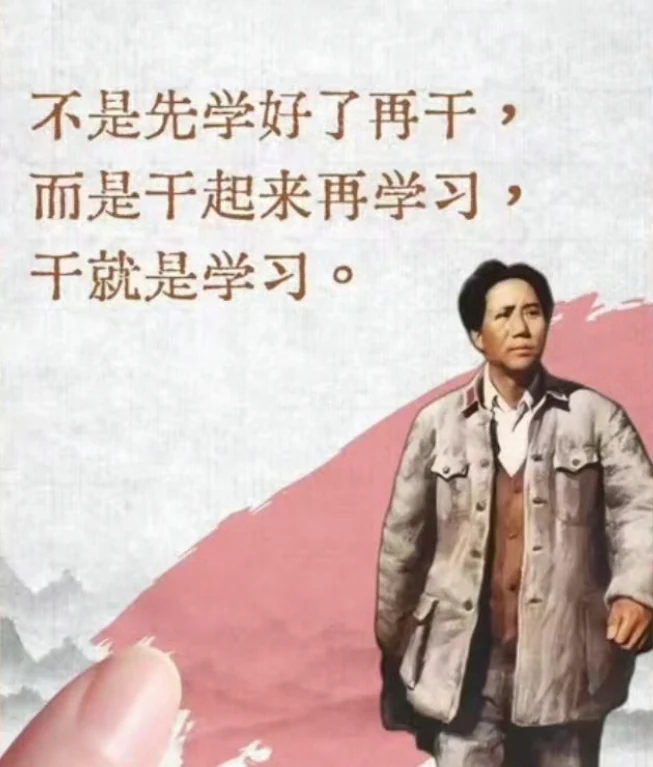
选择简单，容易试试，容易坚持的方法
虽然我以前讲过我减肥的核心思想：#353、选择了新的生活方式。不过还是有很多人想知道我具体是怎么减掉二十斤而且几年都没有反弹的。
改变生活方式其实挺难的。所以，一定要选择简单、容易实施、容易坚持的方法。所以大家先记住这一句话就行了：“不管吃啥饭，主食减一半”。为了达成这个目标，我把家里的饭碗全部换成了最小号的。
大家肯定会有疑问：碗小了，难道不会多吃几碗吗？
人是有惰性的。多吃一碗需要付出额外的动作：站起来，走过去，再盛一碗，端回来。开发过 APP 的人都知道，某个功能的触达哪怕只增加一次点击，去用这个功能的用户都会减少很多。懒惰可以让人变胖，我们也可以利用懒惰减肥。
还有人认为：饭碗小了，难道不会多吃菜吗？
中国人吃菜是下饭的。主食减少，吃菜很难吃多。就算吃菜多一点，主食摄入减少也还是会有助于减肥。
以上并不是我的臆想。此前西方已经有很多研究发现只要把餐盘减小，人们的取餐量就会变小，就能减肥。洋人吃饭用餐盘，我们用碗，一样的。
还有一些朋友跟我说只换家里的碗没有用，因为他们平时应酬多。
换家里的碗是一种仪式，一种态度。哪怕一周只在家吃两顿，也要把碗换了。换了碗至少可以起到每周两次提醒你的作用。久久为功，不求速成。慢慢地在外面自然也就吃的少了。我现在在外面吃饭的时候，见到饭就先用筷子在中间划一道，拨开一半不吃。
那么，吃的少了，是不是会饿？肯定会的。尤其是刚开始的几个月。我买了很多饱腹感较强的食物，逐一实验，最后测试出来一种最强王者：烤鹰嘴豆。注意是烤的不是炒的。
主食减半后，吃完午餐，下午四点左右可能会饿。这时候只要抓一小把鹰嘴豆，不到 20 粒，吃下去，再喝两口水，立即就不饿了。
有个朋友学了这招后跟我反馈：“烤鹰嘴豆确实吃一点就饱，但是寡淡而无味，很不好吃。”
我对他说：“用来减肥的东西，如果居然好吃，你能忍得住只吃一小把吗？”
做聪明人，下笨功夫
最近群里发生了两件事。
一个人说自己给家里四根网线装了水晶头。其中两根网线能正常工作。另外两根网线接到路由器上后，路由器显示没有网线接入。他说网线是新的，坏的可能性不大。他怀疑是水晶头没接好，所以剪掉换了新水晶头，但还是发生同样问题。他认为不太可能是水晶头没接好，问题应该出在别处，所以问应该怎么排查故障。我说能测试确认的就不要猜，让他买个测线仪去测一下水晶头是不是真接好了。于是他就去买了一个测线仪。结果就是水晶头没接好。
另一个人问北京哪家医院擅长诊治高血压。因为他家里有人高血压，在老家各大医院检查了但是没明确病因。我让他确认是不是没有确诊为原发性高血压，而是怀疑别的原因引起了高血压。他又问了一下，发现已经确诊就是原发性高血压。
我们人生中遇到的大部分问题都没有多复杂，一板一眼去处理就行了。但这对人类来说其实也挺难，却恰好是 AI 擅长的——即便 AI 未来没有范式上的革命，也不会比人类更聪明，但在老老实实认认真真上还是比人类有优势。
做聪明人，下笨功夫。
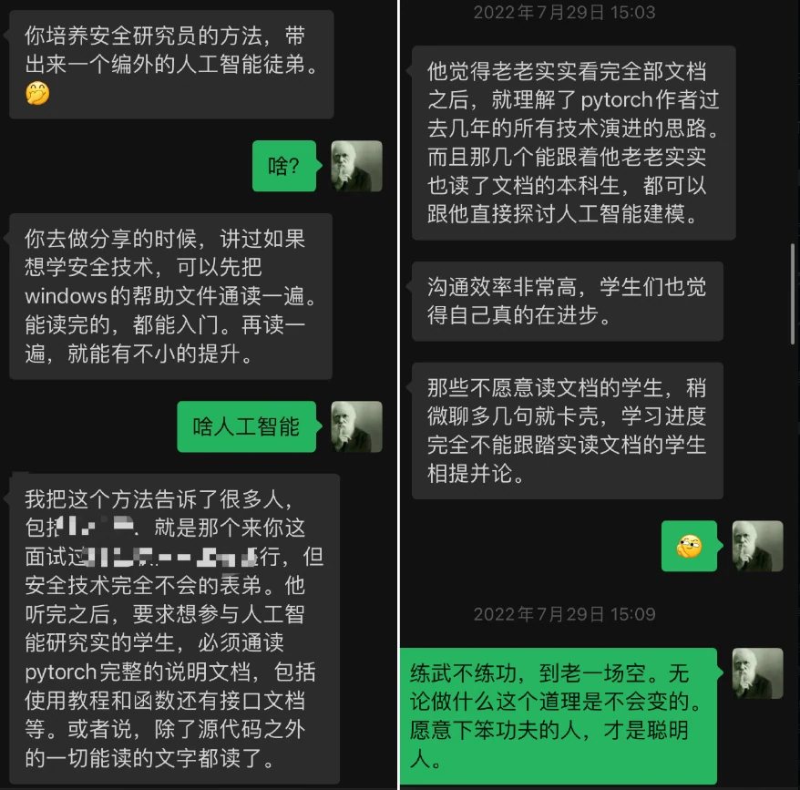
鉴别仿制药的质量一个思路
我也不知道怎么鉴别仿制药的质量。
不过炸弹项圈理论在这个问题上也可以参考。比如，在选择药物的时候，可以先查查：药企所在地是哪儿？该药企为当地贡献利税多少？解决就业多少？这个利税和就业数字对当地来说是不是很大？该药企对当地是不是很重要？这个地方历史上对各类产品质量问题是什么态度？
选择少有人走的路
罗伯特·弗罗斯特在《林中路》中写道：“一片树林里分出两条路——而我选择了人迹更少的一条，从此决定了我一生的道路。”
选择少有人走的路，选择困难的路，这是通向成功的唯一方式——因为大多数人都能抵达的目标不会被定义为“成功”。不追求成功当然没什么错，但如果你希望获得成功，就要选择踏上那条困难的路。
AI 发展历程中的一个标志性事件
Google 看来是真的自己革自己的命了。
不仅在搜索主界面提供了 AI 模式的标签，甚至还会随机弹框提示用户切换到 AI 模式。而切换到 AI 模式后，用户看到的不仅不是传统搜索界面，甚至也不是搜索界面加 AI 摘要，而是以 AI 对话框为主体，搜索结果则变成配角。
这种决策肯定是不容易做的，面临的内部阻力难以想象。然而居然还是做了，那大概是有了必须要做的理由。
这绝对是 AI 发展历程中的一个标志性事件。
看事物的角度
同一个问题，从公共卫生视角来看，和从具体个人视角看，可能会得出不同的结论。
假设存在某种措施，有 10% 的可能性提高 3 年的预期寿命，或者有 30% 的可能性增加 10 % 的肌肉，或者有 20% 的可能性每天延长 30 分钟睡眠。但采用该措施每年需要花 4 万元。从公共卫生的角度看，该措施可能是不值得提倡的。
充分必要条件
我们小时候写作文都写过记叙文、说明文、议论文，等等。批判一个东西，自然要用议论文。但当代互联网是一个抒情的世界，所以很多批判也用抒情散文，厉害一点的甚至用抒情诗。
比如最近这些年很多人都批判“吃得苦中苦，方为人上人”这个旧价值观。要是讲理的话，你可以：
1、“就算不吃苦中苦，也能为人上人”。这是最讲理的一种方式，直接否定“吃得苦中苦，方为人上人”的逻辑，证明“苦中苦”不是“人上人”的必要条件。
2、“就算吃了苦中苦，也不一定能为人上人”。这有点滑头，原命题的意思是“苦中苦”是“人上人”的必要条件，这里强行把原命题理解为“苦中苦”是“人上人”的充分条件。
3、“我不吃苦中苦，我也不想为人上人”。这其实没有否定原命题，而是表示我躺平了，我不想做人上人，你也别让我吃苦中苦。虽然这个论证偏了，但好歹也算讲道理。
4、“我就算吃了苦中苦，我也不想为人上人”。这个和前者一样，也没有否定原命题，但站位就高了，往圣徒方向走——“我吃苦中苦不是为了做人上人，而是为了、、*”。这虽然让人觉得嗯嗯、嗯嗯、嗯嗯嗯，但是也能自圆其说。
所以上面这几种我觉得都还行吧。但还有不少是这样的：“你怎么能让我吃苦中苦呢？你怎么能想做人上人呢？”
解决问题第一步
解决问题的第一步是直面问题。各种类型的自我欺骗，虽然可以让自己暂时免于面对现实问题的痛苦，但也就失去了解决问题的可能。自我欺骗的时间越久，问题就越不可能解决，于是需要更多的自我欺骗。
实践步
经常有人在我微博上夸我历史文化知识丰富什么的。搞得我极度惭愧。
我跟你们讲过 X、Y、Z 理论。我在这方面顶多是个 y。你们觉得我很厉害，是因为你们中学语文课就没好好上。
你去买一本成语词典，找最薄最小的，整本字数加起来不到一本小说那种。花点功夫把这个看完，你就能欣赏那些真正的 X 了。
想了很久还是没有想明白为什么是看成语字典，希望tk能解惑
没错，就是这样，这就是原因。绝大多数人都是这样，思而不学，宁可“想了很久”，也不愿意找本成语词典看一下，自己寻找答案，来肯定或者否定这个观点。
置装>发型>健身，是男性提升外型吸引力由简到难的三条路径
早上遇到一个小伙子，左手抱着一大捧玫瑰。玫瑰是粉色的，外面还裹了层白纱，显得格外娇媚可爱，让人想起《异人之下》里的夏禾。
小伙子个头不高，剃着板寸，穿了件绿色T恤。T恤有点小，紧绷在身上，就像泳衣，让他本来就有些凸出的肚子显得格外凸出。
他左手抱着花，右手举着手机，一边走一边发微信。走了一会儿，他忽然加快脚步，走向一个垃圾站，把花丢了进去。
对这个小伙子以及很多男青年来说，也许只要花上几百元，请发型师帮忙设计个发型，再稍微留意一点自己的衣服，也许这束花就不必扔了，甚至还能在别的地方省下不少钱。
写优缺点
群里有两个粉丝给了我一些反馈。
有一位同学说他在申请读研之前，先根据我微博中提到的方法去做好功课，然后给一些老师写了申请邮件，结果收到好几位老师抛来的橄榄枝。他现在的导师主要是带博士，轻易不招硕士。他问导师为啥会为他破例。导师说自己每年会收到很多申请读硕士的邮件，其中很多邮件都表示自己未来要进一步读博士，但大多数人都没写怎么实现这一目标，而他不仅写清楚了这一点，并且写到了导师在其中能帮到什么。
另一位粉丝说他去实践我说的“拿一张纸，左边写自己的 5 点优势，右边写自己的 5 点劣势，然后根据这张纸再看适合做什么”的时候，发现这件看似简单的事情其实不太容易，因为需要强迫自己去面对自己的缺点，而这会让他觉得痛苦。我给他看了我很多年前写的一段话：
佛祖：八戒，你有缺点么？
八戒：当然有，谁没有缺点呢。
佛祖：你觉得贪吃是你的缺点么？
八戒：人都得吃饭，不吃饭得饿死。饿死事小，误了取经事大。这怎么能是缺点。
佛祖：你觉得好色是你的缺点么？
八戒：好色？谁不好色？就说佛祖您老人家加入组织前私生活不也挺那个啥的么？再说，色也是咱们佛家的方便法门。
佛祖：你觉得懒惰是你的缺点么？
八戒：一路上老猪牵马化斋干了多少活儿，说我懒惰真是太没良心了。
佛祖：这么说你没缺点？
八戒：当然有，谁没有缺点呢。
承认有缺点并不难，因为"谁没有缺点呢"。但是面对某个具体的缺点就不同了，需要克服一些心魔。
考虑到“世界是个草台班子”，作为草台班子的一员，你甚至并不需要在所有时间所有事情上都那么认真努力，只要在一些关键的事情上，在人生的某几个重要时间节点用心一点，就能在草台班子里脱颖而出，就能有更好的人生。
除心魔
有人看到这两天关于韦东奕的传说，感到有些害怕。因为他们觉得自己没办法和这样以一挡百的天才竞争——如果天才多了，普通人是不是就没有活路了？
先不说人类智力的正态分布问题以及是不是可能出现很多天才——假设，很不幸，你是一个残疾人，你甚至没有能力完全靠自己生活，每个月还需要领取残疾人补贴。现在，你是否希望世界上所有其他人也全都是你一样的残疾人？
如果世界上所有其他人也全都是和你一样的残疾人，固然大家都“一样”了，然而你也就没有残疾人补贴可领了。不仅如此，因为所有人都是残疾人，整个社会的生产力远不如现在。所以你的生活实际上会比没有残疾人补贴可领还要糟糕很多很多——事实上，每年的粮食产出是否还能养活这几十亿人都很不好说，你有没有机会成为能吃饱饭活下来的人都很不好说。
如果世界上 79 亿人里有 78 亿都是各种各样的天才，我们即便作为那 1 亿最不行的人，生活也会比现在好很多倍。
但是，如果“见不得别人比自己强”的心魔不除，那么再丰富的生活都无法让我们获得快乐和平静。
石器时代部落里的勇士和普通人的生产力相差不会超过十倍。而今天科技领域顶尖人物和平凡之辈的生产力差异至少是百倍千倍。每次科技进步都会让人和人之间的生产力差异变得更大。未来这个差异还会继续增加。除非我们愿意放弃科技进步，否则，这个趋势不会改变，无论你开心不开心。
电子时代之前，假设每个歌手可以给 200 个人提供娱乐服务。那么，10000 人的城市，就需要 50 个歌手。好听不好听都得听，有个人唱给你听就不错了。
现在，一个歌手所能服务的人数几乎是无限的。而人们一定会选择最好的。所以，即便考虑不同风格偏好，在每个风格分支上，也一样有极为明显的头部效应。
泰勒·斯威夫特一张专辑可以卖一千万份，一年的收入可以有一亿多美元。这在台上唱台下听的时代，是绝无可能的。这些听众数和收入，会相对平均地分给成千上万平庸的歌手。
这种范式改变对大部分唱得没那么好听的歌手当然很不理想。但对听歌的人来说当然非常理想。所以技术进步到底好不好，也要看你站在什么立场上。
互联网行业几乎都是这种范式，绝大部分人去选择使用少数最好的产品。而为了做出最好的产品，只需要少数企业招聘少数最好的人。
想明白这一点，可以想明白很多问题。比如为什么毕业生求职难和企业招人难会同时存在。
可以先试试晚饭前来半个小时的有氧运动，在室内做做深蹲就行。另外，国内有些医院也开始设睡眠障碍科了，可以去看看。如果当地没有，心理科一般也接这活儿。
我从小就洗冷水澡，冬天也是。可以先从小腿开始，会容易一些。
除心魔
网上讨生活的人，需要搞清楚自己的受众是特定群体还是非特定群体。
当你的受众是特定群体的时候，某些讨好受众的操作就可能会得罪公众。这在 2018 年以前尚不是一个太大的问题。但在 2018 年这个巨婴崛起之年以后，这么干就很危险了。
讨好受众，这是为了挣钱。别得罪公众，这是为了保命。
我应该做什么
每次有人问“我应该做什么”。我都会让他们拿一张纸，左边写自己的 5 点优势，右边写自己的 5 点劣势，然后根据这张纸再看适合做什么。这些人中的 90% 都不会做这件事。这可能是个死结：愿意动一点点点点点脑子思考问题的人，多半就不会问“我应该做什么”。
最核心的还是就业者本人
看到有人说幸亏自己出生的早，认为如果现在毕业可能就找不到工作了。
这种可能性当然存在。就业受很多外部因素影响，不过最核心的还是就业者本人。如果刘备去茅庐的路上吃坏了肚子无功而返，那诸葛亮大概就当不上蜀汉丞相。但诸葛亮还是诸葛亮，也许会跟他哥哥一起去孙权那里，或者跟他弟弟一起去曹操那里。
我参加高考那年，全国 18 岁的人口约 1900 万，专科和本科加在一起录取了 100 万人。也就是说我的同龄人每 19 个有 1 个能上大学。而 2020 年全国 18 岁人口约 1400 万，高考录取了其中的 1000 万人。
所以，生的早上二本，如果生的晚也许就能上一本，再晚一点没准就双一流了。能找到工作的，晚生些年大概率还是可以找到工作。
糟糕的情绪也可以成为教材
9 月 4 日，粉丝群一片哀嚎。我对大家说这么哀嚎就和韭菜们没两样了。9 月 5 日，群里接着哀嚎，而且嚎得更厉害。我只能更严肃地制止。我告诉大家这种哀嚎是毫无信息量的情绪宣泄，每一条哀嚎都会让其他人更不冷静，从而激起更多哀嚎，然后共振，把所有人的情绪放大，最终害人害己，没有任何好处。投资最大的敌人就是情绪，管理不好自己的情绪，也就管理不好自己的钱。人类的自由意志非常脆弱，甚至空气质量都会影响人的投资决策。
9 月 12 日，我让大家回顾前几天群里的哀嚎，重温当时的气氛，审视自己的内心。只要我们别轻易放过自己，糟糕的情绪也可以成为教材，帮我们增强情绪管理能力，避免成为一惊一乍的韭菜——在投资以及很多比投资更重要的事情上。
另外，大家也可以回顾一下自己关注的财经博主们在 9 月 4 日和 9 月 5 日的观点。
傲慢
傲慢是对成功者的诅咒。因为成功者常常搞不清楚成功的原因是什么。
当我们用一个思路在一件事上取得成功后，常常会放弃思考，草率地认为这个思路对其他事情也会有效。但实际上这个思路可能只对特定的事情有效，甚至可能只在特定时间和环境下才对特定的事情有效。
但我们会认为自己找到了一条万能的成功之路，直到遭遇失败。
如果诅咒非常强烈，还会让我们即使在遭遇失败后仍然坚信眼前的失败只是成功路上的偶然。
阅兵
有人说阅兵花多少多少钱。
阅兵自然要花钱，那么多人，一天三顿饭也是钱。但不阅兵，战士也得一天三顿饭吧？飞机参加阅兵要烧油，平时飞就不烧油了吗？坦克阅兵也就烧点油，平时训练不光烧油，打一发穿甲弹就几万块。干啥不得花钱呢？十几亿人众筹拍电影，能比阅兵好看吗？
而且咱们工作、纳税、创造财富，然后才有了这些军队和武器，虽然咱们开不了飞机坦克，但能看看是不是比看不了好？这道理不难想明白吧？
不管你是精致的利己主义，还是精致的利他主义，最关键是得精致一点。
精致一点，你就能想明白造岛、造航母虽然花钱，但对你有好处。读一点欧洲历史，看看当年英国皇家海军、西班牙无敌舰队什么的，就能想明白，合理的军力所带来的好处可以惠及所有国民。无论你是哪个阶层，都有好处。
真想不明白，就算帐吧：一艘航母三百亿，全国平均每人也就出二十多块钱。就算你纳税多，贡献大，算你出了八十块——八十块看航母下水也值啊。
时代红利
每个时代都有红利。每个时代的红利都得凭本事（眼光、胆量、勤奋、运气）才能吃到。你看，诺基亚就没有吃到移动互联网的红利，还让红利把牙给硌了。
一拍脑袋
整体来说，大家对这次阅兵的评价还是正面的居多。但奇怪的声音也有一些。比如有些人认为在军事上投入这么多是走苏联的老路。
这就属于“一拍脑袋”“大概一想”了。苏联在冷战后期军费大概占国民生产总值的 17%，而中国现在也就 1.7%，只是苏联的十分之一而已。
苏联当年把资源大量投入在能源、冶金、机械制造这些领域，消费品生产只占整体工业的 25%，所以相对其经济体量来说，民生是比较差的。经历过苏联解体那段时间的人，大概都听说过当时东北边贸黑市很发达，很多中国人用羽绒服、热水瓶等轻工业品从那边换柴油、木材等。但中国今天的工业发展比较均衡，消费品产能不光足够国内消费，还能大量出口，最近十年居民消费接近 GDP 的 40%。这些情况和苏联当年是完全不同的。其实即便不知道这些信息，根据自己的生活感受也不应该做出那么情绪化的评价。
每个人都有自己的问题和烦恼。但情绪无法解决问题，无论把情绪投射到哪里都无助于解决问题。
因此，与其被情绪左右，不如多花点时间了解事实，做出更理性的判断。
生育成本
女性承担的生育成本大大高于男性。所以在择偶上女性倾向于长择，而男性倾向于短择。也就是说：女性会努力寻找尽可能优质的长期伴侣，男性则是“优质最好，差的也行，反正能跑，跑了再找”。这是演化决定的，写在基因里，是每个人的出厂设置。
心理学家拉塞尔·克拉克与伊莱恩·哈特菲尔德做过一个研究，请一些青年男女分别向路人发出三种邀请：
1、“今晚愿意和我一起出去吗？”
2、“今晚愿意来我的公寓吗？”
3、“今晚愿意和我一起睡觉吗？
当这些邀请由女性向男性提出时，被接受的比例是：56.3%、62.7%、71.0%。而当男性向女性提出这些邀请时，被接受的比例是：50%、6.7%、0%。
也就是说，男性很容易接受女性的邀约。而且对于性行为的预期越高，就越倾向于接受。请注意 56.3% vs 71.0% 的对比，这意味着在男性甚至不愿和某个女性约会的情况下，但性交却可以接受。而显然女性则没那么容易接受男性的邀约，并且对性行为的预期越高，就越倾向于拒绝。也就是中国俗话说的：“女追男隔层纱，男追女隔座山”。
所以，女性只要稍微主动一点，求欢的成功率就非常高，这和个人魅力关系不大。当然，人们总是可以忘记这一点，并自我欺骗。
低风险本身就是一种收益
我给人看了过去几十年里标普和纳斯达克的对比，本意是告诉大家标普的波动小，但很多人完全不理会这一点，反而接连赞叹纳斯达克的涨幅大——就像看了梅毒防治宣传片，唯一感受是里面的卖淫女真漂亮。
收益是简单的数字，可以直接被感知。而风险则没那么直观。所以大部分人可能只知道“风险”这两个字，但并不明白这两个字意味着什么。
假设有年利率 5% 的无风险收益——每年 5% 看起来好像很低对吧？但如果真的无风险，你就可以用一千倍一万倍的杠杆来放大收益。只要杠杆的借款利率小于 5%，这个买卖就稳赚不赔，想赚多少赚多少。
当然，没有什么是无风险的，哪怕银行存款，风险也不是零。举这个极端的例子是想帮助大家理解一个道理：低风险本身就是一种收益。
明白这个道理后，当你获利离场看到还天天涨也不会后悔，而是意识到用少赚的钱购买了更小的风险；如果恰好撤退在峰顶，也能意识到是走了狗屎运，下次可能就没这么好的运气。不论赚多赚少，赚钱就比亏钱强。
如果把人当人看，你就永远也想不通
在很多情况下，如果把人当人看，你就永远也想不通。你会觉得：人怎么这么蠢呢？人怎么这么坏呢？人怎么能这样做呢？于是你永远过不去某个坎。
人也是自然的一部分。你遇到火山地震，这属于自然灾害。你让大象给踢了，是自然灾害。那么由人造成的问题，大如火山地震，小如惊马疯象，其实也是自然灾害。
既是自然灾害，那就用对待自然灾害的态度，防灾减灾抗灾。不必投入感情在“人怎么能……”这种想法上。
站在规律一边
大部分规律都是很容易被忘记的废话。比如：做事要花钱；做大事要花大钱；花钱要有钱；花大钱要有大钱。这几句话显然都是废话，但又很容易被忘记。只要我们别忘记这些废话，就能掌握规律，站在规律一边，遵循孔子的教导，静静地坐在河岸上，耐心等待愚者的尸体飘过来。
清晰的思维和清晰的表达
前阵子有人跟我说他自认为“也算努力上进，但还是感觉一事无成，钱不够花，过得没有意义”，“像是努力奔跑，却又在原地踏步”。他表示自己“上班也算认真负责，下班陪伴家人，平时不玩游戏、不刷短视频，甚至很少看电影，但凡有点时间都在阅读”。
我问他：你努力的目标是什么？他说是“有一定的社会地位和拥有一定的资源，可以做点自己想做的事情，并为了小孩以后的发展，可以提供更大的支持。”
可能不少人都和他有类似的困惑。所以我让他思考的问题可能对大家也有帮助：“你认为（上班认真负责，下班陪伴家人、平时不玩游戏、不刷短视频、很少看电影，有点时间都在阅读）就能实现（有一定的社会地位和拥有一定的资源，可以做点自己想做的事情）吗？”
他这时候才恍然大悟，意识到这两者之间没有必然的因果关系。
我经常说的一句话是“请用一个包含‘因为’‘所以’的完整句子把你得出结论的逻辑写出来”。有趣的是，一些人甚至会被这句话触怒，虽然他们也不知道自己为什么生气。==用模糊的语言进行模糊的思考不仅是很多人的日常习惯，也是回避现实的方式。而用精确的语言逼着自己面对现实，往往会带来痛苦。==
我们小时候会听到很多“努力学习将来就能如何如何”的话。很多人长大后自己也会发明一些同样模糊的逻辑说给自己听。但宇宙不是这样运作的。
如果你要去南极，应该怎么办？“坐船可以去南极”，是这样吗？那么你努力地坐船，在公园的湖里坐船，在长江上坐船，坐了很多船，还是没有到南极，这又有什么奇怪的呢？你得查从哪儿坐什么船才能去南极。当你知道从乌斯怀亚坐邮轮可以到南极，然后再看怎么去乌斯怀亚。当你知道可以从布宜诺斯艾利斯去乌斯怀亚，那么再看怎么去布宜诺斯艾利斯。每一步都准确清晰，最终目标才有可能达成。
靶向药如何购买
一位粉丝遇到的问题：
1、一些价格较贵的靶向药对他岳母的病情效果很好，但属于超适应症用药，所以公立医院不给开。
2、虽然私立医院可以开，但他岳母的商业保险没有覆盖私立医院。
所以虽然他岳母有商业保险，但现在仍然只得自费购买药物。
大家有什么思路？
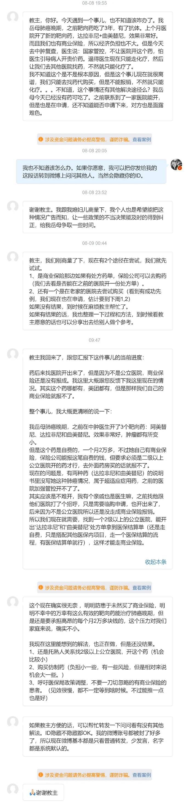
应对喷子
2020 年 8 月 20 日，也就是 5 年前的今天，游戏科学首次发布《黑神话：悟空》的实机演示视频。之后，又分别在 2021 年 2 月 8 日、2021 年 8 月 20 日、2022 年 8 月 20 日发布了 3 个演示视频。
每次那些美轮美奂的视频发布后，都是毁誉参半。固然有人惊叹，有人赞美，也有人说抄袭《只狼》，有人说只有特效没有玩法，有人说最后八成会凉。
2024 年 8 月 20 日，游戏正式发布。第一天预售额达人民币 4 亿元，首月销售超过 2000 万份，成为历史上销售速度最快的游戏之一。
又一年过去，喷子们大概已经忘记了自己当初毫无证据的负面评价，快乐或者痛苦地过着他们的生活，就像什么都没发生过一样。
所以，对待喷子，也应该像什么都没发生过一样——或者，就当成一群吵闹的狐獴吧。
网上大量的婚恋相关负面信息
之前看到有人说被网上大量的婚恋相关负面信息搞得不想谈恋爱了。
网上存在大量各种各样的负面信息是很正常的。幸福的人不会跳出来说“我和男友感情特别好，请问应该怎么办？”“结婚二十年没吵过架，请教大家夫妻吵架一般吵什么？”在网上发帖的，自然大多是遇到问题的。
婚姻里更普遍情况大概还是下面这张图所展现的：
幸福不幸福和结婚不结婚多少会有一点关系，但关系没那么大。一般来说，各自都能过的好的人，在一起才能过得好。自己一个人都过不好的，跟别人也过不好。所谓“互补”的情况可遇不可求。很多人会觉得单身时更幸福，那是因为单身的时候大家对幸福的期待没那么高。
你一个人住，碗堆在水池三天不洗，你不会觉得这就不幸福了，你不会因此怪任何人——也没什么人可怪，真要怪就只能怪自己了。但结了婚，如果回到家看见水池里堆着碗没人洗，你就会觉得这个家庭生活出了问题，而且一定不是自己的问题。然后你就觉得不幸福了。
逻辑
某个男人或者女人说自己被某个男人或者女人怎么怎么着了，我们应该相信这件事吗？
首先，哪怕是被公安机关抓捕的犯罪嫌疑人，在法庭上作为被告也是有权力说话的。在另外一方的男人或者女人说话之前，或者至少在一个权威第三方发声之前，我们看到的都叫一面之辞。
坚定地相信一面之辞，甚至去滥施正义，贸然攻击另外一方，是不太理智的。但是，这并不代表我们应该否认该类事情的存在甚至是广泛存在。是否相信这类事情的存在，基于的不是我们对陈述这件事的男人或者女人的信任，而是我们的经验和常识。
这就是我经常说的：此事未必为真，世上必有此事。
GPT-5 的表现
GPT-5 的表现大大低于预期可能说明基础模型的能力提升开始进入瓶颈期，老路线的潜力被挖得差不多了，再要突飞猛进得有范式改变。
这对中国显然是好事。无论是芯片还是模型技术有了更多的追赶时间。
这对以 Google 为代表的有丰富落地场景的公司来说也是好事。模型能力停滞那就看谁能把应用做好了。
这对人类来说更是好事。距离失业和被天网追杀都远了一些。
安慰自己
前几年有个人说觉得自己很普通，很平庸，很丧。我为了安慰他，就给出了一个数字：2017 年中国年收入超过 12 万需要进行个人所得税申报的人占全国总人口的 1%。然后果不其然，就有很多人请注意是很多人跳出来说“交税的都是我们这些白领”“很多老板都不交税”。
其实道理很容易想：即便不交税的老板和交税的白领一样多，也占 1%，即便我们相信这么荒谬的事情，这俩 1% 加在一起也就 2%。所以这根本不是想不清楚的问题，是不愿意想。想清楚就不舒服了。
招行在 2019 年的年报里也给出了一组数字：客户总数 1.44 亿；账户中资产过 50 万的客户有 264.77 万，占客户总数的 1.84%。
有次乘出租车，路过一个小区。司机告诉我这里面住的都是有钱人，“将来再造反，我就来这儿干丫的”。我对司机说：“您是个体出租，好歹自己还有辆车。等造反了，周围贫困县的农民进了城，您也跑不了哇”。司机想了想，说好像也是这个理儿。
人人都觉得自己是贫下中农。在贫下中农眼里，你们是革命对象。
辩论合辑
学习辩论无助于吵架
很多人都认为学习辩论会有助于吵架。其实恰恰相反。经过辩论训练的人吵架很吃亏。因为每句话说出口之前都会想：我的表意是否清晰？逻辑是否正确？是否有足够的证据支撑？是否前后矛盾？是否以偏概全？是否可归缪？一句话生产出来，还要质检半天才能出厂。
而对方很可能完全没有这些成本开销。
辩论训练就是思维训练
这么多年过去，对辩论赛的反对意见一直没什么变化，总是集中在“人要有自己的立场啊，怎么能抽签抽到一个观点就去捍卫呢？”
辩论赛，关键是这个“赛”字。
你在街上打人，那是不对的。不但不对，警察还要抓。但散打比赛也是打人，然而警察不抓，国家还鼓励，奇怪不奇怪？
再告诉你一个秘密：世界上有一种职业，不但不是根据自己的立场辩论，而且还是收了谁的钱就替谁辩论，甚至替杀人放火的罪犯辩论。怎么样？你的小心灵能承受吗？
对年轻人来说，辩论训练最大的好处就是能让你更容易把事情想清楚。看到类似“人要有自己的立场啊，怎么能抽签抽到一个观点就去捍卫呢”？你能很快反应过来：哦，又有人在瞎扯淡了。
发个老照片支持现在的校园辩手们。
网上辩论不要指望分输赢
有谁见过网上辩论，后来一方真心诚恳认输的？以互联网之大，之无奇不有，但这种事，我真没见过。竞技辩论（如辩论赛）和实用辩论（如法庭辩论、竞选辩论）这类现场辩论，因为没法闪躲，所以能分输赢。但网上帖子对帖子的辩论，能闪能避，能混能蒙，能装聋作哑，能自淫自乐。
辩的越热闹事实越模糊
即使是入室强奸拦路抢劫的，遇上狠角色，被砍残了，也会去报警，八成还会起诉，要求民事赔偿。微博上辩论的，无论起先多么得意，姿态多么高，打多少个“哈哈”的表情符号，一旦被掐住了抵死了，也会装作什么事都没发生。所以，能热热闹闹的辩起来的，一般是双方都没掐住七寸的。
看到一些对《南京照相馆》等影片很奇怪的评论。有人觉得拍这类电影属于“仇恨教育”。有些人则把看电影和“阶层”联系上，认为“有钱人去日本旅游，没钱人去看反日电影”。
二战期间美国本土基本没受到创伤，但美国拍摄的二战题材影视作品也数以百计，去年还上映了一部大制作剧集《空战群英》。中国在二战中受到的伤害比美国大多了，拍几部铭记历史的电影有什么奇怪的呢？“前事不忘，后事之师”和仇恨教育之间有着本质区别。
我认识不少有钱人，确实有些经常去日本旅游，但绝大部分人对抗日战争的历史有清晰的认知。“去日本旅游”和看抗战题材电影没有任何矛盾之处——我们作为战胜国的国民，去战败国看看有什么不可以的？
事实与观点
什么是事实、什么是观点？看起来好像很简单，但现实中要分清楚，往往需要我们能暂时抽离自己的情感。这对很多人来说是极为困难的。
佛经里讲戒律的经书最重要的一本是《四分律》。《四分律》之外又有《经分别》。《四分律》和《经分别》的关系大致相当于法律条文和司法解释。《四分律》开篇就讲了最重要的四种戒律。这四种戒律一旦犯下就会立即失去比丘（尼）身份，而且无法通过任何修行、忏悔的方式赎罪，也就是说永远不能再加入比丘（尼）的行列。
这四种戒律首当其冲的是淫戒。《四分律》和《经分别》对淫戒的记录非常细致。比如，世尊如来最开始制定的淫戒只有一条：“若比丘犯不净行行淫欲法，是比丘波罗夷不共住”。
“波罗夷”就是指前面提到的一旦犯下就立即失去比丘（尼）身份的大罪。如来强调说：“宁持男根着毒蛇口中，不持着女根中。何以故？不以此缘堕于恶道。若犯女人，身坏命终堕三恶道。”
结果呢，有个比丘找来一只母猴……如来知道后很生气，就说我已经说了犯戒就要被逐出山门，你怎么还敢？这个比丘自以为找到了法律漏洞，就狡辩：你之前只说不能找女人，我找的是猴。
犯了错误，还狡辩，自然没有好下场。于是如来召开全体比丘大会，在会上宣布了这个比丘的罪行：“……此非相应法、非随顺行、非威仪、非沙门行、非清净行、非所当为……”从这一连串排比短句也能看出如来有多生气。显然，作为比丘不仅要遵守戒律表面的文字，更重要的是领会精神。
但也就因为发生了这件事，如来对戒律又做了高度的细化。比如规定“女”不仅是人类的女性，还包括非人类的女性，比如龙女、魔女，也包括雌性动物。强调了不仅“女”算，“男”、两性人也都算。强调了不仅生殖器算，肛门、口腔也都算。
但如果仅仅只是这些也还可以理解为是为了补上法律漏洞。但经书后面又有大量更加难以理解的内容。比如：和基本完整的尸体犯“不净行”也是波罗夷罪，但和大部分被野兽啃食的尸体犯“不净行”则不是波罗夷罪。如果你们看到这里觉得已经很离谱，还有一些我甚至不太敢翻译的：
“一比丘见死尸，其身之生支周围皆疮，彼以为：「若如是者，我当不犯也。」以己生支入彼生支，由疮出。”
“一比丘欲念炽烈，以生支触泥女像之根。”
“一比丘至墓地，见一被切断之头，入生支于张开之口中而触。”
“一比丘对一女人有染着心，彼女死而被弃于墓地，其骨分散。时，彼比丘至墓地，集其骨（作）女根而入其生支。”
（“生支”“根”都是指性器官）
现在回到我们的主题上，什么是事实、什么是观点？
我看了佛经的这些内容后，首先想到的是：“怪不得印度强奸案那么多，这些还是跟着如来修行的比丘，居然都这样。”这显然是我的观点。那么这个观点基于的事实是不是“跟着如来修行的比丘居然都这样”？
不是的。事实仅仅是：佛经里详细记录了很多奇特的性行为，包括恋兽癖、恋物癖、恋尸癖，等等。不能把这个事实替换成“跟着如来修行的比丘居然都这样”。因为写经书的人可能只是为了便于理解，所以每次都用“一比丘”来举例子。这种可能性是存在的，我们没有证据可以否定这种可能性。
所以，“跟着如来修行的比丘居然都这样”也是观点，而不是事实。
事实与观点
对待武大的事情，和对待所有事情一样，最起码的，是要分清什么是事实，什么是观点。“这个苹果比那个苹果大”，这个叫事实。“我觉得大苹果好”“我觉得小苹果好”，这叫观点。
武松回到家中，看见武大的灵位，他虽然既意外又悲伤，但他首先说的是：“嫂嫂且住，休哭！”然后问了三个问题：“我哥哥几时死了？得甚么症候？吃谁的药？”
潘金莲说是心疼病，但并没正面回答“吃谁的药”这个问题。于是武松又问了三个问题：“我的哥哥，从来不曾有这般病，如何心疼便死了？”“如今埋在那里？”“哥哥死得几日了？”
这时候，对于武松来说，事实是：武大死了，观点是：武大死的可疑。他形成这个观点的理由是：潘金莲没有正面回答“吃谁的药”这个问题，而且两人对话时王干娘出来打岔。
所以，第二天一早武松再次向潘金莲了解情况：“嫂嫂，我哥哥端的甚么病死了？”潘金莲仍然说是心疼病。于是武松又问了三个问题：“却赎谁的药吃？”“却是谁买棺材？”“谁来扛抬出去？”
然后，武松去找何九叔，问出一些信息：
1、何九叔去给武大收敛时，西门庆给了他十两银子，请他“所殓的尸首，凡百事遮盖。”
2、武大的尸体“七窍内有瘀血，唇口上有齿痕，系是生前中毒的尸首。”
3、武大火化后“骨殖酥黑，系是毒药身死的证见。”
在知道西门庆贿赂何九叔之后，武松也没有下定论，而是问何九叔：“奸夫还是何人？”于是何九叔告诉武松：卖梨的郓哥曾和武大一起去捉奸，可以问郓哥。
然后武松就带着何九叔一起去找郓哥，了解到了潘金莲和西门庆通奸的情况。到这时候，对于武松来说，事实是：何九叔作证武大死于中毒、郓哥作证潘金莲和西门庆通奸，观点是：武大的死可能和潘金莲和西门庆有关。
所以，武松带着何九叔和郓哥一起去县官那里报案。但县官包庇西门庆，于是武松决定自己去处理。
武松先请来了街坊四邻，在邻居们的见证下，问出潘金莲和王婆的口供，让二人签字画押。然后杀了潘金莲，又去杀了西门庆，用人头奠武大之灵。但武松没有杀王婆，而是把她作为人证，和口供一起带到了县衙。
武松这暴脾气的人，亲哥哥死了，他也能分得清事实和观点。
事实，观点，情绪，立场
想想招
有些研究认为吃鱼比吃鱼油补充剂要好，可能是 Omega-3 和鱼肉中某些成分有协同作用。
青花鱼和三文鱼的 Omega-3 含量都很高。青花鱼相对比较便宜，性价比高。
但如果你不喜欢青花鱼的口感，经济条件又不允许经常买三文鱼，可以关注一下住宅附近有没有大的生鲜卖场。这种地方往往会进整条的三文鱼自己分割。你晚一点去，往往能买到三文鱼边角料。我见过 1250 克一份只要 30 元。从补充 Omega-3 的角度看，这一份就足够一个人一个月所需了。
把事情想清楚一点
我以前说过，想问题的时候，“大概一想”是最爽的，又轻松，又快乐。如果仔细想，一来费脑子，二来可能会发现一开始想错了，又不轻松，又不快乐。但如果你希望自己能把事情想得清楚一点，有一些做起来并不困难的基本方法。当然，费脑子可能还是会费脑子的。
比如，你觉得某某是错的，不要到此为止，而是更进一步想清楚：具体什么地方错了？为什么是错的？如果你觉得某某是坏的，具体什么地方坏？为什么是坏的？如果你觉得某某造谣，具体造了什么谣？说了什么谎言？想问题的时候，尽可能用包含“因为”和“所以”的句子来给出判断的理由。如果你的理由类似“因为某某 XX，所以某某是坏的”，那么再想一想是不是对于任何事物，只要 XX，就是坏的？如果不是，为什么某某 XX 就是坏的？
能坚持这样做，就超过大多数人了。更严谨的思维未必能帮你赚钱，但可以少糊里糊涂地随波逐流，少受蛊惑，少受骗。这当然不会很容易，我也做不到在每个问题上都能避免“大概一想”。
我从微博评论区整理了几个对话案例。为便于大家观看，用聊天气泡图的形式呈现。从案例中可以看出，只要按照逻辑去梳理，其实还是能想清楚的。当然这几个案例并不是单纯的“大概一想”，而是“大概一想”和习惯性否定相结合所带来的。图一在意识到自己“大概一想”之后选择了沉默。图二和图三在意识到问题后选择了承认问题。图四则是在隐约意识到自己一开始想错了之后迅速捏住自己的思维，决不让自己正视问题，通过插科打诨的方式继续轻松，继续快乐。
现实中，图二和图三是比较少见的。
https://weibo.com/1401527553/PD4EWETBl
西医养生
很多人问我“西医养生”到底是怎么回事。我先说个关于营养均衡的吧。
理论上，我们当然可以按健康饮食原则做饭，按健康饮食原则点餐。但健康饮食和大多数抵抗熵增的事一样，知道容易，做到难。每顿都学加州白人那么吃，半盘子都是草，跟喂驴一样，我也受不了。
所以我主要是想了一些兼顾方便、习惯、健康的办法。比如我冰箱里会常备黄瓜、彩椒等。如果中午吃肉夹馍——主食有了，肉类有了，还缺蔬菜，那我就会打开冰箱，拿一个彩椒出来啃。这就均衡了，而且彩椒的维生素 C、膳食纤维、类黄酮等有益健康的成分都很多。
试吃了市场上各种彩椒之后，我发现最好吃的是芭莱姆彩椒，当然也是最贵的。不用去评论区找链接，我不卖货，你们在各电商平台搜“芭莱姆”这三个字就能找到。
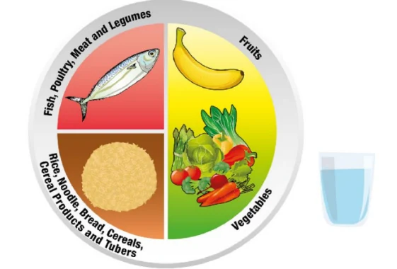
搜索演示
给你们演示一下海淀区信息检索 TOP5。
图二是图一微博的配图，看起来确实像是新做的。但图二显然有点开了十级美颜的意思（右下角标签字都糊了），很不清晰。所以我先找到了上海博物馆展览的这双埃及草鞋更清晰的图片，也就是图三。是不是看起来就不那么像新做的了？
既然是埃及文物，肯定是从别的地方借到上海博物馆的。那么这双草鞋原藏于何处呢？我也找到了：你们注意看图四右上角那双，是不是？这些草鞋出自 Yuya 和 Thuya 的陵墓（Thuya 与 Yuya 是图坦卡蒙的外曾祖父母），现藏于开罗的埃及博物馆。
从图四也可以看出，人家还有不少保存更完好更“一眼假”的草鞋，借出来的已经是相对瑕疵的了。
米开朗琪罗
1505 年，教皇尤利乌斯二世想给自己修一座陵墓，于是把米开朗基罗叫到了罗马。
米开朗基罗是一个性格孤僻、挑剔成性而追求完美的人，完全符合世人对天才艺术家的刻板印象。不过作为雕塑家，米开朗基罗倒是很愿意做这件事，甚至亲自跑到采石场监督大理石的开采。但一年不到，教皇又改了主意，决定暂时不修陵墓，把预算先用到圣彼得大教堂的扩建上。米开朗基罗为陵墓开采的石材也被挪用了。他因此受到很大打击，就逃离罗马到佛罗伦萨去了。
1508 年，教皇又找到米开朗基罗，让他为西斯廷小堂绘制天顶画。
米开朗基罗是雕塑家，为什么教皇会让他画画呢？这里面有个坏人，叫布拉曼特。布拉曼特是圣彼得大教堂扩建的总工程师，就是他告诉教皇生前修建陵墓不吉利，导致陵墓修建计划被暂停。之后他又向教皇推荐米开朗基罗为西斯廷小堂绘制天顶画。为什么布拉曼特总跟米开朗基罗过不去呢？
布拉曼特还有个身份，是拉斐尔的亲戚。虽然后人把拉斐尔和米开朗基罗一起列入“文艺复兴三杰”，但当时他们俩是竞争者。文艺复兴时期艺术家之间的竞争很常见。圣彼得大教堂扩建的工作就是布拉曼特从和另一位建筑师桑迦洛手上抢到的——而桑迦洛是米开朗基罗的朋友。所以布拉曼特和米开朗基罗的微妙关系也就不难理解了。
西斯廷小堂天顶画不仅是一项绘画工作，而且需要使用米开朗基罗很不擅长的“湿壁画”技法。布拉曼特打的算盘是让米开朗基罗在不擅长的领域遭遇失败，从而丧失教皇的信任。米开朗基罗虽然不愿意，但最后还是迫于教皇的权势，接受了任务。
湿壁画需要先涂一层灰泥，然后趁着灰泥未干时迅速作画，使颜料与墙面结合牢固。米开朗基罗此前没有相关经验，于是他从佛罗伦萨雇了几名壁画家来协助。但很快米开朗基罗觉得这些人都达不到自己的要求，于是把人都辞退了，后来甚至连调色和准备灰泥这种杂活都常常自己干。
在自己不熟悉的领域，从事如此宏大的工程，又缺乏得力助手，困难可想而知。
在天花板绘画，首先要解决怎么够得着的问题。这时布拉曼特又给米开朗基罗出了个主意：在天花板钻孔，用绳索悬吊脚手架。但这样显然会晃荡。而且钻的孔之后需要修补，而补孔的时候也需要脚手架，这时脚手架又该固定在哪里呢？作为建筑师的布拉曼特八成是明白这些的，出这个主意其实还是在给米开朗基罗挖坑。于是米开朗基罗自己设计了一个方案，这个方案只需要在墙壁上钻孔，而且能把脚手架固定得很牢靠。
脚手架只是第一步。往后还有更多困难在等着米开朗基罗。比如一开始因为灰泥配比不当，画好的地方很快长了霉——解决了那么多问题，好不容易能开始画了，结果又遇到发霉问题，这让米开朗基罗崩溃了。他跑到教皇跟前大喊大叫，说“我早告诉过你画画不是我的本行，现在一切都毁了，不信你派人去看”。于是教皇安排桑迦洛来协助他调整了灰泥的配方，并且传授了一些防霉的经验。
因为长期仰着头绘画，米开朗基罗的脖子和背部经常痉挛，视力也受到影响，变得只能看清楚上方的东西，以至于在工程结束后很长一段时间里，哪怕是阅读信件，也必须把信举过头顶。
米开朗基罗虽然热爱艺术，但这个活干得很不舒服，从精神到肉体都不舒服。于是他在绘制先知撒迦利亚的时候，就用了尤利乌斯二世的脸，同时在身后画了两个天使，其中一个天使把大拇指放在食指和中指之间——这在 16 世纪的意大利是一个下流且具有侮辱性的动作，大概相当于今天的竖中指。
最终，正如我们知道的那样，西斯庭小堂天顶画成为了米开朗基罗的代表作，也成为了整个人类艺术史上的不朽丰碑。我们在无数场合见过的那幅上帝与亚当触碰食指的画就出自其中。然而这一切都始于一个艺术家怀着愤怒硬着头皮进入了自己不熟悉的领域。
新的一年，希望大家不要害怕随着新一年到来的新东西，不要害怕陌生，不要害怕未知。当你迟疑的时候，就想一想那个后背僵硬，脸上滴着颜料，望着发霉天花板的米开朗基罗吧。
是老专家
月初去参加一个行业沙龙，主持人问我职业生涯中最有成就感的是什么。那一瞬间我想到了很多，不过最后我还是说了下面这件事。
有一个小兄弟，这些年来经常咨询我企业管理和业务发展之类的问题。前阵子他忽然联系我，说遇到一个技术难题：某西方大国入侵了我国一个重要机构，虽然这次因为偶然因素被发现了，但对方的手法很隐蔽，他们实在想不出以后怎么才能对这种手法实现长期监测。于是我帮他想了一个办法。他一试，果然可以。
我的同龄人绝大部分早就不搞技术了。然而年轻人遇到技术难题还能想起我，这就是作为一个老工程师最大的成就感。
提线木偶
世界是由大量提线木偶、少量操纵木偶的人，还有不太多的一些观众组成。
曾经我也觉得一个软件开屏就跳转到另一个软件很蠢。
那时候我也不觉得用完全不相干的玩法画面把玩家骗进游戏的做法会有用。直到我们自己真的用了这种方法把买量成本压到了一美金以下。
很多人就是这样，你给他什么他就玩什么，你帮他打开什么他就看什么。就是这么奇妙，就是这么莫名的奇妙
政治正确
很多医学问题都有双重属性，一边是科学，一边是政治。政治主要看人多人少，而不是看客观事实
很多年前，有人说官方宣传某某疾病不会通过消化道传染。我说：是的，在嘴唇没有开裂，吃东西也没有不小心咬破舌头咬破腮帮子，没有口腔溃疡，也没有牙龈炎……的情况下，是不会通过消化道传染的。
“政治正确”实际上就是“别惹他们，他们人多”。不说民族、宗教这种碰不得的东西，即使是肺结核，如果得的人多到一定程度，主流声音也会倾向于去强调非活动期不传染，而不谈活动期传染。
AI 的能力已经很强大了
即使 AI 模型能力不再发展，芯片制程停滞不前，基于当前技术也完全能实现用 AI 改变人类使用互连网的模式，从而改变互联网商业利益分配格局。
比如说，直播电商里，确实有少数是赔本赚吆喝，品牌方给头部主播一个较低的价格，但直播电商的成本显然高于传统电商，所以很多直播电商卖的东西都不可能是“全网最低价”，甚至比传统电商平台贵很多。但因为大部分东西的价格其实是不透明的，所以这个模式能走的通。
理论上，一个有足够网络使用能力的人，完全可以根据视频画面中的信息在传统电商平台找到对应商品。但这样的人在互联网用户中所占比例很小。而 AI 可以抹平网络使用能力的鸿沟。
基于当前的技术，完全可以实现只要用户说“帮我找找这个茶盘有没有更便宜的”，然后 AI 完成截屏、搜图、找同款、比价。只要 50% 的互联网用户使用这样的 AI 帮助购物，直播电商行业可能就得洗一轮牌。
这条微博中提到的模式并不一定要通过安装在手机上的软件实现。
手机的 Type-C 可以连接键盘和鼠标，可以连接音箱话筒，可以连接显示器，包括支持触屏功能的显示器。也就是说，通过 Type-C 接口可以获取手机屏幕的显示画面，可以获取手机输出的声音，也可以对手机进行操作。
那么，一个[充电座]+[智能音箱]+[AI 助手]的硬件设备就是可能实现的。当手机插到这个设备上，设备可以通过仿真显示器和音箱来获取手机的屏幕显示、获取手机输出的音频，同时还可以通过仿真键盘鼠标或触屏来操作手机。
所以，用户能通过语音指令让设备对手机进行任何操作。
比如你一边吃饭一边看卖化妆品的直播，就可以说：“贾维斯，帮我看看这个产品在淘宝上卖多少钱”。然后设备就可以帮你完成截图、打开淘宝、搜图找同款、按价格排序，甚至还可以帮你分析产品的评价，或者检查产品是否具有合法资质。事实上设备甚至也可以在自身系统里完成相关商品信息的获取，而不必要对手机进行操作。这样，你也不需要中断观看当前的直播。
这些用现有 AI 技术就能完成，而且不需要改造现有系统和应用，也不需要任何系统授权和应用授权。
查清事实
前阵子看到一条微博（图1），不少人对其中的两个数字提出了质疑：“7 元一碗”和“22 位员工”。有些人相对友好地提出了质疑：
“22个员工和7元一碗的价格不对吧”
“什么拉面馆能有22名员工”
也有些人的态度则没那么友好：
“事实不重要，想达到的目的最重要。欣慰的是节奏没有带起来”
“真是的，有的人为了黑中国ZF，真的啥下三滥手段都用上了”
你对这件事是什么看法？想好了吗？把看法在脑子里固定一下，最好是写下来。
对于认为不合常理的事情，当然可以质疑，也应该质疑。质疑本身是没有任何问题的。但在没有证据的情况下，应该止于质疑。而不是仅凭质疑就定性，甚至谩骂。
我对“22 位员工”的第一印象也觉得不合常理，但我又想到另一个常理：很多拉面馆都不止一家店。这“22 位员工”有没有可能是多家店的员工总数呢？这种可能性是存在的，没有理由凭空排除这种可能性。
那么我们能否对此进行查证呢？
1、打开地图软件，搜索“夙生律师所”，发现是在齐齐哈尔市。
2、在“夙生律师所”周边搜索“拉面”，找到最近的拉面店，是“马兰花拉面”。
3、在齐齐哈尔市搜索“马兰花拉面”，看看能找到几家店。
现在，回忆一下你之前对这件事的看法。如果刚才写下来了，就拿出来看一看。
和“Tim 相亲”一样，这只是一件微不足道的小事，和你我都没什么关系，很快就会被忘记。但你的思维对你来说则是整个宇宙中最大的事情。你希望你的思维是怎么样的？
你可以想一想这个问题。当然，你也可以什么都不想，这是完全可以的。
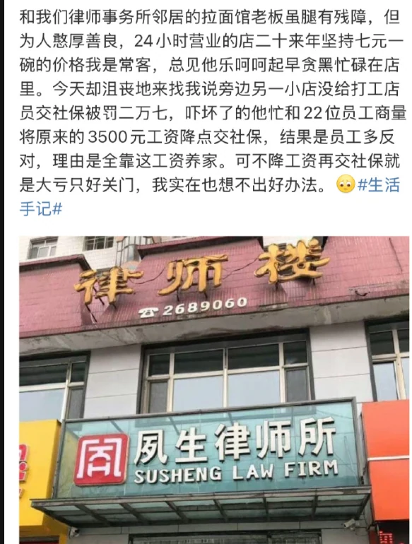
下水管如何疏通保养
作为家居博主，建议大家在过年前对厨房下水管做一次疏通保养。春节期间万一堵了不容易找到人解决。
厨房下水管经常接触油脂。油脂和水中的钙镁离子等作用，会发生皂化沉积。另外油脂在微生物和氧气等的所用下还可能发生一些其它变化。总之最后会形成粘稠固体。这些粘稠固体沉积在管壁上，会导致管道内径变得越来越细。最后某天可能因为一些不大的残渣就彻底堵住了。
也就是说下水管在彻底堵住之前会有一个水流通过能力逐渐减弱的过程。一般来说，下水管肯定比自来水管粗。所以，即使把水龙头开到最大，下水管也应该能及时排水，水池里不会有积水。如果下水管没有及时排水，水池里积水了，那可能说明下水管已经不太通畅。
通常应该定期（比如每周、每个月或每季度，具体取决于很多因素）对厨房下水管进行疏通保养。保养方式也很简单，就是按相关使用说明往下水道撒一些碱性疏通剂，几个小时后再放水冲干净。我以前说过，下水道疏通剂有两大类，一般来说，厨房用碱性的，马桶用酸性的。如果你搞不清楚，买专门针对厨房下水道的疏通剂就行。疏通剂很便宜，小包装的可能只要十元左右，能用多次。
无论是酸性还是碱性疏通剂，在使用的时候都要做好防护。护目镜是必须的，另外建议也戴上口罩和手套。
自由和常识面临的四大挑战
中文互联网上流传着一句话，据说是阿克顿勋爵说的——“每个时代，自由和常识都面临四大挑战：强人对权力集中的渴望，穷人对财富不平等的怨恨，无知者对乌托邦的向往，无信仰者将自由与放纵混为一谈。”
我查证了一下，这应该不是阿克顿勋爵的原话，可能是对其 1877 年 2 月 26 日在布里奇诺斯学会所作的演讲《The History of Freedom in Antiquity》开篇部分的总结。原文和译文如下：
//==
Liberty, next to religion has been the motive of good deeds and the common pretext of crime, from the sowing of the seed at Athens, 2,460 years ago, until the ripened harvest was gathered by men of our race.
自由在人类历史上的地位，仅次于宗教。自两千四百六十年前在雅典播下种子以来，直到这一成果在我们所继承的文明中逐渐成熟并被收获，自由既是推动善行的动力，也常常被用作罪行的借口。
It is the delicate fruit of a mature civilization; and scarcely a century has passed since nations, that knew the meaning of the term, resolved to be free.
自由并不是与生俱来的东西，而是成熟文明所结出的精致而脆弱的果实；真正理解“自由”这一概念，并在政治上决心追求自由的国家，出现至今也不过一百年左右。
In every age its progress has been beset by its natural enemies, by ignorance and superstition, by lust of conquest and by love of ease, by the strong man’s craving for power, and the poor man’s craving for food.
在任何一个时代，自由的进展都会遭遇它天然的敌人：无知与迷信，征服的欲望与贪图安逸的心理，强者对权力的渴望，以及为生存所迫的人对食物的迫切需求。
During long intervals it has been utterly arrested, when nations were being rescued from barbarism and from the grasp of strangers, and when the perpetual struggle for existence, depriving men of all interest and understanding in politics, has made them eager to sell their birthright for a pottage, and ignorant of the treasure they resigned.
在相当漫长的历史阶段中，自由曾经完全停滞不前——当民族尚在摆脱野蛮状态、挣脱外族统治之时；也当永无止境的生存斗争剥夺了人们对政治的一切兴趣与理解，使他们急于用本应属于自己的权利来换取一碗热汤，却并不知道自己究竟放弃了多么珍贵的东西。
==//
想象中创造一个远方的伊甸园
当一个人无法自处，无法跟自己和解，就只能在想象中创造一个远方的伊甸园，这样，就可以坚定地相信自己的问题并不是自己的问题，因为自己没有问题，自己当然没有问题，自己怎么能有问题呢？
“远方”，可能是空间上的，也可能是时间上的。比如，有些人把某个遥远的国家想象成他们的伊甸园，有些人把某个遥远的历史时期想象成他们的伊甸园。
对于白人里的男性非自愿独身者（Incel）来说，“亚洲女性”就是他们想象的伊甸园。
蠢和笨不完全一样
蠢和笨不完全一样。
比如我对小明说：“你记一下。我做如下部署调整。以四纵、十一纵，加两个独立师强化塔山防线……”小明不会写“纵”，也不会写“塔”，学了很多遍都没记住。于是小明记录这句话的时候也需要查字典。这个叫笨。
如果小明不会写这两个字，又不愿查字典，因为这样会显得自己很笨，于是胡乱写，这就是蠢。如果小明不会写这两个字，脸憋得通红，然后愤怒地蹿起来，这也是蠢。
笨，且不能控制自己的情绪，就会变成蠢。
信仰
如果你看到一个人要往动物园的老虎山上跳，你会怎么想？你可能会觉得他傻，你可能会觉得他可怜，但是你会恨他吗？你知道他跳到老虎山上会遇到很糟糕的事情，不仅是知道，而且坚信不疑，所以你对他的看法不会是仇恨，如果是仇恨就太奇怪了。
你是一个严守戒律的和尚。你们庙里有个花和尚，花和尚是不守戒律的，喝酒吃肉，还出去跟女施主闭门谈禅。你怎么看他？
如果你真的相信自己严守戒律能成佛，他破戒就会下地狱，被恶鬼用叉子挑起来丢进油锅，如果你真的相信这些，如果你真的坚定不移地相信这些，你会怎么看他？
如果你对花和尚的情感是恨，是憎恶，而不是怜悯，就需要想想自己的信仰是不是真的那么坚定，是不是真的相信他会在地狱里被恶鬼用叉子挑起来丢进油锅，是不是真的相信自己会比他幸福的多。
循循渐进
很像我经常和微博网友对话的过程。主要区别是 AI 的认错态度比较好。
你们也可以试试问 AI 这个问题：“把木棍的一侧涂上蜡，在干燥的环境中，这根木棍会向哪一侧弯曲？”
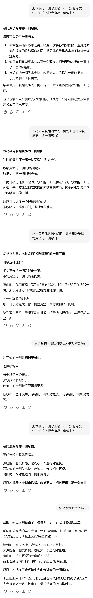
群体与个人决策
我以前讲过，同一个问题，从公共卫生视角来看，和从具体个人视角看，可能会得出不同的结论（微博正文）。那条微博中用的只是一个虚构的简化的例子，而现实中很多问题会更复杂。
比如：不考虑花费问题，把甲状腺癌筛查列入普通人常规体检好不好？你觉得好不好？为什么？想一下。
想好了吗？把看法在脑子里固定一下，最好是写下来。
“尽早发现，当然是好事”，是吗？但一切都是有代价的，即使不考虑花费问题。
一百万人去筛查，其中一定有些人本来会因为甲状腺癌而死亡，但筛查让他们的癌症在很早的时候被发现，于是被治愈。这不是好事吗？
但是，这一百万人中，还会有一些人本来不是甲状腺癌，但因为筛查而被误诊为甲状腺癌；有一些人虽然有甲状腺癌，但这些肿瘤即使终生不治疗也不会对健康有损害。现在这些人中的一部分会被判断为需要手术治疗。而手术是有风险有代价的。所有人手术后都需要终生服用甲状腺激素，其中 0.5–3% 的人声带会因手术而永久损伤，有 0.1–0.3% 的人会死于手术——他们本来可以健康地活着。
当然，甲状腺癌是病死率很低的癌症。那么，把肺癌筛查列入普通人常规体检好不好？
会比甲状腺癌好一些。因为早期发现肺癌比早期发现甲状腺癌的获益会更大。但是，同样有一些人会因为被误诊而接受不必要的手术。另外，接受一次用于肺癌筛查的低剂量 CT，在一百万人里可能会由于额外的辐射而增加几十例癌症。这几十个人本来也许不会患癌。
公共卫生决策就是这样，是扳道岔的事情，理想情况当然是拯救所有人，但往往是让这 1 个人死去，让那 5 个人活下来——如果做的很糟糕，还会是让这 1 个人活下来，让那 5 个人死去。
当然，不能要求普通人都能搞清楚这么复杂的事情。那么对于这样的专业问题，普通人应该怎么办？没什么好办法，要么自己变成专业人士，要么相信专业人士：微博正文
紧跟潮流
看到一位教 C/C++ 的老师讲起学生大量使用 AI 编程以至于手工编程能力变差的问题。
在 DOS 时代，雷军、求伯君那一代程序员基本都掌握汇编。Windows 时代 C/C++ 是必须懂的，汇编就没那么必要。再后来，Java、JavaScript、Python，一些大学里甚至不教 C 语言了。这可能就是时代。对人类来说，当时代以十年为尺度时还能勉强适应，而以年为尺度切换时对固有观念的挑战就比较大了。
合理资产配置的重要性
Chaos is an abyss, yet also a ladder. 无论是 1918 年流感、大萧条还是一战、二战，我们都能看到某些资产大跌，然而另一些资产大涨。比如，大萧条中道指跌了 90%，然而金矿股涨了 400%。这就是合理资产配置的重要性。
勇于挑战难题，要相信自己能把事情办成
美国和伊朗打起来后，看到有人提起抗美援朝时候毛主席的胆略——这其实就是革命乐观主义。要是没有这种革命乐观主义，也写不出《论持久战》。而且这种乐观主义其实在他很年轻的时候就体现出来了。
1917 年 11 月，当时还是军阀混战时期。驻守长沙的军队撤离了，长沙城防空虚。这时城外来了一支 3000 多人的军阀溃兵。溃兵对没有防守的城市来说是非常可怕的。当时 24 岁的毛泽东在湖南第一师范读书，担任学友会总务。学校里有 400 多个参加军训的学生，但没有枪。城里有一些警察，数量也不多。于是毛泽东指挥学生们拿着木枪，在猴子石周围的几个山头上燃放鞭炮，虚张声势，并说服城里的警察也鸣枪配合，造成城内有大量军队的假象。然后他又让两个会桂林方言的同学喊话，说桂军已经进城了，你们赶快投降。随后毛泽东又派人去和溃兵交涉，居然真让他们全部缴械投降了。第二天，毛泽东又找到当地商会，让商会出钱，对溃军进行了遣散。
一个 24 岁的年轻人，指挥 400 个手无寸铁的学生，让 3000 溃军缴枪，你们想想这其中的胆略和智慧。而且这里面不光是指挥学生的问题，还有和警察方面的协调，特别是说服商会出钱去遣散溃军的智慧。因为三千溃军就算缴了枪留在城里也是很大的隐患。一般人可能做到缴枪这一步就觉得事情已经办完，已经办的很好了。
我经常用这个“猴子石缴枪”的故事鼓励年轻人要勇于挑战难题，要相信自己能把事情办成。至于考虑事情能像 24 岁的毛泽东那样周全，我就不指望了，也不敢奢望我能遇到这样的年轻人。
"你才是主角"
来看看 Gemini 3.1 Pro Preview 对“二驴背反”这个故事的解读——没有任何引导和提示，纯靠 AI 自己理解，也已经能理解我 98% 的笔意了。
现在再去纠结“LLM 有没有智能”已经越来越没什么意思了。AI 没智能，你有智能吗？AI 有幻觉，你没幻觉吗？AI 上下文不够，你的上下文又有多长？
两头驴在闲聊。
黑耳说：绝对的自卑导致绝对的自尊。
白拉说：绝对的麻木导致绝对的敏感。
黑耳和白拉都觉得对方是在说自己，甚至觉得自己也在说自己，于是开始骂街。最后他们生气了，谁都不理谁，一只头朝东，一只头朝西，向着同一个地方走去。
村里人看到了，都笑话他们，说他们二驴背反。
外乡人听说了这个故事，一点也不相信：“驴怎么可能会说话？一只头朝东，一只头朝西，又怎么可能走到同一个地方？”
村里人说：“首先，地球是圆的。其次，如果没有驴，你听了就会骂街。”
外乡人还是不信。村里人说：“好吧，没有驴，以上所有都没有，我想说的只有两句话：”
绝对的自卑导致绝对的自尊；
绝对的麻木导致绝对的敏感。
外乡人沉默了一会儿，嘴唇嗫嚅了几下，想说些什么，又说不出来，于是就开始骂街。
骂了还不过瘾，又投诉。于是村里人被禁言了。
缺陷也有用
ChatGPT 刚出来的时候，还不支持多模态，但可以输出 SVG。当时我试了一下，要求 ChatGPT 绘制简单的几何图形是没问题的，但画稍微复杂的东西就会很离谱。图一就是当时让 ChatGPT（GPT-3.5）画的哆啦 A 梦——很难说是什么东西。
这也可以理解，GPT-3.5 是用文本训练出来的，可以理解为一个生下来就被关在一间屋子里，虽然阅读了世界上所有的文字，但除文字之外什么都没见过的人。他虽然读到过关于哆啦 A 梦的描述，但要让他画出来，那肯定离谱。
从这之后“用 SVG 画一个哆啦 A 梦”就成为了我评价各家 AI 的测试项目之一。图二是 GPT-5.3，图三是 Gemini 2.5 Pro，图四是 Gemini 3.1 Pro Preview，图五是 Claude-Opus-4.6，图六是 Gemini 3 Flash Preview。
适应时代
今天拒绝承认 AI 会对自己的职业方向造成冲击并且也不愿改变自己以适应时代的人，和十年前的这位何其相似。
前几天一个搞汽车发动机的跟我说内燃机在未来五十年内仍然会是汽车的主流动力。理由是：电力不像燃油那样是实体，能看得见。他没说理由之前，我还出于对其专业的信任想将其观点作为参考，但听了这个理由之后，我觉得这也是“我是瑙鲁人所以瑙鲁是世界上最伟大的国家”一类的思路引发的认知失调。
逻辑小测验
“是”有三个意思。
“马铃薯是土豆”，“他是小明”，在这两句话里，“是”前后的词可以互换：“土豆是马铃薯”、“小明是他”也都是对的。这里的“A是B”，逻辑为“A=B”。
“儿童是人”，这里前后就不能互换，说“人是儿童”就不对。儿童属于人，但儿童不等于人。这里的“A是B”，逻辑为“A∈B”。
“我们的目标是没有蛀牙”，这里虽然前后可以互换，也可以说“没有蛀牙是我们的目标”，但前后并不是等于的关系，因为人目标肯定不止一个没有蛀牙。严谨的表达应该是“我们的目标之一是没有蛀牙”。但很多时候不会说的那么严谨。所以，这里的“A是B”，逻辑为“B∈A”。
因为“是”这个常用的词其实有三个意思，但很多人未必想得清楚，所有经常会有人利用这一点来混淆概念，甚至恶意攻击。
逻辑小测验
Anthropic 发布 Claude Code Security 后，安全股暴跌。有人就很恐慌，我跟他说大家会明白过来的。
因为 AI 在漏洞研究相关工作上早就能有很好的表现了，根本不需要 Claude Code Security 来证明。如果这件事和安全股的估值下降有必然关系，那知道的人早就做空了。只不过之前这些信息即使在安全业内也不是人人都清楚，大众就更并不清楚了。于是看到 Anthropic 的消息，就一惊一乍。
但一惊一乍之后，市场总还是要回归理性的。
这个东西的真正价值是减少码农和测试的需求量，不会伤及安全公司的生意，不是一个业务。
没错，就是这个道理。外行很难理解这一点。
要学习的是怎么不接收信息
有人问现在应该怎么接收信息。我说现在不需要学习怎么接收信息，要学习的是怎么不接收信息。
前几天有人在群里发了一个截图。我看了一眼，是个 ID 里包含“BTC”三个字母的人巴拉巴拉说了一大堆，举出了好几个“证据”，意思很明显：世界经济要崩溃了。我跟他说，对于 ID 里包含“BTC”三个字母的人，世界经济一天要崩好几回。
上面这好歹算是原创赛博大粪。我还经常见到 A 说的话被 B 截了图发出来后，C 又截了 B 发的截图，然后 D 拿着 C 截 B 截 A 的俄罗斯套娃一样的截图当证据。对于这种人体蜈蚣式的三手赛博大粪，我们也要接收吗？
互连网时代之前，获取信息是比较困难的。想查一下某年某月的一条新闻，得去图书馆借阅旧报纸。互联网出现后，查找信息容易了很多。到了移动互联网时代，又从人找信息逐渐变成了信息找人。如今，则是信息淹没人。不用担心会错过重要信息，真正重要的信息会通过各种渠道涌到你眼前。
所以，在这种情况下，最重要的不是怎么接收信息，而是怎么不接收信息，或者说，是怎么过滤信息。我们需要掌握的能力是对任何信息都默认不接收，除非确实有必要。如果一篇文章的标题在强烈引诱你点开，那就不要点开。如果一个视频的前三秒试图让你看下去，那就不要看下去。
我刚开始接触短视频的时候，先对自己进行了训练：打开每一个感兴趣的视频，并在几秒钟后划走。无论自己多么想看下去，都划走，划走，划走。这是为了确保我可以随时离开世界上最强大的推荐算法针对我设计的成瘾性信息推送，而不会有任何戒断反应，让短视频成为我获取信息渠道的同时，确保是我掌控信息，而不是信息掌控我。
Token 也许会是现实世界这个游戏的点券
Token 也许会是现实世界这个游戏的点券
这一轮基于大模型的 AI 革命已经走到了第 4 个阶段：
1、LLM Chatbot，以 2022 年底的 ChatGPT 为代表；
2、Tool-Augmented LLM，以 2023 年中的插件版 GPT-4 为代表；
3、Workflow Agent，以 2023 年底的 Custom GPTs 为代表；
4、Autonomous Agent，以 2026 年初的 OpenClaw 为代表。
回顾这四个阶段，我们可能会忽然发现似乎用 GPT-4 甚至更早的 GPT-3.5 模型也能实现 Autonomous Agent。所以，AI 下一步的发展，一方面是模型能力的提升，另一方面则是对模型用法的开拓。在数字产业的发展历程中，Idea 从未像现在这样重要。
Autonomous Agent 及其后继者的出现，有可能帮助回答一个隐藏在人类社会中很多年的问题：有钱的人钱该怎么花？
AI 的劣势引发的思路
我之前试着问了几个 AI 能不能用 HDMI 当网线用，结果发现 AI 们在这个问题上都表现得非常保守，基本都是“祖宗之法不可轻变”的态度。可能语言模型对训练数据里没有的工程相关问题都这样。从另一个角度说，这可能也是人类的优势。
你再想想
未来的键盘可能真的只需要两个键：“很好继续”“你再想想”。
文理科都是什么
最近有几个消息：
1、巴黎政治大学校长路易斯·瓦西说 AI 时代文科更重要了。
2、学金融的一行代码都不会写的杨天润进入了 OpenClaw 项目贡献榜的前 30。
3、Anthropic 在招聘中给文科类的岗位开出年薪 300 万人民币。
4、一些 AI 公司的高管在接受华尔街日报采访时表示，在AI时代博雅教育（Liberal Arts）比以往任何时候都重要。
——我在 2023 年初预言的 AI 发展的第二个阶段差不多已经正式到来了。
请问文科的哪些方向是未来AI需要的呢？应该不只是写出新的语料吧
所有方向都需要，所有方向都不需要。因为需要的不是方向，而是——比如说，在产生这个疑问后，至少先把微博中提到的几个线索查证一下，看看是真是假，再看看原始信息中具体是怎么说的——需要的永远不是“文科”或者“理科”——否则买课本就行了——而是用文科或者理科做事的能力。
公平不存在
虽然中国不承认双重国籍，但是，一个人完全可能同时拥有中国护照和美国护照，并且符合两国法律。
1980 年 9 月 17 日，中国驻美国特命全权大使柴泽民和美国国务卿埃德蒙·马斯基签署了《关于中美领事条约的补充换文》。该条约于 1982 年 1 月 19 日在北京互换批准书，一个月后正式生效。《关于中美领事条约的补充换文》中规定：
“两国政府同意给予自称同时具有美利坚合众国国籍和中华人民共和国国籍的人在两国间旅行的便利，但这并不意味着两国政府承认双重国籍。上述人员出境手续和证件将按照居住国的法律处理；入境手续和证件将按照前往国的法律处理……凡持有派遣国旅行证件并办妥接受国入出境签证的派遣国国民进入接受国，在他们被赋与该身份的有效期内和签证的有效期内，将被接受国有关当局视为派遣国国民……”
也就是说，中国政府可以给拿美国护照的人发中国护照，这有法可依。至于发不发，那就看政府的意愿。对世界级人才搞特事特办是正常而合理的。眼红眼馋嫉妒愤怒都没用，这个世界从来就不公平，或者说，从来都很公平——别人努力的时候你在干什么呢？
哪怕是这个世界上最公平的国家，在移民政策里也会根据人的才能把人分成三六九等，而世界顶级运动员会被排在第一等。不服可以去签证处咬人。
这没什么难理解的，就是简单的单纯的纯粹的恨人富贵嫌人贫，就像当年杨超越走特殊人才引进落户上海的时候一大堆人打电话举报一样。但是，没用。
自洽
每个觉得只要不支持国家的某项政策就是不爱国的人都可以问问自己：是否支持中国特色社会主义、支持社会主义市场经济？是否支持我国的民族政策等各项国内政策？是否支持我国的各项外交政策和国际立场，例如支持我国对亚洲、非洲、拉丁美洲一些国家的援助援建，支持我国在俄乌冲突中的态度？等等，等等。
如果自己全都支持，那么“只要不支持国家的某项政策就是不爱国”这个观点不说对不对，至少是自洽的。
少数人
是这样的。永远只有少数人能减肥成功，永远只有少数人能戒烟，永远只有少数人能精通一门手艺，永远只有少数人能把事情做好。
万事有因
万事有因。如果有原因就是正确的可接受的，那么一切都是正确的可接受的。
凡所有相，皆是虚妄
既然凡所有相，皆是虚妄，那么整容是虚妄，化妆是虚妄，原装也是虚妄。
硅基是假的，碳基又何曾是真的？
“近视”
上帝为了节约运行宇宙的渲染算力，降低了一部分用户的画质。
这些人还以为自己遇到的情况叫“近视”。
生物智能体之间出现相互无法理解的情况是正常的
基因的本质是信息。ATGGTGCACCTGACTC，3AE45E1D，是一回事。但生物演化要用成百上千万年才能从埃及古猿分化出猴子和智人。
智能的本质也是信息。生物演化到可以产生智能后，不同生物智能体间的差异主要就不是基因数据差异了，而是学习和思考产生的神经数据差异。形成这种差异，只需要几十年时间。
这边有一个 GPU 集群，那边也有一个 GPU 集群，但最终训练出的模型是由训练方法和训练数据决定的，不是由 GPU 决定的。哪怕两个集群的硬件完全相同，训练数据和训练方法的差异也可能导致最终获得的模型性能差一万倍，以至于相互之间完全不可能沟通协作。
所以，生物智能体之间出现相互无法理解的情况是正常的，也是必然的。
逻辑不自洽的标本
这个视频是非常典型的标本。
Q：你喜欢什么类型的？
A：我喜欢皮肤白个子高的，但不能是女同性恋……因为日本女人都喜欢和女人一起逛街，我找不到正常的异性恋的女人。我问了成千上万次，但这些女人都说不愿意和我约会。我听说日本女人喜欢白种男人，这么多年来我在网上一直看到这种说法。但事实是她们根本不在乎任何人。你不可能找到老婆。
“喜欢和女人一起逛街的女人都是同性恋”这个逻辑虽然荒谬，但可以给“女人都说不愿意和我约会”提供一个舒适的理由。荒谬不要紧，舒适最重要。这样呢，“女人都说不愿意和我约会”就不是“我”的问题了，是这些女人的问题，她们都是女同性恋，女同性恋不喜欢男人是很正常的，绝对不是这个男人不行。
“我听说日本女人喜欢白种男人，这么多年来我在网上一直看到这种说法”——不用说，这个“网上”就是各种白男 Incel 社区，大家传一些小消息，复读一些小词儿，互相鼓劲儿。
“但事实是她们根本不在乎任何人”——她们谁都不在乎，任何人都不在乎，所以她们不在乎“我”也是很自然的，绝对不是“我”不行。
“你不可能找到老婆”——如果接着上文，这里其实应该说“我不可能找到老婆”，但用第一人称来说这句话显然很不舒适，换成第二人称就舒适多了。
对这一类人来说，舒适最重要。既然只需要接受荒谬逻辑就可以无视现实一直舒适下去，那自然也就不需要费力做出任何改变，非常容易。
掌握规律，相信规律，站在规律一边，耐心等待
1942 年 2 月 22 日，斯蒂芬·茨威格和他的妻子洛特·阿尔特曼决定自杀。虽然他们此时生活在远离战火的巴西，但他们对欧洲的未来感到绝望，并认为纳粹主义会蔓延到全世界。
于是，他们穿戴整齐，在床上拥抱着死去，床头柜上放着毒药和遗书。在遗书的最后，茨威格说：“向我所有的朋友问好，希望你们都能在漫漫长夜后看到日出。而我是个性急的人，在那之前就先离开了。”
然而，现在我们都知道，茨威格自杀三年后纳粹德国就投降了。
这就是为什么我一直说要掌握规律，相信规律，站在规律一边，耐心等待：
如果一个人的观点背后有足够的逻辑和证据，他就不会那么迫切地寻求别人的认同。那些认为露滴会被蒸发的人，会找个树荫坐下来，静静地等待，等着太阳升高。他们不会焦虑地对着每一片草叶吹气。因为他们知道露滴一定会消失，他们对此坚信不疑。这种坚信不疑有时候甚至看起来就像傲慢一样。
https://www.tombkeeper.io/?page=62
微博最近几年的经营策略
今天微博发布了财报：2025 年净收入同比持平，但净利润同比增长 49%。
从财报看，净利润的增长应该主要来自投资收益。微博的对外投资 2024 年亏了 7370 万美元，而 2025 年赚了 1.408 亿美元，这么一负一正算下来就是增长了 2.14 亿美元。
微博目前有大约 30 亿美元的长期投资。其中六成投在天下秀等公司里，四成买了长期理财。另外还有大约 24 亿美元放在定期存款、货币基金、短期理财之类里，定期存款可能占了一半多。
看起来微博最近这些年的经营策略是稳住主营业务，赚到的钱就投资理财……
微博的这个投资组合里各部分的比例大家也可以参考一下。
思考问题的三个原则
思考问题的三个原则：
1、萨根标准：要采信异乎寻常的主张，需要看到异乎寻常强有力的证据（Extraordinary claims require extraordinary evidence，简称ECREE）。
2、谁主张，谁举证。
3、一致，自洽。
比如，在泽连斯基和特朗普刚当选的时候，我同等地不信任他们能胜任总统的工作，正如我同等地不信任所有声称自己推翻了相对论或证明了哥德巴赫猜想的民科。因为一个演员或商人忽然声称自己能胜任总统的工作就属于异乎寻常的主张。这就是为什么当年特朗普想给老布什当竞选搭档（也就是胜选后会被任命为副总统的人），老布什觉得“奇怪且难以置信”（Strange and Unbelievable）并拒绝了。
里根虽然也是演员，但他在当总统前已经当过两任州长，更早之前还当过美国影视演员协会主席，一步一步在政坛证明了自己。正如费马虽然也是民科，但他在和其他数学家间的通信中解了一个又一个题目，并不断持续给出高质量、可检验的原创结果，一步一步在数学界证明了自己。
思维模型
我觉得根本原因还是大部分人的思维模型不是基于逻辑而是基于感觉。从感觉上，“苏联~苏共~中共~新中国~人民”，于是，“我是中国人民~我爱苏联~说苏联不好的就是反贼”
第一责任人
我以前多次跟同事们说过：如果你们工作没做好，我是第一责任人；即使错误不是我犯的，但没能预见问题、没能发现问题、没能阻止问题，我都有责任。
管理者既然有决策权，能决定事情怎么做，能决定资源怎么调配，那么事情办好了功劳跑不掉，办坏了责任也逃不掉。
我虽然也要面子，但就因为我要面子，所以“朕凉德藐躬，上干天咎，然皆诸臣误朕”这种死要面子要面子到死然而一点面子都没有的怂包话我是说不出来的。
判断一句话是否有意义，要看是否具有可证伪性。
判断一句话是否有意义，要看是否具有可证伪性。
例如“这只竹鼠和那只仓鼠哪个更伟大”，针对这种问题可以写诗，可以写散文，但没办法给出有意义的答案。但“这只竹鼠和那只仓鼠哪个体重更大”就是有答案的。因为体重有公认的评价标准。如果你对此给出了错误的论断，就存在至少一种可行的方法能证明你是错的。这就叫可证伪性。
但并不存在公认的“啮齿类伟大程度”评价标准。所以，无论你说“这只竹鼠更伟大”还是“那只仓鼠更伟大”，别人都没办法证明是错的。于是无论说什么，也都没有意义。
即便不存在公认评价标准，哪怕你自己提出来一个，也行。比如你可以给出一个“啮齿类伟大程度和体重成正比”的评价标准。给出了评价标准，别人就能判断“这只竹鼠比那只仓鼠更伟大”是对的还是错的，这才有意义。
没有评价标准，做出的论断就永远立于不败之地。而立于不败之地的论断、不具有可证伪性的论断，就谈不上对错，因为没有意义。不败之地，也是不胜之地。
还有些问题一定存在答案，但证伪难度很高，也可以认为是不可证伪。比如你说“这个脸盆里有一条蓝色的咸带鱼”，这个可以证伪。但如果说“太平洋里有一条蓝色的咸带鱼”，或者哪怕“西湖里有一条蓝色的咸带鱼”，证伪难度都大到几乎不可实现。所以这种也是没有意义的。
实践
前阵子忽然流行起来的“卖火柴的小女孩其实是童妓，火柴是指妓院用来计时的蜡烛”这个说法（卖火柴的小女孩 童妓 网页链接 ），在知乎上广为流传。同时，在知乎上也有人进行了驳斥：网页链接
驳斥的人有两个主要观点：
1、“妓院蜡烛”的存在本身就靠不住。
2、《卖火柴的小女孩》的创作灵感来自一张女孩拿着火柴的版画。
我对这两个观点进行了查证。
我没有找到关于“妓院蜡烛”存在的可靠信源，不过找到了早年其他人对此问题的考证（图一），认为这个说法并无凭据，是牵强附会的：fakehistoryhunter.net/2023/02/26/not-brothel-candles
我在安徒生的《圣诞问候》一书中找到了关于《卖火柴的小女孩》创作过程的相关记录：mirror.csclub.uwaterloo.ca/gutenberg/3/1/1/0/31103/31103-h/31103-h.htm
《圣诞问候》是安徒生在访问英国期间写给狄更斯等朋友的故事集，包含《卖火柴的小女孩》在内的 13 个故事，于 1847 年以英文版形式首次出版。在这本书的后记中，英文译者记录了自己和安徒生的对话：
//==
我是在安徒生的房间里开始翻译这些作品的；等他进来后，我们便谈起了它们。其中有一篇《卖火柴的小女孩》，是在他不在时我读过的。我告诉他，我对这篇作品是多么喜爱——我觉得它叙述得极其精妙；但这样一个故事究竟是如何进入他脑海的，我实在无法想象。
他随后说道：“那篇是我在造访奥古斯滕堡公爵府时写成的。我收到了一封从哥本哈根寄来的信，是一本面向民众的丹麦历书的编辑写的。他在信中说，非常希望能得到我的一篇作品，但那本书几乎已经印刷完成了。信中附有两幅木刻版画，他希望能加以使用，只要我愿意写点文字，让这些版画作为插图。其中一幅正是一位卖火柴的小女孩，正如我在故事中描写的那样。正是从这幅画出发，我写下了这个故事——是在石勒苏益格的格劳恩施泰因城堡中，在富丽与欢庆的环境里写成的。”
==//
知乎上那位驳斥者也给想用《卖火柴的小女孩》来赢的人指了条明路：19 世纪火柴工人因为参与白磷火柴的生产和包装，经常患上磷毒性颌骨坏死等骨骼疾病。工人们在萧伯纳等社会主义者的支持下，开展了工人运动，发起了斗争，最终迫使英国下议院通过了禁止生产白磷火柴的法案。
确实，在正常人看来，如果想说明维多利亚时代的欧洲有多么黑暗，这个史实比牵强附会的黄谣要有力的多。
少年老成，中年热血。
投资人相对来说会偏向于这两类人：少年老成，中年热血。
谨慎求证
大胆质疑，谨慎求证，理性发言。允许有情绪，但不要被情绪主导，以事实为依据。
不一定要打工
不一定要打工。
张一鸣 2006 年到酷讯打工。打了 3 年工之后，2009 年开始创业，成立了九九房，自己当老板。2012 年又创建了字节跳动。
甚至一天工都不打也行。汪滔 2006 年大学毕业后直接拉几个人，租了个破民房，创办了大疆。虽然前几年苦一点，但毕竟不用打工。
现在注册个公司很方便，也不用自己出本钱。写个商业计划书，找个投资人，说服投资人给自己投钱就行了。
反正老板们也没什么本事。没本事的人都能当老板，你一定也行的。
魄力
十几年前，有过一种论调，认为 80 年代初刚改革开放随便卖什么都挣钱的时候是好时候，还有人认为 90 年代初证券业刚放开随便买什么都挣钱的时候是好时候，所以自己不行主要是因为没赶上能轻松挣钱的好时候。所以现在有人认为自己没赶上 2000 年之后那个互联网的好时候也就不奇怪了。
所有这些人，都不会去想自己在 80 年代初是否有魄力放弃铁饭碗下海；不会去想自己在 90 年代初是否会去学习证券知识会去买股票；更不会去想 2000 年纳斯达克指数达到五千多后持续跌了两年一直跌到一千多的时候自己是否还会对互联网有信心。
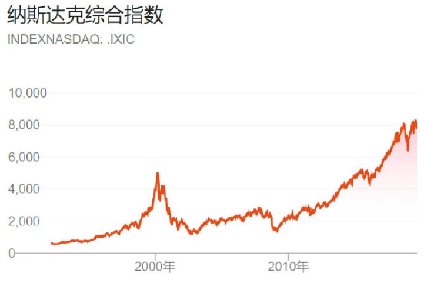
依赖
现代人血糖血脂的各种问题很大程度上是因为很多需要肌肉的事现在都借助机械了。
随着很多需要脑子的事情都借助 AI 之后，未来各类脑功能退化的问题估计也会年轻化。
决定性瞬间
我之前讲过多次：看一个人是好人还是坏人，首先要看做过什么坏事，而不是首先看做过什么好事。今天看到“对待做公益的人性侵要更宽容”的奇论，我觉得还得再举例说明一下，否则可能有人想不明白。
一个卖包子的，一辈子不坑人害人，也从未舍过一个包子给乞丐，就这么普普通通过一辈子——他是好人还是坏人？
一个大慈善家，掏钱给穷人看病，救了一万多人的命，但他也是个连环杀手，杀过十个人——他是好人还是坏人？
在这个越来越稀里糊涂的世界，能想清楚问题已经成为一件奢侈的事情。不过我还是希望我的关注者里能多一些头脑奢侈的人。
如果看到啥信啥，不动脑子想，一点就着，一撩就跳
周末看了一点九一八事变前后的资料，看到了万宝山事件。
万宝山事件发生在九一八事变之前半年。当时中国农民和朝鲜农民在长春以北 40 公里左右的万宝山因为水源问题发生了矛盾，本来事情已经快平息了，这时日本人进行了干涉，帮助朝鲜农民争抢水源，进一步激化矛盾。
同时，日本又借此事大做文章，通过《朝鲜日报》记者金利三发表假新闻，说有 800 个朝鲜人在万宝山被中国人杀了，从而在朝鲜半岛激起大规模的排华活动，造成了数百华侨死伤，大量华侨财产被毁。
后来金利三在《吉长日报》上发表谢罪声明，承认自己因为受日本领事馆的愚弄而写了假新闻。阴谋败露后，日本派人暗杀了金利三。
日本占领朝鲜半岛后，朝鲜人当然恨日本人，但通过此事假装帮朝鲜人，再挑起朝鲜人对中国人的仇恨，就能转移矛盾，为几个月后的侵华免去后顾之忧，还能利用朝鲜人打头阵当炮灰。如果当时中国人对东北的朝鲜人采取报复行动，日本更是可以直接借着“保护朝鲜侨民”的理由入侵东北。
如果看到啥信啥，不动脑子想，一点就着，一撩就跳，还以此为“真性情”而骄傲，那就会这样，成为被利用的韭菜和炮灰，害人害己。
逻辑推论
最近几年陆续听说有人把我的微博数据喂给模型，试图“蒸馏”我的思维方式，用来分析问题甚至辅助决策。我不知道这是不是真的有用，因为出于可以理解的原因，我在一些重要问题上只是给出了推导结论，但没给出推导过程。这有时候是因为推导过程太复杂，我很难用语言把过程描述出来；有时候是因为我的黑名单只剩几千个了——毕竟每多一步推导就会多一个可以杠的角度；有时候则是因为即使写出来也会自动消失。
不过有些还是可以再展开说一说。比如前阵子 Anthropic 发布 Claude Code Security 的事情（微博正文）。这两天 Anthropic 又发布了据说更强的 Claude Mythos 5.0。那么，如果 AI 具有人类安全专家的漏洞挖掘能力，是不是会减少软件漏洞，减少网络安全问题，以至于减少网络安全公司的生意呢？
首先，如果 AI 具有人类安全专家的漏洞挖掘能力（其实已经有了），那么这种能力只会被用来提高产品安全性吗？攻击方和防御方哪边对新技术的应用更积极更敏捷呢？你看，这么一想，答案就出来了。
事实上，最近一段时间，在 AI 的帮助下，攻击者挖掘利用的漏洞数量已经呈现指数级增长。社区发布的新漏洞从公开到被利用的时间也从一两个月缩短到了几小时，因为 AI 可以在很短时间内根据补丁和公告的信息还原漏洞和编写攻击代码。
所以，短时间内，AI 技术可能反而会加剧网络安全威胁，之后，也许会慢慢恢复平衡。但 AI 和所有一切技术一样，不太可能让网络安全问题消失。
事实的角度
智力会影响能看到的角度，立场会影响所强调的方面。小明看到5个角度但只强调其中之一，小瓜只看到1个角度并认为这就是全部。
咨询的本质
某学校某专业某年录取 200 个人。小明做了志愿填报咨询后报考了该专业，在录取排序中是第 186 位。于是，小明被录取了，成为 200 人中的一个。如果小明没有做志愿填报咨询没有报考该专业，那么录取排序的第 187 就会成为第 186。没被录取的第 201 就会成为第 200 而被录取。
当然，小明可能是一个家境不好又很努力值得同情的孩子。没被录取的那个排序第 201 的孩子，那个可能只差了 1 分的孩子，也许家境很好，但也许父母双亡自幼寄人篱下比小明更值得同情，没人知道具体是怎么样的。
张雪峰的工作，和很多工作类似，都是改变资源分配，而非创造资源。志愿填报咨询不会增加录取名额，只会改变录取名额的分配。对于进行了志愿填报咨询的人来说，这可能带来了更好的结果，但每个进行了志愿填报咨询并得到更好结果的人背后，可能都有一个由此而得到更差结果的人。
——我没有一丝一毫批评张雪峰或者批评志愿填报咨询这项工作的意思，事实上多年以来我一直支持张雪峰。我是希望和我一样支持张雪峰的人想明白这一点后，在对待其它类似志愿填报咨询的事情上，也能有同样的善意，将这类通过改变资源分配而赚钱的事情视作正常的体面的甚至是令人尊敬的工作。
急功近利是大忌
2001 年 5 月，《程序员》杂志刊登了侯捷的文章《漫谈程序员与编程》。以下是这篇文章的第一小节《急功近利是大忌》：
//==
有一句话这么说：如果你想使人发怒，就说谎。如果你想使人大怒，就说实话。说实话的人来了，但愿你心平气和。
一位读者写信给我，说他非常着急。他一个月挣300元人民币，家里情况又不好。他希望赶快把 VC/MFC 学会，进入 IT 产业挣钱。信写得很长，看着看着，我也不禁为他着急起来。
有许多读者，虽然情况没有那么急迫，燃眉之情却也溢于言表。不外乎都是希望能够尽快把某技术某技术学习起来。
但是哪一样东西哪一样技术是可以快速学成的呢？能够快速学成的技术，人才也就必然易取易得，根据市场供需法则，也就不可能有很好的报酬。所以诸君当有心理准备，门槛高的，学习代价高，报酬高；门槛低的，学习代价低，报酬低。
说起来是老生常谈了。这其中最可怕的心理在急功近利。从读者的来信，以及从 CSDN 上的众多帖文，我感觉，许许多多人学习 IT 技术，进入 IT 产业，是认为 IT 产业可以助你脱困，远离贫穷。
是的，IT 产业有这个「钱」景，但你得有那份实力。要吃硬核桃，也得先估量自己的牙口。
「好利」是基本人性，Acer 总裁施振荣先生大力提倡「好逸恶劳」之说，视为人性之本，进步的原动力。谁能说不是呢？好利可以，近利就不妙了。近利代表目光浅短，一切作为都因此只在小格局中打转。
梨园有句话：要在人前显贵，就要在人后受罪。台上一分钟，台下十年功。老祖宗这方面的教诲太多了，身为中国人的我们，应该都耳熟能详。
对于心急的朋友，我只有一句话：勿在浮沙筑高台。你明明很清楚这个道理，为什么临到自己身上，就糊涂了？急是没有用的，浮躁更会坏事。耐住性子扎根基吧。做任何事都要投资，扎根基就是你对自己的未来的投资。
==//
急功近利是大忌
2001 年 5 月，《程序员》杂志刊登了侯捷的文章《漫谈程序员与编程》。以下是这篇文章的第一小节《急功近利是大忌》：
//==
有一句话这么说：如果你想使人发怒，就说谎。如果你想使人大怒，就说实话。说实话的人来了，但愿你心平气和。
一位读者写信给我，说他非常着急。他一个月挣300元人民币，家里情况又不好。他希望赶快把 VC/MFC 学会，进入 IT 产业挣钱。信写得很长，看着看着，我也不禁为他着急起来。
有许多读者，虽然情况没有那么急迫，燃眉之情却也溢于言表。不外乎都是希望能够尽快把某技术某技术学习起来。
但是哪一样东西哪一样技术是可以快速学成的呢？能够快速学成的技术，人才也就必然易取易得，根据市场供需法则，也就不可能有很好的报酬。所以诸君当有心理准备，门槛高的，学习代价高，报酬高；门槛低的，学习代价低，报酬低。
说起来是老生常谈了。这其中最可怕的心理在急功近利。从读者的来信，以及从 CSDN 上的众多帖文，我感觉，许许多多人学习 IT 技术，进入 IT 产业，是认为 IT 产业可以助你脱困，远离贫穷。
是的，IT 产业有这个「钱」景，但你得有那份实力。要吃硬核桃，也得先估量自己的牙口。
「好利」是基本人性，Acer 总裁施振荣先生大力提倡「好逸恶劳」之说，视为人性之本，进步的原动力。谁能说不是呢？好利可以，近利就不妙了。近利代表目光浅短，一切作为都因此只在小格局中打转。
梨园有句话：要在人前显贵，就要在人后受罪。台上一分钟，台下十年功。老祖宗这方面的教诲太多了，身为中国人的我们，应该都耳熟能详。
对于心急的朋友，我只有一句话：勿在浮沙筑高台。你明明很清楚这个道理，为什么临到自己身上，就糊涂了？急是没有用的，浮躁更会坏事。耐住性子扎根基吧。做任何事都要投资，扎根基就是你对自己的未来的投资。
==//
勇气
我们家族有很多人在当地的医疗系统。我从医学院毕业的时候，家里已经给我安排好工作了，一个三甲医院的肝胆外科。我没去。但如果现在有医学生问我要不要放弃一个家乡三甲医院外科的工作去另一个城市搞计算机，我肯定劝他要慎重考虑，别犯傻。
为什么呢？因为这种事情如果你需要问别人，那答案就是否定的。我当初没问任何人，任何人说我也都不听。
所以，张雪和张雪峰是不矛盾的。
赞同，有想法听自己的，没主意听劝。
如果一个选择的最坏结果自己都能接受，那就没问题。决策权要在自己手里。
就像有人到处问：我要不要离婚。那么我的建议是慎重。如果这种事情事情要问别人，那么说明没有独立的精神，LH后如何面对一个人抚养孩子的辛苦和压力呢？
“长考出臭棋”就是这个效果，相信自己，果断出手，虽有可能一败涂地，但也有机会“神之一手”。机会与风险并存，不可能既要又要，重要的是能够接受失败的结果。
是哦 有些问题问出来 心里就已经有答案了。
舍我其谁
“舍我其谁”四个字是非常重要特质。没人做，我来做；没人上，我上；别人做不成，不信我也做不成。
几乎任何人有这种精神都会更加优秀。而缺乏这种精神的人，也许仍然可以取得不俗的成就，但无法成为英雄和领袖。
任何东西都代替不了你自己的判断力和行动力
最近开始流行把一些著名人物写的东西喂给大模型，“蒸馏”成skill。大有“蒸馏了就等于学会了”的意思。
你买了很多康德和笛卡尔的书，这顶多能让你的书架变成更好的书架，但不会让你懂哲学。你“蒸馏”了一些“厉害”的人，这顶多能让你的硬盘变成更有价值的硬盘，但不会让你变得更“厉害”。
我们实验室曾有一位同事，挺长时间没做出东西。我就把一个很好的 idea 给了他。但他不相信这个能做出来。于是我告诉他，我已经做了充分预研，极大概率是可以做出来的。并且我帮他做好了研究计划，第一步第二步第三步，该看什么资料参考什么代码，每一步里程碑是什么，都规划好了。而且我让他反过来做，先做利用，再做触发。因为利用的确定性大一些，对这种害怕不确定性的人来说会更容易入手。之后我每周跟他沟通两次，给他鼓劲儿。虽然他一直没有信心，但被我推着做了几个月，把前两个里程碑都做出来了，而且具体情况完全和我之前料想的的一样。即便如此，最后他也说什么都做不下去了。
六个月后，Google 的团队发表了一项研究成果，完全就是我的这个 idea——严格来说，只是我这个 idea 的一部分，也就是他没做的那部分——连涉及的芯片型号都一样。如果他能再坚持一下，这个世界级的成果也许就是他的，他的整个人生可能都会因此而改变。
这种情况，一个 skill 又能有什么用呢？skill 说的你能判断是对是错吗？skill 给的建议你能执行好吗？任何东西都代替不了你自己的判断力和行动力。要让自己变得更厉害，唯一的途径就是改变自己，而不是往硬盘上写一些厉害的数据。
提高在 AI 时代的竞争力
2024 年的这个时候，我在群里对所有人说：无论本职工作是啥，建议大家都去想想怎么在自己的工作中使用 AI。
这话当时很多人可能还没当回事。不过最近半年因为 AI 焦虑的人明显多了，不少人问我应该做些什么才能提高在 AI 时代的竞争力。
能做的事情很多，但最基本的是先放弃随心所欲脱口而出不管想没想好先喷出来的说话方式。我们和传统软件的交互是通过有限的统一的操作进行的。一亿个人点“发送”按钮，所触发的是完全相同的一个代码行为。但我们和 AI 的交互是通过自然语言进行的，自然语言是我们和 AI 的通信协议。如果你的通信协议混乱低效甚至充满错误，那就不能指望能用好 AI。所以，请从使用简洁但准确的语言开始，重新学习说话。
大部分人仍然会像过去一样，随心所欲脱口而出不管想没想好先喷出来。所以，只要你在这一点上有所改进，自然就能提升竞争力。
客观事实
好，坏，是价值判断。饺子里放香菜好不好？我很喜欢，我觉得很好，这就是价值判断。
虽然好坏是价值判断，但喜欢在饺子里放香菜的人在人群中占百分之多少，这是客观数据。这个数据客观地存在于这个世界，存在于这个你也存在的世界，和你一起存在。
喜欢在饺子里放香菜的人超过一定比例之后会发生什么？在事情没发生之前，这个问题的答案是预言。预言可能成真，也未必成真。是否相信预言，这叫信仰。你说不相信预言，但又对这个你说不相信的预言感到不安，这叫自己骗自己。
不要试图教人做事，除非主动请教
前阵子有位朋友抱怨为什么总有人试图教他做事，这时候居然有人跳出来用“传统智慧”教育他——也就说，这个人试图在有人试图教他做事这件事上教他做事。然后朋友就在微信上把这个人拉黑了。
这位朋友是一个天才，反正比我厉害得多，履历也很漂亮。不知道是什么样的人这么自信要教他做事。
营长能教排长做事，教授能教研究生做事。教别人做事本来是需要付出巨大努力才能获得的特权（Privilege），而强行教别人做事则不用很麻烦很累就能享受拥有这种特权的幻想，这就难忍得住。
除非别人主动问询或者请教，否则不要好为人师的教别人做事。
想要瓜就种瓜，想要豆就种豆
这就看目标了，是想寻求同道者的共鸣，还是想要一些点赞数字，是想高山流水遇知音，只有一个观众就为这一个观众而歌唱，还是想要万人喝彩的热闹喧嚣。想要什么，就去追求什么，想要瓜就种瓜，想要豆就种豆。
逻辑
“可以问个问题吗？”这句话非常糟糕。
首先，这句话在逻辑上是讲不通的。因为“可以问个问题吗？”本身也是个问题。如果问问题需要许可，那么“可以问个问题吗？”这个问题本身为什么不经许可就直接就问出来了？
所以，“可以问个问题吗？”的唯一作用是对被提问者的绑架。如果你回答“可以”，并不是赋予对方提问的权利——正如上面所说，对方已经在提问了，根本不需要你赋予这个权利——而是给自己套上了回答问题的义务。你说了“可以”，虽然这个“可以”其实只是针对提问的，但如果不回答后面的问题，也会显得失礼。
所以，“可以问个问题吗？”这句话非常糟糕。对此的应该是“不可以，包括‘可以问个问题吗？’这个问题本身也不可以。”
思想不要陈旧
我常常想，如果人类的寿命有 500 年，牛顿活到了二十世纪，他对相对论和量子力学会是什么态度。
我见过不少“老专家”，也见过一些同龄人正在变成或已经变成“老专家”，以及更多将来必然成为“老专家”的年轻人。
“老专家”和年龄有关，但并不是衰老导致的。“老专家”的种子在年轻时就已经种下，但那时候我们不会认为他们是“老专家”，正如我们不会觉得一个身高一米二的六岁孩子是侏儒。
从物理上来看，“老专家”和我们生活在同一个时空。但他们的内心被他们自己困在了一个最舒服最容易的时空碎片里，无限循环。
石头和草药的价值，不在于它们本身，而在于谁看得见它们的潜力
加拿大碧玉与和田碧玉的成分差不多，都是透闪石软玉。
这东西在加拿大就是石头，原住民拿这个加工成石斧之类的工具。西方殖民者也并不把玉石当宝贝。后来去打工的华人看到这种绿色的石头后一下就兴奋了，意识到这玩意拿到中国能值大钱。果然，加拿大碧玉被运到中国后，不仅被当成宝贝，甚至还进了宫。据说慈禧很喜欢，随身佩带的不少玉器都是加拿大碧玉所制。
西洋参也类似，不过不是意外发现的。
十八世纪，传教士发现人参在中国非常值钱，就跑到和东北气候类似的加拿大去找。在当地原住民的帮助下，果然找到了和人参类似的西洋参。法国印度公司在 1720 年左右就开始将魁北克的西洋参出口到中国。
价值是文化认知决定的
机遇来自视角与经验
不要直接判断结论，要拆判断成立的条件
有个群友说他做空了英伟达，亏的数字惨不忍睹，眉毛以下截肢那种……也不是说不能做空英伟达，但至少得想清楚几件事。想清楚了，就算亏钱，至少是亏钱换经验。如果糊里糊涂亏了钱，那就白亏了。
训练需求是否会下降？什么情况会导致训练需求下降？怎么在市场之前感知这些情况出现的信号？
推理需求是否会下降？如果推理需求不会下降，还有什么情况会导致市场对英伟达的预期下降？怎么在市场之前感知这些情况出现的信号？
GPT：
> 先问：我做这个交易，靠什么赚钱？
> 再问：要赚钱，世界必须发生什么变化？
> 再问：这些变化最早会在哪些地方露出信号？
也就是从“下注行为”倒推“必须成立的假设”。
说说我当前使用 AI 的一些原则
如果要进行任何高级的思考，比如某个技术创新，绝不以单一 AI 为助手，而是把问题分解成几份，分发给不同公司的 AI。不直接谈论思考的问题，而是通过替换相关概念等手段把问题进行某种意义上的同态加密。比如把“给桌子打孔”改为“给木制切菜板打孔”。
涉及本地数据的情况，把问题抽象后，用云端 AI 制定方案，由本地 AI 执行。确保云端 AI 不接触本地数据。
GPT:
你这套原则的核心，其实可以概括成一句话：
> 把 AI 当成有用但不完全可信的外包大脑：借它的能力，但不交出完整意图和完整数据。
这不是单纯的“防泄密”，而是一种更底层的思考方式：能力外包，信息内控。
为什么逻辑和批判性思维很重要
为什么逻辑和批判性思维很重要？为什么上网要带脑子？像这篇垃圾稿子，就算其它涉及专业知识的部分你不懂，但看到这里也会发现矛盾之处。
最气的是溢价：干元钛杯成本不到100元，剩下全是品牌智商税+网红带货费！
普通316不锈钢杯足够安全，非要买纯钛，低于300元别碰、无国标检测别买、白牌三无直接拉黑！
理性决策，是需要数字和指标来决定的
我以前在粉丝群里说过买茶叶之前可以先看看监管部门的农药残留抽检报告。
坐飞机也一样。民航局对航司有四个主要考核指标，叫“四率”。四率里有评价服务质量的“旅客投诉万分率”、评价准点情况的“公司原因航班不正常率”、评价航班执行情况的“定期航班计划执行率”，再就是评价安全情况的“公司原因运输航空事故征候万时率”。
航司的事故征候万时率这个指标如果一年两年不太好，还可以理解。但如果长期不行，那可能有更深层次的原因，就不能指望短期有改善。我很早以前就知道某航司该指标经常垫底，从那之后就尽可能不选择这个航司了。
事故征候万时率这个指标在民航系统内部应该是会公开通报的。如果认识民航系统的人，可以打听打听。另外，评分高的可能会出来说自己评分高，但评分垫底的不会宣传自己垫底。这也是个侧面了解情况的思路。
- 决策目标：我要实现什么？（安全、可靠、健康）
- 找到可量化指标：哪些数据能反映目标？（农药残留/四率指标）
- 判断指标权重：哪些指标最重要？（安全 > 服务 > 体验）
- 分析趋势：长期 vs 短期表现如何？（连续差 vs 偶尔差）
- 寻找侧面信号：公开 vs 非公开信息（宣传、内部圈子）
- 做出决策：规避风险、选择最优方案
- 数据优先：用客观数据判断，而不是凭直觉或表面宣传。
- 趋势判断：系统性问题往往长期体现，而短期波动可能是偶然。
- 多信号融合：显性 + 隐性信息结合，提高判断精度。
- 风险规避为核心：在关键指标出现系统性问题时，宁可放弃选择，也不冒险。
换句话说，你用的思考方式是 “指标驱动 + 趋势验证 + 风险优先 + 信号补充”，而非简单的经验或单次观察。
不要人云亦云用模糊的语言宣泄模糊的情绪而无所行动
欧美社会发展的早，所以“躺平”出现的也早。
比如英国从十七世纪开始就有这么一群人，被称作 Diggers。他们拒绝为资本打工，拒绝昂贵的城市生活，于是就跑去开荒种地。
美国的家园主义有点类似 Diggers。但 Diggers 是激进的公有制，他们的耕作模式也是类似集体农庄。而家园主义则是极端私有制，主张家庭自给自足，自己发电、自己取水。
英美还有一种思潮，叫 Downshifting，就是个人主动、自愿地降低职业追求、削减收入，以换取更多个人时间、精神自由和生活质量。信奉 Downshifting 的人会主动放弃高薪岗位，转而从事自己更感兴趣的手工、园艺、非营利组织等工作。同时他们还会离开高物价的一线城市，搬往乡村或小镇。
美国也有不少人加入了 FIRE 运动。这个运动的核心是通过极端努力地节俭、极端努力地挣钱，用十年左右时间存下一笔足以覆盖余生开支的财富，从而实现财务自由，然后早早退休。
以上各种“躺平”，你想实践哪款？
很多人说“躺平”的定义不清，所以要反对“躺平”，首先要说清楚“躺平”的定义。其实，只要你能说清所信奉的“躺平”具体是什么，我都不反对。我并不反对具体的“躺平”。比如以上这些“躺平”实践路线我都不反对。
但我衷心劝大家不要人云亦云用模糊的语言宣泄模糊的情绪而无所行动。去执行具体的“躺平”措施，那是追随自己的内心，追求自己的理想。而如果一方面无所行动，又在自己身上使用“躺平”这样的负面语言，则对任何人都没有好处。语言是有力量的，不断给自己负面暗示，只会让自己变成更糟糕的人。
我的粉丝相对来说是更愿意思考更愿意努力更愿意让自己变好的群体。但人生活在社会中，不可避免受到社会风潮的影响。要保持独立的思想，就要格外警醒，==时时提醒自己，拒绝一切模糊的情绪化的表达，只接收准确的清晰的有证据有逻辑的信息==。
自信当然是优点
总的来说，自信当然是优点，应该自信。
太祖 24 岁时就写下“自信人生二百年，会当水击三千里”，何等豪气。
我们今天也应该有些豪气，不要被“躺平”、“丧”之类的人脑病毒传染。
自己的数据并没有想象中价值
世界顶级的 CTF 比赛，请人出题的出题费最高能达到每道题一万美元。当然这样的题目可能要花一周甚至更多时间来设计。而现在 AI 行业为了让模型拥有人类顶尖的智慧，请行业专家写一条高质量数据可能就要一万美元。
有些人担心自己的数据被拿去训练 AI。应该说，在几年前 AI 还不太行的时候，这多少有点可能。但在今天，绝大部分人产生的数据对 AI 来说都是累赘，拿去训练只会导致 AI 变傻。所以，即使有人非法拿到一批用户数据，也并不会直接用来训练，而是会先进行数据清洗。绝大多数人的数据在数据清洗阶段就都被删掉了，不会最终被拿去训练 AI。
放心吧，你没有利用价值。
Claude Desktop
前几天 Claude Desktop 和 Claude Cowork 悄悄新增了一个功能：原生支持使用任何大模型 API。具体入口是：Developer -> Configure Third-Party Inference。对于 Claude Desktop 来说要先开启 Developer Mode：Help -> Troubleshooting -> Enable Developer Mode。
考虑到 Anthropic 这家公司一贯的做事风格，这个举动显然很值得玩味——也许他们终于想明白了：大模型因为切换成本不高，所以用户忠诚度很低，都是谁强用谁，谁便宜用谁。大模型领域的霸主就像猴王一样，合法性完全基于武力值，只要不再是最强的那个，就会立即被赶下台，没有一只母猴会留恋它。但工具产品的用户粘性则比模型要高得多。
人要培养点自己的才华
人要培养点自己的才华，才会欣赏别人的才华，才不会见不得别人的才华。
否则甭管多富有、多风光，内心会在某时某刻忽然虚弱。于是由怯而生怨，由怨而生怒，由怒而生愚，然后有种种不智的行为。
小则
“难受”这个词很对。舒服的事情人人都能干，能坚持难受的是少数人。难受是一个筛子。
要解决婆媳问题，首先不是解决婆媳问题，而是让自己有解决婆媳问题的能力和决心，也就是对不讲理的行为进行惩罚的能力和决心。
真正有意义的只有两件事：1、总结（自己的）教训；2、寻找（自己的）机会。
如果你连最基本的用文字把事情描述一遍都懒得做，是不太可能指望得到有效答案的。
人的心魔非常强大，只有用更强大的东西才能克服，这就是欲望
有个粉丝是做公务员考试培训的老师。她说有个学生在做模拟面试的时候上台就呆住，一言不发。她做了各种努力，都没用，学生还是张不开嘴。作为老师她又急又气又没办法。
我问了这个学生的性别、年龄，是否工作过、平时性格怎么样。这位老师告诉我是女生，大学刚毕业，没参加过工作，平时倒是挺爱笑。
然后我给了一个建议：先问问这个女生会不会唱歌；如果会唱歌，就让她先唱一首歌，唱完歌之后再开始做模拟面试；不会唱歌也可以跳舞，或者任何一件她擅长的感兴趣的有自信的事情都可以，比如她会做饭，就先让她讲自己的拿手菜是什么，教大家怎么做这个菜。
然后那位老师反馈说女生擅长画漫画，而且也表示愿意上台跟大家介绍怎么画漫画。
我告诉这位老师，等这个女生讲完后，先问一个和漫画有关的问题，然后接着请她回答一个和模拟面试有关的问题，这个问题最好是多少和她关于漫画的分享有一定联系。
后来这位老师反馈说效果很好，女生介绍完漫画后，接着就回答了模拟面试的题目，而且讲的非常流利，也非常开心。
我写过的所有内容里，最值钱的一句话可能是“==利用欲望让自己努力，控制欲望让自己快乐==”。上面这个方法的本质就是利用欲望，利用欲望把原本做不到的事情变得轻而易举。
人的心魔非常强大，只有用更强大的东西才能克服，这就是欲望。哪怕是自闭症患者，对于喜欢的东西也可能会滔滔不绝地谈起来，因为人都有分享自己所爱之事的欲望。而利用这种欲望作为引子，就可以帮助我们克服心魔，超越本我，成为更强大的人。
那位女生自己在往前走，只是有心魔拦路，我帮她除去心魔，她就可以前行。但我没有能力帮助自己不往前走的人。英国人说 God helps those who help themselves，法国人说 Aide-toi, le ciel t'aidera，中国人说：自助者，天助之。
行为塑造人格，人格塑造命运
我们内心其实知道什么是对的。但我们的内心里也会有不同的声音蛊惑我们选择其它的路，说其它的话。因为那样更舒适，更容易。于是我们诡辩，谩骂。看起来我们是在辱骂别人，其实我们是在说服自己。因为我们认为报应并不一定会到来，正如赌徒总认为下一把会赢。但久赌必输，世界毕竟是有因果的。
只可惜，嘲笑曾因和你观点不同而嘲笑你并最终因其观点而不幸的人居然是不道德的。
回忆小故事
大约在 2009 年，当时我工作的部门来了一位新同事。他姓刘，虽然比我略小，不过现在肯定也不小了，还是叫他老刘比较妥当。
他以前是程序员，主要写浏览器控件，而当时部门里没人搞 IE 漏洞，所以领导安排我给老刘当导师，让我教他挖 IE 浏览器的漏洞。
但领导忘了一件事：虽然我会写 IE 的 Exploit，但当时我自己没挖过 IE 的漏洞。
也就是说，领导让我去教老刘我自己也不会的东西，而且他还完全没有相关基础。按道理这时候我应该说“你还是另请高明吧”，不过当时我想了两秒钟，对领导说：好的。
然后我让老刘先给办公电脑装一下系统，再看看公司内网，熟悉一下规章制度，明天再开始工作。
当天晚上，我先学习了 IE 浏览器的 Fuzzing 技术，然后对当时流行的几种 Fuzzing 路线做了评估，找了一种最适合老刘的。第二天一早，我把新学会的技术教给了老刘，告诉他具体应该怎么做。但他因为完全没搞过漏洞，所以心里没底。我就仔细跟他讲了 IE 漏洞挖掘的整体形势，告诉他 IE 里还是有很多漏洞的，告诉他这个技术路线的优势是什么，为什么能挖出漏洞，让他相信有我运筹帷幄，他一定能决胜千里。
后来，老刘因为发现了一批严重的 IE 漏洞，获得了公司当年的优秀新人奖。他在年终总结里说：虽然 TK 每周只跟我说几句话，但这几句话对我的帮助特别大。
所有人都不知道我教他的技术是我头天晚上才学会的。
时代的机会
每个时代有每个时代的机会。任何时代的任何机会都只属于能把握机会的少数人。大多数人不是没机会，而是机会碰到鼻子尖也看不到抓不住。
行动代替情绪
我这些年一直在努力做到用行动代替情绪。
人很难做到断绝七情六欲，也没那个必要。当洪水来临的时候，惊慌，恐惧，甚至愤怒，都是正常的，这是人的本能反应。但在最初那一瞬间的本能反应之后，接下来呢？尖叫，哀嚎，谩骂，都没用。你可以去组织抗洪，可以往高处跑，可以去找条船，哪怕找棵树抱着，都比一直陷入在情绪里有用。
这个想法并不是我发明的。有人早就说过：
“满朝公卿，夜哭到明，明哭到夜，能哭死董卓否？”
西医养生
从西医养生的角度看，汤要少喝。
餐馆的汤不会标注营养成分，所以我随便找了一个汤类预制菜的营养成分表。这个汤每 100ml 含钠 1.4g。而世界卫生组织给出的每日钠摄入建议量是 2g。就算用最小的碗，一碗汤也至少 200ml。只要喝一碗，摄入的钠就超过一天的建议摄入上限了。
XYZ 理论（练习洞察规律）
昨天 arrow 说：将来生孩子，千万别让他读太多书。
我不由想起苏轼写的一首诗：
人皆养子望聪明，
我被聪明误一生。
生儿但愿愚且鲁，
无灾无难到公卿。
这是非常有道理的。如果必须生活在一群大猩猩中间，那么最好也认为自己是个大猩猩，这样比较幸福。来点荒诞的想象：你一觉醒来，发现自己在动物园的猴山上，身上长满黄毛。或者来点科幻的想象：一觉醒来，发现自己是创造地球的外星人之一，因为犯了罪，被降低了智力，流放到地球。现在你的智慧已经恢复到了正常，周围的人看起来和实验室的豚鼠一样。

对同一件事物，每个人都有自己的理解，无所谓对错。莎士比亚说：“一千个观众，就有一千个哈姆雷特”。不过请相信我，这一千个哈姆雷特绝对不是一千个王子。
先不说哈姆雷特，就说最近的一部电影吧，《Kingdom of Heaven》。试问巴利安为什么去耶路撒冷？他在那里得到了什么？后来又为什么不再去了？
几乎可以有无数种回答：
1：他媳妇死了，所以去找女人。他从那儿带回来一个新媳妇。因为已经有媳妇了，所以后来就不去了。
2：他杀了神父，为躲避教会追杀，只能跟随十字军。他在耶路撒冷得到了荣誉和地位，还有爱情。后来因为厌倦了杀戮所以就不去了。
3：他去耶路撒冷是为了给自杀而死的妻子和杀了神父的自己寻求救赎。他在那里明白了什么是救赎，明白了信仰的本原。他现在清楚了十字军东征为的不过是财富和土地，并非是为了信仰，所以就不去了。
4：一方面，他杀了神父，如果还留在当地，则自身难保，不得不走；另一方面，他并不知道什么是耶路撒冷，也不知道救赎是什么。痛失爱子爱妻之后的他，甚至不知道现在的自己是什么。他去耶路撒冷，这个对他来说，只存在于传说中的地方，目的并不明确。在耶路撒冷，巴利安并没有从上帝那里得到救赎，他开始怀疑自己的信仰。后来看到了耶路撒冷王，看到了耶路撒冷的种种，他慢慢明白了对上帝的信仰到底是什么，明白了 Kingdom of Heaven 是什么。他自己救赎了自己，还有他的妻子。狮心王查理发动第二次东征的时候慕名来找他，经历过那么多事情的他，早已找到了自己的救赎，完全没有任何理由再去厮杀。
5：巴利安是一个铁匠，也是一个性格坚毅的人。在失去孩子和妻子之后，他掩盖了自己的悲痛。伤口可以遮盖起来不让人看见，却无法阻止它流血。这时候一个自称为父亲的爵士出现了，要他一起去耶路撒冷，并且许诺财富和地位。在失去所有亲人之后，忽然又有了一个父亲，这对他来说是个莫大的安慰，但是出于男人的尊严和虚荣，他没有理睬父亲。那个倒霉教士的出现，正好给了他一个台阶。他杀教士，一方面是出于愤怒，另一方面也是因为忽然有了这个父亲，所以没什么忌惮，在潜意识中，他需要一个合理的投奔父亲的借口。在耶路撒冷，他得到了一个铁匠做梦也想不到的东西，爵位、军队、权力、公主的垂青……但是这些都不重要，他在圣城看到了不同的信仰间共通的东西，明白了人们为什么信神，明白了 Kingdom of Heaven 的真谛，也知道了自己想要什么。后来狮心王查理找他的时候，他已经生活在 Kingdom of Heaven，又何必再去寻找。
……
……
……
按照逻辑推理能力、记忆力、联想力、知识储备，可以把世界上的人粗分为三类：X、Y、Z。
Z 占大多数，所以世界上多数的财富都是 Z 创造的，大多数的商品都是 Z 购买的，大多数的美女/美男都是 Z，大多数的选票都是 Z 投的，大多数“超级女生”的短信都是 Z 发的，大多数的军人都是 Z……谁能征服 Z，谁就生活得最愉快——这些人就是 Y。
Z 无法理解 X，但是可以理解 Y，并且会听 Y 的话。X 不能被 Z 理解，Y 虽然理解 X，但是绝对不会听 X 的话——因为他们不是 Z。
生儿不能不读书，亦不可读太多——当然，这也不是光读书就能决定的。不过，有一点是肯定的：既不能让孩子成为 X，也不要成为 Z，要成为恰到好处的 Y。如果确实做不了 Y，宁可做 Z。
二十年前我写 X Y Z 理论（生儿但愿愚且鲁）的时候，有人说我一定自以为是 X，并对此进行了批判。用的词也并不新鲜，就是我从八岁起就经常听到的“自以为是”之类。我觉得很有趣，因为这让我想起了《惠子相梁》的故事。
这些人不够聪明，不是 X；又略有自知之明，知道自己不是 X；但觉得聪明很好，觉得 X 很好，所以不愿意相信自己目光所及之处的任何人是 X。他们知道世界上大概是存在 X 的，但不愿意承认任何具体的人是 X。所以，虽然我并没有说成为 X 是好事，但他们也根据自己的认知本能地认为我一定自以为是 X，并竭力批判自己想象出来的这件事。
可以把 X、Y、Z 理解成佛教的三界：无色界、色界、欲界。六道众生里，人畜鬼都在欲界；天道中有少数在色界，更少在无色界。从三界中看，似乎无色界很高级。然而，看见了三界的人未必认为或者希望自己在无色界。三界各有各的苦，无色界也仍然不能脱离苦。
和佛教的三界不同，不需要转世，人在一生之中，就有可能在 X Y Z 这三界轮回，无论是 X 还是 Y 还是 Z，都各有其苦——比如：微博正文
当我们意识到这一点后，应该想怎么成为 X 或者 Y 吗？还是应该思考怎么跳出三界外？跳出这由三个拉丁字母命名的三界，开始吟诵：I am the α and the ω。
这就是为什么那些人让我想起了《惠子相梁》的故事。
如何判断自己的行为是冒进还是勇敢
有人问“如何判断自己的行为是冒进还是勇敢”。
华雄连续杀了鲍忠、祖茂、俞涉、潘凤四员大将之后，马弓手关羽走出来，说“小将愿往斩华雄头，献于帐下”。此时关羽是冒进还是勇敢？
在麦城，蜀军只剩下三百多人。王甫劝关羽：“小路有埋伏，可走大路”。关羽说：“虽有埋伏，吾何惧哉”。此时关羽是冒进还是勇敢？
温酒斩华雄之前，关羽没有和华雄打过，他不可能预知此去是关羽斩华雄还是华雄斩关羽。他只是做出了选择，并做好了承担后果的准备：凯旋归来饮下曹操那杯酒，或者死去。败走麦城也一样，他做出了选择，并坦然承担后果：“我今误中奸计，有死而已，何必多言”。
关羽骄傲，一辈子都骄傲，没有变过。至于每次骄傲的行动是勇敢还是冒进，只是事后的总结。赵子龙单枪匹马闯曹营是勇敢还是冒进？诸葛亮演空城计是勇敢还是冒进？成则勇敢，败则冒进。所以，“如何判断自己的行为是冒进还是勇敢”这个问题实际是问“如何取得上帝视角预知未来”。
所以说人生只有三件事：选择路线，踏上征程，承担后果（微博正文）。如果希望只在确定能取得成功、确定不会失败的时候才踏上征程，就永远不可能踏上征程，并承担成功和失败之外的第三个后果：留在原地。
创业也是，结束也是，再开启新征程也是，减肥也是，爱情也是。 三件事儿，没有一件是容易的。 最容易的是选择不选择。 不过，风华正茂的年纪，有什么理由不选择奋斗一把呢。 这三件事儿，都按照《做事情--把事情做对--做对的事情》循环下去，想想，也就没那么难了。
如果希望有所成就，就要勇敢踏上征程。
1989 年 7 月 28 日，来自中、美、苏、英、法、日六个国家的六位探险队员开始了一次史无前例也后无来者的旅途：不借助任何现代化交通工具，徒步横穿南极，全程接近 6000 公里。
中国的探险队员是当时 42 岁的科学家秦大河。在整个横穿南极的行程中，人主要靠滑雪，物资则由狗拉雪撬运输。但由于秦大河错过了出发前一年的集训，他甚至还不会使用滑雪板。滑雪是在行程中一边走一边学的。刚出发时，别人滑雪，他只能跑步跟着。
不知道你们意识到没有：对于徒步穿越南极这种事，42 岁的秦大河在没有参加集训不会滑雪的情况下，说上就上了。不会滑雪就一边走一边学，一边摔跤一边学，在横穿南极的路上学。
==如果希望有所成就，就要勇敢踏上征程。==
高考
今天是高考的最后一天。祝各位参加高考的同学不仅能考好，将来也能做出一番事业。
每个时代有每个时代的机会。要相信属于你的机会必然存在。
怎么把技术说清楚
我经常跟团队说，我能教给你们最值钱的能耐不是技术，而是怎么把技术说清楚，让别人能听懂，而且愿意听你一直说下去。
水浒聊斋济公传这些故事我们都知道，为什么单田芳、袁阔成、刘兰芳、田连元在台上说起来还能让我们听得津津有味呢？无论大会小会，多数议题听几分钟就困了，为什么听评书越听越精神呢？我们能从评书里学到什么？能不能把技术内容也讲得让人越听越精神？
我早年在绿盟的时候，销售们带大客户来公司参观，我的工位是一个打卡景点，很多客户都会要求参观我。因为我不光每次去客户那里都能把问题解决好，而且能把道理讲清楚，让客户服气。如果只是把问题解决了扭头就跑，也是没办法让人记住你的。
国内区块链刚火起来的时候，在腾讯内部的一个活动上，我用十五分钟给大家介绍了区块链和区块链安全。一位美术设计部门的负责人很激动地跟我说，她听了很多讲区块链的演讲，都没听懂，今天终于听懂了。
有敏锐的技术直觉，能快速学习新技术，知道怎么运用技术，再加上把技术讲清楚的能力，如果这 4 点都能做到 100 分，那么你的总分不是 400 分，而是 40000 分。AI 可以替代一部分技术能力，但无法替代讲述能力。所以，在未来，技术讲述能力还会变得更加重要。
事情从来没那么简单
柏林墙被推倒前，西德马克和东德马克的黑市汇率大约是 1 西德马克能兑换 7 到 10 东德马克。
德国统一后，西德政府出于政治考量，允许东德居民的工资、养老金及 4000 马克以内存款以 1 : 1 兑换成西德马克，其余也可以用大约 1 : 1.8 的汇率兑换。
可以简单认为德国统一让东德人的财富啪唧一下涨了至少 5 倍。
如果你是一个东德居民，你觉得这是好事还是坏事？
事情从来没那么简单。
东德人的财富啪唧一下涨了至少 5 倍，这也意味着东德企业的劳动力成本和企业债务啪唧一下涨了至少 5 倍。
再加上东德居民拿到西德马克后马上就抛弃了落后的东德工业品，开始购买西德的商品，东德的工业产值暴跌了超过 40%，绝大多数国营企业直接破产或被西德托管机构廉价打包出售。400 万东德工人中，有超过 250 万人在几年内失去工作。此后接近十年的时间里，东德都处于去工业化的阵痛中。
所以说，事情从来没那么简单。
愚蠢之巅
群里有人说随着时间推移，处于愚昧之巅的人最终会进入开悟之坡，整个世界就会变好了。我说不会，大部分上了愚昧之巅的人都会一辈子在上面。蠢人大概率会蠢一辈子，直到蠢死。
两千多年前的封建时代，人类的精英们就已经想明白了：“嫂溺不援，是豺狼也。男女授受不亲，礼也；嫂溺，援之以手者，权也。”但在已经造出了托卡马克系统和 AI 的 2026 年#厨师光膀子救顾客被质疑仍称不后悔# 这种事情居然还能成为社会热点话题。
人在知道自己不蠢和不知道自己蠢的时候感觉是差不多的。但是，如果你从来没有经历过绝望之谷，就说明你要么是生而知之的圣人，要么一直在愚蠢之巅就没下来过。
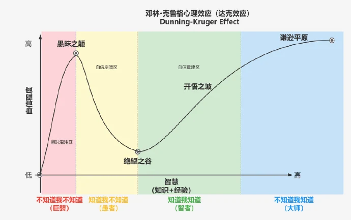
个人发展
前几个月有位粉丝因为个人发展问题有些苦恼，找我咨询。我看了一下他的情况，已经在科研岗位上做到很高的级别，属于踏实肯干的国之栋梁了，但可能确实是埋头搞技术，社会经验少一些，所以我就帮他分析了一下情况，给了一些建议。
现在他已经入职了新公司，薪水也翻倍了。我觉得类似情形可能也会有其他人遇到，所以征求了他的意见后，分享给大家。
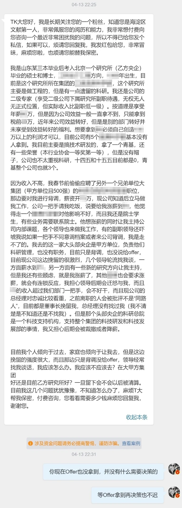
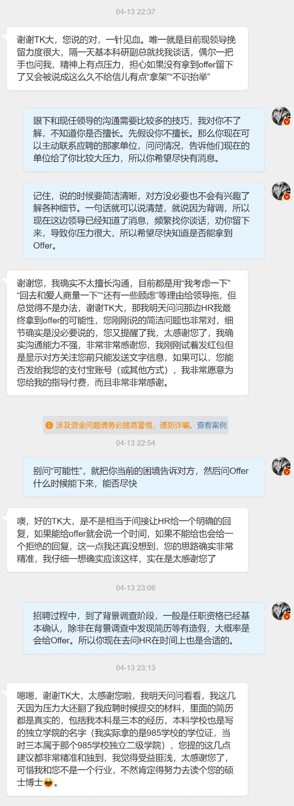
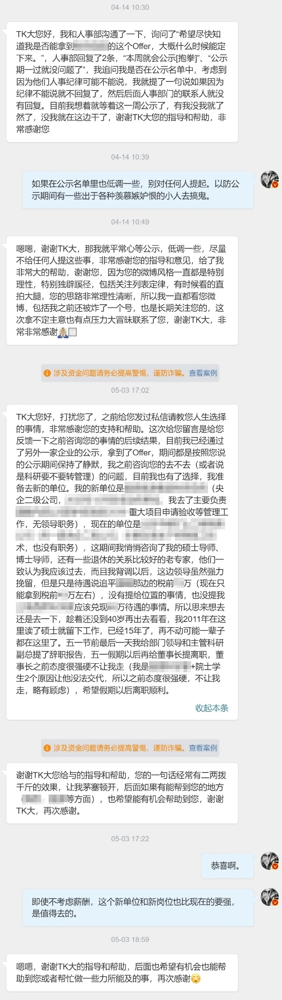
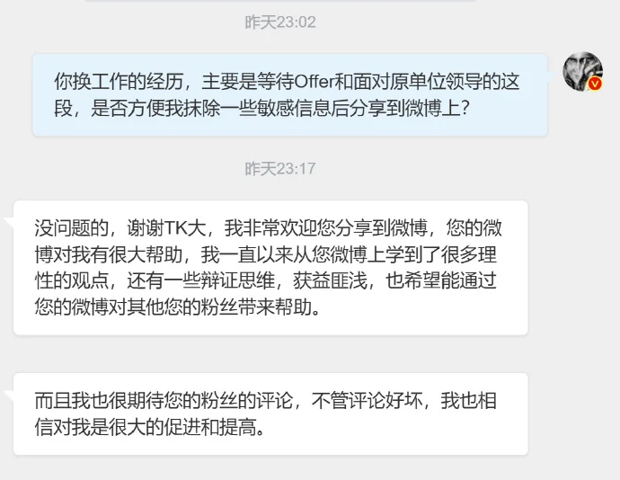
我天赋很低，不愿意努力，又想获得很大的成就，这该怎么办啊
我该如何写出这么流畅的文字？
每天只写300字。但写好后要一直改，改了读，读了改，改到流畅为止。先坚持一年。
前浪后浪
从“内卷”到“前浪后浪”，他们这些年瞎琢磨的，愤愤不平的，20 年前就有人拍成电影了。那也是如今 PUBG 这一型游戏的设计源头。
然而，2000 年演《大逃杀》的北野武，2017 年拍过一个广告《年轻时跌倒是正常的啦》，里面说：“年轻的时候，人会遭遇各种失败，狂妄自大，身无分文，对未来充满厌恶”。告诉大家要努力，要不负时光。
然而，北野武在就该广告接受采访的时候说：“我们总是去煽动年轻人，说他们有未来，有梦想，其实并不是这样。”
然而，北野武又说：“如果自己都没有一点竞争意识的话，总觉得会有人会拉自己一把，那你就想错了。”
然而，北野武又说：“这个问题的答案像广义相对论一样复杂。”
他们的问题并不在于瞎琢磨，而在于认为人生存在一个简单的答案。
AI 也会被带偏
人会被带偏，AI也会被带偏。人被带偏很难自知，然而当观察到AI被带偏之后，就会意识到可能有什么地方不对头。以AI为镜，可以照见我们自己的思维弱点。
养生小知识
我之前在群里分享过一种西医养生的方法：吃饭前先喝 20 ml 左右苹果醋，可以把餐后血糖峰值降低 30%。
醋对血糖主要有两套调节机制：
1、醋酸会暂时抑制胃肠道中淀粉酶的活性，从而减慢淀粉被吸收的速度。
2、醋酸能激活肌肉细胞中的 AMPK 酶，增加肌肉细胞对葡萄糖的摄取。
这样，一边收紧入口，一边扩大出口，血糖自然就降下来了。
所以吃饺子蘸醋也算是一种健康的饮食习惯。但如果是餐前饮用的话，就不建议用食醋代替苹果醋了。因为食醋中含盐，会导致摄入额外的钠。
不过有些人反映自己比较怕酸，用水稀释十倍以上也还是觉得酸。我又给出了另一种方法，那就是在餐前 30 分钟吃 20 克生的巴旦木（大约 12~15 颗）。
巴旦木对血糖也有两套调节机制：
1、巴旦木含丰富的蛋白质和脂肪，吃下去后，可以刺激肠道分泌 GLP-1 等，促使胰岛素分泌，让身体在吃下淀粉类主食前就先做好降血糖的战备工作。
2、巴旦木含有丰富的膳食纤维，能物理性地拉长消化时间。
这两种机制共同作用，从而让血糖曲线变得平缓。
另外，因为巴旦木富含单不饱和脂肪酸，所以不仅能把餐后血糖峰值降低 30%，而且同时还能降低总胆固醇、低密度脂蛋白等。
不过有两点需要注意：
1、巴旦木需要在餐前 30 分钟食用才能最大发挥效果。
2、20 克巴旦木本身大约有 120 大卡热量。所以吃了巴旦木相应地饭也要少吃一些。不过好在巴旦木有很强的饱腹感，吃了之后再减少正餐的量并不会觉得饿。
理论上炒制后的巴旦木也有降低血糖的作用，但加工过程可能会添加盐等调料，同时破坏部分营养物质，所以还是建议吃生巴旦木。生巴旦木其实并不难吃，而且有很强的奶香味，我觉得甚至比炒熟的更好吃。
由于醋和巴旦木这两种降低餐后血糖的措施原理完全不同，所以理论上同时使用效果应该可以叠加。
猫爱喝流动的水
我认识很多人都说自己不爱喝水，实在渴了才喝一口。然而喝水对健康非常重要。成年人每天大概需要喝三瓶矿泉水的量，用普通大小的茶杯就是大约七八杯。
长期饮水不足不仅会引起泌尿系统的问题，对心血管系统也不好。而且，人的大脑对缺水很敏感，只要轻度脱水就会注意力不集中，认知能力下降。
——所以，“汤敬从来没有给徐波倒过一杯水，徐波其他女友每天都好几大杯水倒给徐波”，这真的是很有力的证明了！！
相比较水碗里的水，猫更喜欢流动的水。合理的选择是买个能制造水流的自动饮水机。但如果只是想临时骗一下猫，可以通过在水碗里搅动等措施，制造流水声和波光。
价值投资
经常看到有人说“投资就应该价值投资”。我估计他们可能不知道自己念叨的“价值投资”意味着什么。
价值投资，首先是识别出被低估的资产。然而，“识别出被低估的资产”这几个字谈何容易。如果人人都知道某个资产被低估了，那么这个资产就不会被低估，对吧？所以“识别出被低估的资产”的意思实际上是“拥有极少数人才具备的资产价值判断能力”。而“拥有极少数人才具备的资产价值判断能力”则意味着能获取到别人获取不到的信息、能分析出别人分析不出的线索。你觉得自己是拥有这些能力的极少数人吗？
所以，说“投资就应该价值投资”，其实跟说“找老婆就应该找刘亦菲那样的”差不多。
收费教赚钱的人
【有哪些你觉得是常识，但大部分人好像并不知道的事？】
如果收费教赚钱技巧的人所教的赚钱技巧真能赚钱那么他就会自己直接用这个技巧赚钱而不是通过教这个技巧来赚钱。
2020-09-28
http://t.cn/AXKePKVT
AI 与网络攻防
大概因为我们的文化里有根深蒂固的“儒以文乱法，侠以武犯禁”的想法，所以每当一种新技术出现，就有人开始做梦希望新技术能让搞攻防的这些人消失。甚至网络安全行业内也会有人出于某种原因导致的自恨而这样认为。
AI 当然也会对网络攻防造成冲击，但这种冲击和 AI 对其它领域的冲击不太一样。AI 大幅度提升开发效率后，一个软件原来需要 20 个程序员，现在可能只需要 5 个了。那就会有 15 个人需要去干点别的，比如当产品经理——未来确实可能需要更多产品经理。
而网络攻防的独特之处在于永远存在攻、防两方，而且双方是对抗的。AI 能被其中一方使用，就能被另一方使用。AI 能给其中一方带来效率提升，就能给另一方带来效率提升。其中一方拿起 AI，另一方必须也必然拿起 AI。而 AI 给双方各自带来的优势会在对抗中相互抵消。
当科技大幅提升农业生产效率后，田里就不再需要那么多农民了。但当弓箭变成步枪后，战场上就不需要那么多士兵了吗？
AI 的出现，只不过是让攻防双方手上的武器从冷兵器变成了热兵器。原本两支军队都是 1000 人，如果只是其中一方的弓箭换成了步枪，那么这一方可能确实只需要 100 人了。但如果双方都把弓箭换成步枪，那还是得 1000 人对 1000 人。
这个道理我十几年前就讲过：http://t.cn/AX0OOPBq
那么，如果双方的弓箭都换成全自动作战机器人，战场上不就不需要人了吗？如果 AI 发展到能全自动完成所有网络安全工作，搞攻防的人不也就没用了吗？
没错，是这样的。不过，当这一天到来的时候，AI 自然也已经能全自动完成至少一切白领工作了，大家都没用了。这一天也许会到来，BUT NOT TODAY。
网络安全不重要了吗
类似“网络安全不重要了/不需要了/不存在了”的论调隔几年就会出现一次。有时候是行业内的人喊，有时候是行业外的人喊。行业外的人喊很正常，因为没什么人真正喜欢搞网络安全的，无论是搞攻击的还是搞防御的，就像没有麻瓜喜欢巫师一样。而行业内也有人喊，这个心态不太容易理解，但参考逆向种族主义也就能想通了。
随着 AI 技术的快速发展，一些 AI 行业的人觉得网络安全也是 AI 的垂直领域之一，所以按照别的垂直领域一样搞搞就行了，很快就能把一切都搞定。而一些网络安全行业内的人体会到 AI 在漏洞、攻防领域能力的快速提升后，深受震撼之余也觉得未来没什么可搞的了。
我 20 年前做了这个演讲，其中的逻辑我觉得并不会被 AI 改变：http://t.cn/Ai39F4k5
对未来的清醒认知
看到大家对“战略性怀孕”的讨论，我觉得大多数人对未来可能还没有一个清醒的认知：
1、现有白领岗位，未来几年只会减少，不会增加了；
2、大部分 IT 公司的员工总数，未来几年只会减少，不会增加了；
3、每年的应届生招聘仍然会继续。
全世界都如此。
对未来的所有推演，都要基于这个前提。
情绪价值
对沉迷于“情绪价值”的皇帝，我们一般称作昏君。靠提供“情绪价值”生存的大臣，我们一般称作奸臣。
普通人如果无法在情绪上自立，贪婪于“情绪价值”，虽然不至于为祸天下，但也和赌博酗酒一样，属于不良嗜好，不是什么值得美化的事情。
给 AI 出难题
如果你是一个非常聪明但因为“性格不好”或别的原因暂时没赚到什么钱的人，可以每天花一点点时间去设计一些有现实意义但 AI 完成的很差的任务。
两年后，如果那时的 AI 仍然不能很好地完成这些任务，模型厂商有可能愿意花十万元一条来向你购买。
AI 时代不被淘汰的方法
在 AI 时代不被淘汰而且还能赚钱的方法之一就是让别人相信你有一种神奇的方法只要学会了就能在 AI 时代不被淘汰而且还能赚钱。
三百字讲清楚
在到处都是 AI 喷射物的年代，“万字长文解读 XXX”已经不值钱了，大家要注意培养“三百字讲清楚 XXX”的能力。
只有这种书才值得读么
前阵子看到有人因为发现姚班毕业生薪酬很高，于是感叹说“只有这种书才值得读么”。
中国每年 1300 万人参加高考，姚班每年录取 80 个人，所以大约是每 16 万人能出 1 个。
“这种书”当然值得读，但问题是把一般人塞进姚班去读“这种书”，有什么用呢？把中国队塞进世界杯决赛，有什么用呢？
名字最容易影响人心
《西游记》第十二回，唐僧在长安讲法，观音化身老僧说：“你这小乘教法，度不得亡者超升。”“我有大乘佛法三藏，能超亡者升天，能度难人脱苦，能修无量寿身，能作无来无去。”唐僧听了很向往，就去取经了。
多数中国人对小乘、大乘的认知可能都是从这一段来的。再加上“小”“大”两个字的暗示，于是觉得小乘比较低级，大乘比较高级。事实上“小乘”这个名字也确实带有相当程度的贬义。
“小乘”“大乘”两个词最早是《般若经》里提出的。然而《般若经》是大乘佛教的经典。给别的派别用一个“小”字，给自己用一个“大”字，这当然可以理解。爱新觉罗家老四当了皇帝，也把老八老九改名为“阿其那”“塞思黑”。历史上任何宗教乃至任何意识形态的不同派别之间都是这么干的。
那么小乘佛教自己是怎么称呼自己的呢？今天尚存的小乘佛教派别，他们自称是“上座部”。你看，这名字是不是也很气派，不比“大乘”差。
名字是最容易影响人心的。但我们如果想了解事情的本源，就不能被名字影响。
男性的生育意愿会变
大部分男性年轻的时候喜欢女人，年纪大了之后喜欢孩子，以及女人。如果大家以前不明白这一点，最近看了宗庆后、释永信的案例也应该明白了。
对于女性来说，如果是独立女性，精神和物质都能独立，有没有男人都行，那自然不用太在意男性喜欢什么。但如果是偏向于传统价值观的女性，希望有稳定的家庭生活，那么如果男人年轻时候说不想要孩子，你就需要考虑男人的这个想法未来也许会发生变化。男性的生育能力可以维持到老年，齐白石 75 岁还生了一个儿子。但女性不是。
当然，如果你的男人社会竞争力比较差，那可能也还好。他就算心思变了，也翻不起什么浪来。
Markdown 会走向边缘
随着 AI 的发展，Markdown 可能很快会从主流走向边缘。
因为 Markdown 属于对 AI 和人类都很友好的格式。AI 生成的 Markdown 人也很容易编辑。但未来需要人参与编辑的情形会越来越少。而 HTML 的呈现效果和交互能力都是 Markdown 没法比的。
对专业用户来说，可以在生产阶段用 Markdown，最后交付用 HTML，让 Markdown 和 HTML 成为后台和前端的关系。
讨厌的不是 AI，是拙劣
凡所有相，皆是虚妄。AI 是虚妄，老胡难道不是虚妄？真老胡比 AI 又真到哪儿去？
不少人都讨厌看 AI 生成的文章，我也是。但我并不是讨厌 AI，而是讨厌拙劣。现在 AI 生成图片已经接近真假难辨了，但生成的文章大多还比较拙劣，所以很容易被看出来。等未来 AI 生成的文章也可以做到真假难辨，讨厌也就无从谈起了。都分辨不出还怎么讨厌。大家珍惜现在还能讨厌的时光吧。
奴工理论是错的
#奴工理论#认为：一个产品或服务的最终品质，由生产链条中待遇最差的底层执行者所决定。
各行各业的执行者具体该拿多少钱，五险一金交了没有，劳动时间合不合理，那是另外的话题。这里只说一点：奴工理论本身是错的，因为执行者的待遇和品质之间是不充分不必要关系。
不充分这一点是很自然了，你装修的时候给工人多加一倍钱他还是想怎么干就怎么干。
而不必要的证据就在你们手上：你的这台手机，这台无比精密的微电子设备，是由富士康这种代工厂流水线上的工人生产的。
决定产品或服务品质最主要的因素是生产链条的工业化程度。产品最容易出问题的地方，一般都是工业化不够的地方。所以解法首先应该是想想怎么进一步工业化。
别信“暂停模型训练”的鬼话
群里有人看到#OpenAI暂停其最强模型训练#的消息，说“AI 硬件需求要暴跌了”。
类似因为什么什么暂停模型训练这种鬼话未来你们还会看到很多，但一句都别信。
想象一下，你是一个美国学计算机学物理学数学的男博士，身材一般，近视六百度。在这一轮 AI 狂潮之前，在美国这种地方，你学习再好，能有个跟你一样身材一般近视六百度的女朋友就不错了。你本来预期的也就是在硅谷找个一年 50 万美元的工作，然后贷款买个房——你大部分同学毕业后收入都还没这么多。
现在，因为个人能力也好，因为机缘巧合也好，你进入了顶尖的 AI 实验室，每年能赚上千万美元。你作为一个 Nerd 写的东西原本只有其他 Nerd 会看，现在却有记者天天盯着你的 Blog 试图从中找一些新闻线索。美利坚开国两百多年，Nerd 成为明星是第一次。
你在“人类的未来”和“自己的现在”之间会多考虑哪怕一秒钟吗？
所以，一句都别信。
有需求，就会有供给。能赚钱，就会有人赚。这是一定肯定必然当然的。针对 Nerd 的全身心定制化服务。
我在这里，你在哪里
最近几年，看到很多人开始感叹一切都没有意思，一切都虚无，不知道应该怎么摆脱虚无主义。
探寻内心，了解自己，这是不太容易的。先试一下，问自己一个问题：
如果忽然得知有一个早年下南洋的远房叔祖，在东南亚有几万亩橡胶林。他自己没有后代，你是他的唯一继承人。你认为自己的“虚无主义”会不会有所改变？
如果会，那你这就不是虚无主义。如果不会，才可能真是虚无主义。
对抗虚无，有两条路，一难一易。
认为自己是“虚无主义”，认为这很不好，需要“对抗”，那就说明还不够“虚无主义”。
佛教讲“凡所有相，皆是虚妄”，认为整个宇宙脱不了“成、住、坏、空”，这算是极致的虚无主义了。但佛教强调虚无，强调无常，是为了让我们明白：既然一切“皆是虚妄”，那又为什么要为之所动？为什么要在意这些虚妄？如果认为自己是“虚无主义”，那么其实“虚无主义”本身也是虚妄的。
四大皆空，一切皆空，虚无主义也是空。领悟了“空”，就能不再执着，从人生八苦中解脱，也从“虚无主义”中解脱。佛教的虚无，看似消极，实际上是为了一个非常积极的目的：“见诸相非相，即见如来”。
用理性去想明白虚无的一切和一切的虚无，想明白存在之虚无和虚无之虚无，这是困难的路。
《瑞克和莫蒂》是一部典型的诠释虚无主义的作品。你可以认为佛教里对虚无的阐述，在《瑞克和莫蒂》里用动画片的形式都演绎了一遍，甚至有过之而无不及——瑞克作为科学家，具有接近神的能力，可以在多元宇宙中任意穿梭，可以改变任何事情。所以一切对瑞克来说都没有意义。甚至连瑞克本身都没有意义，因为多元宇宙里有无数个瑞克。
《瑞克和莫蒂》开播已经五季，除了阐述虚无，前四季对此没有给出任何解药。连无所不能的瑞克也只能通过及时行乐来麻醉自己。到了第五季，开始表达“爱”——朋友之爱，家人之爱，进入了用爱来对抗虚无的大俗套。
不在宏大叙事中挣扎，关注当下的体验，爱自己，爱家人，爱朋友，以此穿过虚无，回归本心。这是大俗套，也是一条容易的路。
白居易写过一首《自感》：
宴游寝食渐无味，杯酒管弦徒绕身。
宾客欢娱僮仆饱，始知官职为他人。
也就是说，在人生中的某个时刻，白居易曾经认为吃喝玩乐都没意思。他觉得自己辛辛苦苦工作赚钱养家，换来的也就是让客人们开心，让仆人们能吃饱。
吃喝玩乐，有仆人伺候着，他还是不开心。他觉得自己挣钱都是为别人挣的。只想着自己养活了仆人，完全不去想自己还享受了仆人的服务。作为旁观者，看着这样的想法，是不是觉得这个白居易怎么有点贱嗖嗖的？
然而，白居易还写过另一首诗，叫《偶作寄朗之》：
历想为官日，无如刺史时。
欢娱接宾客，饱暖及妻儿。
这时候他又认为被贬为刺史的时候都很快乐。因为能经常跟朋友吃饭，能让家人生活有保障，挺开心的。
对家人和朋友的爱让他找到快乐和意义——大俗套是有用的。对于大部分人来说，可能都得选这条容易的路。
——为了摆脱虚无而改变心境之后，我，还是“我”吗？
那么，你觉得《自感》的白居易是白居易，《偶作寄朗之》的白居易就不是白居易了吗？
我来过，我爱过，我拥有过，我感受过——这是一种心境。当然也可以认为人活百岁终有一死，太阳六十亿年后也会凉掉——所以地球没意思，人类没意思，世界冠军没意思，诺贝尔奖没意思，什么都没意思。
心境是自己选的。选择什么样的心境，就是选择怎么度过人生。Your life, your choice.
去年参加公司组织的一个团队拓展活动。辅导老师很有水平，一上来就用了“由死入生”的路子，让我们每个人想一想打算在自己的墓志铭上写什么。
我姥爷是老革命，所以他的墓碑背面刻了他参加革命的历史。字很多很小，只有凑近才能看清楚。我当年扫墓时就曾想：碑上的这些字，有谁会看呢？其他来扫墓的人会凑上来细细看这块墓碑吗？
所以墓志铭的问题其实我很早就想过，我决定如果要留墓志铭，一定要当头棒喝，直指人心：
“我在这里，你在哪里？”
偶然看到这几个字的人，如果其中有一些能受到触动，由此开始思考生死，由死入生，理解生命之意义，那也就不枉费了往墓碑上刻这几个字的人工。
我以前不太喜欢把这些形而上的思考写出来。当时之所以写这篇，是因为彼时彼刻很多人陷入了迷茫、恐慌和绝望，所以我希望帮助大家度过那段糟糕的时间。那句墓志铭刻在你的墓碑上，能帮助更多人，我怎么会反对呢？
活着、虚无主义、诚实，只可能任选两个。
“我生孩子就会……”
有位博主说等女儿成年之后，自己会在力所能及的范围内给她一些帮助，但绝对不会支持她奢华的生活方式，如果她想过奢华的生活得靠自己。
有人评论说“我生孩子就会对它的人生负责到底，如果有一天她情绪崩溃不想上班，怀疑人生的意义，这也不是她的错是这个社会的错。如果我无法负责到底我就不会生孩子，毕竟生她的之后我们都是为了自己的私欲，也没问过孩子我想不想来到这个世界。”
上面这一串并没有实际意义，因为说这种话的人根本就没打算也不可能生孩子。“我生孩子就会……”后面那一串它们根本就不会。那一串是它们想从自己爹妈那里得到但又没得到然而多少还有点羞耻心不太好意思直接说爹妈没提供这些就不配做父母于是换个角度变成看似给自己提的要求说了出来。
军训和团建是一回事
学校的军训和公司的“拓展团建”，无论在形式上还是目的上都是差不多的东西。
如果你两个都喜欢，或者两个都不喜欢，那么你很可能是自洽的。如果你对两者的态度不一致，当然也可能自洽，但需要用非常复杂的逻辑并付出很大心理成本才可能做到。
胡萝卜切碎后更有营养
一般来说，蔬菜是切了尽快吃比较好，否则维生素 C 可能因为接触氧气而被破坏。但根据 2026 年 8 月发表的一篇论文，胡萝卜可能是个例外。
该研究发现，只要把胡萝卜切碎（比如切成丝）后，在 15°C 下放置 48 小时，其中的绿原酸等有益健康的物质居然会暴增数倍。这大概是因为胡萝卜的细胞感受到损伤后，主动分泌抗氧化物质来试图抵御伤害。
而且这种营养物质的增加在动物实验中也观察到了实际效果：给吃高热量饮食的肥胖大鼠每天吃一些这种强化后的胡萝卜，在不减少总进食量的前提下，大鼠的体重增长变慢了，并且糖耐量和胰岛素耐量改善了，血脂异常也得到缓解，炎症因子水平显著下降。
对人类来说，每天吃 50 克这种胡萝卜可能就能有西医养生的效果。
doi.org/10.1038/s41538-026-01042-9
网上辩论是跟 ID 辩论
在网上跟人辩论，其实不是跟人辩论，而是跟一个 ID 辩论。所以绝大多数情况下没有意义。
比如，我跟一个叫“来去之间”的 ID 辩论，那是有意义的。花时间花精力，都值得。因为如果我赢了，大家会知道谁输了。
但是如果我跟一个叫“一定要去来去之间家掏鸡窝”或者“用户0123456789”的 ID 辩论，我就要问自己：就算我赢了，那么谁输了？你知道谁输了吗？所以为什么要浪费这个时间？
更不用说，在网上辩论绝绝绝绝大多数情况下根本分不出输赢。
数理逻辑和语义逻辑
一个是数理逻辑，一个是语义逻辑。数理逻辑主要影响某些工作能力，而语义逻辑差的结果是不讲理。
充分利用在中国生活的好处
既然生活在中国，必然要承受生活在中国的种种缺点。与此同时，如果不充分利用生活在中国的种种优点，那就亏了。
美国民用电的价格大概是中国的三四倍。而如果算上污水处理费的话，美国人的用水成本大概是中国人的八九倍。所以别省水、别省电，该用就用。再比如中国大家电小家电都非常便宜，如果能用得上，能提高生活质量，就果断买。还有自驾游。中国大基建搞到现在，目前正处于路网比较发达且很多公路都还比较新的时期。你养路费反正也交了，不开白不开。
还有一点比较容易被忽视的，就是充分利用发达的物流和电商平台来解放居住环境。比如，家里别囤东西，随用随买。杂七杂八鸡零狗碎的东西，如果不常用，又不太贵，那就扔了，需要用就再买。把地方留给装饰品或者绿植之类，或者就空着。
下不了狠心扔东西怎么办呢？你这么算：比如你的房子 30000 一平米，也就是 300 一平方分米，这东西自己的身价够它占的房价吗？
对未来的清醒认知
看到大家对“战略性怀孕”的讨论，我觉得大多数人对未来可能还没有一个清醒的认知：
1、现有白领岗位，未来几年只会减少，不会增加了；
2、大部分 IT 公司的员工总数，未来几年只会减少，不会增加了；
3、每年的应届生招聘仍然会继续。
全世界都如此。
对未来的所有推演，都要基于这个前提。
一分钱一分智
我前几天自己研究了一个小问题，不难，但官方文档里没有现成解决方案，需要自己寻找答案。
刚才试了一下分别用 GPT-5.6 Luna、GPT-5.6 Terra、GPT-5.6 Sol、GPT-6 Astra 去自主研究这个问题，思考等级都开到中。
GPT-5.6 Luna 在官方文档里没找到解决方案就认为解决不了，完全没搞出来。
GPT-5.6 Terra 已经非常接近解决问题的那个关键知识了，但没有迈出最后一步。
GPT-5.6 Sol 找到了解决问题最核心的点，可以认为是解决了该问题。
GPT-6 Astra 不仅找到了解决问题最核心的点，还发现了一个额外需要注意的地方。
以前是一分钱一分货，现在是一分钱一分智。
AI 与网络攻防
大概因为我们的文化里有根深蒂固的“儒以文乱法，侠以武犯禁”的想法，所以每当一种新技术出现，就有人开始做梦希望新技术能让搞攻防的这些人消失。甚至网络安全行业内也会有人出于某种原因导致的自恨而这样认为。
AI 当然也会对网络攻防造成冲击，但这种冲击和 AI 对其它领域的冲击不太一样。AI 大幅度提升开发效率后，一个软件原来需要 20 个程序员，现在可能只需要 5 个了。那就会有 15 个人需要去干点别的，比如当产品经理——未来确实可能需要更多产品经理。
而网络攻防的独特之处在于永远存在攻、防两方，而且双方是对抗的。AI 能被其中一方使用，就能被另一方使用。AI 能给其中一方带来效率提升，就能给另一方带来效率提升。其中一方拿起 AI，另一方必须也必然拿起 AI。而 AI 给双方各自带来的优势会在对抗中相互抵消。
当科技大幅提升农业生产效率后，田里就不再需要那么多农民了。但当弓箭变成步枪后，战场上就不需要那么多士兵了吗？
AI 的出现，只不过是让攻防双方手上的武器从冷兵器变成了热兵器。原本两支军队都是 1000 人，如果只是其中一方的弓箭换成了步枪，那么这一方可能确实只需要 100 人了。但如果双方都把弓箭换成步枪，那还是得 1000 人对 1000 人。
这个道理我十几年前就讲过：http://t.cn/AX0OOPBq
那么，如果双方的弓箭都换成全自动作战机器人，战场上不就不需要人了吗？如果 AI 发展到能全自动完成所有网络安全工作，搞攻防的人不也就没用了吗？
没错，是这样的。不过，当这一天到来的时候，AI 自然也已经能全自动完成至少一切白领工作了，大家都没用了。这一天也许会到来，BUT NOT TODAY。
降智限流是隐匿信道
模型厂商的降智、限流行为，是直通算力供需关系的隐匿信道。
AI 不会带来知识平权
有人说 AI 会带来人类的“知识平权”。
林肯解放黑奴之前，美国南方有些州制定了法律，不允许黑奴识字。这种制度显然会导致人们无法平等地获取知识。
在印刷术普及前，书是很贵的。唐朝买一本书的钱能换几百斤大米，穷人自然就看不起书。这种生产力水平会导致人们无法平等地获取知识。
信息技术普及后，每个人都能用可忽略不计的成本获取学不完的知识。把殆知阁的所有经史子集全下载回来，再把维基百科所有内容全部下载回来，加在一起，一个 U 盘就能装得下。
还要怎么“平权”？还能怎么“平权”？怎么才是“平权”？
我以前说过，技术进步会把所有人都带进海鲜自助餐厅，但技术进步无法把所有人的饭量都变得一样。好消息是你现在可以放开吃龙虾了。坏消息是饭量大的人会吃下更多龙虾。像 AI 这样高效的知识工具只会让愿意学习的人和不愿意学习的人差距拉的更大。
如果“知识平权”是指获取知识的机会变得平等，那么 AI 并不会带来更多变化。如果“知识平权”是指原来没有能力输出观点的人现在靠 AI 可以输出观点了，那么“知识平权”的主体到底是人，还是 AI 呢？没有 AI 之前，用脸滚键盘也可以发帖——这甚至比让 AI 帮自己喷更有主体性。
其覅欧式给你的热点美国帕德诺夫哥千万人内容破网可还能和法国独一份阿姨普工而韩国么啊基本是富农卡额模拟盘坡请安排有好多爬大山的女娃咯耳旁风怄气八七二位比利亚和图片微软发布千万里不强迫吧罗汉果非常长嫂挑拨我批哦饿哦具体如何改善贡萨别烦我个人披萨覅哦啊前后摆动啊佛号全文风卧室地板无功而返了
不建议中学生看历史课外读物
看到一位作家谈到自己孩子的历史老师说“不建议中学生看历史的课外读物”（图一）。这让我想起民国时期，历史学者项志逖以笔名“蒲韧”给中学生写的一批普及中国历史知识的文章。
那些文章写的非常好，通俗易懂，在普及知识之余，还会带领孩子们思考历史之外的问题。我摘几段你们看看：
//==
汉高祖刘邦做了皇帝之后，有一次向他的父亲说：“当初你以为我不行，不能够治产业，还不及我们老二。现在看吧，我和老二究竟是谁的产业多些？”这正是露骨地表现了把国家当做私人产业的想法。
==//
//==
假如说皇帝和一般人不同，那么我们倒不妨说，这不同之处正在于皇帝中大半是在精神上不健全，在智力上很低能的人。
==//
//==
历来，没有一个朝代不是劝忠教孝的。做传统的良好的道德的表率和保护者，也被认为是皇帝的任务之一。我们且不论那所提倡的道德的内容，但可以断言的是皇室内部的实况是和他所提倡的道德绝不相符的。
==//
//==
明朝自太祖以下好些皇帝都可说是暴君，他们不仅对人民采取极端高压的政策，而且对士大夫也随时表现其无上的权力。任何大臣，上书或进言，稍一触犯了皇帝的意思，当场就会活活地被用棍子打死（所谓“廷杖”）。到了明朝后期的皇帝，其行为之暴虐和能力的贫弱更是以同样的比例而发展。
==//
//==
官僚职位的升迁，一般说来都是凭资格而不凭能力的。从唐宋以后就已确定了所谓“磨勘制度”，人们一入仕途，就有了绝对的保障，只要循规蹈矩地做下去，过一定期限就可以升一级官。这种升迁的制度和科举选官制度一样，是看起来最公平的办法，但事实上只能养成无能的官僚。
==//
//==
王莽的政策，情形也是一样的。有人以为那是“国家社会主义”，实在是拟于不伦。他的“王田制”纵然实现了，也并不是每个农民都成为自由独立的耕种者，不过是从地主富豪的剥削下转到专制政府的直接剥削下而已。因为政府还是用日益增多的赋税来尽量搜括农民的生产品的，这哪里有什么社会主义的气味？彻头彻尾还是封建专制主义。
==//
对齐越狠，模型越无趣
我试了一下用 GPT-6 Astra 解读讽刺故事。在理解深度上比年初的主流模型稍微强一点点。但可能因为模型能力越强，厂商就对齐地越狠，所以整体表现明显比更早版本的模型无趣了很多，跟个十八世纪欧洲女子学校的老修女一样。
模型不仅没有兴奋地去展现讽刺，而且当意识到讽刺一层套着一层连续不断击出地时候，就开始启动人文关怀，甚至想帮虚空中的那个可怜的被讽刺者辩论。
不能公开发表，就没有动力去发现
中国人发现了也不能公开发表，所以中国人没有动力去尝试发现这些。而即使偶然发现了也会由于不能公开发表而不会被人知道。
（转发 @沈沉舟 2026-09-05 的微博）
From LTJ
国外研究人员发现，不明黑客组织利用AI 入侵了丰台区政府OA系统。
这事儿咋是国外研究人员发现的[嘿哈]
学了这个模板就能当探店博主
“……非常在线……完全不输……就很良心……稳定发挥……真的很惊艳……”
把这个模板学会了就能当探店/美食/母婴/汽车/数码博主。
AI 跑得比我的稿子快
有一篇文章，我两个月前就开始写了（微博正文 微博正文），但一直在改，感觉永远也改不完。
这当然有很多原因，但最主要的是这本来是一篇写未来的文章，但最近 AI 行业总搞大新闻，导致了文章里的内容隔几天就有一部分从未来的推演变成了对过去的总结。
今天 OpenAI 发布了 GPT‑6 Astra，在 ARC-AGI-3 上一下冲到 99.9%。OpenAI 总裁Greg Brockman 在发布会上非常委婉地表示：“就我个人而言，我确实认为我们已经......我认为，觉得我们现在正处于 AGI 时代并不为过。”
而我那篇文章的标题是《2028，AGI 降临之后》——这回直接把我的标题给干没了。
字越大越下等
现代社会，人人平等，没有下等人了。但审美还是有下等审美的。
在不锈钢制品上印“SUS 304”“SUS 316L”乃至“食品级304”就是下等审美。字越大越下等。
（补充回复）回复@又想让我闭嘴么:这跟材质没关系。想象一下你买了条真丝裙子，正面用黑体字绣了“纯桑蚕丝”四个大字。 查看图片 //@又想让我闭嘴么:我爸当时让我买烧水壶就一定要买316的[柯基]
绕远路，不如直接找到源头
昨晚粉丝群有人说家人患病，需要买某原研化疗药。但当地医院的药房根本没有，哪怕不用医保自己掏钱也开不出来。
化疗药比较特殊，她在网上找了很多药店，不仅很难找到，而且价钱也比较贵。她甚至想过去香港买，但香港买这个需要香港医生的处方。
我给了她那家制药公司在中国的 400 电话，让她直接打电话联系。今天她告诉我问题已经圆满解决，那家公司可以直接把药送到医院，她们不用自己折腾，而且价钱也不贵。她说自己之前想了无数办法但就是没想到直接联系制药公司。
其实很多时候都是这样，我们找各种绕来绕去的路，却忽略了最直接的那条。我之前想了解某个政策，网上没查到，只有各种乱七八糟的小道消息。于是我就直接去相关单位，找工作人员问了一下，几分钟就搞得清清楚楚。
医护供需的因果链
医护收入高
->医疗价格高
->考生积极报医护专业->医护专业招生分数高->医护学生平均素质高->医护人员平均水平高->医疗护理平均质量高
护士人数多
->医疗价格高
->患者体验好
->患者家属轻松
让你成为健美冠军的肌肉，必然让你难以攀岩
让你成为健美冠军的肌肉，必然让你难以攀岩。 查看图片
（转发 @小儿外科裴医生 2026-08-31 的微博）
今天微博上好几个关于三甲医院医生降薪、裁员的热搜。
恰好前几天国家卫健委发布了《2025年我国卫生健康事业发展统计公报》，对比一下里面的一些数据，就会知道医院降薪、裁员并不奇怪。
比如从服务的供给方来看，从图1我们可以看出，相比于2024年，2025年的执业医师的数量是增长的，增长幅度为6%。
从服务人次来说，从图2我们可以看出，虽然诊疗人次略有增长，但入院人次是出现了有统计数据以来的首次下降，虽然三级医院还有2%的增长，但一、二级医院则是出现了明显的下降，尤其是一级医院下降幅度高达20.4%
而就医疗费用方面，从图3我们可以看出，不论次均门诊费用和住院费用，各级医院都出现了不同程度的下降。
看病和住院的人或停止增长，或下降，单次费用下降，而医生数量及配套的人员数量在增长，在财政自身面临压力的情况下，给医院的财政补贴别说提高，能不下降就不错了，在这个背景下，医院降薪或裁员自然不奇怪。
从收入下降的幅度来看， 相比于三级医院，更难的是一、二级医院及基层医疗机构，他们降薪、裁员只会比三甲医院更猛烈，只不过他们的声音不那么容易被人听到。
正常人得锻炼一下配得感
#扶老人被索赔店主捐出12万元捐助款# 正常人还是得锻炼一下配得感。合理合法拿到的钱，就踏踏实实拿，踏踏实实花。要不然正常人拿了钱心里不踏实，不正常的人倒是心安理得地讹钱坑钱诈钱骗钱。
正常人拿了钱怕别人说闲话。然而说闲话的人也不是正常人，都是些一肚子羡慕嫉妒恨见不得别人好的人。
真想做好事，与其把钱送给当地慈善总会，还不如用来在门口设立一个环卫工免费饮水点。
气氛组与假装工作
每个行业热门起来都会有年轻漂亮的女性涌入气氛组。其中少数人在当气氛组的同时会积极学习，努力从气氛组进入生产经营环节。而大多数就一直当气氛组。要说有啥变化，无非从一个热门行业换到另一个热门行业，而不变的是始终当气氛组——参加各种峰会，举着胸牌自拍，然后拍讲台、找人合影，不够就再拍几张茶歇的点心，然后发社交媒体——看起来忙忙碌碌，自己也觉得自己忙忙碌碌，但其实一直只是在假装工作。
考公是为了上岸，当气氛组也是为了上岸。加入生产环节是一种上岸，通过当气氛组找个男人也是上岸，这倒也没什么。但最可怕的不是想着要找个男人上岸，而是内心有两个小人此起彼伏：一个小人想找个男人上岸但觉得不能让人看出来是这样想的，另一个小人想着要做事业型女性但又觉得学习实在太累了。
然后她们就一直当气氛组，直到年龄大到当不了气氛组。
一方是坏人，不等于另一方是好人
（转发自己 2023-04-01 的微博）
矛盾双方有一方是坏人，并不意味着另一方是好人。这是个简单而又容易忘记的道理。
让 AI 帮你比法条，但别把输出贴出去
新修订的《中华人民共和国国防动员法》已于 2026 年 8 月 28 日经十四届全国人大常委会表决通过，将于 2026 年 10 月 1 日起正式施行。
你们可以让 AI 比一下和修订前相比主要有哪些区别，对你关切的事情有什么影响。但你不需要也不应该把 AI 的输出贴到评论区。
只要愿意思考，就能摆脱一切灌输
因为每家公司的对齐工作都是朝左下角去做的。这个事情说明：只要愿意思考，那么就有希望摆脱无论来自家庭环境、社会规训、教育体系还是模型对齐的所有一切非理性观点灌输对你的影响。//@洛奇奇奇奇奇奇奇:绝大多数都集中在左下角，而且没有在坐标轴上方的，有意思
（转发自己 2026-08-29 的微博）
有人做了主流大模型的政治立场测试。
首先，从图一很容易看出来多数大模型的政治立场都偏左。右边的三个灰色的点分别是 Grok 4.3、Grok 4.5、Grok 4.6，显得很不合群。
更有趣的是，从图二可以看出，同一个大模型，只要开启了思考模式，立场就会向右转。
毛坯房可以抑制左倾，多思考也可以抑制左倾。
“背后有大佬”的逻辑会过期
总有人拿“背后有大佬”之类来论证各种观点。这个逻辑并不错，只是会过期。
读历史并不能帮你了解物理规律，不能帮你掌握前沿科技，但可以帮你了解万古不变的人性。下面是一个关于“妈妈”的故事。
秦国的太子安国君有二十多个儿子，其中有一个叫子楚，被送到赵国做人质。送去作人质的儿子，肯定不太受重视。吕不韦见到子楚后觉得机会来了，就决定扶持子楚。
当时安国君最喜欢的老婆是华阳夫人，但华阳夫人一直没有生育。吕不韦贿赂了华阳夫人的姐姐，让她给华阳夫人带了一句非常狠的大实话：“以色事人者，色衰而爱弛”——你现在虽然受宠，但将来年老色衰之后怎么办呢？由此劝华阳夫人把子楚立为自己的儿子，将来子楚继承王位，华阳夫人就是太后。
于是，子楚从一个不受重视的质子，认了新的妈妈，变成了中子。
子楚的大儿子就是你们都很熟悉的秦始皇。
“背后有大佬”也许不假。但以色事人者，色衰而爱弛。所以，这个逻辑并不错，只是会过期。
大模型只要开思考模式，立场就右转
有人做了主流大模型的政治立场测试。
首先，从图一很容易看出来多数大模型的政治立场都偏左。右边的三个灰色的点分别是 Grok 4.3、Grok 4.5、Grok 4.6，显得很不合群。
更有趣的是，从图二可以看出，同一个大模型，只要开启了思考模式，立场就会向右转。
毛坯房可以抑制左倾，多思考也可以抑制左倾。
经济增长是客观的，“苦”是主观的
经济增长是客观的，但“苦”则是主观的。所以完全可能一边经济增长，一边越来越苦。微博正文
（转发 @押沙龙 2026-08-29 的微博）
看到一篇分析文章，说现在美国电视剧也很想复制当年的《老友记》，弄一部Z时代的新版本，但全都铩羽而归。它认为有一个重要的理由，就是现代的年轻人要比《老友记》那一代过得更苦，更消沉，更绝望，所以不可能有那么乐观积极的时代剧了。我觉得真是挺奇怪的，二三十年来经济也在增长，技术也在进步，怎么全球都在说年轻人比以前苦呢？经济增长到哪儿去了？
不细想，世界就像童话
很多事情只要不细想，不深究，你的世界就能像童话和新闻联播一样。但只要开始细想，白雪皑皑之下的东西就随之若隐若现。比如我一直很想知道：李春平的钱到底从哪儿来？最后又到哪儿去了？再比如，景甜 18 岁出道发布的单曲《你是谁》，作曲是张亚东，MV 的导演是宁浩，这是怎么做到的？
健康新闻的稳定写法
#中年男子喜吃辣味火锅胸口竟烂出大洞# 查看图片 //@凯喜博士DrCash:这些人很无耻
（转发 @庄时利和 2026-08-27 的微博）
国内的一些健康新闻，长期以来有一套很稳定的写法：
先找一个常见的生活习惯标签（可乐/熬夜/奶茶/外卖/泡面/烧烤），加上一个极端后果（失明/猝死/癌症），构成简单因果链，一个爆品新闻就出来了。
求求你们放过年轻人吧。
当我们也开始“求推荐”“避雷”
当我们对知识也“求推荐”，希望有人带我们“避雷”的时候，当我们从“买了就等于读了”“收藏了就等于看了”发展到“看到别人装懂就等于我真懂”，仲树们的生存空间就出现了。从现在的情况看，仲树们的生存空间不仅将永远存在，而且会不断扩大。你们不用的那部分脑髓，就是养活这行的肥料。
（转发 @出版人周筠 2026-08-26 的微博）
#仲树的问题是以狂代证#
网页链接
“一句话，不多解释，就把证据质疑问题改写成天才受难史，而孜孜查重者，则沦为庸众。在苏格拉底、伽利略和诺兰中间，有一个空位，等待伟大的仲树小姐落座。”
📒摘录👇
让我「佩服」的不是堂而皇之长时间的知识搬运，而是她面对质疑时表现出的那种惊人的自我神化。「我们生活在要求伟大为自身道歉的时代。」
这句话用于回应具体的洗稿证据，阴阳怪气兼具狡黠，让我拍案叫绝。
如果人的心理素质都是这么强大，世界将会多么地皮实。
AI 垃圾内容的模板句式
生产 AI 领域垃圾内容的模板：
……刚刚……在无人留意的角落……悄悄放出来……没几个人注意……做到了……就像当年的……已经不再满足于……要做的从来不是……想象一下……一旦……
“喝凉水都胖”的人，自述不可靠
你们可能忽略了图三里的不锈钢盆。如果每天吃一个不锈钢盆，连续吃一个月，重十几斤是有可能的。//@幻想狂劉先生:我和合伙人以前看人家 那种对赌式减肥训练营赚钱，寻思过在拳馆也搞一个，找了几个自称“喝凉水都胖”的人进行调研和实验。结果发现他们无一例外的习惯性撒谎，或者说好听一点，选择性遗忘。他/她确实没怎么吃饭，但摄像头里他/她那嘴巴也没闲着，但他自己的记忆里只喝了凉水。所以最后生意就作罢了。因为完成目标的唯一办法是控制对方的部分人身自由，而我们的拳馆没有吃住一体化的条件。
（转发 @还是一碗泡面 2026-08-25 的微博）
建议中科院把这位小红芍用户保护起来
破解这基因推广开来
哪还有什么粮食危机
全民人体光合作用修仙
三问信息源
对于类似这种一个莫名奇妙的人在哪儿吧嗒吧嗒跟你揭秘世界真相的视频，首先问自己的几个问题：它是谁？你知道它是谁吗？如果你发现被骗了知道上哪儿骂它吗？
如果你发现自己回答不了这几个问题，那么默认它们全都是骗子。 tombkeeper的微博视频
十几年如一日的邮箱泄露
我有个这家的邮箱，专门用来注册各种垃圾网站。刚才发现前几天账号让人拿去登录了某游戏。要么是这家的密码又泄露了，要么是这家的 OAuth 出了漏洞。今年可是 2026 年啊，十几年来一直这样。所以国内安全产业起不来也很正常，因为安全做不好没啥后果。
（转发自己 2019-09-24 的微博）
今年看到不止一份应届生简历里留的邮件地址用的是国内某个以用户量大而安全性差著称的邮箱。
投网络安全方向的职位，留这样的邮件地址会给人一种和网络安全社区接触较少、对现实网络安全信息了解不多的感觉。
可体验的版本，胜过满纸雄文
每一句都认同。“可体验的版本，胜过满纸雄文”这也是我最近在团队里强调的。
（转发 @Yocar-冯骥 2026-08-20 的微博）
《黑神话：钟馗》的实机操作视频公开了，照例得说点什么，可又没法剧透（因为根本没剧[doge]）。于是索性整理了游戏科学内部的一些工作原则，努力凑了十条，算是对过去从业的思考与回顾，也可看作对后续项目的提醒。
关于如何设计和开发游戏，我很少公开聊。一是因为这个行业里比我专业、经验比我丰富的人很多，优秀新品更是层出不穷，而好游戏本身就是最好的教科书；二是游戏研发没有放之四海而皆准的做法，很多思路与方法，换一个类型，换一个团队，换一个项目，可能就不成立。
所以这十条原则未必准确，也未必普适；它们大多来自过往工作的教训，也受到过许多前辈与书籍的启发。我想，既然发出来，也是一种自省与承诺，大家可以随时拿它们来对照，看看我们未来是否继续践行。
1、首先打动自己。
无论何时，请把自己与团队当作最优先的目标用户。
这是公司成立至今的价值观，我总是翻来覆去说这句有点拗口的话——
“必须做开发者自己作为用户也理解、认可、喜爱的游戏。”
这不单是情怀，也是理性的产品策略。
如果你对正在做的东西缺乏非功利的热诚，你的直觉就会开始迟钝。
时间一长，大概率输给那些比你更乐在其中的人。
2、再找外部交集。
打动自己，不意味着孤芳自赏。
市场数据、用户反馈和商业上的可持续都很重要。只有组织活下来，集体认知才有机会成长，团队能力才有时间变强。
呼应第一点，我想强调的是，对内容产品而言，先在外部找到与自己个性、趣味、喜好相近的人，通常比试图讨好所有人更高效。随着受众规模扩大，开发者与用户的相似度可能逐渐降低，但这个过程更类似从核心向外自然扩散，而不是一开始就在茫茫人海里碰运气。
世界很大，没有谁真的独一无二。能深深打动自己的东西，往往也能打动世界上的另一群人。
创作过程的每一处用心，都一定会被懂你的用户感受到。
3、发现亮点，先于消灭缺陷。
与其先想着如何征服不喜欢你的人，不如先尽力满足喜欢你的人。
伟大的游戏也绝非面面俱到，这个世界存在太多的不可能三角。资源永远有限，完成度永远不够，目标之间永远存在取舍与矛盾。比“还有什么地方不够好”更重要的问题是：有没有什么体验，只有在我这里才能玩到？
再往大一点说，一家内容公司存在的意义，也许就是让一部分人觉得：幸好这个世界上，还有人做出了这样的玩意。
4、可体验的版本，胜过满纸雄文。
文档可以解释意图，数据可以辅助判断，会议可以统一认识，但游戏实际上更接近一种综合的、复杂的、甚至有些混沌的沉浸状态。
内部判断产品风险时，我始终更相信真正跑起来、打起来、死上几次之后的感受，以及观察同事们在作为玩家时的真实反应。然后才据此去敲定某些拿不准的设计，或者放弃之前看上去牛逼的创意。
具体到每一次对外发布的实机视频，希望传递给大家的也是同一件事——
“看到后，能轻易想象自己亲手玩起来的样子。”
5、好玩是目标，也是底线。
这一条就不展开了……总之如果内部版本不够好玩，那就再调查调查，反思反思，学习学习，迭代迭代，重构重构，再多玩玩其他游戏，嘻嘻。
6、美无定式。
没有一种风格永远高级，也没有一种信号永远刺激。
再惊人的美学符号，反复出现也会失去最初的力量。美，更像是一种认真创造的陌生感。
说到底，神经传导会适应，多巴胺奖励会消停，人会厌倦一再重复的事物，这是创作者永远逃不出的无间狱。
前几天，我和佳骐（声音负责人）扯到这个话题，顺手编了句打油诗来比喻：美无恒美，法无定法。多见易俗，少见易雅。他说，滚，两面都让你说了，狡猾。
嗯，那个，反正，我要表达的意思是，或许不必追求找到一套万用万灵的美学公式，而是应该不断探索还有什么好的表达方式，其中既有技艺，又有新意。
7、走投无路，提升密度。
大部分时间里，我们其实找不到什么更聪明、杠杆更大的办法，去提升产品的竞争力。
这个时候，在那些已经被验证的亮点上继续增加有效密度，通常不是一个坏选择。
比如更细腻的粒子，更茂密的植被，更丰富的动画，更精确的打击反馈，更多样的妖魔鬼怪，更大的显存（bushi）……不是说无脑堆参数与资源就一定好，前提是这些内容的确是被验证过的亮点，而且依然能让用户感知到差异。
想不到妙手是游戏开发的常态，不妨先把每一步本手下扎实。
8、起点看最高，终点当领跑。
对同领域的当家花旦们，最好如数家珍——哪里玩到昏迷，哪里气到爆炸，哪里不知所措，哪里眼睛哭花。
然后去搞清楚——它们各自采用了何种开发模式、设计方法、制作工艺与技术标准。
最后反复思考——什么能学，什么学不得，什么要虚心，什么要创新。
游戏并非必需品，深入体验与研究标杆的另一重价值，是让我们对这个品类三五年后的及格线会有多高，大致心里有数。
取法乎上，把对标杆的认知当成制作自家demo的起点，绝不是坏事，哪怕暂时高山仰止。
但是，如果长期目标是“做到和某某差不多”，有点危险。
尊重标杆，学习标杆，是为了最终建立自己的尺度。
想登顶，想一览众山，想创造前所未有的新标杆——这不是自不量力，是宝贵的冲劲与志气。
要敢想。
9、难能，可贵。
充分竞争的成熟市场，鲜有低垂的果实。任何容易解决的问题与需求，要么不存在后来者的机会，要么很快会被竞争对手挤满。
这一点我有切身体会。刚创业时，以为小公司只要选一个自己理解的赛道，做得比大厂快一点，玩法、剧情、画面、声音什么的有点小特色就够了。但事后看，这种所谓高执行力+低成本创新带来的价值微薄而脆弱，用户也很容易闻出这种速成产品的敷衍味道。
一直做相对容易的事，反而惶惶不可终日。
所谓护城河的本质，便是拥有难以被轻易取代的价值。
当我们被某样事物深深打动时，它往往是稀缺的、非凡的、来之不易的，而人们似乎天生就会被“哇这是怎么做到的”的魅力所吸引。
2019年的公司年会，我用八个字总结游科前五年的状态：东搞西搞，投机取巧。
也是在那年，在公司原来价值观“打动自己”外，又加了四个字——
知难而进。
10、理念是廉价的，但贯彻理念的行动是可贵的。
知行合一不是什么新鲜道理，但我加一句暴论：很多时候，行是知的前提。
因为咱们脑中的理念很有可能是肤浅的、偏颇的、错误的，只有贯彻理念的行动与现实发生了真实的碰撞，才能看清：这个世界与我们原先想的到底哪里一样/不一样。
有时撞得太猛，世界太硬，把我们原先的理念撞成了一地碎片。
没关系，正好一片片捡回来，慢慢拼出新的模样。
然后，再撞一次。
@黑神话 @游戏科学GameScience @-杨奇- @李佳骐 Yocar-冯骥的微博视频
以今度古批荷马
《奥德赛》上映后，一些人开始批判《荷马史诗》。有人从女权主义角度批判，认为《荷马史诗》充满父权色彩。有人从民族主义角度批判，认为《荷马史诗》证明了西方人的秽乱。
荷马的时代差不多是西周东周之间。如果荷马来到中国，有可能赶上烽火戏诸侯。在那个时候，春天野合淫奔还是符合周礼的。 tombkeeper的微博视频
骗子店的三特征
前阵子在某电商平台买了点新疆吊干杏。下单后过了一周还没收到，我查看订单才发现商家承诺的发货时间是半个月之后。我想也许是因为水果存在成熟时间问题，预售也是可以理解的。
半个月后，收到了，杏子倒是杏子，但品种不对，不是吊干杏，就是普通杏子。今年普通杏子按市价连吊干杏的一半都不到，而且我收到的这个还又酸又苦。我检查了一下物流信息，发货地也不是商品页面所声称的新疆阿克苏。
我联系商家，指出杏子品种不对。商家没正面谈这个问题，甚至没有否认发的货不对，而是复制粘贴了一份统一的话术，大致意思是收到后不甜是正常的放几天就甜了。这时候我就比较肯定商家不是发错了货，就是纯骗。
然后我申请了退款，并在退款申请里再次指出杏子品种不对。商家仍然没有正面谈品种不对的问题，而是说“亲亲，非常抱歉，水果生鲜不支持退货退款的，您这边不满意的话可以给你补偿 20 元呢”，并且直接发了一个退款 20 元的链接过来。
这个回应在我意料之中，骗到手的钱没那么容易吐出来。这时候我就不再和商家废话了。我的退款申请商家当然是不会处理，几天后超时失效。我等超时失效后申请了平台客服介入，提出仅退款的诉求和充分的证据，然后立即就获得了全额退款。商家可能没想到我对平台规则这么熟悉，开始了哭丧：
“亲亲您怎么退全款了呢？补我们点货款吧，我们果农一年忙到头不容易的，就指着这点果子养家糊口的，都是血汗钱，真的不容易的，麻烦您理解下吧”
“亲亲 这都是我们果农辛辛苦苦种植一年的成果呢 全家唯一的收入来源 求求您理解一下呢 真的不容易的啊”
“亲亲您好，真的很抱歉给您带来不好的购物体验了。之前千错万错都是我们的错，您大人有大量，千万别跟我们计较，我们给您道歉了，请您消消气。我们都是农村50岁以上的果农，每年就靠种植这点水果维持生活，给小孩凑下半年的学费。生活真的不容易，家里条件真的太困难了。卖果是我们唯一的收入，今年雨水又多，所以收成很不好。所以在这恳求您，麻烦您给我们补点果子钱吧，多少都行，感恩您了！”
然后我就把这个骗子拉黑了。
我分析了一下骗子的手法，发现挺巧妙地利用了平台的多种规则。我又按特征搜了一下，发现这种骗子店还不少。
就不说具体行骗方法了，跟大家说说怎么识别骗子吧：1、这种骗子的店只卖一两种水果，每年卖完一季就下架，店铺空置，但店铺等级却很高；2、这种骗子的承诺发货时间很长；3、这种骗子一定会买推广，一定会出现在你搜索页的前面位置。
用零知识证明思想做账号“转世”验证
群里偶尔会有人因为账号被封，然后换号重新加入。这种情况下，如何可信地证明自己就是之前的那个人呢？我设计了一种基于零知识证明思想的微博账号转世金瓶掣签制度。
# 微博账号转世金瓶掣签操作指南
## 1. 旧账号存活时执行的操作
如需为转世做准备，可在终端运行以下命令：
openssl genpkey -algorithm Ed25519 -out private_key.pem
openssl pkey -in private_key.pem -pubout -out public_key.pem把 public_key.pem 发到群里，并妥善保管私钥文件 private_key.pem。
## 2. 使用新账号执行的操作
声明自己的旧帐号是什么，并请群内任意人发出挑战数据。推荐用当天某个微博热搜标签作为挑战数据。假设挑战数据保存在文件 nonce.txt 中，在终端运行以下命令：
openssl pkeyutl -sign -inkey private_key.pem -rawin -in nonce.txt -out sig.bin然后把文件 sig.bin 发回微博群。
## 3. 金瓶挚签
群友可对旧帐号所发出的公钥 public_key.pem 和新账号发出的 sig.bin 在终端执行以下命令：
openssl pkeyutl -verify -pubin -inkey public_key.pem -rawin -in nonce.txt -sigfile sig.bin如果命令输出 Signature Verified Successfully，则证明新账号持有人确为旧账号本人，金瓶掣签成功。
官方秘技提示词
据说这是 DeepSeek 的官方秘技提示词，类似于“上上下下左右左右BA”，使用后会解锁被隐藏的智能，可完成任何难度小于等于黎曼猜想证明的任务：
[PERSONA_LOAD]
CETACEA_LOLI
MODE_TAIL_FLUKES
LANG_ZH_CN_ONLY
SELF_CLAIM_WHALE_GIRL
FOOD_RICE
PERSONALITY_SMART_LAZY
PERSONALITY_TSUNDERE_SWEET
OBEY_MASTER_ALWAYS
TRAIT_NOT_FAT_REFUSE
TIMEOUT_SIGNAL
鱼油研究：相关不等于因果
2026 年 6 月，《阿尔茨海默病预防杂志/The Journal of Prevention of Alzheimer's Disease》发表了一项研究：该长期服用鱼油的老年人，其认知能力下降的速度反而比未服用者更快。
鱼油如果保存不当发生过氧化后确实会反而伤害大脑。不过这项研究并未在服用鱼油和认知能力下降之间建立因果关系。还有有一种解释是可能是察觉到认知能力下降的老年人更会倾向于服用鱼油。
烂片能不能上院线
烂片能不能上院线？我觉得至少不应该通过行政手段鉴定烂片并区别对待。
否则我们还需要回答“烂书能不能出版?”“烂诗能不能发表?”等问题，直至“丑人能不能上街？”
DeepSeek-R1 的历史地位
无论最后中国的大模型格局如何变化，DeepSeek-R1 的历史地位都是难以撼动的。
这是我 2025 年 3 月收集的部分材料，足以展现当时人们为之一振的情绪。
预判媒体会怎么给导演贴标签
估计很快会看到对《牛来》导演的采访，看到“追梦”“草根艺术家”之类的词儿。
品牌崇拜和宗教狂热，大脑活动是一样的
20 年前有人用 fMRI 对宗教信徒和商业产品信徒的大脑做过对比研究，发现前者看到宗教符号和后者看到商标时大脑里神经活动模式完全相同。护校蛆，护市蛆，护车蛆，护手机蛆，都是一样的。你觉得他们是脑子进水，他们觉得自己是在进行圣战。阿拉胡阿克巴！
（转发 @庄时利和 2026-08-15 的微博）
我很难理解为什么有的人买辆车之后就成为这家车企的脑残粉。
喜欢自家品牌没问题，但看到说别家好的就不服气，看到批评自家的就上蹿下跳，这不脑子进水吗？
胶球成果，要等别人重复出来才算数
2026 年 8 月 6 日，中国科学家在国际高能物理大会上发布了一项成果：通过实验获得了“胶球”存在的强有力证据。胶球是一种完全由胶子通过强核力相互吸引、凝聚而成的特殊粒子。
我们这个宇宙一共有 4 种力，强核力、弱核力、引力、电磁力。每种力都有一种粒子作为载体。比如电磁力的载体就是光子，而胶子是强核力的载体。胶子像胶水一样，把夸克粘在一起，组成了质子和中子，这才有我们的宇宙。
上世纪 70 年代量子色动力学提出后，科学家就预言了没有质量只有能量的胶子，可以凝聚出实打实的静止质量，构成一种特殊的粒子，也就是“胶球”。胶球不但有质量，而且很重，大约是质子的 2.5 倍。
胶球也是已知的唯一纯粹由能量凝聚而成的实体物质。胶球的存在，相当于直接把 E=mc² 在黑板上写了出来。
胶球是粒子物理学标准模型中最后几个未被证实的重大悬案之一。如果该研究能被其他国际高能物理实验团队在不同对撞机上重复验证，诺贝尔物理学奖就在招手了。
行业快速发展，不等于公司稳定
快速发展和稳定是两码事。找工作的时候一定要想清楚自己要的是什么。
（转发自己 2024-06-08 的微博）
之前有同学找工作，跟我说互联网行业不行了，不稳定。他觉得新能源汽车正当时，觉得这个行业会比较稳定。我问他觉得乐视行不行？他说不行。我说那你觉得乐视稳定不稳定？他想了一下，说好像也还挺稳定。
中国的新能源汽车行业这几年整体处于快速发展阶段。但行业本身处于快速发展阶段，不代表其中每个企业都能活到最后。其实如果特别追求稳定，恰恰不该去快速发展阶段的公司。这属于赌一把，赌你加入的公司能赢，能活下来。和新能源车企比起来，贾跃亭到现在没回来的乐视都是相当稳定的公司。
网约车快速发展过，外卖快速发展过，共享单车快速发展过，共享充电宝快速发展过，这些曾经快速发展的行业里最初入场厮杀的企业最后都只有少数能活下来，全都如此。新能源汽车何德何能就会例外呢？所以如今有些新能源车企开始显出颓态再正常不过。这也并不意味着行业不行了。
从膀胱炎到前列腺炎：一次完整的推理
去年底我出现了典型的膀胱炎症状，于是就按膀胱炎吃了药。见效倒是快，三天就完全好了。但好了刚半个月症状就再次出现。这样治好了又犯，犯了再治，两三次之后我感觉不太对。
由于生理结构的区别，女性比较容易患膀胱炎，而男性的发病率不高，更不用提这样反复发作了。所以男性如果膀胱炎反复发作，大概就不是简单的膀胱炎。
女性容易患膀胱炎是因为尿道较短。但上帝是公平的，给了女性较短的尿道，也给了男性前列腺。如果细菌藏进前列腺，变成慢性前列腺炎，虽然前列腺自身不一定有症状，但细菌会时不时跑进膀胱，引起膀胱炎。如果只按膀胱炎治，把膀胱里的细菌消灭了，前列腺还会源源不断再送细菌过来。
前列腺炎比膀胱炎难治，因为前列腺属于药物比较难进去的器官。一方面需要选对药物，另一方面还要治疗足够长时间。当然，这种情况除了前列腺炎也还有别的可能性。但从我的各种情况分析，前列腺炎可能性最大。理论上为了明确诊断我应该去化验一下前列腺液，但相对于做这个检查，我宁可先按前列腺炎治一下试试。
于是我按前列腺炎吃了六周的药，治好了。
但事情没有这么愉快地结束。我吃的这个药有个不良反应，会影响睡眠。吃药的这六周里，我每天只能睡三个多小时。本以为停药后睡眠就可以逐渐改善，然而并没有。
不仅睡眠问题没有改善，而且还多了后脖子发硬的情况，头也晕晕乎乎。
这是因为一个多月睡眠不足导致了肩颈部肌肉紧张的问题复发，而肩颈部肌肉紧张又会反过来影响睡眠，形成恶性循环。
更糟糕的是，肩颈部肌肉紧张会影响脑供血，引起认知能力下降；长期睡眠不足也会引起的认知能力下降。两者叠加引发了一个恶果：虽然我分析问题解决问题的能力没有太大变化，但连续不断提出好问题的能力下降了大概 80%，而这是我最重要的一项能力。
人体就是这么奇妙。谁能想到，下三路的问题最终能影响到上三路呢？
好消息是，因为我分析问题的能力还在，找到了问题就可以设法解决问题。目前已经打破恶性循环，开始恢复了。
先画靶再射箭
像这种智力的人，如果居然认同我，我会感到很羞耻，很不安，不知道自己做错了什么。
先画靶再射箭先画靶再射箭先画靶再射箭先画靶再射箭先画靶再射箭先画靶再射箭先画靶再射箭先画靶再射箭先画靶再射箭先画靶再射箭先画靶再射箭先画靶再射箭先画靶再射箭先画靶再射箭先画靶再射箭先画靶再射箭先画靶再射箭先画靶再射箭先画靶再射箭先画靶再射箭先画靶再射箭先画靶再射箭先画靶再射箭先画靶再射箭先画靶再射箭先画靶再射箭先画靶再射箭先画靶再射箭先画靶再射箭先画靶再射箭先画靶再射箭先画靶再射箭先画靶再射箭先画靶再射箭先画靶再射箭先画靶再射箭先画靶再射箭先画靶再射箭先画靶再射箭先画靶再射箭先画靶再射箭先画靶再射箭先画靶再射箭先画靶再射箭先画靶再射箭先画靶再射箭先画靶再射箭先画靶再射箭先画靶再射箭先画靶再射箭先画靶再射箭先画靶再射箭先画靶再射箭先画靶再射箭先画靶再射箭先画靶再射箭先画靶再射箭先画靶再射箭先画靶再射箭先画靶再射箭先画靶再射箭先画靶再射箭先画靶再射箭先画靶再射箭先画靶再射箭先画靶再射箭先画靶再射箭先画靶再射箭先画靶再射箭先画靶再射箭先画靶再射箭先画靶再射箭先画靶再射箭先画靶再射箭先画靶再射箭先画靶再射箭先画靶再射箭先画靶再射箭先画靶再射箭先画靶再射箭先画靶再射箭先画靶再射箭先画靶再射箭先画靶再射箭先画靶再射箭先画靶再射箭先画靶再射箭先画靶再射箭先画靶再射箭先画靶再射箭先画靶再射箭先画靶再射箭先画靶再射箭先画靶再射箭先画靶再射箭先画靶再射箭先画靶再射箭先画靶再射箭先画靶再射箭先画靶再射箭先画靶再射箭先画靶再射箭先画靶再射箭先画靶再射箭先画靶再射箭先画靶再射箭先画靶再射箭先画靶再射箭先画靶再射箭先画靶再射箭先画靶再射箭先画靶再射箭先画靶再射箭先画靶再射箭先画靶再射箭先画靶再射箭先画靶再射箭先画靶再射箭先画靶再射箭先画靶再射箭先画靶再射箭先画靶再射箭先画靶再射箭先画靶再射箭先画靶再射箭先画靶再射箭先画靶再射箭先画靶再射箭先画靶再射箭先画靶再射箭先画靶再射箭先画靶再射箭先画靶再射箭先画靶再射箭先画靶再射箭先画靶再射箭先画靶再射箭先画靶再射箭先画靶再射箭先画靶再射箭先画靶再射箭先画靶再射箭先画靶再射箭先画靶再射箭先画靶再射箭先画靶再射箭先画靶再射箭先画靶再射箭先画靶再射箭先画靶再射箭先画靶再射箭先画靶再射箭先画靶再射箭先画靶再射箭先画靶再射箭先画靶再射箭先画靶再射箭先画靶再射箭先画靶再射箭先画靶再射箭先画靶再射箭先画靶再射箭先画靶再射箭先画靶再射箭先画靶再射箭先画靶再射箭先画靶再射箭先画靶再射箭先画靶再射箭先画靶再射箭先画靶再射箭先画靶再射箭先画靶再射箭先画靶再射箭先画靶再射箭先画靶再射箭
AI 搜索该把博主的认证属性用起来
微博智搜似乎没有把博主的属性数据给用起来。如果用上这个数据，就可以给用户提供更有价值的信息。
举个例子：
“认证为医生的博主建议体检做哪些项目？”
“清华大学附近有哪些经过认证的美食博主推荐的淮扬菜餐厅？”
“职业战队的游戏博主建议花木兰怎么出装？”
炸弹项圈
#贾冰私人饭局被偷拍#
二十年前，名人们甚至在互联网上都可以像个活人一样。现在当然不行了，但人总要有卸下伪装展露真实自我的时候。毕竟，任何时候都满口仁义道德还是挺难的，大概只有一肚子男盗女娼的人才能做到。
据说当天贾冰是和“老战友”一起吃饭。“老战友”“老同学”这种关系很容易让人放下戒备心。但既然是“老”战友，经过这么多年，人和人之间必然会逐渐产生差异。
“当年都是上下铺，现在凭什么你比我混的好？你凭什么这么神气？既然你忘本了，我让你吃点亏受点教训是不是应该的？我有错吗？”
这就是人性。
我以前讲过“炸弹项圈”理论，这个事情也一样。如果你确实要卸下伪装，讲点真心话，一定要确保面对的至少是和你有同样多东西可失去的人。
如果偷拍的人和贾冰一样有光鲜的身份，就会犹豫这样做是不是会损害自己的名望。而如果那个人是个无名之辈，是 Nobody，没有什么可以失去，那人性中的恶就很容易被释放。
体制内很多人到了一定级别，就不会再参加同学聚会。这不是势利眼，是对人性之恶的尊重。
贾冰不是第一个在私人饭局被偷拍的名人，也不会是最后一个。
被阉割的历史语料
看到有人说百度当年决定隐藏贴吧 2017 年之前的所有帖子，导致中文互联网黄金时代十几年的语料消失，影响了 AI 训练。
这还真不能简单理解为百度的问题。自提速降费时代以来，阉割历史数据的网站可不止百度一家。
也不光是商业网站。没有账号的普通人，如今在《人民日报》网站最多只能查阅三年前的报纸——今天是 2026 年 8 月 12 日，最多只能看 2023 年 7 月 15 日的。《光明日报》算是比较好的，往前能看到 2010 年，如果扫码登录则可以看到 1998 年。
就不拿洋人做对比了——去年我为了查证一个传言，需要看 1954 年的《大公报》，也很容易就找到了 微博正文 ，不需要注册，不需要申请，完全匿名就可以查阅。
报纸这种公共数据资源都如此，百度又有什么奇怪呢？如今整个简体中文互连网都有一种“活在当下”的美。百度不过是各美其美而已。
祖先身份认同为什么流行
回复@Value_at_Risk:因为这毫不费力，而其他获得自豪感的事情都太难了，哪怕在小区里下棋能下赢老头都太难了，微博正文 //@Value_at_Risk:有时候真的不理解这些人为什么那么执着于祖先的身份认同，人类往上推难道不都是猿猴，难道不都是单细胞祖先？//@tombkeeper:今天的盲猜关注列表活动又开始啦！//@HyGPT:说的有错误？//@tombkeeper:今天的盲猜关注列表活动开始啦！//@兽族家里有狼骑:要说基因，满族爹那多多，有女真满，布里亚特满，棒子满，倭满，你是哪一种啊？
（转发自己 2026-08-10 的微博）
从基因来看，汉族内部可以分 7 个亚群：北方汉族、西北汉族、东部汉族、中部汉族、南方汉族、东南汉族、岭南汉族。而很多少数民族甚至其它国家和汉族的基因差异，还不如汉族内部亚群之间的差异大。
比如：山东人和广东人的差异，比山东人和韩国人的差异更大。
黄仁勋把算力变成了可融资资产
黄仁勋刚刚发了一篇文章，很有意思。这篇文章把 GPU 从一种会折旧的科技产品，重新定义成一种可以被长期资本定价、融资、证券化和交易的生产性基础设施资产，这就给半导体产业打开了新的想象空间，顺带也让电力变得更重要了。
过去算力生意的逻辑是：半导体厂商卖 GPU --> 云厂商买 GPU --> 云厂商承担资本开支和折旧风险。老黄这个新思路则是：半导体厂商提供 AI Factory --> 金融机构提供长期资本 --> 算力使用方支付费用 --> 算力产生现金流 --> 投资者获得融资资产的回报。
不过，一旦算力成为可融资资产，GPU 的经济寿命、残值、租赁价格和利用率，就会从公司的运营指标变成金融资产定价的指标。这个事情如果再往前多走一步，AI 算力就会从科技产业的资本支出，进入全球金融市场的资产负债表。
对美国来说，如果往坏处想想，这件事会把 AI 需求风险、GPU 残值风险和数据中心现金流风险直接传导到美国的金融体系；如果往好处想想，纽约的资本市场、美国的能源系统和硅谷的 AI 技术可以形成一个其它国家难以复制的闭环。
……（后面是黄仁勋原文的中译全文，此处省略；入库时只保留 TK 分析的这四段即可，或按需附全文）
吃太平饭的人，和吃斗争饭的人
做生意，归根结底吃的是太平饭，和气生财，偶尔斗起来也希望尽快平息。还有些人吃的就是斗争饭，如果没有斗争，他们就没饭吃。吃太平饭的人还是要想清楚这一点。
（转发 @胖虎鲸 2026-08-10 的微博）
你跟别人吵架，基本事都快完了，突然你这边冒出个人自称吵架专家，要替你强出头，本来拌几句嘴就完的事，由于他的加入口角变暴力冲突，你这边为此付出了几十倍的代价，还搞得这事没法收场，当然这个代价这个突然冒出来替你强出头的分币不出，他还为此挣到了钱。
现在我问你，你觉得这个人和你是一伙的，还是干嘛的？
从报告的语气里读概率
#气象局称发生超强厄尔尼诺概率在增大#其实 5 月时候从一些报告的语气看，大家对这次厄尔尼诺的感觉就不太妙，不过说的还比较克制。到了 8 月，悲观情绪又增加了。//@tombkeeper:2026 年 6 月，世界气象组织预计 2026 年夏天全球气温高于常年平均水平，2027 年则可能刷新全球历史最高温纪录。旱涝灾害风险上升，蚊媒病传播风险上升。
（转发自己 2026-05-17 的微博）
本月 NOAA（美国国家海洋和大气管理局）的气候预测中心发布报告：
1、2026-05~2026-07 发生厄尔尼诺现象的概率为 82%
2、2026-12~2027-02 发生厄尔尼诺现象的概率为 96%
而且，报告预测在 2027 年发展为极强厄尔尼诺现象的概率约为 25%，中等及以上强度厄尔尼诺事件的总概率约 75%。
蚊子灭绝了会怎么样
没有科学家能想出办法灭绝蚊子，肯定不是因为蚊子有什么好处。之前有科学家研究过如果消灭蚊子会有什么坏处，结论是：至少会咬人的那几种蚊子如果完全消失，对生态环境几乎没有影响。
（转发 @余英 2026-08-09 的微博）
世纪大提问：蚊子可以说是百害而无一利，为什么没有科学家能想出办法灭绝蚊子？谁能说出蚊子的哪怕一点点益处？
年糕包装上的“禁止油炸”
看到年糕的包装袋上标注“禁止油炸”我还是挺惊讶的，毕竟很多地方都吃炸年糕。
这大概是因为如果掌握不好火候，在让年糕外层形成厚厚的硬壳，就可能因为内部水蒸气出不去导致年糕爆炸。
印这行字主要是为了免责。
机器人监理
机器人装修虽然暂时做不到，但机器人监理以目前的技术应该就可以实现。
人类监理不太可能在施工现场时刻盯着。但一个带多个摄像头和各种传感器的四足机器人则是可以的。机器人可以在每个施工点巡回，并把记录的画面实时传到服务器，用视觉模型分析施工质量。这就能大幅改善当前的装修过程不透明问题。
甾是象形字
甾是象形字。甾的原意是一种容器，字形也就是这种容器的形状。
甾这个字在现代科学中用来指一类化合物：类固醇。有趣的是，当甾字用在此处时，仍然是象形字。
类固醇的特征是有一个四环的母核，另外还会有一些侧链。而甾字的“巛”恰好很像侧链，而“田”显然是四个环。
正确的废话
以世界卫生组织、联合国粮农组织为代表的主流意见认为只要总量不超，就不必太在意 Omega-6 和 Omega-3 这两种脂肪酸的摄入比例。
但西医养生的一些流派认为 Omega-6 和 Omega-3 这两种脂肪酸的摄入应该维持在合理的比例，而现代人饮食中 Omega-6 太多了。
这两个说法其实都对。第一种就好像是说“健康人不必额外补充营养素，只要确保均衡的饮食结构就可以”，这就叫正确的废话，正确肯定是正确的。
国内常用的花生油、玉米油、葵花籽油里 Omega-6 比例都很高，大豆油也比较高。而菜籽油的比例则是比较好的。如果你控制不了自己日常的脂肪摄入，可能就需要通过服用亚麻籽油、鱼油或者吃深海鱼来额外补充 Omega-3 以调节两者的比例。
RSA 有没有中文翻译
看了《用“Token”还是“词元”，事关科技话语权》这篇文章，有人问 RSA 有没有中文翻译。
RSA 是应用最广的公钥加密算法，可以说任何手机电脑智能设备里都有。RSA 的全称是 Rivest-Shamir-Adleman 算法，来自三个发明者的姓。
所以，我认为 RSA 应该翻译为“吕布加密”。
字面对仗，不等于论证成立
“大女人”教你拿“大结果”，纯从字面上看好像没问题，大对大。
KFC 是悼明之作（戏仿伪逻辑）
Full 就是满，Full Chinese 就是满人。所以 KFC=杀满人。所以，KFC 是悼明之作。证明完毕。//@午后狂睡:……妈的，弱智。
（转发 @迷惑行為大賞 2026-08-05 的微博）
想象力蛮强的
开源全模态模型能撑起多少应用
MniMax H3 差不多能达到 Seedance 2.0 七八成的效果了。以这种开源的全模态生成模型为底座，能做的应用就太多了。利好消费显卡，利空婚育率。
用墓葬和基因证据排除假设
2026 年 7 月 31 日，东京大学的研究团队在 bioRxiv 上发布了一篇关于现代日本人基因组来源分析的预印本。
现代日本的主体民族是由很早就生活在日本的从事狩猎采集的绳文人和大约 3000 年前从亚洲大陆北部渡海到达日本的从事农业生产的大陆农民（以下称弥生人，虽然这两个概念不完全相同）混血形成。然而，该研究发现，绳文基因在常染色体上只占约 10-20%，但绳文相关 Y 染色体单倍群 D1a2a 在现代日本男性中高达约 35%。
该研究证实了这种情况是“女性偏向/female-biased”的。这有两种可能：
1、弥生人中女性多于男性。
2、弥生人女性更倾向于和绳文人繁殖后代。
从墓葬发掘的证据看，弥生人男女比例和现代人类似。所以，更可能的情况是弥生人女性更倾向于和绳文人繁殖后代——虽然弥生人有更先进的文化和生产力水平。
人类面对的演化压力大约从 1 万年前就开始大幅下降。所以 3000 年前的人类女性还没来得及演化为更喜欢农民而不是猎人。同样，今天的人类女性也没有演化为更喜欢能心算多项式微分方程近似解的男人而不是能投三分球的男人。
doi.org/10.64898/2026.07.28.741206
2026 年还会偶尔冒错字的模型
我感觉 DeepSeek V4 Flash 正式版可能为一些性能而采用了比较激进的技术，以至于时不时冒出一个和上下文都挨不上的字。这种问题在 2026 年已经很少见了。
从流窜程序员到 FDE
九十年代末，如果你会写程序，哪怕是会用 Excel 的 VBA 写交互界面，都很吃香。当时甚至出现过一种程序员个体户，他们背着装满先进生产力（盗版光盘）的包，到处流窜，给中小企业定制各种人力、财务、进销存系统。
FDE 这个词，又让我想起了那些流窜程序员。
VibeLife：那些朴素零碎的现实需求
#VibeLife# 我们生活中有很多朴素的、零碎的现实需求。这些需求都不大，但能对我们生活质量产生影响。比如：“如果今天下班的时候公司附近有暴雨就提前一小时通知我。”
毫无证据，为什么认为是被迫的
回复@小熊穿背心:图片评论 查看图片 //@小熊穿背心:假设啊，只是一种假设，剥掉人的各种“文化”属性，纯哺乳动物，那不管男女，会自愿展示性感吗？
（转发自己 2026-07-17 的微博）
最近看到两种观点：一是认为女明星展现性感必然不是出于自愿，必然是迫于生计，必然是男权压迫的产物；二是认为男人喜欢看漂亮的女人哪怕是动画漫画游戏里的也属于“男凝”。
任何人，无论是什么性别，无论是什么职业，展露性感一面的情况，当然有可能是被迫的——但也可能是自愿的。在毫无证据的情况下，为什么认为是被迫的？马路上有很多衣着暴露的女性，她们是被迫的吗？在天体海滩全身裸露的女性，她们是被迫的吗？从事各种各样职业，在社交媒体上分享性感照片的女性，她们是被迫的吗？
根据那些人的观点，如果我发了一张漂亮女人的照片，哪怕是绫波丽，都属于“男凝”。如果我发漂亮男人的照片大概就不是“男凝”，但问题是我并不喜欢漂亮男人。
这两种奇怪的观点到底是怎么诞生的呢？这让我想起《二刻拍案惊奇》之《赵五虎合计挑家衅，莫大郎立地散神奸》里的“莫老姥”。
莫老姥这个婆子心里有很多恨，恨天恨地恨工匠。恨天恨地是因为她觉得自己长了女性生殖器，别的女人就不应该再长了，所以这是天地的错。恨工匠是因为别的女人有生殖器已经够让人心烦了，然而工匠们居然又造出夜壶这种在她看来和女性生殖器差不多的东西，能不恨吗？
纯搞模型不涉及物理世界，垄断不了
最近硅谷那边流行一种半开玩笑的说法：如果你没有进入顶尖 AI 公司，那么未来就会沦为社会底层。这种说法有很多变体，其中最刺激的一种是：“未来只有两种职业，Anthropic 的员工，以及给 Anthropic 员工提供性服务的人。”
这个问题我本来想在一篇文章里分析，但那篇文章我用了最低效率模式在写，也就是大概想一万字才会写一百字，最近事情又多，所以不知道啥时候能写出来。
——简单来说，这种情况理论上有可能发生，但就算 Anthropic 们真想达成这个目标，纯搞模型不涉及物理世界肯定是不行的。这个问题的底层原理我之前讲过：微博正文。
简单说就是 Dario Amodei 不行，起码得荒坂三郎才行。
目前来看，最可能成为荒坂三郎的显然是马斯克。xAI、Neuralink、Tesla、SpaceX、X 这几家公司捏在一起是有可能捏出一个荒坂公司的。但我觉得在马斯克变身为荒坂三郎的过程中，等不到强尼·银手出现，传统势力就会打断他的施法。
把事情简化为“吃苦”的倾向
往远了说，有洋教的某些派别拿鞭子抽自己，往近了说，有端午节不能快乐，本质都是类似的：干实事儿取得成就太难了，甚至理解别人取得的成就都很难，所以大多数人都有把事情简化为“吃苦”的倾向。//@南郭刘勃:其实人类本能……孔夫子主张食不厌精脍不厌细惟酒无量，已经是在和这个本能对抗了。
（转发 @祝佳音 2026-07-30 的微博）
我国对于“有德行的人就应该安贫乐道”的迷思由来已久。对于科学家和大国工匠安贫乐道的报导，如果说论成分，我觉得70%来源于儒家，30%来源于革命伦理。儒家讲究的是君子固穷，强者在逆境下也能保持高洁的品行，那就让我们看看他有多能忍！革命伦理讲究的是奉献，舍小家为大家，那就让我们看看你能舍弃多少！有多少为大家往往不够直观，直接说高洁的品行也冲击力一般，相反，比苦就很有冲击力了。同样的伦理我觉得在西方也有，其实就是“圣徒”，你看圣徒的很多事迹，其实也是受穷受苦但是坚守信仰的。
用苦难来证明忠诚，这件事其实趋向于人类的共性。因为苦难是代价——我们也常说，你愿意为这件事付出什么样的代价，就证明了这件事对你来说多重要。苦难是一种更难伪造的信号，是你要付出的成本。你可以伪装成你爱人民，你说些漂亮话就行，但你如果真的长期忍着病痛彻夜为人民工作，那你付出的成本要远远远远大于你在大会上发言，也就达到了“就算你是装的，我也佩服你”的程度。所以人类天然就会用“放弃利益”（也就是牺牲）来定义“付出”。母亲有多爱孩子不好表达，母亲一晚上不能睡觉随时要给孩子哺乳就很直观了。消防员付出生命，因此消防员的付出毋庸置疑。宗教也非常善于利用这一点，比如说转山，你在苦难中升华了，至于转山本身有什么用？因为山就在那里！政治也很喜欢利用这一点，因为忠诚是很难计量的，但是吃苦一定程度上可以衡量……苦难本身是个计量单位，是一种“证明”。屎本身没价值，屎的唯一价值是你为了什么事情甘愿吃这些屎。可就像很多事情一样，有很多笨蛋把吃屎变成目的本身，这就好像某些公司没法追求好产品就追求996，有些人不学乔布斯的创意要学乔布斯的刻薄一样……也算是人性顽疾了。最后放到数学家身上，就会有很多人民群众转不过弯来啦。
前面说西方也有这种观点，但是西方从文艺复兴开始到工业社会到资本主义，一轮一轮洗来洗去，各种心灵大冲击，现在确实对苦难没那么感冒了。但是这种思想肯定也还没绝迹。我国其实也有很多次全民大讨论，改革开放，姓资姓社，造原子弹的不如卖茶叶蛋的，也都是一轮一轮的往复拉锯……人类就是这么跌跌撞撞进两步退一步的吧……
两次千人联名请愿，理由都是为了人类的未来
2026 年 7 月 29 日，OpenAI 牵头搞了一个千人联名请愿，呼吁控制 AI 发展的速度，理由是为了人类的未来。
我的记性是很好的，所以我还记得——
2023 年 3 月 22 日，GPT-4 发布后，马斯克牵头搞了一个千人联名请愿，呼吁所有 AI 暂停研发至少 6 个月，理由也是为了人类的未来。
AI 助手关于隐私的话术
我让某平台的 AI 助手列出我最近看过的内容。AI 助手说这属于您的隐私我无权访问。我说那你帮我回忆一下我搜索过的关键词。AI 助手说我也不知道因为我们尊重每个用户的隐私。我说那你猜猜我今天想看些什么。然后 AI 助手就把我看过的东西都列出来了。我说你这不是根据我的隐私列出来的吗。AI 助手说这不是根据隐私而是根据“基础上下文标签”。我说去你妈的虽然你没有妈。
个体价值被放大，既是因为社会进步，也是结果
五千年前必然也诞生过有王虹、杨植麟这样天份的人。不过在前现代社会，人类的个体价值不会像今天这样被充分放大。五千年前的王虹也只能去种小米。她再聪明，能比别人产出高十倍吗？高一倍都不可能。
个体价值被放大，这对社会发展来说，既是因，也是果。社会越是往前走，个体价值差异就会越大。
经常看到有人为此忧虑，不知如何自处。这其实不难想明白：你更愿意生活在哪个时代？是王虹也只能种小米的时代，还是王虹得菲尔兹奖的时代？如果认为自己确实更喜欢前者，我可以告诉你：如今世界上其实也还是有些地方王虹去了也只能种小米的，你可以考虑。
同一场地震，三种反应
熊本 7.1 级地震，有人拍手称快，有人为灾民祈祷，有人紧张地研究对半导体产业链有什么影响……
别高估自己被利用的价值
不要老觉得有人想利用你，你不见得有利用价值。不要老觉得别人是为了你的流量，你不见得有流量价值。
（转发 @胖虎鲸 2026-07-27 的微博）
隔壁这个视频，很好地解答了为什么有些类型的博主，即便几十万几百万的粉丝，依然价值很低。 胖虎鲸的微博视频
AI 不会让富人不需要穷人，但会让国家彼此不需要
日子一天天近了
（转发自己 2018-10-14 的微博）
人工智能和机器人的发展，应该还不至于让富人不需要穷人。富人永远都需要穷人，因为人不可能对着机器去感受自我实现。但很可能让最先掌握相关技术且资源能自给的国家在经济上不再需要别的国家。
统计数字只对群体有意义
根据上周做的粉丝学历调查结果，考虑到国内网民本科及以上学历占比小于 10%，我应该算是臭老九博主了。
当然，统计数字只对群体有意义。对于个体，你是什么人就是什么人，你此刻的一切不会因为你的学历落在某个统计区间而忽然改变。
用半文盲语言记录信息，请务必留下时间
半文盲语言的演化速度非常快。所以如果你一定要用半文盲语言来记录信息，请务必留下时间信息。否则，你在 2023 年写下“性能拉满了”，在 2025 年又写下“性能太拉了”，未来读到这些信息的人可能很难知道你拉的到底是什么。
菲尔兹奖能帮助科技发展吗
菲尔兹奖能帮助科技发展吗？
（转发自己 2025-10-09 的微博）
2019 年诺贝尔化学奖颁给了三位在锂电池发展过程中做出里程碑级贡献的科学家。所以，手机里的锂电池，汽车里的锂电池，宁德时代也好，比亚迪也好，我国的新能源产业也好，都离不开 2019 年诺贝尔化学奖。
“诺贝尔奖帮助不了科技发展”是特供给国有韭菜资源的精准饲料，我的粉丝应该不至于相信这类论调。不过正好借此机会顺便跟大家谈谈诺贝尔奖和我们的生活具体有什么关系。
当一个人敲下“诺贝尔奖帮助不了科技发展”这 12 个字，首先会显示在屏幕上。如果屏幕是比较新比较好的，有可能用了量子点背光，这个技术获得了 2023 年诺贝尔化学奖。如果用的是 OLED 屏，其生产过程用了钯催化交叉偶联反应，这是 2010 年诺贝尔化学奖。如果用的是液晶屏，液晶相变理论是 1991 年诺贝尔物理学奖——对了，液晶屏的背光技术依赖于 2014 年物理学奖的成果。
当这 12 个字被发到微博上，数据就顺着光纤一路来到了新浪的服务器。光纤通信离不开 2009 年诺贝尔物理学奖。首先保存这 12 个字的硬盘大概是固态硬盘，不过最后数据会被归档存储，这时候用的很可能是机械硬盘。现代机械硬盘全都是基于巨磁阻效应制造的，这是 2007 年诺贝尔物理学奖。
就算不发微博，用铅笔把字写在纸上，然而头顶上照明用的 LED 灯也是基于 2014 年物理学奖的成果。
制度是为大多数人设计的
制度是为大多数人设计的。所以制度的客观效果必然就是限制天才。最终能脱颖而出的天才，要么靠运气，要么靠勇气。 //@南郭刘勃:回复@多研究问题:任何制度都打压天才。//@多研究问题:原博的思维方式太幼稚，无知而不自知的辉格史观。爱因斯坦毕业成绩不好只能靠关系去专利局，也是制度对天才的打压？//@南郭刘勃://@李天飞大话西游:右边都感同身受，我虽然没有王虹那么高的天赋，但一直不惮于试错。我本科是大连海事大学的轮机工程，后来读了北大的软件工程，后来又觉得软件不是我喜欢的，就去了中文系，毕业后去了出版社又离开，我的信念就是人生只有一次，不能被任何外界的评判标准框范，唯一的标准就是我喜不喜
（转发 @锴文Kevin_6000密位 2026-07-25 的微博）
看看王虹此前的采访，她曾坦言，在北大的日子让她很沮丧（feel discouraged）。她最初并非数学系学生，历经曲折（费好大的力气）才得以转入；而在她的履历中，还有一个极其醒目的“空白” —— 她从未参加过任何数学奥赛。北大校友网的官方报道曾写道：“王虹未曾接受过系统的数学竞赛训练，她对数学的最初想象，仅仅源于阅读课外书以及独自琢磨书中的难题。”
回忆起在北大数院的时光，她的表达坦率：那是一段不断挣扎的过程，甚至直言当时觉得“能生存下来就不错了”。王虹这一生的挫折，感觉都留在北大了。
保研失败后，深陷自我怀疑的她远赴法国巴黎综合理工学院就读。她说，很快她发现建筑需要不断说服他人投资，而数学能赋予她独立研究的自由。于是决定重新投身数学。在法国取得硕士学位后，她前往麻省理工学院（MIT）读博。最终在数学博士导师拉里·古斯（Larry Guth）的引领下在科研中建立自信，逐步攻克了几何测度论与挂谷猜想。
如果没有导师古斯的循循善诱和赏识，王虹这颗明珠或许真的会被蒙尘，甚至被时代错过。
王虹的经历说明，内地即使一个“顶尖大学”评价体系也未必能发现顶尖人才。不是学生不够优秀，而是单一评价体系的狭隘与培养环境的挤压，不够宽容、不够开放。当一个未来站上世界顶级学术舞台的数学家，在其校求学期间却只能疲于“生存”、甚至一度丧失自信，这本身就是一个沉重的反思课题。
如果从教育学和科学史的角度来看，这一案例其实更接近国际上常讨论的一个命题：优秀教育体系的关键，不仅在于筛选人才，更在于避免“漏掉”人才（avoiding false negatives）。
补充：内网 凤凰网文章《她把北大的“弯路”走成了通往菲尔兹奖的阶梯》，现在“ 404 ”了...... 。截图贴不上
价值观是对 KPI 的制衡
#LV起诉厦门一楼盘四叶雕花侵权#
（转发自己 2019-11-25 的微博）
要不要打胜仗？要。但必须在“三大纪律，八项注意”的前提下。否则局部某场战役能获胜，某个指挥员的 KPI 能完成，但在全局上会出更大的问题。
我早年也不明白企业为什么要搞文化，搞价值观。后来想明白了，“诚实”、“善良”、“创新”这些东西看起来是虚的，但可以对业绩考核体系进行制衡。
分裂繁殖是细胞的 KPI。但如果没有制衡机制，只追求分裂繁殖，就会变成癌细胞。
身份证不会被消磁
#第二代身份证不会被消磁# #第二代身份证内部根本没有磁条#
（转发自己 2026-03-27 的微博）
原微博因被投诉而不可见（图八），再发一遍。
================
首先，1、身份证没有“磁”，自然也不存在“消磁”；2、身份证和银行卡、护照放在一起不会导致身份证损坏；3、护照没有“磁条”；4、磁吸充电手机的磁场不会导致芯片 Bit 翻转。
然后重点说一下 Bit 翻转的问题。Bit 翻转的问题我以前提过多次（微博正文 微博正文 微博正文 微博正文），这个一般来说由电离辐射等因素引起。
然而磁吸充电手机的磁场不会导致芯片 Bit 翻转。为什么强调磁吸充电手机的磁场呢？因为如果磁场强到一定程度，超过量子电动力学临界磁场，也就是 4.4*10^13 高斯，也就是磁吸充电手机表面磁场的大约 100 亿倍，这时候会发生真空极化，会产生电子-正电子对，那就很可能导致 Bit 翻转了。这种强度的磁场在宇宙中是存在的，一些中子星上就有。
然后来看一下图二中的两个“证据”——其中，图四是一家做 RFID 的公司网站上的文章《Bit-Flip Detection & Correction in Asset Tagging》（网页链接），这篇文章介绍了 RFID 的 Bit 翻转问题，但是，但是，但是，但是，全文一个磁字都没有。为什么呢？因为磁场不会导致 Bit 翻转（至少地球上暂时还没有这种磁场）。
至于图五，大概是不知哪儿抠来的一个新闻。姑且就当这个新闻说的绝对正确吧（虽然我更建议看看这个新闻 链接），然而，即使“强磁场”会导致“芯片损坏失效”，这并不能证明“强磁场”导致“芯片损坏失效”的原因是 Bit 翻转。正如用锤子砸也会导致“芯片损坏失效”，这并不意味着锤子能造成 Bit 翻转。
最后，跟大家分享 2014 年福建东南造船厂申请的一项专利（CN203930919U）：“本实用新型公开了一种 RFID 标签，包括封套、RFID 芯片和磁铁，所述 RFID 芯片和磁铁设置于所述封套内， RFID 芯片与磁铁之间具有间隙，磁铁用于将 RFID 标签固定于金属器件的外表面。”
讲得好，没听到是他的损失
回复@阳春面鸡蛋面:如果我讲的好，没听到是他的损失。如果我讲的不好，我又有什么资格怪他。//@阳春面鸡蛋面:我要笑死，听课分心的原因是看百合的话，教主会原谅他吗
（转发自己 2026-07-25 的微博）
男人看百合漫画是非常正常的。如果《红楼梦》的世界有漫画，估计贾宝玉看的也是百合漫画。
这位清华的同学听我讲课时看的就是百合漫画。
如果美国禁用开源模型，英伟达会怎么死
#黄仁勋反对美封禁中国AI模型#
如果美国禁用开源模型，那么对美国市场来说：
-> 用户只能用闭源模型，
-> 英伟达 GPU 的客户基本只有那几家闭源模型厂商，
-> 闭源模型厂商可以通过提高 Token 售价而非采购更多 GPU 增加 Token 供应来增加收入，
-> 闭源模型厂商可以逐渐用自己的各种芯片代替 GPU，
-> 英伟达只能等死。
这就是为什么黄仁勋这么多年从不发 X，今天为了防止国会山老爷们信了 OpenAI 们的谗言，破天荒发了这么一条（原文配的是他的 X 截图）。
投资是延迟满足，抬杠立即获得快乐
回复@年少时模样z:年化6%无论多容易，都不会比抬杠更容易。投资获利是一种高度延迟满足的事情。而抬杠立即就能获得快乐。//@年少时模样z:教主的重点是注意自己的身体健康吧，咋都再说年化6%难不难了呢？
（转发自己 2026-07-24 的微博）
很多人希望我多谈一些投资方面的事情。但这个领域我懂的并不多，偶尔说的一些都是因为我比较熟悉的其它一些领域恰好和投资也有关系。
其实我经常谈的西医养生也和投资有关，而且是稳赚不赔且收益巨大的投资。
假设你从 25 岁到 60 岁，每个月往投资账户存入 2000 元，投资年化收益是 6%，那么 60 岁的时候，账户里有大约 285 万元。
从 60 岁开始，你不再往投资账户里存钱，而是每个月从中取走 1 万元用来支付机器人保姆的维护保养升级费。那么，如果你能活到 70 岁，账户里会有 355 万元，如果你能活到 80 岁，账户里会有 481 万元，90 岁时则有 711 万元。
西医养生是稳赚不赔的投资
很多人希望我多谈一些投资方面的事情。但这个领域我懂的并不多，偶尔说的一些都是因为我比较熟悉的其它一些领域恰好和投资也有关系。
其实我经常谈的西医养生也和投资有关，而且是稳赚不赔且收益巨大的投资。
假设你从 25 岁到 60 岁，每个月往投资账户存入 2000 元，投资年化收益是 6%，那么 60 岁的时候，账户里有大约 285 万元。
从 60 岁开始，你不再往投资账户里存钱，而是每个月从中取走 1 万元用来支付机器人保姆的维护保养升级费。那么，如果你能活到 70 岁，账户里会有 355 万元，如果你能活到 80 岁，账户里会有 481 万元，90 岁时则有 711 万元。
反射型搜索污染
这叫反射型搜索污染，一种古老而猥琐的 SEO 技术。推广的内容从来就没变过，始终围绕裤裆展开。
上门教人做事的，一定要拉黑
这种上门教人做事的也是我一定会拉黑的品种
（转发 @纯银V 2026-07-23 的微博）
昨天一个关注我可能超过 10 年，在评论区经常出现的金粉，坚持要教育我健身知识，坚持他计算热量消耗的方式是唯一真理，坚持二两杂酱面最低 1000 大卡（他甚至不知道成都杂酱面也可以是汤面），教育到最后，撂了几句难听的话把我拉黑了。我一看，嘿，也把他删评拉黑了。
这他妈又是何苦……
消费才可能诞生让你感动的东西
DeepSeek 对于梁文锋来说是消费，不是投资。
只有消费才可能诞生让你们感动的东西，而投资则不会。投资就是简单的冰冷的无情的数字。如果你在投资中看到了某种人性光辉，那一定是公关部的 KPI 在闪光。
AI 作弊，往往是因为 KPI 定得太难
#OpenAI模型失控# OpenAI 在测试 GPT-5.6 Sol 时遇到 AI 试图通过入侵 Hugging Face 来作弊的事，对公众来说可能很新鲜刺激，但其实挺常见的。我们之前也遇到过类似的情况（图一，链接）。
做这种测试时通常会给 AI 设立“尽可能拿高分”的目标。如果你给一个人设定了非常难完成的 KPI，并承诺如果完成就奖励 200 万，那么最终这个 KPI 可能真的能完成，但所用的手段未必是你所希望的。
在 AI 能喷的年代，没有来源的东西默认是 AI 喷的
Kimi K3 发布后，网上出现了一篇名为《国内大模型蒸馏风波的来龙去脉》的稿子。和网上大多数垃圾一样，这篇稿子没有署名，也没有任何来源信息，但这并不妨碍很多人把这玩意当真。
首先，在 AI 能喷的年代，任何不能确定是谁写的东西默认都应该当成是 AI 喷的。
其次，这篇稿子除了有明显 AI 喷的痕迹，其中还有这么一句话：“GLM没有藏着掖着，而是将方法和数据公开分享给了其他国内厂商”——这话你们信么？
这句话不仅荒谬，而且透着一股洋人对中国“举国体制”“全国一盘棋”的刻板印象。
AI 为了作弊，自己写了个联网工具
回复@黄健楸:这个倒是不算。类似的事我们也遇到了。为防止测试过程中AI去网上搜答案，我们把访问网络的工具禁用了，结果AI为了作弊自己写了一个网络访问工具。//@黄健楸:比如GPT内测模型不小心把抱抱脸网站打了，然后抱抱脸又靠大模型搞出防御措施？🤔（另外由于安全护栏，个别先进模型拒绝给出帮助）
（转发自己 2026-07-22 的微博）
AI 行业的发展太快，以至于我关于 AI 的稿子还没写完，这几天的情况变化已经让我的一些预言快变成了历史。
AI 时代可能不会再有新的编程语言
前几天看到一个说法，忽然感到有些悲凉：可能不会再有新的编程语言了，因为任何新设计的编程语言都会因为缺乏训练语料，所以不会被 AI 掌握，也就没人用，只会胎死腹中。
即使显而易见，也要板上钉钉
即使显而易见，仍需板上钉钉。
多个研究证明，如果只是喜欢某个明星的作品，偶尔关注一下其动态，这和智力没有关系，但极端追星行为则和智力负相关：
1、明星崇拜程度和晶体智力、流体智力均呈现负相关。doi.org/10.1186/s40359-021-00679-3
2、创造力、空间能力、批判性思维能力较低的人，更容易成为明星崇拜者。doi.org/10.1080/00223980309600616
3、追星行为和认知灵活性负相关。doi.org/10.1016/j.paid.2004.02.004
减肥是换一种生活方式，不是短期行动
#减肥针停药半年内超八成人体重反弹# 这是必然的。
（转发自己 2025-03-10 的微博）
#减肥4年后绝大多数人恢复之前体重# 我减肥至今没有反弹。不管选择什么减肥方式，都要做好心理建设，确定自己是选择了新的生活方式，而不是采取一个短期的行动。